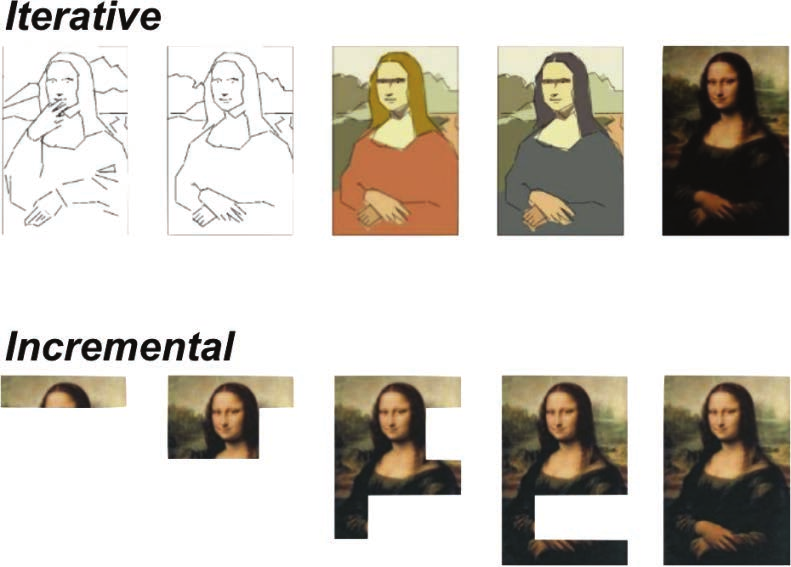

“《现代软件工程》准确描述了熟练从业者实际进行软件工程的方式。Farley 提出的技术不是僵化、规定性或线性的，但它们以软件所需的方式保持纪律性：实证的、迭代的、反馈驱动的、经济的，并专注于运行代码。”
—Glenn Vanderburg，Nubank 工程总监
“有很多书会告诉你如何遵循特定的软件工程实践；这本书不同。Dave 在这里阐述的是定义软件工程的真正本质，以及它与简单手工艺的区别。他解释了为什么以及如何掌握软件工程，你必须成为学习和管理复杂性的大师，现有实践如何支持这一点，以及如何根据软件工程的优点来判断其他想法。这本书适合任何认真对待软件开发作为真正工程学科的人，无论你是刚入门还是已经构建软件数十年。”
—Dave Hounslow，软件工程师
“这些都是重要话题，很高兴有一本汇编将它们整合在一起。”
—Michael Nygard，《Release IT》作者，专业程序员和软件架构师
“我一直在阅读 Dave Farley 这本书的评审版，这正是我们需要的。它应该成为任何有志成为软件工程师或想掌握这门技艺的人的必读书籍。关于专业工程的务实、实用建议。它应该成为大学和训练营的必读书籍。”
—Bryan Finster，美国空军 Platform One 杰出工程师和价值流架构师
David Farley
Boston • Columbus • New York • San Francisco • Amsterdam • Cape Town Dubai • London • Madrid • Milan • Munich • Paris • Montreal • Toronto • Delhi • Mexico City São Paulo • Sydney • Hong Kong • Seoul • Singapore • Taipei • Tokyo
制造商和销售商用来区分其产品的许多名称都被声明为商标。当这些名称出现在本书中时，如果出版商知道商标声明，这些名称已用首字母大写或全部大写印刷。
作者和出版商在准备本书时已尽力谨慎，但不作任何明示或暗示的保证，且不承担错误或遗漏的责任。对于使用本书所含信息或程序而引起的附带或后果性损害，不承担任何责任。
有关批量购买本书或特殊销售机会的信息（可能包括电子版本；定制封面设计；以及针对您的业务、培训目标、营销重点或品牌利益的特定内容），请联系我们的企业销售部门：corpsales@pearsoned.com 或 (800) 382-3419。
政府销售咨询，请联系 governmentsales@pearsoned.com。
美国以外的销售问题，请联系 intlcs@pearson.com。
访问我们的网站：informit.com/aw
国会图书馆控制号：2021947543
版权所有 © 2022 Pearson Education, Inc.
封面图片：spainter_vfx/Shutterstock
保留所有权利。本出版物受版权保护，在进行任何禁止的复制、存储在检索系统中或以任何形式或方式传输（电子、机械、影印、录制或类似）之前，必须获得出版商的许可。有关权限、申请表格和 Pearson Education 全球权利与许可部门内的适当联系人的信息，请访问 www.pearson.com/permissions。
ISBN-13: 978-0-13-731491-1 ISBN-10: 0-13-731491-4
Pearson 致力于创建反映所有学习者多样性的无偏见内容。我们拥抱多样性的各个维度，包括但不限于种族、民族、性别、社会经济地位、能力、年龄、性取向和宗教或政治信仰。
教育是我们世界中促进公平和变革的强大力量。它有潜力提供改善生活和实现经济流动性的机会。当我们与作者合作为每种产品和服务创建内容时，我们认识到自己有责任展示包容性并融入多元化学术研究，以便每个人都能通过学习实现其潜力。作为世界领先的学习公司，我们有义务帮助推动变革，履行我们帮助更多人为自己创造更好生活、创造更美好世界的使命。
我们的抱负是有目的地为一个世界做出贡献，在这个世界中：
• 每个人都有通过学习获得成功的公平和终身机会。
[•] 我们的教育产品和服务具有包容性，代表了学习者的丰富多样性。
[•] 我们的教育内容准确反映了我们所服务学习者的历史和经历。
[•] 我们的教育内容促进与学习者的深入讨论，激励他们扩展自己的学习（和世界观）。
虽然我们努力呈现无偏见的内容，但我们希望听到您对这个Pearson产品的任何关切或需求，以便我们可以调查并解决它们。
[•] 请通过以下链接联系我们，报告任何潜在偏见的关切：
https://www.pearson.com/report-bias.html.
我在大学学习计算机科学，当然完成了几门名为”软件工程”或类似名称的课程模块。
当我开始学位学习时，我对编程并不陌生，已经为高中的职业图书馆实现了一个完全可用的库存系统。我记得对”软件工程”极其困惑。这一切似乎都是为了阻碍实际编写代码和交付应用程序而设计的。
当我在本世纪初毕业时，我在一家大型汽车公司的IT部门工作。正如你所期待的，他们非常重视软件工程。在这里我看到了我的第一个（但绝对不是最后一个！）甘特图，也是在这里我体验了瀑布式开发。也就是说，我看到软件团队在需求收集和设计阶段花费大量时间和精力，在实现（编码）上花费的时间要少得多，这当然延误到了测试时间，然后测试……嗯，剩下的时间不多了。
看起来我们被告知的”软件工程”实际上在阻碍创建对客户有用的优质应用程序。
像许多开发者一样，我觉得必须有更好的方法。
我阅读了关于极限编程和Scrum的内容。我想在一个敏捷团队中工作，为了找到这样的团队换了几次工作。很多公司说他们是敏捷的，但这往往归结为将需求或任务放在索引卡上，贴在墙上，称一周为冲刺(sprint)，然后要求开发团队在每个冲刺中交付”x”张卡以满足某个任意截止日期。摆脱传统的”软件工程”方法似乎也不起作用。
在我作为开发者职业生涯的第十年，我面试了伦敦一家金融交易所的工作。软件主管告诉我他们在做极限编程，包括TDD和结对编程。他告诉我他们在做一种叫做持续交付的东西，这就像持续集成，但是一直延伸到生产环境。
我一直在大型投资银行工作，那里的部署至少需要三个小时，而且通过一份12页的手动步骤和命令文档来”自动化”。持续交付看起来是个不错的想法，但肯定是不可能的。
这位软件主管是Dave Farley，当我加入公司时，他正在写他的持续交付这本书。
我在那里和他一起工作了四年，这四年改变了我的人生，成就了我的职业生涯。我们真的在做结对编程、TDD和持续交付。我还学习了行为驱动开发、自动化验收测试、领域驱动设计、关注点分离、防腐层、机械同情心(mechanical sympathy)以及间接层级。
我学习了如何在Java中创建高性能、低延迟的应用程序。我终于理解了大O记号的真正含义以及它如何应用于现实世界的编码。简而言之，我在大学里学到的和在书中读到的所有东西实际上都被使用了。
这些知识以一种有意义、有效果的方式应用，并交付了一个极高质量、高性能的应用程序，提供了以前没有的功能。更重要的是，我们在工作中很快乐，作为开发者很满足。我们不加班，在发布前没有冲刺时间，代码在这些年里没有变得更加纠结和难以维护，我们持续稳定地交付新功能和”业务价值”。
我们是如何做到这一点的？通过遵循Dave在这本书中概述的实践。当时这些实践并没有像现在这样形式化，Dave显然融入了他在许多其他组织的经验，缩小到适用于更广泛团队和业务领域的具体概念。
适用于高性能金融交易所的两三个同地办公团队的做法，不会完全等同于适用于制造公司大型企业项目或快速发展的创业公司的做法。
在我目前作为开发者倡导者的角色中，我与来自各种公司和业务领域的数百名开发者交谈，我听到了他们的痛点（其中许多即使在现在也与我20年前的经历没有太大不同）和成功故事。Dave在这本书中涵盖的概念足够通用，可以在所有这些环境中工作，同时又足够具体，具有实用的帮助性。
有趣的是，正是在离开Dave的团队之后，我开始对软件工程师这个称谓感到不舒服。我不认为我们作为开发者所做的是工程；我不认为是工程让那个团队成功。我认为工程对于我们在开发复杂系统时所做的事情来说过于结构化。我喜欢将其视为一种”工艺”的想法，因为它囊括了创造性和生产力的概念，即使它没有足够强调在规模化软件问题上工作所需的团队合作。阅读这本书改变了我的想法。
Dave清楚地解释了为什么我们对什么是”真正的”工程有误解。他展示了工程是一门基于科学的学科，但它不必是僵化的。他阐述了科学原理和工程技术如何应用于软件开发，并谈论了为什么我们认为是工程的基于生产的技术不适用于软件开发。
我喜欢Dave在这本书中所做的是，他采用了那些可能看起来抽象且难以应用到我们工作中必须处理的实际代码的概念，并展示了如何将它们用作思考我们具体问题的工具。
这本书拥抱了开发代码的混乱现实，或者我应该说，软件工程：没有单一的正确答案。事情会发生变化。在某个时间点正确的东西，有时在很短的时间后就变得非常错误。
本书的前半部分为不仅在这种现实中生存而且蓬勃发展提供了实用的解决方案。后半部分采用了一些可能被某些人认为是抽象或学术性的主题，并展示了如何应用它们来设计更好的（例如，更健壮或更可维护或”更好”的其他特征）代码。
在这里，设计绝对不意味着一页又一页的设计文档或UML图，而可能就像”在编写代码之前或期间思考代码”一样简单。（当我和Dave结对编程时注意到的一件事是他花在实际输入代码上的时间是多么少。
事实证明，在我们写代码之前思考我们要写什么实际上可以为我们节省大量的时间和精力。）
Dave没有回避或试图解释使用这些实践时可能出现的任何矛盾，或单个实践可能造成的潜在混淆。相反，因为他花时间讨论了权衡和常见的混淆领域，我第一次发现自己理解了，正是这些事物之间的平衡和张力创造了”更好的”系统。这是关于理解这些事物是指导原则，理解它们的成本和收益，并将它们视为用来审视代码/设计/架构的透镜，偶尔是可以调节的旋钮，而不是二进制的、非黑即白的、对错分明的规则。
阅读这本书让我理解了为什么在与Dave共事的那段时间里，我们作为”软件工程师”如此成功和满足。我希望通过阅读这本书，您能从Dave的经验和建议中受益，而无需为您的团队雇佣一位Dave Farley。
祝工程愉快！
—Trisha Gee，开发者倡导者和Java冠军
这本书将工程重新带回到软件工程中。在书中，我描述了一种实用的软件开发方法，它运用有意识的理性、科学思维方式来解决问题。这些想法源于持续应用我们在过去几十年中对软件开发所学到的知识。
我对这本书的目标是说服您，工程可能不是您想象的那样，而且当应用于软件开发时，它是完全适当和有效的。然后我将继续描述这种软件工程方法的基础，以及它如何工作和为什么有效。
这不是关于流程或技术的最新潮流，而是经过验证的实用方法，我们有数据表明什么有效，什么无效。
以小步骤迭代工作比不这样做效果更好。将我们的工作组织成一系列小型、非正式的实验，并收集反馈来指导我们的学习，使我们能够更谨慎地推进，并探索我们所处的问题和解决方案空间。将我们的工作分门别类，使每个部分都专注、清晰和易于理解，这使我们能够安全和谨慎地进化我们的系统，即使我们在开始时不了解目标。
这种方法为我们提供了关于在哪里聚焦和聚焦什么的指导，即使我们不知道答案。它提高了我们成功的机会，无论我们面临的挑战性质如何。
在这本书中，我定义了一个模型，说明我们如何组织自己来创建出色的软件，以及我们如何能够高效地做到这一点，并且在任何规模上，对于真正复杂的系统以及更简单的系统都适用。
一直都有一些团体做着出色的工作。我们受益于创新先驱们向我们展示了什么是可能的。然而，近年来，我们的行业已经学会了如何更好地解释什么真正有效。我们现在更好地理解了哪些想法更通用，可以更广泛地应用，并且我们有数据来支持这种学习。
我们可以更可靠地构建更好更快的软件，并且我们有数据来支持这一点。我们可以解决世界级的难题，我们也有许多成功项目和公司的经验来支持这些声明。
这种方法汇集了一系列重要的基础想法，并建立在之前工作的基础上。从某种程度上说，就新颖实践而言，这里没有什么新东西，但我描述的方法将重要的想法和实践汇集成一个连贯的整体，并为我们提供了可以构建软件工程学科的原则。
这不是一个零散想法的随机集合。这些想法紧密相连，相互强化。当它们结合在一起并持续应用于我们如何思考、组织和承担工作时，它们对工作的效率和质量产生重大影响。这是一种根本不同的思考我们所做工作的方式，即使每个单独的想法可能都很熟悉。当这些东西结合在一起并作为软件决策制定的指导原则应用时，它代表了开发的新范式。
我们正在学习软件工程的真正含义，这并不总是我们期望的那样。
工程是关于采用科学、理性主义方法在经济约束内解决实际问题，但这并不意味着这种方法既是理论的也不是官僚的。几乎按定义，工程是实用的。
过去定义软件工程的尝试犯了过于规范化的错误，定义了特定的工具或技术。软件工程不仅仅是我们编写的代码和使用的工具。软件工程不是任何形式的生产工程；这不是我们的问题。如果当我说工程时让您想到官僚主义，请阅读这本书并重新思考。
软件工程与计算机科学不是一回事，尽管我们经常混淆两者。我们既需要软件工程师也需要计算机科学家。这本书是关于我们需要应用的学科、流程和想法，以可靠和可重复地创建更好的软件。
为了配得上这个名字，我们期望软件工程学科能够帮助我们以更高的质量和效率解决面临的问题。
这样的工程方法也将帮助我们解决我们尚未想到的问题，使用尚未发明的技术。这样学科的想法应该是通用的、持久的和普遍的。
这本书是定义一组这样密切相关、相互关联的想法的尝试。我的目标是将它们组装成我们可以作为一种方法对待的连贯整体，这种方法几乎指导我们作为软件开发者和软件开发团队做出的所有决策。
软件工程作为一个概念，如果它要有任何意义的话，必须为我们提供优势，而不仅仅是采用新工具的机会。
并非所有想法都是平等的。有好想法，也有坏想法，那么我们如何区分它们呢？我们可以应用什么原则来评估软件和软件开发中的任何新想法，并决定它们是好是坏？
任何可以合理地归类为解决软件问题的工程方法都将具有普遍适用性和基础性范围。本书就是关于这些想法的。你应该使用什么标准来选择你的工具？你应该如何组织你的工作？你应该如何组织你构建的系统和编写的代码，以增加你创建成功的机会？
在这本书中，我声称我们应该从以下角度思考软件工程：
软件工程是应用经验的、科学的方法来寻找软件实际问题的高效、经济解决方案。
我的目标是雄心勃勃的。我想提出一个大纲、一个结构、一个方法，我们可以考虑将其作为软件的真正工程学科。其根本基于三个关键思想。
科学及其实际应用”工程”是在技术学科中取得有效进展的重要工具。
我们的学科本质上是学习和发现的学科，所以我们需要成为学习专家才能成功，而科学和工程是我们最有效学习的方式。
最后，我们构建的系统通常是复杂的，而且越来越复杂。这意味着，为了应对它们的开发，我们需要成为管理复杂性的专家。
第一部分”什么是软件工程？“首先探讨工程在软件背景下的真正含义。这是关于工程的原则和理念，以及我们如何将这些想法应用于软件。这是软件开发的技术理念。
第二部分”优化学习”探讨我们如何组织工作，以便能够小步前进。我们如何评估我们是在取得良好进展，还是仅仅在创造明天的遗留系统？
第三部分”优化复杂性管理”探讨管理复杂性所必需的原则和技术。这深入探讨了这些原则及其在创建高质量软件中的含义和适用性，无论软件的性质如何。
最后一部分，第四部分”支持软件工程的工具”描述了最大化我们学习机会并促进我们小步前进能力以及在系统增长时管理系统复杂性的想法和工作方法。
贯穿本书的侧边栏是对软件工程历史和理念的思考，以及思维如何发展。这些插入内容为本书中的许多想法提供了有用的背景。
在InformIT网站上注册你的《现代软件工程》副本，以便在更新和/或更正可用时方便访问。要开始注册过程，请访问informit.com/register并登录或创建帐户。输入产品ISBN(9780137314911)并点击提交。在已注册产品选项卡上查找此产品旁边的访问奖励内容链接，并点击该链接访问任何可用的奖励材料。如果您希望收到新版本和更新的独家优惠通知，请勾选接收我们邮件的框。
写这样一本书需要很长时间、大量工作和对众多想法的探索。在这个过程中帮助我的人们以各种不同的方式帮助了我，有时同意我的观点并强化我的信念，有时不同意并迫使我要么加强我的论证，要么改变我的想法。
我想首先感谢我的妻子Kate，她在各个方面都帮助了我。尽管Kate不是软件专业人士，但她阅读了这本书的大部分内容，帮助我纠正语法并完善我的信息。
我想感谢我的姐夫Bernard McCarty，在科学话题上与我讨论想法，并让我深入思考为什么我想谈论实验和经验主义以及许多其他事情。
我想感谢Trisha Gee不仅写了如此精彩的前言，而且在我需要鼓励时对这本书表现出热情。
我想感谢Martin Thompson总是在那里与我讨论计算机科学的观点，并且通常在几分钟内回应我相当随机的想法。
我想感谢Martin Fowler，尽管他忙于其他项目，但他给了我有助于加强这本书的建议。
多年来，我的许多朋友都间接地帮助我形成了对这些主题的思考，还有更多人：Dave Hounslow、Steve Smith、Chris Smith、Mark Price、Andy Stewart、Mark Crowther、Mike Barker等等。
我想感谢Pearson团队在本书出版过程中的帮助和支持。
我还要感谢一大批人——并非所有人我都认识——他们一直支持我、与我争论、挑战我、深思熟虑。多年来，我在Twitter和我的YouTube频道上讨论了许多这些想法，并因此参与了一些很棒的对话。谢谢！
[A01_Farley_FM_pi-xxviii_new1.indd 4] [07/10/21 1:25 PM]
David Farley 是持续交付的先驱者、思想领袖，也是持续交付、DevOps、TDD和软件开发领域的专家实践者。
Dave多年来一直担任程序员、软件工程师、系统架构师和成功团队的领导者，从现代计算的早期开始，他将计算机和软件工作的基本原理与开创性的创新方法相结合，改变了我们处理现代软件开发的方式。他挑战传统思维，领导团队构建世界级软件。
Dave是Jolt获奖图书《持续交付》的合著者，是受欢迎的会议演讲者，并运营着非常成功且受欢迎的”Continuous Delivery” YouTube频道，专注于软件工程主题。他构建了世界上最快的金融交易所之一，是BDD的先驱，Reactive Manifesto的作者，并凭借LMAX Disruptor获得了Duke开源软件奖。
Dave热衷于通过他的咨询服务、YouTube频道和培训课程分享专业知识，帮助全球开发团队改善其软件的设计、质量和可靠性。
Twitter: @davefarley77
YouTube频道: https://bit.ly/CDonYT
公司网站: https://www.continuous-delivery.co.uk
[A01_Farley_FM_pi-xxviii_new1.indd 27] [07/10/21 1:25 PM]
[A01_Farley_FM_pi-xxviii_new1.indd 4] [07/10/21 1:25 PM]
[9780137314911_print.indb 1] [06/10/21 5:26 PM]
[A01_Farley_FM_pi-xxviii_new1.indd 4] [07/10/21 1:25 PM]
软件开发是一个发现和探索的过程；因此，要在软件开发中取得成功，软件工程师需要成为学习的专家。
人类最好的学习方法是科学，所以我们需要采用科学的技术和策略，并将它们应用到我们的问题中。这经常被误解为我们需要成为物理学家，测量事物到在软件上下文中不合理的精度水平。工程学比那更务实。
当我说我们应该应用科学的技术和策略时，我的意思是我们应该应用一些非常基本但极其重要的想法。
我们大多数人在学校学到的科学方法被Wikipedia描述为：
• 特征化：对当前状态进行观察。
• 假设：创建一个描述，一个可能解释你观察的理论。
• 预测：基于你的假设做出预测。
• 实验：测试你的预测。
当我们用这种方式组织思维，开始基于许多小的、非正式的实验取得进展时，我们开始限制跳到不当结论的风险，最终做得更好。
[9780137314911_print.indb 3] [06/10/21 5:26 PM]
如果我们开始考虑在实验中控制变量，以便在结果中获得更多的一致性和可靠性，这会引导我们朝着更确定性的系统和代码方向发展。如果我们开始对自己的想法持怀疑态度，探索如何证伪它们，我们可以更快地识别并消除坏想法，取得更快的进步。
这本书深深植根于解决软件问题的实用、务实方法，基于对基本科学原理的非正式采用，换句话说，就是工程学！
支撑本书思想的软件工程的工作定义是：
软件工程是应用经验性、科学性方法来寻找软件实际问题的高效、经济解决方案。
采用软件开发的工程方法之所以重要，主要有两个原因。首先，软件开发总是一个发现和学习的过程；其次，如果我们的目标是”高效”和”经济”，那么我们的学习能力必须是可持续的。
这意味着我们必须以维持我们学习新事物和适应它们的能力的方式来管理我们创建的系统复杂性。
所以，我们必须成为学习的专家和管理复杂性的专家。
有五种技术构成了这种专注于学习的根基。具体来说，要成为学习的专家，我们需要以下内容：
• 迭代
• 反馈
• 增量主义
• 实验
• 经验主义
这是创建复杂系统的进化方法。复杂系统不会从我们的想象中完全成型地涌现出来。它们是许多小步骤的产物，我们在这些步骤中尝试我们的想法，并在过程中对成功和失败做出反应。这些是让我们能够完成这种探索和发现的工具。
以这种方式工作对我们如何安全地前进施加了限制。我们需要能够以促进探索之旅的方式工作，这是每个软件项目核心的探索之旅。
因此，除了对学习有激光般的专注外，我们还需要以允许我们在答案，有时甚至方向都不确定时取得进展的方式工作。
为此我们需要成为管理复杂性的专家。无论我们解决的问题性质如何，无论我们使用什么技术来解决它们，处理我们面临的问题和我们应用的解决方案的复杂性，是区分坏系统和好系统的核心差异化因素。
要成为管理复杂性的专家，我们需要以下要素：
• 模块化
• 内聚性
• 关注点分离
• 抽象化
• 松耦合
很容易看到这些想法并将其视为熟悉的概念而置之不理。是的，你几乎肯定对所有这些都很熟悉。本书的目标是将它们组织起来，并将它们放入一个连贯的软件系统开发方法中，帮助你最大化利用它们的潜力。
本书描述了如何使用这十个想法作为工具来指导软件开发。然后继续描述一系列想法，这些想法作为实用工具来推动任何软件开发的有效策略。这些想法包括：
• 可测试性
• 可部署性
• 速度
• 控制变量
• 持续交付
当我们应用这种思维时，结果是深远的。我们创造出更高质量的software，我们更快地产出工作，采用这些原则的团队中的人们报告说他们更享受工作，感受到更少的压力，拥有更好的工作生活平衡。
这些是大胆的声明，但它们同样有数据支持。
我在这本书的标题上纠结了很久，不是因为我不知道想叫它什么，而是因为我们的行业在software背景下重新定义了engineering的含义，以至于这个术语已经贬值了。
在software中，它经常被视为要么只是”代码”的同义词，要么是让人感到过度官僚主义和程序化而反感的东西。对于真正的engineering而言，没有什么比这更偏离事实的了。
在其他学科中，engineering简单地意味着”有效的东西”。它是你应用来增加做好工作机会的过程和实践。
如果我们的”software engineering”实践不能让我们更快地构建更好的software，那么它们就不是真正的engineering，我们应该改变它们！
这就是本书核心的基本思想，其目标是描述一个智力一致的模型，该模型汇集了一些位于所有优秀软件开发根基的基础原则。
永远不能保证成功，但通过采用这些心理工具和组织原则并将其应用于你的工作，你肯定会增加成功的机会。
软件开发是一项复杂、精密的活动。在某些方面，它是我们作为一个物种所从事的更复杂的活动之一。假设每个个人甚至每个团队都可以而且应该每次开始新工作时从零开始发明如何处理它，这是荒谬的。
我们已经学到了，并且继续学习着，哪些东西有效，哪些不有效。那么，正如Isaac Newton曾经说过的，如果每个人对每件事都有否决权，我们作为一个行业和团队，如何能够取得进展并站在巨人的肩膀上呢？我们需要一些一致同意的原则和一些指导我们活动的纪律。
这种思维路线的危险在于，如果应用不当，它可能导致严厉的、过度指令性的、“权威决定”式的思维。
我们会回到以前的坏想法，认为经理和领导者的工作就是告诉其他人做什么以及如何做。
过于”规定性”或过度”指令性”的大问题是，如果我们的一些想法是错误的或不完整的，我们该怎么办？它们不可避免地会是这样，那么我们如何挑战和反驳旧的、但根深蒂固的坏想法，并评估新颖的、潜在伟大的、未经试验的想法呢？
我们有一个非常强有力的例子来说明如何解决这些问题。这是一种方法，允许我们拥有智力自由来挑战和反驳教条，并区分时尚、纯粹的坏想法和伟大想法，无论它们的来源是什么。它允许我们用更好的想法替换坏想法，并改进好想法。从根本上说，我们需要一些结构，允许我们成长并发展改进的方法、策略、过程、技术和解决方案。我们称这个好例子为科学！
当我们将这种思维应用于解决实际问题时，我们称之为engineering！
本书是关于将科学式推理应用于我们的学科意味着什么，从而实现我们可以真正准确地称为software engineering的东西。
作为一个概念的软件工程创建于1960年代末。这个术语首先由Margaret Hamilton使用，她后来成为MIT仪器实验室软件工程部门的主任。Margaret正在领导为Apollo太空计划开发飞行控制software的工作。
在同一时期，北大西洋公约组织(NATO)在德国加米施-帕滕基兴召开会议，试图定义这个术语。这是第一次软件工程会议。
最早的计算机是通过翻转开关来编程的，甚至硬编码作为其设计的一部分。开拓者们很快意识到这种方式既缓慢又缺乏灵活性，于是”存储程序”的概念诞生了。这个概念首次明确区分了软件和硬件。
到1960年代后期，计算机程序已经变得足够复杂，使其创建和维护本身就变得困难。它们涉及解决更复杂的问题，并迅速成为允许某些类别问题得到解决的关键步骤。
人们认为硬件进步速度与软件进步速度之间存在显著差距。当时这被称为软件危机。
NATO会议的召开，部分是为了应对这一危机。
今天阅读会议记录，有许多想法显然是持久的。它们经受住了时间的考验，在今天和1968年一样真实。如果我们渴望识别定义我们学科的一些基本特征，这应该引起我们的兴趣。
几年后，回顾过去时，图灵奖得主Fred Brooks比较了软件与硬件的进步：
无论是在技术还是管理技术方面，都没有单一的发展，能够在十年内在生产力、可靠性、
简洁性方面承诺哪怕一个数量级的改进。[[2]]
Brooks说这话是与著名的Moore定律[,[3]]进行比较，硬件开发多年来一直在遵循这一定律。
[[2.] 来源：Fred Brooks 1986年的论文《没有银弹》。参见https:// bit.ly/2UalM4T.][ ]
[[3.] 1965年，Gordon Moore预测晶体管密度（不是性能）每年翻倍，后来]
[修正为每两年翻倍，在接下来的十年中（到1975年）。这一预测成为半导体]
[生产商的目标，并大大超出了Moore的预期，在之后的几十年中得到满足。一些]
[观察者认为我们正在达到这种爆炸性容量增长的终点，因为当前方法的限制]
[和量子效应的逼近，但在撰写本文时，高密度]
[半导体开发继续遵循Moore定律。]
[9780137314911_print.indb 7] [06/10/21 5:26 PM] [8] [第1章 介绍]
这是一个有趣的观察，我认为会令许多人感到惊讶，但本质上这一直是真实的。
Brooks继续指出，这与其说是软件开发的问题，不如说是对硬件性能独特、惊人改进的观察：
我们必须观察到，异常之处不是软件进步如此缓慢，而是计算机硬件进步如此迅速。自文明开始以来，没有其他技术在30年内实现了六个数量级的性价比提升。
他在1986年写下这段话，我们今天认为那是计算机时代的黎明。此后硬件进步继续保持这种步伐，对Brooks来说似乎如此强大的计算机与现代系统的容量和性能相比就像玩具。然而…他对软件开发改进速度的观察仍然是正确的。
范式转换的概念由物理学家Thomas Kuhn提出。
大多数学习是一种积累。我们建立层层理解，每一层都以前一层为基础支撑。
然而，并非所有学习都是如此。有时我们从根本上改变对某事的看法，这允许我们学习新事物，但这也意味着我们必须抛弃之前的东西。
在18世纪，有声望的生物学家（当时不叫这个名字）相信一些动物会自发产生。Darwin在19世纪中叶出现，描述了自然选择过程，这彻底推翻了自发产生的想法。
这种思维变化最终导致了我们对遗传学的现代理解，以及我们在更基础层面理解生命、创造允许我们操纵这些基因的技术、创造COVID-19疫苗和基因疗法的能力。
同样，Kepler、Copernicus和Galileo挑战了当时地球处于宇宙中心的传统智慧。他们提出了太阳系的日心模型。这最终导致Newton创建了万有引力定律，Einstein创建了广义相对论，使我们能够在太空旅行并创造像GPS这样的技术。
范式转换的概念隐含地包括这样的想法：当我们做出这样的转换时，作为这个过程的一部分，我们将抛弃一些我们现在知道不再正确的其他想法。
将software development视为真正的工程学科，植根于科学方法和科学理性主义哲学，其影响是深远的。
[M01_Farley_C01_p001-010.indd 8] [07/10/21 1:28 PM]
总结 [9]
这不仅在其影响和有效性方面是深远的，正如Accelerate
Book[,][[4]] []中如此雄辩地描述的那样，而且在抛弃这种方法所取代的想法的根本需要方面也是深远的。
这为我们提供了一种更有效学习和更高效抛弃坏想法的方法。
我相信我在本书中描述的software development方法代表了这样的范式转换。它为我们提供了关于我们所做的事情以及我们如何做这些事情的新视角。
将这种工程思维应用到软件中并不需要过于繁重或过度复杂。在创建软件时，转变思维范式——以不同的方式思考我们做什么以及如何做——应该帮助我们透过现象看本质，使软件开发变得更简单、更可靠、更高效。
这不是要增加官僚主义；而是要增强我们更可持续、更可靠地创建高质量软件的能力。
[4. “DevOps状态”报告背后的团队DORA，描述了他们从研究中创建的预测模型。来源：Accelerate: The Science of Lean Software and DevOps，作者Nicole Fosgren、Jez Humble和Gene Kim (2018)]
[M01_Farley_C01_p001-010.indd 9] [07/10/21 1:28 PM]
[A01_Farley_FM_pi-xxviii_new1.indd 4] [07/10/21 1:25 PM]
多年来，我一直在与人们讨论软件工程。因此我经常卷入数量惊人的关于造桥的对话中。这些对话通常以”是的，但是软件不是造桥”这句话开始，好像这是什么启示一样。
当然，软件工程与造桥不同，但大多数软件开发者心目中的造桥也不像真正的造桥。这种对话实际上是生产工程和设计工程之间的混淆。
当所涉及的学科要处理物理事物时，生产工程是一个复杂的问题。你需要让这些物理事物被创造出来达到某种精度和质量水平。
你需要你的产品在特定时间交付到空间中的某个具体位置，符合预定的预算，等等。当你的模型和设计被发现有缺陷时，你需要将理论想法适应到实际现实中。
数字资产完全不同。虽然与这些问题有一些类似之处，但对于数字产品而言，这些问题要么不真正存在，要么可以简化到微不足道的程度。任何类型的数字资产的生产成本基本上都是免费的，或者至少应该是这样。
对于大多数人类努力而言，“事物”的生产是困难的部分。设计一辆汽车、一架客机或一部手机可能需要努力和创造力，但将最初的原型设计和想法投入大规模生产要昂贵和复杂得多。
如果我们目标是以任何形式的效率来做这件事，情况尤其如此。由于这些困难，我们作为工业时代和工业时代思维的产物，自动地、几乎不假思索地担心任何重大任务的这个方面——生产。
在软件中，这导致的结果是我们相当一致地试图将”生产式思维”应用到我们的行业中。瀑布流程是软件的生产线。它们是大规模生产的工具。它们不是发现、学习和实验的工具，而这些才是或至少应该是我们职业的核心。
除非我们在软件开发选择上很愚蠢，否则对我们来说，生产就是触发构建！
它是自动的、按钮式的、极其可扩展的，而且便宜到最好认为是免费的。我们仍然可能犯错误并搞砸，但这些是已知并被工具和技术很好解决的问题。
“生产”不是我们的问题。这使我们的学科与众不同。它也使其容易受到误解和错误应用的思维和实践的影响，因为这种生产的便利性是如此不寻常。
即使在现实世界中，当造桥者正在建造第一座新型桥梁时，大多数人所认为的”造桥”也是不同的。在这种情况下，你有两个问题：一个与软件开发相关，一个不相关。
首先，不相关的那个——当建造哪怕是第一座新型桥梁时，因为它是物理的，你拥有我提到的所有生产问题，甚至更多。从软件的角度来看，这些可以被忽略。
第二个，在造桥的情况下，除了那些生产问题之外，如果你正在建造第一座新型桥梁，第二个真正困难的部分是你新桥的设计。
这很困难，因为当你的产品是物理的东西时，你无法快速迭代。当建造物理事物时，它们很难改变。
因此，其他学科的工程师采用建模技术。他们可能选择建造小型物理模型，现在可能会采用他们设计的计算机仿真或各种数学模型。
在这方面，我们软件开发者有巨大的优势。造桥者可能会创建他们提议设计的计算机仿真，但这只会是真实事物的近似。他们的仿真，他们的模型，将是不准确的。我们作为软件创建的模型，我们对问题的计算机仿真，就是我们的产品。
[1. 瀑布(Waterfall)，应用于软件开发，是一种分阶段、顺序的方法，通过将工作分解为一系列明确定义的阶段，各阶段之间有明确的交接来组织工作。这个想法是你依次处理每个阶段，而不是迭代。]
[9780137314911_print.indb 12] [06/10/21 5:26 PM]
设计工程，而非生产工程 [13]
我们不需要担心模型是否符合现实；我们的模型就是系统的现实，因此我们可以验证它们。我们不需要担心修改它们的成本。它们是软件；因此，它们比桥梁更容易改变。
我们是一个技术学科。我们喜欢在这个背景下思考自己，我猜大多数认为自己是专业软件开发者的人可能在教育中都接受过一些科学训练。
尽管如此，很少有软件开发以科学理性主义为准则。部分原因是我们在历史中走了一些弯路。部分原因是我们假设科学是困难的、昂贵的，在正常软件开发计划范围内无法实现。
这里错误的部分在于假设某种理想主义的精确性，这在任何领域都是不可能的，更别说软件开发领域。我们犯了寻求数学精确性的错误，这与工程学不是一回事！
在1980年代末和1990年代初，有很多关于更多编程结构化思想的讨论。关于软件工程意义的思考转向研究我们生成代码的工作方式。具体来说，我们如何以更有效的方式工作，识别和消除设计和实现中的问题？
形式化方法成为一个流行的想法。当时，大多数大学课程都会教授形式化方法。形式化方法是一种构建软件系统的方法，内置了对所编写代码的数学验证。这个想法是代码被证明是正确的。
这里的大问题是，虽然为复杂系统编写代码很难，但编写定义复杂系统行为并同时证明自己正确的代码更难。
形式化方法是一个吸引人的想法，但实用上它们在一般软件开发实践中没有得到广泛采用，因为在生产阶段，它们使代码更难产生，而不是更容易。
不过，更哲学的论证有点不同。软件是不寻常的东西；它显然吸引那些通常也喜欢数学思维的人。因此，对软件采用数学方法的吸引力是显而易见的，但也有些局限性。
考虑一个现实世界的类比。现代工程师会使用他们掌握的所有工具来开发新系统。他们会创建模型和仿真，计算数字以确定他们的系统是否会工作。他们的工作在很大程度上以数学为指导，但然后他们会真正尝试。
在其他工程学科中，数学确实是一个重要工具，但它不能取代测试和从现实世界经验中经验性学习的需要。现实世界有太多变量无法完全预测结果。如果仅凭数学就足以设计飞机，那么航空公司就会这样做，因为这比建造真实原型更便宜，但它们不这样做。相反，它们广泛使用数学来指导思考，然后通过测试真实设备来检查思考。软件与飞机或太空火箭不太一样。
软件是数字化的，运行在主要是确定性的设备上，称为计算机。因此，对于一些狭窄的上下文，如果问题足够简单、足够受限、足够确定性，以及变化性足够低，那么形式化方法可以证明一个案例。这里的问题是整个系统确定性的程度。如果系统在任何地方都是并发的，在任何地方与”现实世界”（人）交互，或者只是在足够复杂的领域工作，那么”可证明性”迅速爆炸变得不切实际。
因此，我们采用与航空同事相同的路线，在可能的地方应用数学思维，采用数据驱动、实用、经验性、实验性的学习方法，让我们在增量增长系统时适应系统。
当我写这本书时，SpaceX正忙着炸毁火箭，同时努力完善星舰(Starship)[2]。它当然已经为火箭、发动机、燃料输送系统、发射基础设施和其他一切设计的几乎每个方面构建了数学模型，但然后它测试它们。
即使是看似简单的事情，如从4毫米不锈钢切换到3毫米不锈钢，听起来像是一个相当可控的变化。SpaceX可以访问金属抗拉强度的详细数据。它有经验和从测试中收集的数据，确切显示由4毫米钢构造的压力容器有多强。
然而，在SpaceX计算数字后，它仍然建造实验原型来评估差异。它将这些测试件加压至破坏，以查看计算是否准确并获得更深入的洞察。SpaceX收集数据并验证其模型，因为这些模型肯定会在某种深奥的、难以预测的方式中出错。
我们相对于所有其他工程学科拥有的显著优势意味着我们在软件中创建的模型是我们工作的可执行结果，因此当我们测试它们时，我们正在测试我们的产品，而不是我们对产品现实的最佳猜测。
如果我们仔细工作以隔离我们感兴趣的系统部分，我们可以在与生产中完全相同的环境中评估它。因此，我们的实验仿真可以比任何其他学科更精确、更准确地代表我们系统的”现实世界”。
在撰写本文时，SpaceX正在开发一种新的完全可重复使用的航天器。SpaceX的目标是创建一个系统，让人们能够前往火星并在火星上生活，同时探索太阳系的其他部分。该公司采用了一种有意快速的迭代式工程风格，快速创建和评估一系列快速生产的原型。这是极端形式的设计工程，处于工程知识的极限，并展示了创造新事物所需条件的精彩例子。
在Glenn Vanderburg名为”真正的软件工程”的精彩演讲中，他说在其他学科中”工程意味着有用的东西”，而在软件领域几乎相反的情况变成了现实。
Vanderburg继续探讨为什么会出现这种情况。他描述了一种学术化的软件工程方法，这种方法过于繁重，几乎没有实践过它的人会推荐在未来的项目中使用。
它过于沉重，对软件开发过程没有增加任何重要价值。用Vanderburg的一句话来说：
[学术软件工程]之所以有效，只是因为关心的聪明人愿意绕过这个过程。
这在任何合理的定义下都不是工程。
Vanderburg对”工程即有用的东西”的描述很重要。如果我们选择定义为”工程”的实践不能让我们更快地制作更好的软件，那么它们就不符合工程的资格！
与所有物理生产过程不同，软件开发完全是一个发现、学习和设计的过程。我们的问题是探索问题，因此我们甚至比航天器设计师更应该应用探索技术而不是生产工程技术。我们的学科完全是设计工程的学科。
那么，如果我们对工程的理解经常混乱，工程到底是什么？
在Margaret Hamilton领导阿波罗飞行控制系统开发期间，没有可遵循的”游戏规则”。她说：“我们在每一个新的相关发现中发展我们的’软件工程’规则，而NASA的高层管理规则从’完全自由’转向了’官僚主义过度’。”
当时这样复杂项目的经验很少。所以团队经常要开拓新的领域。Hamilton和她的团队面临的挑战是深刻的，在1960年代没有Stack Overflow可以查找答案。
Hamilton描述了一些挑战：
太空任务软件必须是载人级别的。它不仅必须工作，还必须第一次就工作。不仅软件本身必须超级可靠，它还需要能够实时执行错误检测和恢复。我们的语言敢于让我们犯最细微的错误。我们必须自己想出构建软件的规则。我们从错误中学到的东西充满了惊喜。
同时，软件通常被看作是与其他更”成熟”的工程形式相比的”穷亲戚”。Hamilton创造术语软件工程的原因之一是试图让其他学科的人更认真地对待软件。
Hamilton方法背后的驱动力之一是专注于事物如何失败——我们出错的方式。
我对错误有一种迷恋，我永无止境的消遣是什么造成了特定的错误或一类错误，以及如何在未来防止它。
这种专注基于科学理性的问题解决方法。假设不是你可以计划并第一次就做对，而是你对所有想法、解决方案和设计都抱着怀疑态度，直到你想不出事情可能出错的方法。
偶尔，现实仍然会让你惊讶，但这是工程经验主义在起作用。
Hamilton早期工作中体现的另一个工程原则是”安全失败”的想法。假设是我们永远不能为每种情况编码，那么我们如何以允许我们的系统应对意外并仍能取得进展的方式编码？著名的是，正是Hamilton对这个想法未被要求的实现拯救了阿波罗11号任务，让月球模块鹰号成功降落在月球上，尽管计算机在下降过程中变得过载。
当Neil Armstrong和Buzz Aldrin在月球舱(LEM)中向月球下降时，宇航员和任务控制中心之间有一次交流。当月球舱接近月球表面时，计算机报告了1201和1202警报。宇航员询问他们是否应该继续或中止任务。
NASA犹豫了，直到其中一名工程师喊出”继续！“因为他理解软件发生了什么。
在阿波罗11号上，每次出现1201或1202警报时，计算机重启，重新启动重要的东西，比如控制下降发动机和运行DSKY让机组人员知道发生了什么，但没有重启所有错误调度的会合雷达作业。MOCR中的NASA人员知道——因为MIT已经广泛测试了重启能力——任务可以继续进行。
这种”故障安全”行为被编码到系统中，没有对何时或如何有用的任何具体预测。
所以Hamilton和她的团队引入了更具工程导向风格的两个关键属性：
思考，通过经验学习和发现，以及想象事情可能如何出错的习惯。
[[4.] 来源：“Peter Adler”（https://go.nasa.gov/1AKbDei）]
大多数字典对工程学一词的定义都包含常见的词汇和短语：“数学的应用”、“经验证据”、“科学推理”、“在经济约束内”。
我提出以下工作定义：
工程学是运用经验的、科学的方法来寻找高效、经济的实际问题解决方案。
这里的每个词都很重要。工程学是应用科学。它是实用的。使用”经验的”意味着学习和推进理解以及解决方案来解决问题。
工程学创造的解决方案不是抽象的象牙塔产物；它们是实用的，适用于问题和环境。
它们是高效的，并且是在理解和受经济状况约束的情况下创造的。
在软件开发中，对工程学含义的另一个常见误解是，工程学只是输出——代码或者可能是其设计。
这种理解过于狭隘。对SpaceX来说，工程学意味着什么？它不是火箭；火箭是工程学的产品。工程学是创造它们的过程。火箭中确实有工程学，它们确实是”工程结构”，但除非我们对这个主题有奇怪的狭隘观点，否则我们不会仅仅将焊接金属的行为视为工程学。
如果我的定义有效，那么工程学就是将科学理性主义应用于解决问题。真正体现工程学的是”解决问题”，而不仅仅是解决方案本身。它是过程、工具和技术。它是思想、哲学和方法，这些共同构成了一个工程学科。
我在写这本书时有一个不寻常的经历：我在YouTube频道上发布了一个关于游戏失败的视频，这个视频比我的大多数视频都要受欢迎得多。
我在说这是”software engineering的失败”时收到的最常见的负面反馈是，我在指责程序员而不是他们的管理者。我的意思是这是整个软件生产方法的失败。规划很糟糕，文化很糟糕，代码很糟糕（显然有很多bug）。
所以，在这本书中，当我谈论工程学时，除非我特别限定，否则我指的是制作软件所需的一切。过程、工具、文化——都是整体的一部分。
软件工程的早期努力主要集中在创建更好的编程语言上。第一批计算机几乎没有区分硬件和软件。它们通过将线插入接线板或拨动开关来编程。
有趣的是，这项工作通常交给”计算员”，通常是女性，她们之前在计算机（作为机器）出现之前就从事计算（数学）工作。
不过，这低估了她们的作用。在这一点上，由组织中”更重要”的人指定的”程序”通常是”我们想解决这个数学问题”的形式。工作的组织以及后来如何将其转化为适当的机器设置的具体细节，都留给了这些人类”计算员”。她们是我们学科的真正先驱！
今天我们会用不同的语言来描述这些活动。我们会将传递给工作人员的描述称为需求，将形成解决问题计划的行为称为编程，将”计算员”称为这些早期电子计算机系统的第一批真正的程序员。
下一个重大步骤是转向”存储程序”及其编码。这是纸带和穿孔卡片的时代。在程序存储媒体采用的第一步仍然相当核心。程序用机器码编写并存储在磁带或卡片上，然后输入机器。
能够在更高抽象层次上捕获想法的高级语言是下一个重大进步。这使程序员能够更快地取得进展。
到1980年代初，语言设计中几乎所有的基础概念都已经涵盖。这并不意味着在此之后没有进展，但大多数重大想法都已经涵盖了。
尽管如此，软件开发对语言作为我们学科核心思想的关注仍在继续。
确实有几个重要步骤影响了程序员的生产力，但可能只有一步给出了或接近给出了Fred Brooks的10倍改进。那就是从机器码到高级语言的步骤。
这个演进路径上的其他步骤是重要的，如过程化编程、面向对象编程和函数式编程，但所有这些想法都已经存在很长时间了。
我们行业对语言和工具的痴迷已经损害了我们的职业。这并不意味着在语言设计方面没有进展，但语言设计中的大多数工作似乎专注于错误的事情，比如语法进步而不是结构进步。
在早期，当然，我们需要学习和探索什么是可能的，什么是有意义的。但从那时起，大量的努力被投入，但进展相对较少。当
Fred Brooks说没有10倍的改进，他论文的其余部分专注于我们可以做什么来克服这个限制：
疾病管理的第一步是用细菌理论取代恶魔理论和体液理论。这一步，希望的开始，本身却粉碎了所有神奇解决方案的希望。
…系统应该首先运行起来，即使它除了调用适当的一组虚拟子程序外什么有用的事情都不做。然后，一点一点地充实它，子程序依次被开发成动作或对下一层空存根的调用。
这些想法基于比语言实现的琐碎细节更深刻、更深远的思想。
这些问题更多地与我们学科的哲学以及一些基础原则的应用有关，这些原则无论技术的性质如何都是正确的。
另一种思考方式是考虑我们如何生产帮助我们的东西。在人类历史的绝大部分时间里，我们创造的一切都是手工艺的产物。手工艺是创造东西的有效方法，但它有其局限性。
手工艺非常擅长创造”一次性”物品。在基于手工艺的生产系统中，每个物品不可避免地都是独特的。从最纯粹的意义上说，任何生产系统都是如此，但在基于手工艺的方法中，这更为真实，因为生产过程的精度和可重复性通常很低。
这意味着单独制作的工艺品之间的差异量更大。即使是最熟练的工匠也只能创造出具有人类精度和公差水平的物品。这严重影响了基于手工艺系统可靠地复制事物的能力。Grace Hopper说：
对我来说，编程不仅仅是一门重要的实用艺术。它也是知识基础方面的一项巨大事业。
我们经常对基于手工艺的生产产生情感反应。作为人类，我们喜欢差异；我们喜欢我们珍爱的手工制品体现了创造它的工匠的技能、爱心和关怀的感觉。
然而，从根本上说，基于手工艺的生产质量从根本上是低质量的。无论多么有才华，人类都不如机器准确。
我们可以制造能够操纵单个原子，甚至亚原子粒子的机器，但如果人类能够手工生产出精度为1/10毫米的东西，那就是极其有才华的。
这种精度在软件中如何重要？让我们思考一下当我们的程序执行时会发生什么。人类可以在大约13毫秒的极限内感知变化，任何变化。处理图像或对某事做出反应需要数百毫秒。
在撰写本文时，大多数现代消费级计算机以大约3GHz的时钟周期运行。这是每秒30亿个周期。现代计算机是多核的，并行操作指令，所以它们通常每个周期处理多于一个指令，但让我们忽略这一点，为了简单起见，假设每个在寄存器之间移动值、添加它们或引用某些缓存内存片段的机器指令都需要一个时钟周期。
这是每秒30亿次操作。如果我们做数学计算，计算现代计算机在人类能够感知任何外部事件的绝对最短时间内可以处理多少指令，这个数字是39,000,000条指令！
如果我们将工作质量限制在人类尺度的感知和准确性上，我们最多只是在1:(3900万)的速率下采样正在发生的事情。那么，我们错过某些东西的机会是什么？
手工艺和工程之间的这种差异突出了工程在软件环境中重要的两个方面：精度和可扩展性。
精度是显而易见的：通过应用工程技术，我们可以比手工以更高的细节分辨率操纵事物。可扩展性可能不太明显，但更重要。工程方法不像基于手工艺的方法那样受到限制。
任何依赖人类能力的方法的局限性，最终都受到人类能力的限制。如果我致力于实现某些非凡的事情，我可能学会画一条线、锉一块金属，或将皮革汽车座椅缝制到毫米的微小分数内，但无论我多么努力，无论我多么有天赋，人类肌肉和感官的精确度都有硬性限制。
然而，工程师可以创造一台机器来制造更小、更精确的东西。我们可以制造机器(工具)来制造更小的机器。
这种技术可以一直扩展到量子物理学的极限，一直扩展到宇宙学的极限。至少在理论上，没有什么能阻止我们通过应用工程来操纵原子和电子(如我们已经在做的)或恒星和黑洞(如我们有一天可能做的)。
[5. 原子大小不同，但通常以十几皮米(1 x 10^-12m)为单位测量。所以，人类手工艺的最佳水平比一台好机器的精度低1000万倍。]
[6. “实时有多快？人类感知与技术，”https://bit.ly/2Lb7pL1]
为了更清楚地将这一点放入软件的语境中，如果我们非常熟练并且训练得很努力，我们或许可以足够快地输入文本和点击按钮来测试我们的软件，以至于可以想象能够在几分钟内完成一次软件测试。为了比较起见，让我们假设我们每分钟可以执行一次软件测试（这个节奏我无法想象自己能够持续很长时间）。
如果我们每分钟能运行一次测试，那么与计算机相比，我们的测试不足程度达到了几十万倍，可能是几百万倍。
我曾经构建过在大约2分钟内运行约30,000个测试用例的系统。我们本可以进一步大幅扩展规模，但没有理由这样做。Google声称每天运行1.5亿次测试执行。这相当于每分钟104,166次测试[7]。
我们不仅可以使用计算机进行比人类快几十万倍的测试，而且只要我们的计算机有电，就可以维持这种速度。这是可扩展的！
工程扩展的另一种方式，而手工艺不能做到的。工程思维倾向于引导我们将问题分隔化。在1860年代美国内战之前，如果你想要一把枪，你会去找铁匠。铁匠是一个工匠，而且通常是男性！
铁匠会为你制作一整把枪。他会理解那把枪的每个方面，而且它对你来说是独一无二的。他可能会给你一个子弹模具，因为你的子弹会与其他人的不同，并且专门适合你的枪。如果你的枪有螺丝，每个螺丝几乎肯定都与其他螺丝不同，因为它们是手工制作的。
美国内战在当时是独特的。它是第一场武器大规模生产的战争。
有一个故事讲的是一个想要向北方各州销售步枪的人。他是一个创新者，似乎也是一个有点表演天赋的人。他去国会为获得为北方各州军队制造步枪的合同进行游说。
他带着一袋装满步枪部件的袋子。作为向国会议员展示的一部分，他将这袋部件倒在国会的地板上，并要求国会议员从堆中选择部件。他用这些部件组装了一把步枪，赢得了合同，并发明了大规模生产。
这是第一次使这种标准化成为可能。要使其成为可能，必须发生很多事情；必须设计机器（工具）来制造
[7] “Google持续集成测试现状”，https://bit.ly/3eLbAgB
[9780137314911_print.indb 21] [06/10/21 5:26 PM] [22] 第2章 什么是工程？
在某个定义的公差范围内可重复地相同的部件。设计必须是模块化的，以便部件可以组装，等等。
结果是毁灭性的。美国内战本质上是第一场现代战争。由于武器的大规模生产，数十万人丧生。这些武器比以前的武器更便宜、更容易维护和修理，也更准确。
所有这些都是因为它们被更精确地设计，但也因为有更多的武器。生产过程可以去技能化并扩大规模。工厂中的机械设备可以让技能较低的人创造出与大师相当精度的步枪，而不需要每件武器都有专家级的工匠大师。
后来，随着工具、生产技术和工程理解与纪律的提高，这些大规模生产的武器在质量和生产力方面都超过了甚至是最伟大的工匠大师，而且价格任何人都能负担得起。
一个简单化的观点可能会将此解释为”需要标准化”，或需要采用”软件的大规模生产”，但这再次混淆了我们问题的根本性质。这不是关于生产——而是关于设计。
如果我们设计一把像美国内战武器制造商那样模块化和组件化的枪，那么我们就可以更独立地设计那把枪的部件。从设计角度而不是从生产工程或制造角度来看这个问题，我们已经改善了构建枪支复杂性的管理。
在这一步之前，铁匠工匠大师如果想要改变枪支设计的某些方面，就需要考虑整把枪。通过将设计组件化，内战制造商可以逐步探索变化，一步步提高其产品的质量。Edsger Dijkstra说过：
编程的艺术就是组织复杂性的艺术。
工程的另一个常见方面，有时被用来拒绝工程作为适用于软件的思想，就是可重复性。
如果我们可以构建一台机器来可靠且准确地复制螺母和螺栓，我们就可以大量生产它们，所有螺栓的副本都将与所生产的螺母的任何副本一起工作。
这是一个生产问题，并不真正适用于软件。然而，支撑这种能力的更根本的思想确实适用于软件。
要制造螺母和螺栓，或任何其他需要可靠协同工作的东西，我们需要能够以一定的精度水平测量事物。测量的准确性是任何学科中工程的一个使能方面。
[9780137314911_print.indb 22] [06/10/21 5:26 PM]
可重复性和测量精度 [23]
让我们暂时想象一个复杂的软件系统。经过几周的运行后，假设系统失败了。系统重新启动，两周后又以几乎相同的方式再次失败；这里有一个模式。面对这种情况，专注于工艺的团队与专注于工程的团队会如何应对？
工艺型团队可能会决定他们需要更彻底地测试软件。因为他们以工艺思维思考，他们想要的是清楚地观察到失败。
这并不愚蠢；在这种情况下这是有道理的，但如何做到呢？我见过解决这类问题最常见的方案是创建一种叫做浸泡测试的东西。浸泡测试运行的时间会比正常失败间隔时间稍长一些，对于我们的例子来说就是三周。有时人们会尝试加速时间，让浸泡测试在更短时间内模拟问题周期，但通常不会这样做。
测试运行，系统在两周后失败，bug最终被识别并修复。
有没有替代这种策略的方法呢？当然有！
浸泡测试检测各种形式的资源泄漏。有两种方法来检测泄漏；你可以等待泄漏变得明显，或者你可以提高测量精度，在泄漏变得灾难性之前及早发现它。
我最近厨房里有一个泄漏。它在一根管道里，埋在混凝土中。我们在泄漏充分浸透混凝土、水开始在表面积聚时才发现了泄漏。这是”明显”的检测策略。
我们找了一个专业人士来帮助修复泄漏。他带来了一个工具，一个工程解决方案。这是一个高度敏感的麦克风，“聆听”地下泄漏的声音。
使用这个工具，他能够以足够的、超人的精度检测到埋在混凝土中微弱的漏水嘶嘶声，让他能够在几英寸内确定位置，并挖一个小沟来接触有缺陷的管道部分。
回到我们的例子：专注于工程的团队将使用精确测量而不是等待坏事发生。他们将测量软件性能，在泄漏成为问题之前检测到它们。
这种方法有多重好处；它意味着生产中的灾难性失败很大程度上得以避免，但也意味着他们能够获得问题指示和系统健康状况的宝贵反馈，而且要快得多。专注于工程的团队不需要运行数周的浸泡测试，而是可以在系统常规测试期间检测泄漏，并在几分钟内得到结果。David Parnas说：
软件工程经常被视为计算机科学的一个分支。这就像把
化学工程视为化学的一个分支一样。我们既需要化学家也需要化学工程师，但
他们是不同的。
要思考一般意义上的工程和具体的软件工程，我已经探索这些想法好几年了。我在软件会议上就这个话题发表过演讲，偶尔也在博客文章中写过这个话题。
我有时会从软件工艺主义理念的拥护者那里得到反馈。这种反馈通常是这样的形式：“你在否定工艺主义时遗漏了一些重要的东西。”
软件工艺主义的理念是重要的。它们代表了远离大仪式、以生产为中心的软件开发方法的重要一步，这些方法在它们之前就存在了。我的观点不是软件工艺主义是错误的，而是它还不够。
部分地，这些辩论始于一个错误的前提，我已经提到过的一个前提。许多软件工艺人员犯了一个常见错误，即假设所有工程都是关于解决生产问题的。我已经涵盖了这个问题；如果我们的问题是”设计工程”，那么与”生产工程”相比，这是一个非常不同的、更具探索性的、更具创造性的学科。
此外，我的软件工艺人员对话者担心抛弃软件工艺主义带来的收益的危险——即专注于以下方面：
• 技能
• 创造力
• 创新自由
• 学徒制度
这些对任何有效的、专业的软件开发方法都很重要。然而，它们并不局限于基于工艺的方法。软件工艺主义运动是改进软件开发的重要一步，通过重新关注重要的事情，前面列表中的事情就是其中一些重要的事情。
这些想法已经消失了，或者至少被1980年代和1990年代试图将某种命令控制、以生产为中心的方法强加到软件开发上的尝试所包含。这是一个糟糕的想法，因为虽然瀑布式流程和思维在步骤明确理解、可重复和可预测的问题中有其位置，但这与软件开发的现实几乎没有关系。
软件工艺主义更适合软件开发真正面临的问题类型。
基于工艺的问题解决方案的问题在于，它们不像基于工程的解决方案那样具有可扩展性。
工艺可以生产好的东西，但只能在某些界限内。
几乎在所有人类努力中，工程学科都能提高质量、降低成本，并普遍提供更稳健、更有弹性、更灵活的解决方案。
将技能、创造力和创新等理念仅与工艺联系起来是一个很大的错误。一般来说，工程师，特别是设计工程师，始终在丰富地展现所有这些品质。这些特质是设计工程过程的核心。
因此，采用工程方法来解决问题并不会在任何方面降低技能、创造力和创新的重要性。如果有什么不同的话，它反而放大了对这些特质的需求。
至于培训，我想知道我的软件工艺朋友是否认为，一个刚从大学毕业的新工程师会立即被赋予设计新桥梁或航天飞机的责任？当然不是！
职业生涯初期的工程师会与更有经验的工程师一起工作。他们将学习其学科的实践知识，他们的工艺，甚至可能比工匠学得更多。
我认为工艺和工程之间没有冲突。如果你对工艺持相当正式的观点，包括行会、学徒、熟练工和大师工匠，那么工程实际上就是从那里向前迈出的下一步。随着科学理性主义的兴起，紧随17世纪和18世纪启蒙思想之后，工程实际上是工艺的增强版，增加了更多的准确性和测量。工程是工艺更具可扩展性、更有效的后代。
如果你采用工艺的更通俗定义——想想工艺品集市——那么质量或进步就没有真正的标准，因此工程或许更像是一个飞跃。
工程，特别是将工程思维应用于设计，实际上是我们高科技文明与之前农业文明之间的区别。工程是一门允许我们承担令人震惊的复杂问题并找到优雅、高效解决方案的学科。
当我们将工程思维的原理应用于软件开发时，我们看到了质量、生产力和解决方案适用性方面可测量的、戏剧性的改进。
2019年，埃隆·马斯克的公司SpaceX做出了一个重大决定；它正在致力于创造航天器，有一天将允许人类在火星上生活和工作，并探索太阳系的其他部分。2019年，它从用碳纤维制造星舰改为用不锈钢制造。碳纤维是一个相当激进的想法；他们做了很多工作，包括用这种材料制造原型燃料箱。不锈钢也是一个激进的选择；大多数火箭都是用铝制造的，因为铝轻便且坚固。
SpaceX选择不锈钢而非碳纤维是基于三个因素：钢的每公斤成本显著低于碳纤维；高温性能，以应对重返大气层的温度，优于铝；低温、超低温性能显著优于这两种替代材料。
碳纤维和铝在极低温和高温下都比钢显著更弱。
你最后一次听到有人为与软件创建相关的决策做出听起来甚至模糊类似的辩护是什么时候？
这就是工程决策的样子。它们基于合理的标准，在特定温度下的强度，或经济影响。它仍然是实验性的，仍然是迭代的，仍然是经验主义的。
你基于面前的证据和你对那意味着什么的理论做出决策，然后测试你的想法以看它们是否有效。这不是某种完全可预测的过程。
SpaceX建造了测试结构，然后给它们加压，首先用水，然后用液氮，这样他们就可以测试材料（钢）和制造工艺的超低温性能。设计工程是一种深度探索性的获取知识的方法。
所有工程都是一场优化和权衡的游戏。我们试图解决某个问题，不可避免地，我们将面临选择。在制造火箭时，SpaceX面临的最大权衡之一是强度与重量之间的权衡。这是飞行器，实际上是大多数载具的常见问题。
理解我们面临的权衡是工程决策制定的一个重要、根本方面。
如果我们让系统更安全，它将更难使用；如果我们让它更分布式，我们将花更多时间整合它收集的信息。如果我们增加更多人员来加速开发，我们将增加通信开销、耦合和复杂性，所有这些都将拖慢我们的速度。
在软件生产中，从整个企业系统到单个函数的每个粒度级别，都必须考虑的关键权衡之一是耦合。（我们将在第13章中更详细地探讨这一点。）
我们行业的变化水平令人印象深刻，但我的论点是，这种变化中的大部分实际上并不重要。
在我写这篇文章时，我正在参加一个关于无服务器计算主题的会议。向无服务器系统的转移是一个有趣的变化；然而，AWS、Azure、Google或其他任何人提供的工具包之间的差异实际上并不重要。
采用serverless方法的决定将对系统设计产生一些影响。在哪里存储状态？在哪里操作状态？如何划分系统的功能？当设计单元是一个函数时，如何组织和导航复杂的系统？
这些问题比你如何指定函数或如何使用平台的存储或安全特性的细节更有趣，也更重要，无论你的目标是什么，它们对成功更关键。然而，我看到的几乎所有关于这个主题的演示都是关于工具的，而不是系统设计。
这就好像我是一个木匠，有人告诉我平头螺丝和十字头螺丝之间的重要区别，但没有告诉我螺丝有什么用处，什么时候使用它们，什么时候选择钉子。
Serverless计算确实代表了计算模型的一大进步。我对此不质疑。本书讨论的是让我们能够判断哪些想法重要、哪些不重要的理念。
Serverless之所以重要有几个原因，但主要是因为它鼓励更模块化的方法来设计，具有更好的关注点分离，特别是在数据方面。
Serverless计算通过将计算从”每字节成本”转变为”每CPU周期成本”来改变系统的经济性。这意味着，或者应该意味着，我们需要考虑非常不同类型的优化。
我们应该接受一种更加真正分布式的计算模型，使用非规范化存储和最终一致性模式，而不是通过规范化数据存储来优化系统以最小化存储。这些事情很重要，因为它们对我们创建的系统的模块化产生影响。
工具只有在它们对一些更基础的事情”产生影响”的程度上才重要。
不要轻视工艺的价值，这很重要。细心和对细节的关注是创造高质量作品所必需的。同样重要的是，不要轻视工程对放大工艺产品质量和有效性的重要性。
第一个建造可控制、重于空气、动力飞行器的人是莱特兄弟。他们是优秀的工匠，也是优秀的工程师。他们的大部分工作基于经验发现，但他们也对设计的有效性进行了真正的研究。除了是第一个建造飞行器的人之外，他们还是第一个建造风洞来测量机翼设计有效性的人。
飞机机翼是一个了不起的结构。莱特兄弟的建造是美丽的，尽管按现代标准来说极其粗糙的装置。它由木材和钢丝建造，覆盖着用香蕉油拉紧并做成防风的布料。
它和风洞被用来发展他们对空气动力学理论基础的理解，建立在早期先驱者工作的基础上。然而，莱特兄弟的飞行器总体上，特别是机翼，主要是通过试错过程而不是纯理论设计建造的。
在现代人眼中，它看起来更像是工艺而不是工程的产品。这部分是真的，但不完全是。许多人曾尝试基于工艺的方法来建造”飞行器”但失败了。莱特兄弟成功的重要原因之一是他们运用了工程学。他们进行了计算，创建并使用了测量和研究工具。他们控制变量，以便加深理解并完善飞行模型。然后他们创建模型、滑翔机和风洞部件来测试，然后发展他们的理解。他们建立的原理并不完美，但改进了不仅是实用性，还有理论。
当莱特兄弟实现重于空气的可控飞行时，他们的空气动力学研究使他们能够建造滑翔比为8.3:1的飞行器。
与现代飞机机翼相比，比如现代滑翔机的机翼：莱特飞行器的机翼是下弯的（慢速高升力翼型），按现代标准来说是重的，尽管在当时是轻型结构。它使用简单的天然材料并达到了这个8.3:1。
通过工程学、经验发现和实验，以及材料科学、空气动力学理论的完善、计算机建模等，现代滑翔机将有碳纤维、高展弦比机翼。它被优化得既轻又强，以至于你可以清楚地看到它在产生升力时弯曲和挠曲。它可以达到超过70:1的滑翔比，比莱特飞行器好近九倍。
工艺很重要，特别是如果工艺真正意味着创造力的话。我们的学科是一个深度创造性的努力，但工程学也是如此。我相信工程学实际上是人类创造力和独创性的高度体现。如果我们的目标是在软件中创造伟大的作品，这就是我们需要的那种思维。
软件工程作为一门学科的演进并没有真正实现许多人所希望的。软件已经改变了世界，并且正在改变世界。已经有了一些出色的作品和创新、有趣、令人兴奋的系统被建造出来，但对于许多团队、组织和个人开发者来说，如何成功，甚至如何取得进展，并不总是清楚的。
滑翔比是飞行器效率的一个衡量标准。该比值是行进距离之间的比值
下降的高度。例如，飞机每下降一英尺（或一米）（无动力）滑翔时，就会
向前移动8.3英尺（或米）。参见 https://en.wikipedia.org/wiki/Lift-to-drag_ratio。
我们的行业充斥着各种哲学、实践、流程和技术。技术专家们在最佳编程语言、架构方法、开发流程和工具等方面进行着宗教战争般的争论。我们的职业目标和策略应该是什么，人们往往只有松散的认识。
现代团队要与进度压力、质量和设计的可维护性作斗争。他们往往难以识别真正能打动用户的想法，也不允许自己有时间去了解问题域、技术以及将优秀产品投入生产的机会。
组织往往难以从软件开发中获得他们想要的东西。他们经常抱怨开发团队的质量和效率。他们往往误解了可以帮助克服这些困难的方法。
与此同时，我觉察到在我所重视其观点的专家中，对一些基本理念存在相当深层的共识，但这些理念往往没有被明确地表达出来，至少表达得不够清楚。
也许现在是时候重新思考这些基本要素了。我们学科共同的原则是什么？哪些理念在数十年内都会是正确的，而不仅仅适用于当前一代的技术工具？
软件开发不是一个简单的任务，也不是一个同质化的任务。然而，确实存在一些通用的实践。有一些思考、管理、组织和实践软件开发的方式，会对这项事业的所有问题方面产生重大甚至戏剧性的影响。
本书的其余部分旨在探索这些通用理念，并提供一个应该为所有软件开发所共有的基本原则清单，无论问题域是什么，无论工具是什么，无论商业或质量要求是什么。
在我看来，本书中的理念代表着我们事业本质中一些深层的、根本性的东西。
当我们把这些事情做对时，许多团队确实做到了，我们会看到更高的生产力，团队成员更少的压力和倦怠，设计中更高的质量，以及我们创建的系统更强的韧性。
我们构建的系统更能取悦用户。我们看到生产中的bug数量急剧减少，采用这些理念的团队发现，随着学习的深入，改变他们所工作系统的几乎任何方面都变得容易得多。这样做的底线结果通常是以这种方式实践的组织获得更大的商业成功。这些特质是工程的标志。
工程放大了我们的创造能力，使我们能够制造有用的东西，以信心和质量前进。它允许我们探索想法，最终扩展我们创造事物的能力，这样我们就可以构建更大、更复杂的系统。
我们正处在软件真正工程学科的诞生期。如果我们抓住这个机会，就可以开始改变软件开发的实践、组织和教学方式。
这很可能是一个世代性的变化，但它对雇用我们的组织以及整个世界都具有如此巨大的价值，我们必须尝试。如果我们能更快、更经济高效地构建软件会怎样？如果这些软件质量也更高、更容易维护、更具适应性、更有韧性，并且更好地满足用户需求会怎样？
在软件领域，我们某种程度上重新定义了工程的含义。确实在一些圈子里，我们开始将工程视为不必要的、繁重的、令人负担的东西，阻碍了”真正的软件开发”。其他学科的真正工程绝不是这些东西。其他学科的工程师进步更快，而不是更慢。他们创造的作品质量更高，而不是更低。
当我们开始采用实用的、理性的、轻量级的、科学的软件开发方法时，我们看到了类似的好处。软件工程将针对软件，但它也将帮助我们更快地构建更好的软件，而不是阻碍我们做到这一点。
不同学科的工程有所不同。桥梁建设与航空工程不同，也不同于电气工程或化学工程，但所有这些学科都有一些共同的理念。它们都牢固地建立在科学理性主义基础上，采用实用的、经验主义的方法来取得进步。
如果我们要实现定义一系列持久思想、理念、实践和行为的目标，并将它们集体归类于软件工程名下，这些理念必须对软件开发的现实相当基础，并且在变化面前保持稳健。
我们在行业中经常谈论变化。我们对新技术和新产品感到兴奋，但这些变化真的能”推动”软件开发的发展吗？许多让我们兴奋的变化似乎并没有产生我们有时认为它们会产生的那么大的影响。
我最喜欢的例子是Christin在一个精彩的会议演讲中展示的
Gorman。[[1]] 在其中，Christin 演示了当使用当时流行的开源对象关系映射库 Hibernate 时，实际上需要编写的代码比用 SQL 编写等效行为的代码更多，至少在主观上是这样；SQL 也更容易理解。Christin 继续有趣地将软件开发与制作蛋糕进行对比。你是用蛋糕粉制作蛋糕，还是选择新鲜食材从头开始制作？
[[1.] Source: “Gordon Ramsay Doesn’t Use Cake Mixes” by Christin Gorman,https://bit.ly/3g02cWO][ ]
我们行业中的许多变化都是短暂的，并不会改善事情。有些，如 Hibernate 示例中的情况，实际上会让事情变得更糟。
我的印象是，我们的行业难以学习，难以取得进步。这种相对缺乏进步的情况被我们代码运行的硬件所取得的令人难以置信的进步所掩盖。
我并不是想暗示软件没有进步——远非如此——但我确实相信进步的速度比我们许多人想象的要慢得多。请考虑一下，在你的职业生涯中，哪些变化对你思考和实践软件开发的方式产生了重大影响。哪些想法对你能够解决的问题的质量、规模或复杂性产生了影响？
这个列表比我们通常假设的要短。
例如，在我的职业生涯中，我使用过大约15或20种不同的编程语言。虽然我有自己的偏好，但只有两次语言变化从根本上改变了我对软件和设计的思考方式。
这些步骤是从汇编语言到 C 语言的步骤，以及从过程式编程到面向对象编程的步骤。在我看来，个别语言不如编程范式重要。这些步骤代表了我在编写代码时能够处理的抽象级别的重大变化。每一步都代表了我们能够构建的系统复杂性的阶跃变化。
当 Fred Brooks 写到没有数量级增益时，他遗漏了一些东西。可能没有任何10倍的增益，但确实存在10倍的损失。
我见过一些组织因其软件开发方法而受到束缚，有时是因为技术，更多时候是因为流程。我曾经在一个大型组织中做过咨询，该组织已经五年多没有将任何软件发布到生产环境中。
我们不仅似乎难以学习新想法；我们似乎几乎不可能丢弃旧想法，无论它们可能变得多么不可信。
我们发现难以丢弃坏想法的原因之一是，我们并没有真正有效地测量软件开发中的表现。
应用于软件开发的大多数指标要么无关紧要（velocity），要么有时积极有害（代码行数或测试覆盖率）。
在敏捷开发圈子里，长期以来一直认为无法测量软件团队或项目绩效。Martin Fowler 在2003年他广受阅读的 Bliki 中写到了这方面的一个方面。[[2]]
[[2.] Source: “Cannot Measure Productivity” by Martin Fowler,https://bit.ly/3mDO2fB][ ]
Fowler 的观点是正确的；我们没有可辩护的生产力测量方法，但这并不等同于说我们无法测量任何有用的东西。
Nicole Fosgren、Jez Humble 和 Gene Kim 在”DevOps 状态”报告[[3]] 和他们的书《加速：精益软件与 DevOps 的科学》[[4]] 中进行的宝贵工作，代表了能够做出更强、更基于证据的决策方面的重要进步。他们为软件团队绩效的有用测量提出了一个有趣且令人信服的模型。
有趣的是，他们不试图测量生产力；相反，他们基于两个关键属性评估软件开发团队的有效性。然后将这些测量用作预测模型的一部分。他们无法证明这些测量与软件开发团队绩效之间存在因果关系，但他们可以证明统计相关性。
这些测量是稳定性和吞吐量。具有高稳定性和高吞吐量的团队被归类为”高绩效者”，而在这些测量方面得分较低的团队则是”低绩效者”。
有趣的部分是，如果你分析这些高绩效和低绩效群体的活动，它们是一致相关的。高绩效团队共享共同的行为。同样，如果我们观察团队的活动和行为，我们可以预测他们在这些测量上的得分，它也是相关的。一些活动可以用来预测在这个尺度上的表现。
例如，如果你的团队采用测试自动化、基于主干的开发、部署自动化以及大约十个其他实践，他们的模型预测你将实践持续交付。如果你实践持续交付，该模型预测你在软件交付绩效和组织绩效方面将是”高绩效的”。
另外，如果我们观察被视为高绩效者的组织，那么存在共同的行为，比如持续交付和组织成小团队，这些是他们共享的。
因此，稳定性和吞吐量的测量为我们提供了一个可以用来预测团队结果的模型。
稳定性和吞吐量各自由两个测量来跟踪。
稳定性由以下测量跟踪：
• 变更失败率：变更在流程中特定点引入缺陷的比率
[•] 恢复故障时间: 在流程中特定点从故障中恢复需要多长时间
[[3.] 来源: Nicole Forsgren, Jez Humble, Gene Kim, https://bit.ly/2PWyjw7]
[4.] Accelerate Book描述了采用更严格开发方法的团队比不采用的团队”在新工作上花费44%更多时间”。参见 https://amzn.to/2YYf5Z8。]
衡量稳定性很重要，因为它实际上是对工作质量的衡量。它并不能说明团队是否在构建正确的东西，但它确实衡量了他们在交付具有可衡量质量的软件方面的有效性。
吞吐量通过以下指标跟踪：
[•] 前导时间: 开发流程效率的衡量。单行代码变更从”想法”到”可工作软件”需要多长时间？
[•] 频率: 速度的衡量。变更部署到生产环境的频率如何？
吞吐量是团队以可工作软件形式交付想法的效率衡量。
将变更交付到用户手中需要多长时间，实现的频率如何？这是团队学习机会的一个指标。团队可能不会抓住这些机会，但没有良好的吞吐量分数，任何团队的学习机会都会减少。
这些是我们开发方法的技术衡量指标。它们回答了”我们工作的质量如何？“和”我们能多高效地产出这种质量的工作？“这些问题。
这些是有意义的想法，但存在一些空白。它们不能说明我们是否在构建正确的东西，只能说明我们是否在正确构建，但仅仅因为它们不完美并不会削弱它们的实用性。
有趣的是，我描述的相关性模型比预测团队规模和是否应用持续交付(continuous delivery)走得更远。Accelerate的作者有数据显示与更重要事项的显著相关性。
例如，基于这个模型，由高绩效团队组成的组织比没有的组织赚更多钱。这里的数据表明开发方法与实践它的公司的商业结果之间存在相关性。
它还进一步打破了一个普遍持有的观念：“你只能拥有速度或质量，但不能兼得。”这根本不真实。在这项研究的数据中，速度和质量明确相关。通往速度的路径是高质量软件，通往高质量软件的路径是快速反馈，而通往两者的路径是优秀的工程。
在这些指标中获得良好分数与高质量结果的相关性很重要。它为我们提供了使用它们来评估对流程、组织、文化或技术变更的机会。
例如，假设我们担心软件的质量。我们如何改进它？我们可以决定改变我们的流程。让我们添加一个变更审批委员会(CAB)。
显然，额外审查和签署的增加将对吞吐量产生不利影响，这样的变更将不可避免地减慢流程。但是，它们能增加稳定性吗？
对于这个特定例子，数据已经出来了。也许令人惊讶的是，变更审批委员会不能改善稳定性。然而，流程的放缓确实对稳定性产生不利影响。
我们发现外部审批与前导时间、部署频率和恢复时间负相关，与变更失败率没有相关性。简而言之，外部机构(如管理者或CAB)的审批根本无法提高生产系统的稳定性，以恢复服务时间和变更失败率来衡量。然而，它确实会拖慢事情。实际上，这比根本没有变更审批流程更糟糕。[[5]]
我这里的真正观点不是取笑变更审批委员会，而是展示基于证据而非猜测做决定的重要性。
CAB是坏想法并不明显。它们听起来合理，现实中许多（可能大多数）组织试图这样管理质量。问题是它不起作用。
没有有效的衡量，我们无法判断它不起作用；我们只能做猜测。
如果我们要开始对决策制定应用更基于证据、科学理性的方法，你不应该相信我的话，或Forsgren及其合著者关于这个或任何其他事情的话。
相反，你可以在你的团队中自己进行这种衡量。衡量你现有方法的吞吐量和稳定性，无论那是什么。做出改变，无论那是什么。这个改变是否在这些指标中的任何一个上移动了指针？
你可以在优秀的Accelerate书中阅读更多关于这个相关性模型的内容。它描述了衡量方法和随着研究继续而演进的模型。我这里的观点不是复制那些想法，而是指出这应该对我们行业产生的重要，甚至可能深远的影响。我们终于有了一个有用的测量工具。
我们可以使用这个稳定性和吞吐量模型来衡量任何改变的效果。
我们可以看到组织、流程、文化和技术变更的影响。“如果我采用这种新语言，它能提高我的吞吐量或稳定性吗？”
我们也可以使用这些衡量指标来评估我们流程的不同部分。“如果我有大量手动测试，它肯定比自动化测试慢，但它能改善稳定性吗？”
我们仍然需要仔细思考。我们需要考虑结果的含义。如果某个东西降低了吞吐量但增加了稳定性，这意味着什么？
尽管如此，拥有有意义的度量标准来让我们评估行动是重要的，甚至是至关重要的，这是采用更基于证据的决策方法的关键。
[[5.] ][Accelerate][ by Nicole Forsgren, Jez Humble, and Gene Kim, 2018]
[9780137314911_print.indb 35] [06/10/21 5:26 PM] [36] [Chapter 3 Fundamentals of an Engineering Approach]
那么，这些基础理念是什么？在100年后仍然正确并且无论我们面临什么问题、使用什么技术都适用的理念是什么？
有两个类别：过程，或者甚至可以说是哲学方法，以及技术或设计。
更简单地说，我们的学科应该专注于两个核心能力。
我们应该成为学习专家。我们应该认识并接受我们的学科是一个创意设计学科，与生产工程没有有意义的关系，而是专注于掌握探索、发现和学习的技能。这是科学推理风格的实际应用。
我们还需要专注于提高管理复杂性的技能。我们构建的系统无法装进我们的脑袋。我们大规模构建系统，有大量的人员团队参与。我们需要成为管理复杂性的专家来应对这种情况，无论是在技术层面还是在组织层面。
科学是人类最佳的问题解决技术。如果我们要成为学习专家，我们需要采用并熟练掌握那种实用的、以科学为指导的问题解决方法，这是其他工程学科的本质。
它必须针对我们的问题进行定制。软件工程将不同于其他形式的工程，专门针对软件，就像航空航天工程不同于化学工程一样。它需要实用、轻量级，并且在我们解决软件问题的方法中无处不在。
在我们许多人认为是我们行业思想领袖的人们中，对这个话题存在相当大的共识。尽管众所周知，这些理念目前并未普遍甚至广泛地作为我们处理大部分软件开发的基础方法来实践。
这个类别中有五个相关联的行为：
• 迭代工作
• 采用快速、高质量的feedback
• 增量工作
• 实验性
• 实证性
如果你以前没有考虑过这个问题，这五个实践可能看起来抽象，与软件开发的日常活动相去甚远，更不用说软件工程了。
[9780137314911_print.indb 36] [06/10/21 5:26 PM]
[Exper ts at Managing Complexity] [37]
软件开发是一种探索和发现的练习。我们总是试图了解更多关于我们的客户或用户想要从系统中得到什么，如何更好地解决呈现给我们的问题，以及如何更好地应用我们可用的工具和技术。
我们了解到我们遗漏了一些东西，必须修复问题。我们学习如何组织自己更好地工作，我们学习更深入地理解我们正在处理的问题。
学习是我们所做一切的核心。这些实践是任何有效软件开发方法的基础，但它们也排除了一些不太有效的方法。
例如，瀑布开发方法不具备这些特性。尽管如此，这些行为都与软件开发团队的高性能相关联，并且几十年来一直是成功团队的标志。
第二部分从实践角度更深入地探讨这些理念中的每一个：我们如何成为学习专家，以及如何将其应用到我们的日常工作中？
作为一名软件开发者，我通过软件开发的镜头看世界。因此，我对软件开发中的失败以及围绕它的文化的看法很大程度上可以用两个信息科学理念来思考：并发性(concurrency)和耦合性(coupling)。
这些在一般情况下都很困难，不仅仅在软件设计中。因此，这些理念从我们系统的设计中泄露出来，影响我们工作的组织运作方式。
你可以用Conway定律这样的理念来解释这一点，但Conway定律更像是这些更深层真理的一个涌现特性(emergent property)。
你可以用更技术的术语来有效地思考这个问题。人类组织就像任何计算机系统一样，都是信息系统。它几乎肯定更复杂，但相同的基本理念适用。从根本上困难的事情，比如并发性和耦合性，在人的现实世界中也是困难的。
如果我们想要构建比最简单的玩具编程练习更复杂的系统，我们需要认真对待这些理念。我们需要在创建系统时管理我们创建的系统的复杂性，如果我们想要在超越单个小团队范围的任何规模上做到这一点，我们需要管理组织信息系统的复杂性以及更技术性的软件信息系统。
作为一个行业，我的印象是我们对这些理念关注太少，以至于我们所有在软件周围花费过时间的人都熟悉其结果：大泥球系统(big-ball-of-mud systems)、失控的技术债务、致命的bug数量，以及害怕对他们拥有的系统进行更改的组织。
[[6.] 1967年，Mervin Conway观察到”设计系统（广义定义）的任何组织都会产生
[一个设计的结构是组织沟通结构的副本。“参见https://bit.ly/3s2KZP2.]
我认为所有这些都是团队失去对其正在工作系统复杂性控制的症状。
如果你正在开发一个简单的、一次性软件系统，那么其设计质量就不那么重要。如果你想构建更复杂的东西，那么你必须将问题分解，这样你就可以思考其中的部分，而不会被复杂性所压倒。
你在哪里划分这些界限取决于很多变量：你正在解决的问题的性质、你正在使用的技术，甚至可能在某种程度上取决于你有多聪明，但如果你想解决更难的问题，你必须划分界限。
一旦你接受这个想法，我们就在讨论对我们创建的系统设计和架构产生重大影响的理念。在前面的段落中，我有点担心提到”聪明”作为参数，但它确实是一个参数。我担心的问题是我们大多数人都高估了自己用代码解决问题的能力。
这是我们可以从科学的非正式观点中学到的许多教训之一。最好从假设我们的想法是错误的开始，并基于这个假设工作。因此，我们应该对我们创建的系统中复杂性的潜在爆炸更加警惕，并在取得进展时努力勤奋和小心地管理它。
这个类别中也有五个想法。这些想法彼此密切相关，并与成为学习专家所涉及的想法相关联。尽管如此，如果我们要以结构化的方式管理任何信息系统的复杂性，这五个想法值得考虑：
• 模块化 • 内聚性 • 关注点分离 • 信息隐藏/抽象 • 耦合
我们将在第三部分更深入地探讨每个想法。
我们行业的工具通常不是我们认为的那样。我们使用的语言、工具和框架随时间和项目而变化。促进我们学习并允许我们处理我们创建系统复杂性的想法才是我们行业的真正工具。通过关注这些事情，它将帮助我们更好地选择语言、使用工具，并以帮助我们更有效地用软件解决问题的方式应用框架。
拥有一个允许我们评估这些事情的”标尺”是一个巨大的优势，如果我们想基于证据和数据而不是时尚或猜测来做决定。在做选择时，我们应该问自己，“这是否提高了我们创建软件的质量？”用稳定性的指标来衡量。或者”这是否提高了我们创建该质量软件的效率”用吞吐量来衡量。如果它没有使这些事情中的任何一个变得更糟，我们可以选择我们喜欢的；否则，我们为什么要选择做一些使这些事情中的任何一个变得更糟的事情呢？
迭代被定义为”一个程序，其中操作序列的重复产生逐渐接近期望结果的结果。”
从根本上说，迭代是一个推动学习的程序。迭代允许我们学习、反应并适应我们所学到的内容。没有迭代以及密切相关的收集反馈活动，就没有持续学习的机会。从根本上说，迭代允许我们犯错误并纠正它们，或者取得进步并增强它们。
这个定义也提醒我们，迭代允许我们逐步接近某个目标。它的真正力量在于，即使我们真的不知道如何接近我们的目标，它也允许我们这样做。只要我们有某种方法来判断我们是否更接近或更远离我们的目标，我们甚至可以随机迭代并仍然实现我们的目标。我们可以丢弃那些让我们偏离更远的步骤，更喜欢那些让我们更近的步骤。这本质上就是进化的工作原理。这也是现代机器学习(ML)工作的核心。
团队至少从20世纪60年代就开始实践更迭代、反馈驱动的开发方法。然而，在科罗拉多州滑雪胜地举行的领先思想家和实践者的著名会议之后，敏捷宣言概述了一个共享哲学，它支撑了这些更灵活、以学习为中心的策略，与当时常见的更重量级流程形成对比。
敏捷宣言是一个简单的文档。它是9行文本和12个原则，但它产生了巨大的影响。
在此之前，除了少数安静的反对者，传统智慧是如果你在软件中做任何”严肃”的事情，那么你需要瀑布式开发的以生产为中心的技术。
敏捷思维花了很长时间才得以突破，但现在它，而不是瀑布式方法，已经成为主流方法，至少在思维层面是如此。
然而，大多数组织在本质上仍然在组织层面，如果不是技术层面，被瀑布式思维在文化上所主导。
尽管如此，敏捷思维建立在比之前思想更稳定的基础之上。从本质上讲，最能体现敏捷社区思想，也许是理想的短语是”检查和适应”。
这种观念的转变意义重大，但还不够。为什么这一步很重要？因为它代表了朝着将软件开发视为学习练习而不是生产问题的方向迈进的一步。瀑布式流程可以有效解决某些类型的生产问题，但对于涉及探索的问题来说，它们是极其不合适的。
这一步很重要，因为尽管Fred Brooks的10倍提升在技术、工具或流程方面似乎不可用，但有一些方法效率极低，将它们提升一个数量级是完全可能的。当应用于软件开发时，瀑布式就是这样的候选者。
瀑布式思维从这样的假设开始：“如果我们只是足够努力地思考/工作，我们就能在开始时把事情做对。”
敏捷思维颠倒了这一点。它从我们不可避免地会犯错的假设开始。“我们不会理解用户想要什么”，“我们不会一开始就把设计做对”，“我们不知道是否已经捕获了我们编写的代码中的所有bug”，等等。因为他们一开始就假设会犯错误，敏捷团队以一种非常有意地减轻错误成本的方式工作。
[[2.] The Agile Manifesto, https://agilemanifesto.org/]
敏捷思维与科学分享这一理念。从怀疑的角度接近想法，寻求证明想法是错误的，而不是证明它们是正确的（“可证伪性”），是更科学思维方式的内在特征。
这两种思想流派——可预测性versus探索性——促进了项目组织和团队实践方面截然不同、不兼容的方法。
基于敏捷思维的假设，我们将安排团队、流程和技术的组织，让我们能够安全地犯错，容易观察到错误，做出改变，理想情况下，下次做得更好。
关于Scrum versus Extreme Programming(极限编程)或持续集成versus特性分支或TDD versus有技能的开发者努力思考，或其他任何争论，都是无关紧要的。从本质上讲，任何真正敏捷的流程都是”经验过程控制”的练习。
这比之前以生产为中心、基于预测的瀑布式方法更适合任何类型的软件开发。
迭代工作在一些基本方面不同于更有计划的、顺序的方法。不过，它是一种更有效的策略。
对许多读者来说，这可能看起来很明显，但事实并非如此。软件开发历史的大部分时间都在假设迭代是不必要的，详细的所有步骤计划是软件开发早期阶段的目标。
迭代是所有探索性学习的核心，是任何真正知识获取的基础。
如果我们将软件工程作为发现和学习的练习来对待，迭代必须是其核心。然而，迭代工作的各种其他优势可能一开始并不明显。
也许最重要的想法是，如果我们开始改变工作实践以更迭代地工作，它会自动缩小我们的关注焦点，鼓励我们以更小的批次思考，更认真地对待模块化和关注点分离。这些想法开始时是更迭代工作的自然结果，但最终成为增强我们工作质量的良性循环的一部分。
Scrum和Extreme Programming (XP)的共同思想之一是我们应该完成小的工作单元。敏捷思维过程是：“软件开发中的进度难以衡量，但我们可以衡量完成的功能，所以让我们处理更小的功能，这样我们就能看到它们何时完成。”
这种批量规模的减少是一个重大进步。然而，当你想知道”完成”需要多长时间时，情况就变得复杂了。这种迭代的开发方法不同于
更传统的思维方式。例如，在持续交付中，我们工作的方式是每天多次的每个小变更都是可发布的。它应该完成到我们可以安全可靠地在任何时候将软件发布到生产环境的程度。那么在这种情况下，“完成”到底意味着什么？
每个变更都是完成的，因为它是可发布的，所以”完成”的唯一合理衡量标准是它向用户交付了一些价值。这是一个非常主观的事情。我们如何预测需要多少变更才能代表对用户的”价值”？大多数组织所做的是猜测一组功能，这些功能组合起来代表”价值”，但如果我能在软件生命周期的任何时候发布，这是一个有些模糊的概念。
存在一个问题，即猜测构成”价值”的变更集合是有问题的，因为它依赖于这样一个假设：你在开始时就知道所需的所有功能，并能确定朝向某种”完整性”概念的进展。这是对敏捷运动创始人本意的过度简化，但这是大多数传统组织在向敏捷规划过渡时所做的假设。
迭代工作的一个更微妙的优势是我们有选择权。我们可以对创建的产品进行迭代，并基于客户和用户的良好反馈来引导它们走向更高价值的结果。这是这种工作方式更有价值的方面之一，但往往被试图采用它的传统组织所忽视。
尽管如此，无论意图或结果如何，这种基于小批次的方法确实鼓励我们作为一个行业减少所要处理功能的规模和复杂性，这是一个非常重要的步骤。
敏捷规划在很大程度上依赖于将工作分解为足够小的部分，以便我们能够在单个sprint或迭代中完成功能。最初这被推广为衡量进展的方式，但它产生了更深远的影响，即定期提供对我们工作质量和适当性的明确反馈。这种变化提高了我们学习的速度。这个设计有效吗？我们的用户喜欢这个功能吗？系统够快吗？我消除了所有bug吗？我的代码易于使用吗？等等。
以小规模、明确且生产就绪的步骤进行迭代工作为我们提供了很好的反馈！
迭代工作鼓励我们采用防御性的设计方法。（我们在第三部分更深入地讨论这些细节。）
我的朋友Dan North首次向我提出了关于敏捷思维基础的有趣观点。Dan将瀑布式思维和敏捷思维的差异描述为本质上是一个经济学问题。瀑布式思维是基于这样的假设：随着时间的推移，变更变得越来越昂贵。它经典地讨论了变更成本模型，如图4.1所示。
经典的变更成本
这种世界观是有问题的。这意味着如果这个模型是正确的，唯一明智的解决方案就是在项目生命周期的早期做出最重要的决策。困难在于，在项目生命周期的早期，我们对项目的了解是最少的。因此，我们基于信息不足的猜测来做出项目生命周期中的关键决策，无论我们在这个阶段多么努力地去获得信息。
软件开发从不以”…每项工作都被完全理解”开始，无论我们在开始工作之前多么努力地分析事情。鉴于我们从不以”定义明确的输入集”开始，无论我们多么勤奋地规划，定义过程模型或瀑布式方法在第一关就失败了。让软件开发适应这种不合适的模式是不可能的。
惊喜、误解和错误在软件开发中是正常的，因为这是一个探索和发现的练习，所以我们需要专注于学习如何保护自己免受沿途不可避免的失误。
Dan North的替代观点是这样的：鉴于经典的变更成本模型显然不能帮助我们，什么能帮助我们呢？如果我们能够平坦化变更成本曲线会有多好？（见图4.2）
如果我们可以改变主意、发现新想法、发现错误并修复它们，所有这些都以大致相同的成本在任何时候发生，会怎么样？如果变更成本曲线是平坦的呢？

敏捷的变更成本
那么，实现平坦的变更成本曲线需要什么？
我们不能花费大量时间在分析和设计上而不创造任何东西，因为这意味着更多时间不学习真正有效的东西。所以我们需要压缩事情。我们需要迭代工作。我们需要做刚好足够的分析、设计、编码、测试和发布，以便将我们的想法交到客户和用户手中，这样我们就能看到真正有效的东西。我们需要对此进行反思，然后基于这种学习，调整我们接下来要做的事情以利用它。
这是持续交付核心思想之一（见图4.3）。

持续交付中的迭代
推广瀑布式思维的人是善意的。他们认为这是最好的前进方式。我们的行业花了几十年时间试图让这种方法奏效，但它行不通。
这里的困难在于瀑布式方法听起来非常合理：“开始前仔细思考”和”仔细规划你要做的事情，然后勤奋地执行计划”。基于我们的工业时代经验，这些想法很有道理。如果你有一个定义明确的过程，这种定义的过程控制方法效果非常好。
在制造实体物品时，生产工程和规模化的问题往往比设计问题更重要。然而，即使在实体物品制造中，这种情况现在也在发生变化。随着制造业变得更加灵活，一些制造工厂能够改变方向，那么即使在制造业中，这种僵化的流程也受到了挑战和颠覆。不过，这种”生产线”思维在至少一个世纪的时间里主导了大多数组织，我们在某种程度上被程序化地以这种方式思考问题。
要认识到你所操作的范式从根本上是错误的，需要一个困难的智力飞跃。当整个世界都假设这个范式是正确的时候，这更加困难。
如果语言、形式化或图表化无法提供10倍的改进，我们还能从哪里寻找？
我们组织自己的方式以及我们对学习和发现技能和技术的方法——这些似乎是我们学科固有的——似乎是一个值得探索的富有成果的途径。
在软件开发的早期，早期的程序员通常在数学、科学或工程方面受过高等教育。他们作为个人或小团队开发系统。这些人是新领域的探索者，就像大多数探索者一样，他们带着自己的经验和偏见。早期的软件开发方法往往非常数学化。
随着计算机革命的兴起，软件开发变得更加普及，需求迅速超过了供应。我们需要更快地生产更多、更好的软件！所以我们开始观察其他行业，试图复制他们如何高效大规模工作的方法。
这就是我们犯下可怕错误的地方——误解了软件开发的根本性质，并错误地应用了制造业和生产业的技术。我们招募了大批开发人员，试图创建软件的大规模生产线等价物。
做这些的人并不愚蠢，但他们确实犯了一个大错误。这个问题是多方面的。软件是复杂的东西，它的创建过程与传统的”生产问题”没有真正的关系，而大多数人似乎就是这样考虑它的。
将我们的学科工业化的最初尝试是痛苦的、普遍的、非常有害的。这导致了大量软件的创建，但其中大部分都有问题。它们缓慢、低效、延迟，没有交付用户想要的东西，并且极难维护。
在20世纪80年代和90年代，软件开发作为一门学科爆炸式增长，许多大型组织应用于它的流程的复杂性也是如此。
这些失败是尽管我们学科中的主要思想家很好地理解了这个问题的许多方面这一事实。
Fred Brooks的《人月神话》再次详细描述了这些问题以及如何在1970年避免它们。如果你从未读过我们学科中的这部开创性作品，你可能会惊讶于它如何准确地描述了你作为软件开发人员在工作中几乎每天面临的问题。尽管它是基于Brooks在20世纪60年代末使用当时相对粗糙的技术和工具为IBM 360大型机开发操作系统的经验。Brooks再次触及了比语言、工具或技术更重要、更根本的东西。
在这一时期，许多团队生产了出色的软件，往往完全忽略了当时关于项目应该如何规划和管理的”智慧”。这些团队有一些共同的主题。他们往往规模较小。开发人员与他们软件的用户关系密切。他们快速尝试想法，当事情不如预期时改变策略。
这在当时是革命性的东西——实际上是如此革命性，以至于许多这些团队基本上是在隐身模式下运作，因为他们工作的组织应用了减慢他们速度的重量级流程。
到20世纪90年代末，作为对这些重量级流程的反应，一些人开始尝试定义更有效的策略。几种不同的竞争性软件开发方法越来越受欢迎。Crystal、Scrum、极限编程和其他几种方法试图捕捉这种非常不同的方法。这些观点被形式化为敏捷宣言。
在软件中，敏捷革命推翻了那个规范，但即使在今天，许多组织，也许甚至是大多数组织，在内心深处仍然保持着计划/瀑布驱动的模式。
除了识别问题的困难之外，在那些坚持瀑布式规划的组织中仍然存在相当多的一厢情愿的想法。如果一个组织能够做到以下几点，那将是很好的：
• 正确识别其用户的需求
• 准确评估如果满足这些需求对组织的价值
• 准确估计满足这些需求的成本
• 对收益是否超过成本做出理性决定
• 制定准确的计划
• 不偏离地执行计划
• 最后数钱
问题是，这在业务层面和技术层面都不可信。现实世界，以及其中的软件开发，就是不这样工作的。
行业数据显示，对于世界上最好的软件公司来说，他们三分之二的想法
产生零值或负值[3]。我们在猜测用户需求方面表现糟糕。即使询问用户，他们也不知道自己想要什么。最有效的方法是迭代。这意味着接受我们的一些想法，甚至许多想法可能是错误的，并以尽可能快速、便宜和高效的方式进行尝试。
评估想法的商业价值也是出了名的困难。IBM总裁Thomas J. Watson有一句著名的话，他曾预测世界对计算机的需求有一天会达到五台的高度！
这不是技术问题；这是人类局限性问题。为了取得进步，我们必须冒险，进行猜测，愿意承担风险。然而，我们在猜测方面表现很糟糕。因此，为了最高效地取得进步，我们必须组织好自己，确保我们的猜测不会摧毁我们。我们需要更加谨慎、更加防御性地工作。我们需要小步前进，限制猜测的范围或爆炸半径，并从中学习。我们需要迭代地工作！
一旦我们有了想要执行的想法，就需要找到决定何时停止的方法。我们如何叫停一个坏想法？一旦我们决定这个想法值得尝试的风险，我们如何限制爆炸半径，确保不会因为一个糟糕的想法而失去一切？我们需要能够尽快发现坏想法。如果我们能通过思考就淘汰坏想法，那很好。然而，许多想法并不那么明显地糟糕。成功是一个难以捉摸的概念。一个想法甚至可能是好想法，但可能被糟糕的时机或执行不力所拖累。
我们需要找到一种以最低成本尝试想法的方法，这样如果想法糟糕，我们能够快速且以相对较低的成本发现这一点。McKinsey集团与牛津大学在2012年进行的软件项目调查发现，17%的大型项目（预算超过1500万美元）进展如此糟糕，以至于威胁到承接这些项目的公司的生存。我们如何识别这些坏想法？如果我们小步工作，获得真实的进展反应，并不断验证和审查我们的想法，我们就能以最低的投资最早发现，当事情开始与我们的希望和计划不同地发展时。如果我们以小步骤迭代工作，任何单个步骤出错的成本必然更低；因此，这种风险的水平就会降低。
在《无限的开始》中，David Deutsch描述了范围有限的想法和无限制想法之间的根本差异。计划性瀑布式定义过程方法与迭代性探索性实验方法的比较，就是这两种根本不同想法之间的比较。定义过程控制模型[4]需要一个”定义的过程”。根据定义，这在范围上是有限的。在这种方法的极限处，在某种程度上，存在人脑容纳整个过程细节的能力。我们可以聪明地使用抽象等想法。
[3. 来源：“大规模在线对照实验”，https://stanford.io/2LdjvmC]
[4. Ken Schwaber将瀑布描述为”定义过程控制模型”，他定义为：“定义过程控制模型要求每个工作都被完全理解。给定明确定义的输入集合，每次都会产生相同的输出。定义的过程可以启动并允许运行到完成，每次都有相同的结果。”Schwaber将此与敏捷方法所代表的”经验过程控制模型”进行比较。参见https://bit.ly/2UiaZdS。]
以及模块化等概念来隐藏一些细节，但最终在某种计划中端到端地定义过程需要我们涵盖将要发生的一切。这是解决问题的一种本质上有限的方法。我们只能解决我们能够预先理解的问题。
迭代方法非常不同。我们几乎什么都不知道时就可以开始，但仍然能够取得有用的进展。我们可以从系统的某个简单、可理解的方面开始。使用它来探索我们的团队应该如何工作，尝试我们对系统架构的初步想法，尝试一些我们认为可能有希望的技术，等等。这些东西都不一定是固定的。即使我们发现技术是个坏想法，我们对架构的初步概念是错误的，我们仍然取得了进展。现在我们比以前了解得更多。这是一个本质上开放式的、无限的过程。只要我们有某种”适应性函数”——一种判断我们是朝着目标前进还是远离目标的方法，我们就可以永远继续这种方式，精炼、增强和改进我们的理解、想法、技能和产品。如果我们决定有更好的目标要追求，我们甚至可以沿途决定改变我们的”适应性函数”。
在他令人大开眼界的书《无限的开始》中，物理学家David Deutsch将科学和启蒙描述为寻求”好解释”的追求，并解释了人类历史上的各种想法如何代表”无限的开始”，使我们能够应对这些好解释的任何可想象的相关应用。
这方面的一个很好例子是字母表和象形文字书写形式之间的区别。
人类最初使用象形文字书写形式，中文和日文书写仍然采用这种形式（对于某些书写风格）。这些看起来很美，但有一个严重的缺陷。如果你遇到一个对你来说是新的词，你听到它被说出来；你无法将其写下来
直到有其他人告诉你如何做。象形文字的书写形式并不是真正递增的；你必须知道每个单词的正确符号。（中文书写大约有50,000个字符。）
字母表的工作方式根本不同。字母表编码声音，而不是单词。你可以拼写任何单词，也许不正确，但以一种任何人都可以至少在语音上理解你所写内容的方式。
即使你以前从未听过这个词的读音或看过它的书面形式，这也是成立的。
同样，你可以阅读一个你不认识的单词。你甚至可以阅读你不理解或不知道如何发音的单词。这两件事你都无法用象形文字做到。这意味着字母表书写方法的范围是无限的，而象形文字方法则不是。一种是可扩展的思想表达方法；另一种则不是。
这种无限范围或范围的想法适用于敏捷开发方法，但不适用于瀑布式方法。
瀑布式方法是顺序的。在进入下一阶段之前，你必须回答当前阶段的问题。这意味着无论我们多么聪明，在某个点上，整个系统的复杂性必然会超出人类的理解能力。
人类的心智能力是有限的，但我们的理解能力不一定如此。我们可以通过使用我们已经进化和发展的技术来解决大脑的生理限制。我们可以抽象事物，我们可以分隔（模块化）我们的思考，从而将我们的理解扩展到显著的程度。
敏捷软件开发方法积极鼓励我们开始以更小的片段来解决问题。它鼓励我们在不知道一切答案之前就开始工作。这种方法允许我们取得进展，也许有时会走向次优甚至错误的方向，但尽管如此，在每一步之后，我们都会学到新的东西。
这使我们能够完善我们的思考，确定下一个小步骤，然后采取那个步骤。敏捷开发是一种无界限、无限的方法，因为我们在从一个已知和理解的位置向前推进之前，先处理问题的小片段。这是一种更加有机、进化、无界限的问题解决方法。
这是一个根本性的差异，解释了为什么敏捷思维代表了我们解决理想情况下越来越困难问题能力的重要而显著的进步。
这并不意味着敏捷思维是完美的或最终答案。相反，它是朝着更好性能方向迈出的重要、显著、促进性的一步。
计划的诱惑是虚假的。这不是一种更勤奋、更受控、更专业的方法。相反，它更加有限，更多基于直觉和猜测，实际上只能用于小型、简单、易于理解、定义明确的系统。
这个影响是显著的。正如Kent Beck在其开创性作品《极限编程解释》的副标题中著名地说过的，这意味着我们必须”拥抱变化”！
我们必须学会有信心在我们还不知道答案、不知道将涉及多少工作的时候开始工作。这对某些人和某些组织来说是令人不安的，但这只是人类经验现实的一部分。当企业开始新的冒险时，他们并不真正知道何时，甚至是否会成功。他们不知道有多少人会喜欢他们的想法，是否愿意为此付费。
即使是像开车旅行这样平凡的事情，你也无法确定需要多长时间，或者你选择的路线一旦开始后是否仍然是最佳路线。如今我们有像卫星导航系统这样的精彩工具，带有无线电连接，不仅可以在开始时规划我们的路线，还可以迭代地用交通信息更新图片，让我们能够”检查和适应”旅程中不断变化的情况。
迭代的规划和执行方法使我们能够始终拥有我们真正所处情况的最新图片，而不是那个预测性、理论性、总是不准确的情况版本。它使我们能够在变化发生时学习、反应和适应。迭代工作是应对变化情况的唯一有效策略。
那么，我们可以做什么来以这种方式工作呢？首先是以更小的批次工作。我们需要减少每次变更的范围，以更小的步骤进行变更；一般来说，越小越好。这使我们能够更频繁地试验我们的技术、想法和技术。
以小批次工作也意味着我们限制了我们的假设需要维持的时间跨度。宇宙有更小的时间窗口来干预我们的工作，所以事情不太可能以有害的方式发生变化。最后，如果我们采取小步骤，即使一个小步骤因变化的情况或我们自己的误解而失效，损失的工作也较少。所以，小步骤真的很重要。
在敏捷团队中，这个想法的明显体现是迭代或sprint的概念。敏捷学科提倡在一个小的、固定的时间段内工作到完成、生产就绪的代码的想法。这有多重有益效果，就是本章描述的效果。然而，这只是更迭代工作的一个粗粒度体现。
在完全不同的尺度上，你可以将持续集成（CI）和测试驱动开发（TDD）的实践视为本质上的迭代过程。
在CI中，我们将频繁提交更改，每天多次。这意味着每个更改都需要是原子性的，即使它所贡献的功能尚未完成。这改变了我们的工作方式，但为我们提供了更多学习和理解我们的代码是否仍能与其他人的代码协同工作的机会。
TDD通常通过构成它的实践来描述：红、绿、重构。
• 红：编写测试，运行它，看到它失败。
• 绿：编写刚好足够的代码使测试通过，运行它，看到它通过。
• 重构：修改代码和测试，使其清晰、有表达力、优雅且更加通用。
在每个微小的更改后运行测试并看到它通过。
这是一种非常细粒度的迭代方法。它鼓励对编写代码的基本技术采用更为迭代的方法。
例如，在我自己的编程中，我几乎总是通过一系列多阶段的微小重构步骤来引入新的类、变量、函数和参数，在进行过程中频繁检查我的代码是否继续工作，通过运行我的测试来验证。
这是在非常精细的分辨率下的迭代工作。这意味着我的代码在更多时间里是正确和可工作的，这意味着每一步都更安全。
在过程中的每一点，我都可以重新评估和改变我的想法以及设计和代码的方向。我保持选择的开放性！
这些特性就是为什么迭代工作如此有价值，对于软件开发的工程学科来说是如此基础重要的实践。
迭代是一个重要的想法，是我们能够向更受控的学习、发现和更好的软件及软件产品方法前进的基础。然而，一如既往，没有免费的午餐。如果我们想要迭代工作，我们必须在许多方面改变我们的工作方式来促进它。
迭代工作对我们构建的系统设计、我们如何组织工作以及我们如何构建我们工作的组织都有影响。迭代的思想深深融入了本书背后的思考和我在这里呈现的软件工程模型中。所有想法都深度互相关联，有时，可能很难弄清楚迭代在哪里结束，反馈在哪里开始。
反馈被定义为”关于行动、事件或过程的评估性或纠正性信息向原始或控制源的传输。”
没有反馈，就没有学习的机会。我们只能猜测，而不是基于现实做出决策。尽管如此，令人惊讶的是许多人和组织对此关注如此之少。
例如，许多组织为新软件创建”业务案例”。有多少这些组织会继续跟踪开发成本并对其进行评估，连同向客户交付的真正好处，以验证他们的”业务案例”是否得到满足？
除非我们能够了解和理解我们选择和行动的结果，否则我们无法判断是否在取得进展。
这似乎很明显，不值得陈述，但在实践中，猜测、等级制度和传统是大多数组织中决策制定的更广泛使用的仲裁者。
反馈使我们能够为我们的决策建立证据来源。一旦我们有了这样的来源，我们决策的质量不可避免地得到改善。它使我们能够开始将神话与现实分离。
理解抽象想法可能会很困难。让我们想象一个简单、实际的例子，说明反馈的速度和质量真正有多重要。
想象面临平衡扫帚的问题。
我们可以决定仔细分析扫帚的结构，计算出其重心，仔细检查手柄的结构，并精确计算扫帚将完美平衡的点。然后我们可以非常仔细地将扫帚机动到我们计划的精确位置，并通过完美的执行，确保我们没有留下任何使扫帚加速失去平衡的残余冲量。
第一种方法类似于瀑布开发模型。可以想象它会工作，但极其不可能成功。结果极其不稳定。它依赖于我们的预测是完美的，给定最少的扰动或我们预测中的不准确性，扫帚就会倒下。
或者，我们可以将扫帚放在我们的手上，并根据它倾斜的方式移动我们的手。
第二种方法基于反馈。它更快设置，反馈的速度和质量将驱动其成功。如果我们移动手太慢，我们将不得不进行大的纠正。如果我们感知扫帚倾斜方向太慢，我们将不得不进行大的纠正或扫帚会倒下。如果我们的反馈快速有效，我们可以进行微小的纠正，扫帚将保持稳定。事实上，即使有什么东西过来干扰扫帚或我们，我们也可以快速反应并纠正问题。
第二种方法非常成功，这就是太空火箭如何在引擎推力上”保持平衡”的原理。这种方法如此稳定，如果我掌握得不错，即使你意外推搅我并迫使我摇晃，我也可能保持扫帚的平衡。
第二种方法感觉更加临时；在某种意义上，它感觉不那么严格，但却更加有效。
此时我可以想象你在想：“我们的作者到底在想什么？扫帚和软件有什么关系？”我的观点是，关于过程如何工作，存在着深刻而重要的道理。
第一个例子是计划性、预测性方法。只要你完全理解所有变量，并且没有任何东西改变你的理解或计划，这种方法就能很好地工作。这实际上是任何详细规划方法的基础。如果你有一个详细的计划，就只有一个正确的解决方案，所以要么问题必须足够简单才能做到这一点，要么你必须在预测未来的能力上无所不知。
第二种替代方法仍然涉及一个计划”我要平衡扫帚”，但这个计划完全关于结果，对你将如何实现它的机制一无所知。相反，你只是开始工作，做任何需要做的事情来达到期望的结果。如果这意味着响应反馈并快速移动你的手几毫米，很好。如果这意味着向前和侧向踉跄几步，同时移动你的手一米
[9780137314911_print.indb 58] [06/10/21 5:26 PM]
或更多，因为发生了意外情况，那也很好，只要达到了结果。
第二种方法，尽管它看起来更临时，更像是”即兴发挥”，实际上在结果方面更加有效和稳定。在第一种方法中只有一个正确的解决方案。在第二种方法中有很多，所以我们更有可能实现其中一个。
反馈是任何在变化环境中运行的系统的基本组成部分。软件开发始终是一个学习过程，而它所处的环境总是在变化；因此，反馈是任何有效软件开发过程的基本方面。
到1960年代末，很明显计算机编程是一件很难做好的事情。正在构建的系统在规模、复杂性和重要性方面都在增加。编程它们的人数正在快速增长。当这种难度的增加被人们意识到时，他们开始思考可以做些什么来使创建软件的过程更加高效和减少错误。
这种思考的一个结果是举办了一个著名的会议，试图定义什么是软件工程。会议于1968年举行，旨在广泛探讨软件工程的含义和实践。
这次会议是一个”仅限邀请”的活动，招募了当时该领域的全球专家，在软件工程的背景下讨论广泛的想法。考虑到过去50年计算机硬件容量的显著增长，一些想法不可避免地显得极其过时：
Dr. H J Helms：仅在欧洲，就有大约10,000台安装的计算机——这个数字正在以每年25%到50%的速度增长。为这些计算机提供的软件质量很快将影响超过25万名分析师和程序员。
其他想法似乎更持久：
A J Perlis：Selig的图片需要一个反馈循环，用于监控系统。必须收集系统性能数据，以供未来改进使用。
虽然Perlis的语言听起来过时了，但这个想法可能描述的是现代DevOps开发方法，而不是用Algol编写的东西的创建。
[[2.] 来源：“NATO软件工程会议1968”，https://bit.ly/2rOtYvM]
[9780137314911_print.indb 59] [06/10/21 5:26 PM] [60] 第5章 反馈
许多其他贡献同样具有预见性：
F Selig：任何级别的外部规范，都从用户控制和可用的项目角度描述软件产品。内部设计从实现外部规范的程序结构角度描述软件产品。必须理解的是，外部和内部规范设计之间的反馈是现实有效实施过程的重要组成部分。
这个描述在现代听起来非常像敏捷开发的故事，描述了在需求过程中将”什么”与”如何”分离的重要性。
有一些普遍真理的核心，凭借21世纪的后见之明，我们认识到我们行业的问题和实践：
d’Agapeyeff：编程仍然过于艺术化。我们需要一个更实质性的基础来教授和在实践中监控：
(i) 程序的结构和其执行流程；
(ii) 模块的塑造和测试环境；
(iii) 运行时条件的模拟。
凭借这种后见之明，像”塑造模块和环境[以促进]测试”和”模拟运行时条件”这样的想法听起来完全现代且正确，并构成了持续交付软件开发方法的大部分基础。
今天阅读这些记录，有许多想法显然是持久的。它们经受住了时间的考验，今天和1968年一样真实。
说”建立反馈循环”或
“假设你会犯错”相比于”使用语言X”或”用图表技术Y证明你的设计”。
[[编码中的反馈]]
在实践中，这种对快速、高质量反馈的需求如何影响我们的工作方式？
如果我们认真对待反馈，我们就需要大量反馈。编写代码然后依赖测试团队六周后报告结果是不够的。
我自己的编码方法在职业生涯中发生了显著变化。我现在在多个层面上一直使用反馈。我以微小的步骤进行更改。
用户故事是系统功能的非正式描述，从系统用户的角度编写。这是极限编程中引入的想法之一。
我通常采用测试驱动的方法来编写代码。如果我想向系统添加一些新行为，我会首先编写测试。
当我开始编写测试时，我想知道我的测试是否正确。我希望得到一些反馈来指示测试的正确性。所以我编写测试并运行它以看到它失败。失败的性质给了我反馈，帮助我理解测试是否正确。
如果测试在我编写任何使其通过的代码之前就通过了，那么我的测试就有问题，我需要在继续之前纠正它。所有这些都描述了专注于快速学习的细粒度反馈技术的应用。
正如我在上一章中描述的，我以一系列微小步骤的形式对代码进行更改。这里至少有两个层面的反馈在起作用。例如，我大量使用IDE中的重构工具来帮助我处理第一个层面，但我也在每一步都得到关于我的代码是否工作的反馈，以及更主观地，当我的设计演变时我是否喜欢我所看到的。结果，我发现错误或误步的能力大大增强。
第二层反馈是这样提供的：每次我做出更改时，我都可以重新运行我当前正在使用的测试。这给了我非常快速的确认，即我的代码在更改后继续工作。
这些反馈循环非常短，或者应该如此。我在这里提到的大多数反馈循环最多需要几秒钟。一些，比如运行单元测试来验证一切仍在工作，可能更可能以毫秒为单位测量。
这种短暂、快速的反馈循环由于其速度和与你正在工作的内容的直接相关性而极其有价值。
将我们的工作组织成一系列微小步骤，给了我们更多机会反思我们的进展，并将我们的设计引导向更好的结果。
当我提交代码时，它会触发我的持续集成系统，并在每个人的代码上下文中评估我的更改。我在这一点上得到了新层次的反馈。我获得了更深入的理解。在这种情况下，我现在可以了解我的代码中是否有某些东西”泄露出去”并导致系统的其他部分失败。
如果在这个阶段所有测试都通过了，我得到反馈，表明我可以安全地继续处理下一件事。
这是支撑持续集成理念的至关重要的反馈层次。
遗憾的是，持续集成仍然被广泛误解和糟糕实践。如果我们试图建立一种对软件开发的智力严谨方法，一种工程方法，那么冷静地评估想法的优缺点是重要的。这对我们的行业来说似乎往往很困难。许多想法被广泛采用是因为它们感觉更好而不是因为它们更好。
一个很好的例子是持续集成(CI)和特性分支(FB)实践者之间的辩论。
让我们理性地分析这些方法的优缺点。
持续集成是关于尽可能频繁地评估系统的每个更改以及系统的所有其他更改，尽可能接近”持续”地进行。
CI的定义指出：
(CI)是将所有开发人员的工作副本每天多次合并到共享主线的实践。
大多数CI专家会将”每天多次”放宽到”每天至少一次”作为可接受的，虽然不理想的妥协。
因此，根据定义，CI是关于以小增量的形式暴露更改以每天至少一次的频率进行评估。
任何种类的分支，也根据定义，是关于隔离更改：
分支允许贡献者隔离更改。
在基本的定义术语中，CI和FB实际上彼此不兼容。一个旨在尽早暴露更改；另一个致力于推迟这种暴露。
FB看起来简单，其实践者喜欢它，因为它似乎让生活变得更简单。“我可以独立于我的队友编码。”问题出现在更改被合并的时候。CI被发明来解决”合并地狱”的问题。
在糟糕的过去，以及在一些顽固的组织中直到今天，团队和个人会在代码的部分被认为”完整”之前一直在其上工作，然后才将它们合并到整体中。
发生的情况是，在这一点上识别出各种意外问题，因此合并变得复杂并且需要很长且不可预测的时间来完成。
采用了两种方法来试图解决这个问题；CI是其中之一。另一种方法是提高合并工具的质量。
FB实践者的一个常见论点是，合并工具现在非常好，以至于合并很少是问题。然而，总是可能编写合并工具会错过的代码；合并代码不一定等同于合并行为。
假设你和我在同一个代码库中工作，我们有一个函数执行多项操作来转换一个值。我们俩都独立地决定这个函数需要将值加一，但我们各自在函数的不同部分实现了这个功能。完全可能的情况是，合并过程会遗漏这两个变更是相关的，因为它们在代码的不同部分，于是我们同时得到了两个变更。现在我们的值被增加了二而不是一。
[[4.] 持续集成的定义可以在这里找到：https://bit.ly/2JVRGiv.]
[[5.] 版本控制中分支的定义可以在这里找到：https://bit.ly/2NlAll8.]
持续集成，当按照其定义实践时，意味着我们会获得定期、频繁的反馈。它为我们提供了对代码状态和系统行为的强大洞察，贯穿整个工作日，但这是有代价的。
为了让CI工作，我们必须足够频繁地提交我们的变更来获得那种反馈和洞察。这意味着以一种非常不同的方式工作。
与其工作在一个功能上直到它”完成”或”准备用于生产”，持续集成及其大兄弟持续交付要求我们以小步骤进行变更，并在每个小步骤之后都有可以使用的东西。这改变了我们在一些重要方面思考系统设计的方式。
这种方法意味着设计我们代码的过程更像是一个指导性进化过程，每个小步骤都给我们反馈，但不一定还没有加起来成为一个完整的功能。对许多人来说，这是一个非常具有挑战性的观念转变，但当被接受时，这是一个解放性的步骤，对我们设计的质量有积极影响。
这种方法不仅意味着我们的软件总是可发布的，我们正在获得关于我们工作质量和适用性的频繁、细粒度的反馈，而且它还鼓励我们以一种支持这种方法的方式设计我们的工作。
我如此高度重视TDD作为一种实践的原因之一，是它给我关于设计质量的反馈。如果我的测试难以编写，那告诉了我关于代码质量的重要信息。
我创建简单、有效测试的能力，以及我设计的有效性，通过我们在”好”代码中认为重要的质量属性相关联。我们可以长时间争论代码中”好质量”的详尽定义意味着什么，但我认为我不需要那样做来阐述我的观点。我建议以下属性几乎被公认为是代码质量的标志；它们可能不是质量的唯一属性，但我确信你会同意我它们是重要的：
• 模块化 • 关注点分离 • 高内聚 • 信息隐藏(抽象) • 适当的耦合
我预期到现在这个列表听起来很熟悉。除了是代码中”质量的标志”，它们也是允许我们管理复杂性的工具。这不是巧合！
那么你如何基于这些属性将”质量”放入代码中？在没有TDD的情况下，这完全取决于开发者的经验、承诺和技能。
有了TDD，根据定义，我们首先编写测试。如果我们不首先编写测试，那它就不是测试驱动开发。
如果我们要首先编写测试，我们必须是一种奇怪、愚蠢的人来让我们自己的生活更困难。所以我们将尝试以让生活更轻松的方式来做。
例如，我们极不可能以一种意味着我们无法从正在测试的代码中获得结果的方式编写测试。由于我们首先编写测试，在我们编写任何非测试代码之前，这意味着在我们创建测试的那一刻，我们也在设计我们代码的接口。我们在定义代码的外部用户如何与之交互。
由于我们需要测试的结果，我们将以一种让我们容易获得我们感兴趣的结果的方式设计代码。这意味着，在TDD中，有一种压力被应用来编写更可测试的代码。可测试的代码看起来像什么？
它是以下所有：
• 模块化的 • 有良好的关注点分离 • 表现出高内聚 • 使用信息隐藏(抽象) • 适当地耦合
在经典的开发方法中，测试有时被留作项目结束时的练习，有时留给客户，有时被时间压力挤压得几乎完全消失。
这种方法使反馈循环如此延长，以至于基本上无用。在编码或设计中引入的错误往往直到开发团队已经离开项目并将维护交给某个生产支持团队后才被发现。
极限编程(XP)及其TDD和CI的应用将这种情况颠倒过来，将测试放在开发过程的前沿和中心。这将反馈循环减少到几秒钟，对错误给出几乎即时的反馈，这反过来可以，当做得好时，消除在没有TDD的情况下经常进入生产环境的整类bug。
在这种思想学派中，测试驱动了开发过程，甚至更重要的是，软件本身的设计。使用TDD编写的软件看起来与没有使用TDD编写的软件不同。为了使软件可测试，重要的是确保预期的行为可以被评估。
这推动设计朝着特定的方向发展。“可测试”的软件是模块化的，松耦合的，表现出高内聚性，具有良好的关注点分离，并实现了信息隐藏。这些恰好也是被广泛认为是软件质量标志的特性。因此TDD不仅评估了软件的行为，还提高了其设计质量。
软件测试极其重要。软件以人类经验中很少有其他事物具备的方式是脆弱的。最微小的缺陷——一个位置错误的逗号——都可能导致灾难性故障。
软件也比大多数人类创造物更加复杂。一架现代客机由大约400万个部件组成。现代沃尔沃卡车中的软件约有8000万行代码，每一行都由多个指令和变量组成。
当Kent Beck在1990年代末的书中描述TDD时，这并不是一个新想法。Alan Perlis在1968年的NATO软件工程会议上曾描述过类似的东西，但Beck引入了这个概念并进行了更深入的描述，因此被更广泛地采用。
TDD在许多领域仍然是一个有争议的想法，但数据相当不错。这种方法可以显著减少系统中的错误数量，并对系统设计质量产生积极影响。
TDD施加压力来创建客观上”更高质量”的代码。这与软件开发人员的天赋或经验无关。它不能让糟糕的软件开发人员变得伟大，但确实能让”糟糕的软件开发人员”变得更好，让”伟大的软件开发人员”变得更加卓越。
TDD以及测试驱动开发方法的其他方面，对我们创建的代码质量产生重要影响。这是优化更好反馈的效果，但这种效果并不止于此。
应用反馈驱动方法的一个更微妙的效果体现在我们构建的系统的广义软件架构上，以及我们做出的详细的代码级设计决策上。
持续交付是一种高性能、反馈驱动的开发方法。其基石之一是我们应该生产始终准备好发布到生产环境的软件。这是一个很高的标准，需要非常高频率和质量的反馈。
实现这一点需要组织改变其开发方法的许多不同方面。突出的两个方面可能被认为是我们构建系统的架构质量。我们需要认真对待系统的可测试性和可部署性。
我建议与我合作的公司致力于至少每小时创建一次”可发布软件”。这意味着我们必须能够每小时运行可能数万，也许数十万次测试。
假设有无限的金钱和计算能力，我们可以并行运行测试以优化快速反馈，但是有限制。我们可以想象独立地并行运行每个测试与所有其他测试。
一些测试需要测试系统的部署和配置，因此反馈时间的限制情况基于部署系统并使其启动运行的时间，以及运行最慢测试用例的时间。
如果任何单个测试运行时间超过一小时，或者您的软件部署时间超过一小时，无论您在硬件上花费多少钱，都无法如此快速地运行测试。
因此，我们系统的可测试性和可部署性为我们收集反馈的能力增加了约束。我们可以选择设计我们的系统以更容易测试和更容易部署，使我们能够更有效地在更短的时间段内收集反馈。
我们更希望测试运行时间为秒或毫秒，部署在几分钟内完成，甚至更好的是几秒钟内完成。
在可部署性和可测试性方面达到这些性能水平需要团队的工作和专注，以及开发组织对持续交付思想的承诺，但通常还需要一些仔细的架构思考。
有两种有效的路线：要么您可以致力于构建单体系统并针对可部署性和可测试性进行优化，要么您可以将它们模块化为单独的、可单独”部署的单元”。第二种方法是微服务流行背后的推动思想之一。
微服务架构方法允许团队独立地开发、测试和部署他们的服务；它还在组织上将它们解耦，使公司能够更有效和高效地增长。
微服务的独立性是一个重大好处，但也是一个重大复杂性。微服务根据定义是独立可部署的代码单元。这意味着我们无法将它们一起测试。
将持续交付应用于单体系统是有效的，但仍然要求我们能够进行小的更改并每天多次评估它们。对于更大的系统，我们仍然需要能够与代码库中的许多其他人一起工作，因此我们需要良好设计和持续集成将带来的保护。
无论我们选择将系统分解为更小、更独立的模块（微服务），还是开发更高效但更紧密耦合的代码库（单体），这两种方法都对我们创建的软件系统架构产生重大影响。
在单体架构和微服务架构两种方法中，持续交付的采用都促进了更模块化、更好抽象、更松耦合的设计，因为只有这样你才能足够高效地部署和测试它们来实践持续交付。
这意味着在我们的开发方法中重视和优先考虑反馈会促进更明智、更有效的架构决策。
这是一个深刻而重要的想法。它意味着通过采用一些通用原则，我们可以对所创建系统的质量产生重大的、可衡量的影响。通过将流程、技术、实践和文化聚焦于高质量反馈的高效交付，我们可以创造更高质量的软件，并且更高效地完成这一切。
总的来说，尽可能早地获得明确反馈是一种有效的实践。当我编码时，我可以使用开发工具在输入时突出显示代码中的错误。这是最快、最便宜的反馈循环，也是最有价值的反馈循环之一。我可以通过使用类型系统等技术来利用这一点，给我关于工作质量的快速明确反馈。
我可以在开发环境中运行我正在工作的代码区域的测试（或多个测试），并很快获得反馈——通常在几秒钟内。
我的自动化单元测试，作为我的TDD方法的输出创建，在我工作时给我第二级反馈，并定期在我的本地开发环境中运行它们。
一旦我提交了代码，我的全套单元测试和其他提交测试将运行。这给我更彻底但时间成本更高的验证，证明我的代码与其他人的代码一起工作。
验收测试、性能测试、安全测试，以及我们认为对理解更改有效性重要的任何其他测试，给我们对工作质量和适用性更多信心，但代价是需要更长时间才能返回结果。
因此，优先在编译性（在开发环境中识别）中识别缺陷，然后在单元测试中，只有在这些验证成功后，才在其他形式的更高级别测试中识别，意味着我们可以最快失败并获得最高质量、最有效的反馈。
持续交付和DevOps实践者有时将这种偏好早期失败的过程称为shift-left，尽管我更喜欢不那么晦涩的”快速失败！”
认真对待反馈对我们创建的系统质量的影响是重要而深刻的，但最终，软件开发人员不是因为制作设计良好、易于测试的软件而获得报酬。我们获得报酬是为了为雇用我们的组织创造某种价值。
这是传统组织中更注重业务的人员和更注重技术的人员之间关系核心经常存在的紧张关系之一。
这是一个专注于实现有用想法到生产环境的持续交付所解决的问题。
我们如何知道我们的想法、我们创造的产品是好的？
真正的答案是，在我们从想法的消费者（我们的用户或客户）那里获得反馈之前，我们不知道。
围绕产品想法的创造和向生产环境交付价值来闭合反馈循环是持续交付的真正价值。这是它在世界各地的组织中变得如此受欢迎的原因，而不是更狭窄的（尽管仍然重要的）技术优势。
应用采用和优化快速、高质量反馈的原则使组织能够更快地学习；发现哪些想法对他们的客户有效或无效；并调整他们的产品以更好地满足客户需求。
世界上最有效的软件开发组织确实非常重视这个方面。
向我们的系统添加遥测，使我们能够收集关于系统哪些功能被使用以及如何使用的数据，现在已成为常态。从生产系统收集信息（反馈），不仅用于诊断问题，还帮助我们更有效地设计下一代产品和服务，使组织从”业务和IT”转变为”数字化业务”。这在许多领域已变得如此复杂，收集的信息往往比提供的服务更有价值，可以提供对客户需求、需要和行为的洞察，甚至客户自己都没有意识到。
软件开发的可衡量性长期以来一直是一个问题。我们如何衡量成功，如何衡量改进？我们如何判断我们所做的更改是否有效？
在软件开发历史的大部分时间里，这要么基于衡量容易衡量的事物（例如，“代码行数”或”开发者天数”或”测试覆盖率”），要么基于猜测和直觉做出主观决定。问题是，无论成功意味着什么，这些事物都没有真正以任何现实方式与成功相关。
更多代码行数并不意味着更好的代码；它可能意味着更差的代码。测试覆盖率是无意义的，除非测试正在测试有用的东西。我们投入软件的努力量与其价值无关。因此，猜测和主观性很可能与这些衡量标准一样好。
那么我们如何做得更好？我们如何在没有某种成功衡量标准的情况下建立有用的反馈？
这个问题有两种方法。第一种方法在敏捷开发圈子里已经确立了一段时间。我们接受判断在某种程度上是主观的，但我们尝试采用一些合理的纪律来减轻主观性。这种方法的成功，不可避免地、不可阻挡地与参与的个人息息相关。这就是”个人和互动胜过流程和工具”。
这个策略在历史上对于让我们摆脱更加公式化、大仪式的软件开发方法非常重要，并且作为一个基础原则仍然很重要。
敏捷开发方法将团队，即工作中的人员，带入反馈循环，这样他们就可以观察自己行为的结果，反思这些结果，并随着时间的推移完善他们的选择，以改善他们的情况。这种主观的、反馈驱动的方法对于最基本的敏捷思想”检查和适应”是根本性的。
我想对这种主观反馈方法添加的一个小改进是，明确其本质以提高反馈质量。
例如，如果你的团队有一个改进某种方法的想法，借鉴科学家的做法，明确你认为现在的位置（当前状态）和你希望达到的位置（目标状态）。描述一个你认为会朝正确方向前进的步骤。决定如何判断你是更接近还是更远离目标状态。执行这个步骤，检查是否更接近或更远离目标，并重复直到达到目标。
这是科学方法的一个简单、轻量级应用。这应该是显而易见的。这应该是”理所当然的事情”，但大多数组织中的大多数人并不这样做。当人们应用这种方法时，他们会得到更好的结果。例如，这是支撑精益思维，特别是”丰田方式”的想法，这种精益生产方法革命了汽车工业和许多其他行业。
多年来，我一直相信这是我们真正能做的全部，即应用仍然主观但组织更好的问题解决方法。近年来，Google DORA团队的出色工作改变了我的想法。我现在相信他们的工作已经确定了一些更
“个人和互动胜过流程和工具”是敏捷宣言的一个声明；见 https://agilemanifesto.org/
Mike Rother在他的书《丰田套路》中更详细地描述了这种方法；见 https://amzn.to/2FvsI74。不过，这实际上只是科学方法的一个改进。
精益思维是与精益生产和精益过程相一致和相关的思想的统称。
DORA团队设计了科学上可辩护的数据收集和分析方法，这是从2014年开始每年发布的”DevOps状态报告”的核心。他们的方法和发现在《加速：精益软件和DevOps的科学》一书中有更详细的描述。
具体的、较少主观的措施，我们可以有效地应用于评估组织和文化的变化，以及更多技术性的变化。
这并不意味着以前的方法是多余的。必须应用人类创造力，数据驱动的决策也可能是愚蠢的，但我们可以用数据来告知和加强主观评估，在成功评估中更加量化一些。
第3章描述的稳定性和吞吐量措施是重要的。它们并不理想，它们运作的模型是相关性模型，而不是因果性模型。我们没有证据说”X导致Y”；这比那更复杂。还有很多我们希望能够更量化地回答但不知道如何回答的问题。稳定性和吞吐量之所以重要，是因为它们是我们目前理解的最好的，而不是因为它们是完美的。
尽管如此，这是一个巨大的进步。现在我们可以使用这些效率和质量的衡量标准，它们是合理、有用结果的衡量标准，来评估几乎任何类型的变化。如果我的团队决定重新组织他们的座位安排以改善沟通，我们可以监控稳定性和吞吐量以看看它们是否有变化。如果我们想尝试一些新技术，它是否使我们更快地生产软件，提高我们的吞吐量数字，还是提高我们的质量以改善我们的稳定性数字？
这种反馈作为指导我们努力朝向DORA模型预测的更好结果的”适应度函数”是无价的。通过在我们发展过程、技术、组织和文化时跟踪我们在稳定性和吞吐量方面的分数，我们可以确保我们做出的改变实际上是有益的。我们从时尚的受害者或猜测转变为更像工程师。
这些变化仍然是我们生产的软件真正价值的代理指标。这个价值体现在我们的变化对用户产生的影响中。然而，这些变化衡量了我们工作的重要属性，并且不容易被操纵。如果你的稳定性和吞吐量数字良好，你的技术交付就是良好的。因此，如果你在良好的稳定性和吞吐量下不成功，那么问题出在你的产品想法或商业战略上。
反馈对我们的学习能力至关重要。没有快速、有效的反馈，我们就是在猜测。反馈的速度和质量都很重要。如果反馈太迟，就毫无用处。如果反馈具有误导性或错误，我们基于此做出的决定也会是错误的。我们往往不会思考需要什么样的反馈来指导我们的选择，以及我们收集的反馈时间线有多重要。
持续交付(continuous delivery)和持续集成(continuous integration)都是基于这样一个理念：优化我们的开发过程，以最大化我们收集的反馈的质量和速度。
增量主义的定义如下：“增量设计与任何模块化设计应用直接相关，其中组件可以自由替换以确保更好的性能。”
增量工作是关于逐步构建价值。简单来说，这是关于利用我们系统的模块化或组件化。
如果迭代工作是关于在一系列迭代中完善和改进某些东西，那么增量工作就是关于构建一个系统，理想情况下是逐个部分地发布它。这在图6.1中得到了很好的体现，该图取自《用户故事地图》(User Story Mapping)。

图6.1 迭代式与增量式
模块化是一个重要的概念。它在技术开发中很重要，但不仅限于信息技术。当石器时代的工匠制作带木柄的燧石斧时，这就是一个模块化系统。如果你弄断了斧柄，你可以保留斧头，制作一个新的斧柄。如果你弄断了斧头，你可以将一个新的斧头绑在你的旧的、值得信赖的斧柄上。
随着机器变得越来越复杂，模块化的重要性和价值也随之增长。在二十世纪的最后几年之前，当飞机设计师想要做一些新的事情时，他们将工作分为两个主要模块：动力装置(引擎)和机身。航空进步的很大一部分是作为一种技术接力赛进行的。如果你想尝试一个新引擎，你首先在一个经过验证的机身上尝试它。如果你想尝试一个新机身，你使用一个经过验证的动力装置。
当阿波罗计划在1960年代开始，目标是将人送上月球时，早期的一个突破是创建了一个称为月球轨道会合(lunar orbit rendezvous, LOR)的任务概况。LOR意味着航天器将被分为一系列模块，每个模块专注于挑战的特定部分。有土星五号，其工作是将其他所有东西送入地球轨道，然后最终阶段是让另一个任务特定的模块将航天器的其余组件从地球推进到月球。
阿波罗航天器的其余部分由四个主要模块组成：
• 服务舱(Service Module)的工作是将其他所有东西从地球送到月球再返回。
• 指令舱(Command Module)是宇航员的主要栖息地；不过它的主要工作是将宇航员从地球轨道送回地面。
• 月球登陆舱(lunar excursion module, LEM)由其他两个模块组成：下降舱和上升舱。下降舱将宇航员从月球轨道送到月球表面。
• 上升舱将宇航员送回月球轨道，在那里他们与指令舱和服务舱会合、对接，然后返回地球。
这种模块化有很多优势。这意味着每个组件都可以专注于问题的一部分，在设计中需要较少的妥协。它允许不同的团队——在这种情况下是完全不同的公司——在很大程度上独立地处理每个模块。只要不同的团队就模块如何相互连接达成一致，他们就可以不受约束地专注于解决他们模块的问题。每个模块都可以更轻，因为例如，月球舱不需要将返回地球的手段一直携带到月球表面。
尽管称任何阿波罗航天器为简单是不合适的，但与设计为应对整个问题的更大部分相比，每个模块都可以更简单。
我希望这个例子能让你思考这与软件的关系。尽管这些复杂的机器都不简单，但它们在满足需求方面都是极简主义的。
这确实是基于组件的设计方法的哲学，比如微服务(microservices)，或者实际上任何面向服务的设计。
将问题分解为旨在解决问题单一部分的片段。这种方法有许多优势。系统的每个组件都更简单，更专注于手头的任务。每个组件都更容易测试，部署更快，有时甚至可以独立于其他组件部署。一旦你达到这一点，而不是之前，你就真正进入了微服务的领域。
然而，微服务并不是我们在任何软件系统中实现和受益于模块化的唯一方法。这实际上是认真对待设计的问题。
采用模块化方法迫使您考虑系统模块之间的边界并认真对待它们。这些边界很重要；它们代表了系统中耦合的关键点之一，专注于它们之间的信息交换协议可以在隔离工作和增加灵活性的容易程度上产生显著差异。我在后面的章节中更详细地探讨这些想法。
模块化带来的巨大好处之一是隔离；一个模块的内部细节对其他模块是隐藏的和不相关的。这对技术原因很重要，但对组织原因更加重要。
模块化方法使团队能够更独立地工作。他们每个人都可以小步前进，而不需要团队之间协调，或者至少只需要最少的协调。这种自由使充分拥抱它的组织能够以前所未有的速度前进和创新。
除了能够逐步进行技术变更的价值之外，这种方法还使组织能够采用增量方法进行文化和组织变革。
许多组织努力实现工作实践的有效变革。这样的”转型”是众所周知的困难。进行这种变革的主要障碍总是如何在组织中传播解决方案。有两个障碍使这种变革的传播变得困难。第一个是解释和激励人们进行变革，第二个是克服限制其采用的组织或程序障碍。
实施变革最常见的方法似乎是试图在组织中标准化流程。“流程映射”和”业务转型”对于管理咨询公司来说是大生意。问题是所有组织，特别是那些从事创造性工作的组织，都依赖于人类创造力。如果我们能将”标准化”流程分解为一系列步骤，
我们就可以将其自动化并消除代价高昂、容易出错的人员。有多少次您使用过自动电话过滤系统，并到达某个菜单，该菜单没有与您的查询匹配的选项，或者只是挂断电话？这是因为有些事情并不容易分解为简单步骤，任何写过计算机程序的人都会证明这一点。
当我们讨论软件开发时，我们远未能够从这项工作中消除人类创造力。因此，为了使人类创造力成为可能，我们需要在构建我们工作的流程和政策中为创造性自由留出空间。软件开发中高性能团队的定义特征之一是他们无需征得小团队之外任何人或团体的许可就能取得进展和改变想法的能力。
让我们稍微分析一下这个问题。让我们从”小团队”开始。尽管我们现在有更多数据来支持这一断言，但长期以来人们就知道小团队的表现优于大团队。Fred Brooks在他的书《人月神话》中写道：
结论很简单：如果一个200人的项目有25个最有能力和经验丰富的程序员作为经理，解雇175名士兵，让经理回到编程工作上。
如今，大多数敏捷实践者会认为25人的团队是一个大团队。目前的想法是最佳团队规模是8人或更少。
小团队很重要有多种原因，但它们以小的增量步骤取得进展的能力是重要原因之一。要进行组织变革，最有效的策略是创建许多小的、独立的团队，并允许他们自由进行自己的变革。这种进展可以而且仍应该是结构化的。它应该在一定程度上受到约束，以允许独立的团队朝着大致相似的方向前进，目标是实现更大规模的组织愿景，但这仍然是与大多数大公司传统做法相比根本上更分布式的组织结构方法。
那么，大多数组织需要进行的关键转型是朝着为人员和团队提供更大自主权以交付高质量、创造性工作的方向发展。分布式、增量变革是关键。
模块化组织比传统的软件开发组织结构更灵活、更可扩展、更高效。
我的五个学习原则和五个管理复杂性原则深度相互关联。很难在不提及其他原则的情况下谈论其中任何一个。
实现增量主义最深刻的工具是反馈和实验，但我们还需要专注于模块化和关注点分离。
然而，除了这些更深层的原则之外，还有哪些不那么抽象的想法可以帮助我们实现更增量的变革方法？我们需要做什么才能让我们能够增量地工作？
增量主义和模块化紧密相关。如果我们想要增量地进行更改，我们必须能够在限制对其他区域影响的情况下进行更改。努力提高系统的模块化是一个好主意，那么我们该如何做到这一点呢？
如果我的代码是一个大的意大利面条式泥球，我在一个地方做了更改，可能会无意中影响代码的另一部分。有三种重要的技术可以让我更安全地进行这样的更改。
我可以设计我的系统来限制更改的范围。通过设计模块化且具有良好关注点分离的系统，我可以将我的更改影响限制在我直接关注的代码区域之外。
我可以采用允许我以较低风险更改代码的实践和技术。其中最重要的安全实践是重构。这是能够以小的、简单的、受控的步骤进行更改的能力，让我能够安全地改进或至少修改我的代码。
重构技能经常被开发者低估，他们似乎错过了其重要性。如果我们能够以通常很小的增量进行更改，我们就能对这种更改的稳定性更加自信。
如果我使用开发环境中的重构工具来，比如说，“提取方法”或”引入参数”，那么我可以确信更改会安全地完成，或者我可以购买更好的开发工具。
这样的微小更改也很容易撤销，如果我决定不喜欢结果；我可以既迭代又增量地工作。如果我将细粒度的增量主义与强大的版本控制相结合，我总是只需几小步就能回到”安全的地方”。我总是可以撤退到稳定的位置。
最后，还有测试。测试，特别是自动化测试，给了我们保护，让我们能够以显著更多的信心增量地向前推进。
有效地使用高水平自动化测试有其微妙之处，我们将在后面的章节中探讨，但自动化测试是我们能够快速、有把握地进行更改的重要组成部分。
自动化测试还有一个方面经常被那些没有真正将其作为日常工作实践普遍组成部分的人所忽视。那就是测试对设计的影响，特别是对我们设计中模块化和关注点分离的影响。
测试驱动的自动化测试方法要求我们为对系统所做的更改创建小型可执行规范。这些小规范中的每一个都描述了开始测试的必要条件，执行被测试的行为，然后评估结果。
为了实现所有这些工作所需的工作量管理，如果我们不试图通过保持测试尽可能简单和将我们的系统设计为可测试代码来让自己的生活更轻松，我们就是疯了。
由于可测试代码是模块化的且具有良好的关注点分离，自动化测试创建了一个正反馈循环，增强了我们设计更好系统、限制错误爆炸半径和更安全地进行更改的能力。最终，这三种技术的结合为我们增量地进行更改的能力提供了巨大的进步。
我们的目标是用这些技术管理复杂性，所以我们让自己能够更增量地开发系统。我们总是更愿意在许多小步骤中取得进展，而不是几个更大、更有风险的步骤。
正如我们已经探索过的，如果我们有一个超过一个小团队创建软件的组织，那么如果这些不同的人群能够相互独立地取得进展，我们就能最高效地做到这一点。
只有两种有意义的策略，而且都是增量性质的。
我们可以将我们的系统分解为更独立的部分，正如我们在本章中已经描述的，或者我们可以通过持续集成提高我们在集成更改时收集反馈的速度和质量。
为了使我们系统的各部分更加独立，我们可以使用端口与适配器模式的强大技术。
在我们想要解耦的系统两个组件之间的任何接口点，即端口，我们定义一个单独的代码片段来转换输入和输出，即适配器。这让我们有更多自由来更改适配器后面的代码，而不会强制对通过该端口与其交互的其他组件进行更改。
这段代码是我们逻辑的核心，因此能够在不与其他团队或人员协调的情况下更改这部分是一个巨大的胜利。因此，我们可以安全地在代码的这一部分取得增量进展，然后处理组件之间信息交换约定协议中显著更棘手和更昂贵的更改。理想情况下，这些更改应该发生得更少，所以团队也会显著更少地破坏彼此的代码。
我们应该始终对这些集成点，这些端口，比我们系统的其他部分更小心一些，因为当这里需要更改时，它们会造成更多痛苦。端口与适配器方法给了我们一个策略来在我们的代码中体现那种”更多小心”。
注：端口与适配器是一种旨在产生更松耦合应用程序组件的架构模式；它也被称为六边形架构。请参阅 https://bit.ly/3cwH3Sd。
请注意，这与所使用的技术无关。端口与适配器对于通过socket发送的二进制信息同样有用——可能更有用——因为它是通过REST API调用发送的结构化文本。
管理变更影响的另一个重要但经常被忽视的工具是反馈速度。如果我写的代码破坏了你的代码，那么这件事的严重程度很大程度上取决于我们什么时候发现我破坏了它。
如果我们数月后才发现我破坏了什么，那么后果可能很严重。如果我们发现问题时代码已经在生产环境中，那么后果可能非常严重。
另一方面，如果我们在我做出更改后几分钟内就发现了问题，那就没什么大不了的。我可以解决我造成的问题，甚至可能在你注意到之前就解决了。这就是持续集成和持续交付要解决的问题。
这意味着我们可以使用其中一种或两种策略来限制变更的影响。我们可以设计我们的系统来增强我们进行变更的能力，而不强制他人必须做出改变，我们也可以优化我们的工作实践，以小的、增量的步骤进行变更。将这些小的变更提交到某个共享的评估系统，然后优化该评估系统，让我们快速得到反馈，从而能够对其做出反应并管理我们的变更可能造成的任何问题。
我长期以来一直是软件开发敏捷方法的倡导者。部分原因是我将敏捷视为重要的一步，正如我在前面章节中描述的”无限开始”步骤。这很重要，因为它意味着我们可以在还没有所有答案之前就开始工作。我们在增量式取得进展的过程中学习，这是本书核心思想。
这挑战了许多软件开发人员的先入为主观念。我交谈过的许多人都难以理解在没有详细设计想法之前就能够编写代码的概念。
更多人发现增量式架构复杂系统的想法几乎不可想象，但这两个想法都是任何高质量工程方法的核心。
复杂系统不会从某个天才创造者的头脑中完全成形地跳出来；它们是通过解决问题、加深我们的理解、通过有时艰苦的工作探索想法和潜在解决方案的成果。
在某种程度上，这是具有挑战性的，因为它要求我们翻转某种心理开关，并要求一定程度的自信，相信当问题最终浮现时，我们能够解决那些我们目前还一无所知的问题。
我在本书中关于工程真正是什么以及软件开发真正是什么的论述，旨在帮助你翻转那个心理开关，如果你还没有的话。
面对对未来的无知而取得进展的信心是一个不同类型的问题。在某些方面，它有一些更实用的解决方案。
首先，我们需要接受变更、失误以及意外的影响（随着我们知识的加深）都是不可避免的，无论你是否承认它们。这就是所有类型复杂创造的现实，特别是在软件开发的背景下，这就是事物的本质。
抱怨”他们”总是弄错需求是这种情况的一个症状。是的，没有人在开始时知道要构建什么。如果他们告诉你他们知道，他们实际上并不理解问题。
接受我们不知道、质疑我们所知道的、努力快速学习，这是从教条走向工程的一步。
我们使用关于我们所知道和增量式发现的事实，在每个阶段，基于我们目前相信我们知道的所有东西，寻求推断我们向未知领域前进的下一步。这是一种更科学理性的世界观。正如物理学家Richard Feynman曾经说过的，科学是”一种令人满意的无知哲学”。他还说：
科学家在无知、怀疑和不确定性方面有很多经验，我认为这种经验非常重要。
管理复杂性的技术出于几个原因很重要，但在软件开发作为一种发现行为的背景下，这是至关重要的，因为它们允许我们限制当我们的”前进步骤”变成失误时的”爆炸半径”。你可以将此视为防御性设计或防御性编码，但更好的思考方式是增量式设计。
我们可以选择以仅仅是一系列步骤的方式编写代码，这些步骤被组织，或者更确切地说是没有被组织成一个大泥球，分隔很差。或者，我们可以以有效承认和管理其复杂性随着演进的方式编写代码。
如果我们采用前者，那么代码越紧密耦合、越不模块化、越不内聚，就越难以改变。这就是为什么允许我们管理代码复杂性的特性（我一直在重复的那些）很重要的原因。如果我们在工作中的每个粒度级别都普遍采用这些想法，那么我们就为变更关闭更少的门，为在未来进行变更——甚至意外的变更——留下更多的选择。这与过度工程和编写应对每种可能性的代码不同。这是为了使变更更容易而组织的代码，而不是现在你能想到的所有事情都能做的代码。
如果我开始编写一个做有用事情的系统，需要将结果存储在某个地方，那么我可以像许多开发人员那样做，将做有用事情的代码与做存储的代码混合在一起。如果我这样做，然后发现我选择的存储解决方案太昂贵、太多错误或太慢，我唯一的选择就是重写我所有的代码。
如果我将”有用的功能”和”存储”的关注点分离，那么我的代码行数可能会略微增加。我可能需要更仔细地思考如何建立这种分离，但我为增量工作和增量决策打开了大门。
我并不认为自己过于自负，当我告诉你我认为与我合作过的人都认为我是一个好程序员时。偶尔，人们称我为10x程序员。如果这些都是真的，那不是因为我比其他人更聪明，或者打字更快，或者能接触到更好的编程语言。这是真的，因为我增量式工作。我做的就是我在这里描述的。
我对过度工程化我的解决方案保持警惕。我从不打算为我不知道现在需要的东西添加代码。但是，我总是试图分离我设计中的关注点，分解系统的不同部分，设计抽象代码中所代表思想的接口，并隐藏接口另一侧发生的细节。我努力在代码中寻求简单、明显的解决方案，但我也有某种内部警告系统，当我的代码开始感觉过于复杂、过于耦合或模块化不足时，它就会响起。
我可以举出一些经验法则，比如我不喜欢超过大约十行代码或有超过大约四个参数的函数，但这些只是指导原则。我的目标不是小而简单的代码，而是当我学到新东西时可以改变的代码。我的目标是可以增量式增长以履行其功能的代码，因为随着时间的推移，这个功能对我来说变得更加清晰。
以允许我们自由改变代码和改变想法的方式工作，随着我们理解的加深，这是良好工程的基础，也是增量主义所建立的基础。因此，努力能够增量式工作也是努力追求更高质量的系统。如果你的代码难以改变，那么无论它做什么，它都是低质量的。
增量式工作是构建任何复杂系统的基础。想象这样的系统从某些专家的头脑中”完全成形”地涌现出来是一种错觉；它们不是这样的。它们是工作的结果，是我们在取得进展时知识和理解的逐渐积累。组织我们的工作以促进和验证这种学习，使我们能够朝着进步的方向采取尚未见过的路线。这些想法是让我们有效取得进步的核心。
经验主义，在科学哲学中，被定义为”强调证据，特别是在实验中发现的证据。它是科学方法的基本组成部分，所有假设和理论都必须根据对自然世界的观察进行检验，而不是仅仅依靠先验推理、直觉或启示。“[1]
根据这个定义，经验主义与实验密切相关。然而，我在我的五个概念列表中保留了这两个概念，因为实验可以在如此受控的环境中进行，我们很容易在试验一些在工程意义上不能转化为有意义现实的想法。
即使在现代物理工程中，拥有我们所有的计算机模型和仿真，我们仍然看到工程师测试他们创造的东西，经常测试到破坏，以了解他们的仿真有多准确或不准确。经验主义是工程的重要方面。
对于那些对在某个语义针头上数天使不太感兴趣的读者来说，这为什么重要？
与纯科学不同，工程牢固地植根于将想法应用于解决现实问题。我很容易决定我需要实现一些架构纯度的目标或一些性能目标，这需要我在软件中发明和探索新技术，但除非这些想法在某些有形价值中得到实现，除非我的软件能够做更多重要的事情或提供新价值，否则它们是无关紧要的，无论我对它们进行了多少实验。
[1. 来源：维基百科，https://en.wikipedia.org/wiki/Empiricism]
这方面的另一个维度是我们的生产系统总是会让我们感到惊讶，它们应该如此！理想情况下，它们不会经常以非常糟糕的方式让我们感到惊讶，但任何软件系统实际上只是其开发人员迄今为止的最佳猜测。当我们将软件发布到生产环境中时，这是或应该是一个学习的机会。
这是我们可以从其他学科的科学和工程中学到的重要教训。科学、理性解决问题方法的一个深刻重要方面是怀疑主义的思想。无论谁有想法，我们多么希望这个想法是真的，或者我们在这个想法上投入了多少工作；如果这个想法是坏的，它就是坏的。
来自观察软件产品中选择影响的证据表明，对于最好的公司，只有一小部分想法产生了他们预测的效果。
功能之所以被构建，是因为团队相信它们是有用的，然而在许多领域，大多数想法都无法改善关键指标。在微软测试的想法中，只有三分之一改善了它们旨在改善的指标。[2]
经验主义，基于证据和对现实的观察做出决策，对于取得明智进展至关重要。没有这种分析和反思，组织将继续仅凭猜测进行，并将继续投资于让他们损失金钱或声誉的想法。
我们可以通过使用在实验过程中收集的信息来做出决策，从而变得经验主义。我们在下一章中探讨这个方面。我们也可以通过更非正式地观察我们想法的结果来变得经验主义。这并不是实验主义的替代品，而是我们在考虑下一次实验时提高对当前情况特征描述质量的一种方式。
我意识到，在分别探讨经验主义和实验主义的思想时，我有陷入哲学和词源学深奥理论的危险。这不是我的意图，所以让我用实际例子来说明为什么值得独立考虑这两个密切相关的思想。
几年前，我有了从头构建世界上最高性能金融交易所之一的绝妙体验。正是在我职业生涯的这个时期，我开始在软件开发方法中认真对待工程思维和纪律。
在一篇题为”大规模在线实验”的论文中，作者描述了如何有三分之二到三分之二的软件变更想法为实施这些变更的组织产生了零价值或负价值。
我们即将发布到生产环境时发现了一个严重的bug。这对我们来说是相对不寻常的情况。这个团队采用了本书中描述的纪律，包括持续交付，因此我们对小变更的持续流程有持续的反馈。我们很少在这么晚的时候发现大问题。
我们的候选版本正在发布前进行最终检查。当天早些时候，我们的同事Darren在站会上告诉我们，他在开发工作站上运行我们的API验收测试套件时看到了一个奇怪的消息传递失败。他显然看到了一个在我们底层第三方pub-sub消息传递代码中被阻塞的线程。他试图重现它，并且能够重现，但只能在一个特定的配对工作站上重现。这很奇怪，因为我们环境的配置完全是自动化的，并且使用相当复杂的基础设施即代码方法进行版本控制。
那天下午晚些时候，我们已经开始着手下一组变更。几乎立即，我们的构建网格显示了戏剧性的变化，许多验收测试失败。我们开始探索正在发生的事情，注意到我们的一个服务显示非常高的CPU负载。这很不寻常，因为我们的软件通常极其高效。进一步调查后，我们注意到我们的新消息传递代码显然卡住了。这一定是Darren看到的问题。显然，我们的新消息传递代码有问题！
我们立即做出了反应。我们告诉所有人候选版本可能还没有准备好发布。我们开始考虑可能必须创建分支（我们通常试图避免的事情），并回退我们的消息传递变更。
我们在停下来思考之前就做了所有这些。“等等，这没有任何意义；我们已经运行这个代码超过一个星期了，现在我们在几个小时内看到了这个失败三次。”
我们停下来讨论我们所知道的；我们收集了我们的事实。我们在迭代开始时升级了消息传递，我们有一个显示消息传递停滞的线程转储；Darren也有，但他的转储看起来在不同的地方停滞。我们在部署管道中反复成功运行所有这些测试超过一个星期，包括消息传递变更。
此时我们陷入了困境。我们的假设，消息传递失败，不符合事实。我们需要更多事实才能建立新的假设。我们重新开始，从我们通常开始解决问题的地方开始，但这次我们因为结论看起来如此明显而忽略了。我们描述了我们的问题特征，所以我们开始收集数据来讲述故事。我们查看了日志文件，正如你可能猜到的，发现了一个明确指向某些全新代码的异常。
长话短说：消息传递是正常的。表面上的”消息传递问题”是症状，不是原因。我们实际上在查看的线程转储处于正常等待状态并且按预期工作。实际发生的是我们被一些与消息传递无关的新代码中的线程bug击中了。这是一个明显、简单的修复，如果我们没有急于得出这是消息传递问题的结论，我们本可以在五分钟内毫不费力地找到它；实际上，一旦我们停下来思考并基于我们拥有的事实而不是急于得出一些错误但显然”明显”的结论来建立我们的假设，我们确实在五分钟内修复了它。
只有当我们停下来列出我们所看到的事实时，我们才意识到我们急于得出的结论真的不符合那些事实。正是这一点，也只有这一点，促使我们去收集更多事实——足以解决我们实际遇到的问题，而不是我们想象中的问题。
我们有一个复杂的自动化测试系统，但我们忽略了显而易见的。显而易见的是我们一定提交了破坏构建的东西。相反，我们将各种事实连接在一起，急于得出错误的结论，因为有一系列事件把我们引上了错误的道路。我们在沙子上建立了理论，没有在进行过程中验证，而是在旧的基础上建立新的猜测。它创造了一个最初看似合理、看似”明显”的原因，只是它完全错误。
科学有效！提出假设。想办法证明或证伪它。进行实验。观察结果，看它们是否与你的假设相符。重复！
这里的教训是，实证比看起来要复杂得多，需要更多的纪律来实现。你可以想象，当我们将Darren看到的问题与失败的测试关联起来时，我们是在进行实证，对现实发送给我们的信息做出反应。然而，我们并没有。我们在跳跃性得出结论，并歪曲事实来适应我们对问题所在的首选猜测。如果在那时我们只是简单地以更有组织的方式梳理”我们所知道的”，就会完全明显这不是”消息传递问题”，因为我们的消息传递更改整周都在工作，并且自它们开始工作以来就没有改变过。
进行实证需要我们在如何收集从现实中收集的信号并将它们组装成可以通过实验测试的理论方面更加有组织。
人类是了不起的，但像我们这样聪明需要大量的处理。我们对现实的感知不是”现实”，我们有一系列生物技巧来使我们对现实的感知看起来是无缝的。例如，我们的视觉采样率出乎意料地慢。你通过眼睛感知到的现实的流畅性是由你的大脑创造的错觉。实际上，你的眼睛采样你视野的一小块区域，大约每几秒钟扫描一次，你的大脑创造了一个关于真实情况的”虚拟现实”印象。
你看到的大部分内容都是你的大脑编造的猜测。这很重要，因为我们已经进化到欺骗自己。我们跳跃性得出结论，现在是因为如果我们在为生存而战的时代花时间对我们的视野进行详细准确的分析，我们会在完成之前被捕食者吃掉。
我们有各种认知捷径和偏见，这些是我们在数百万年的进化中发展出来的，让我们能够在现实世界中生存。然而，在我们创造的世界中，我们的现代高科技文明已经取代了充满捕食者的危险草原，我们已经发展出了一种更有效的问题解决方式。它比跳跃到经常错误的结论要慢，但在解决问题方面要显著更有效——有时甚至在解决惊人困难的问题时也是如此。Richard Feynman著名地这样描述科学：
第一个原则是你不能欺骗自己——而你是最容易被愚弄的人。
科学不是大多数人认为的那样。它不是关于大型强子对撞机或现代医学甚至物理学。科学是一种问题解决技术。我们创建面前问题的模型，然后检查我们目前所知道的一切是否符合模型。然后我们试图想出可以证明模型是错误的方法。David Deutsch说模型是由”好的解释”组成的。
让我们看另一个例子，说明我们是多么容易欺骗自己。
当我们构建我们的超高速交易所时，我们做了很多关于创建非常快速软件的实验。通过实验，我们发现了很多有趣的东西。最值得注意的是我们称为机械同情(mechanical sympathy)的软件设计方法。
在这种方法中，我们基于对底层硬件工作原理的相当深入的理解来设计我们的代码，以便我们可以利用它。通过实验，我们学到的几个重要教训之一是，一旦你消除了愚蠢的错误，对现代计算机中一段代码原始性能最重要的影响是cache-miss。
避免cache-miss开始主导我们对代码中严重高性能部分的设计方法。
通过测量，我们发现大多数系统中cache-miss的最常见原因之一是并发性。
当我们构建交易所时，软件行业中的一个常见想法，当时的主流观点是这样的：“硬件正在接近物理极限，这意味着CPU速度不再增加。所以我们的设计将必须’并行化’以保持良好的性能。”
关于这个话题有学术论文，有专门设计的语言来使并行编程更容易，更普遍地解决日常编程问题。实际上，这个模型有很多问题，正如我们所证明的，但为了这个故事的目的，我只看一个方面。当时有一种学术语言被讨论，旨在自动并行化解决方案。
这门语言的强大之处在于处理书本文本时解析字符流中的单词。基于我们的经验和对并发性高成本的认知，至少在问题需要将不同并发执行线程的结果合并时，我们持怀疑态度。
我们无法接触学术语言，但我的同事Mike Barker做了一个简单的实验。他用Scala实现了语言学者描述的相同算法，用Java实现了简单的暴力方法，然后通过处理Lewis Carol的《爱丽丝梦游仙境》文本进行一系列测试来测量结果。
并发Scala算法用61行代码实现；Java版本用了33行。Scala版本每秒能处理400本书，听起来很令人印象深刻。但与更简单、更易读的Java单线程代码相比就不那么印象深刻了，Java代码每秒能处理1,600本书。
语言研究者从理论开始——并行性是答案——但他们过于专注于实现，从未想过测试他们的起始前提，即这会带来更快的结果。实际上它带来了更慢的结果和更复杂的代码。
众所周知，CPU开发已达到极限，时钟周期速度的不断提升已经停止。时钟周期自2005年左右就没有增加过！这有很好的原因，基于用硅制造晶体管的物理学。晶体管密度与其运行时产生的热量之间存在关系。构建速度远超3GHz的芯片意味着过热成为严重问题。
因此，如果我们无法通过提高CPU中线性处理指令的速率来获得速度提升，我们可以并行化，处理器制造商也确实这样做了。这很好：现代处理器是奇妙的设备，但我们如何使用所有这些功能？我们可以并行工作！
这对于运行不相关的独立进程来说很好，但如果你想构建快速算法呢？显而易见的结论（猜测）是，这个问题的解决方案不可避免地要并行化我们的算法。本质上，这里的想法是我们可以通过向我们处理的问题投入更多执行线程来加快速度。
有几种通用编程语言基于这一假设构建，以帮助我们更有效地编写问题的并行解决方案。
7. 概述自动并行化的演示：https://bit.ly/35JPqVs
不幸的是，这是一个比看起来复杂得多的问题。对于某些特殊任务，并行执行是答案。然而，一旦需要将这些不同执行线程的信息重新整合起来，情况就发生了变化。
让我们收集一些反馈。与其匆忙得出并行化是答案的结论，不如收集一些数据。
我们可以尝试一些简单的东西。例如，让我们编写一个简单到极致的算法来将简单整数递增5亿次。
在没有任何反馈的情况下，显然我们可以向这个问题投入大量线程。
然而，当你进行这个实验并收集数据（反馈）时，结果可能会让你惊讶：
方法 时间(ms)
单线程 300
带锁的单线程 10,000
带锁的两个线程 224,000
带CAS的单线程 5,700
带CAS的两个线程 30,000
该表显示了使用不同方法进行此实验的结果。首先是基线测试。在单线程上编写代码并递增一个长值。到达5亿需要300ms。
一旦我们引入同步代码，就开始看到一些我们未预期的成本（除非我们是低级并发专家）。如果我们仍然在单线程上完成所有工作，但添加锁以允许结果从不同线程使用，它会增加9,700ms的成本。锁极其昂贵！
如果我们决定在仅两个线程之间分割工作并同步其结果，它比在单线程上完成工作慢746倍！
所以锁极其昂贵。有更难使用但更高效的方法来协调线程间的工作。最高效的方法是称为compare-and-swap (CAS)的低级并发方法。遗憾的是，即使这种方法也比单线程工作慢100倍。
基于这种反馈，我们可以做出更明智的、基于证据的决策。如果我们想最大化算法取得进展的速率，我们应该尝试将尽可能多的工作保持在单线程上，除非我们可以取得进展且永远不需要将结果重新合并。
（这个实验最初是Mike Barker在几年前我们一起工作时进行的。）
前面侧边栏中的示例展示了本书核心概念中的几个。它展示了反馈、实验和经验主义的重要性。
这种情况下的研究者是善意的，但他们陷入了科学和工程领域之外普遍存在的陷阱：他们想出了解决问题的猜测，然后急于实施他们的猜测，而没有首先检查他们的猜测是对还是错。
Mike花了几个小时的编程时间，使用研究人员自己的样本问题，证明了他们假设的解决方案没有意义。保持怀疑态度并检验我们的想法是需要工作的，但这是取得真正进步而不是基于猜测、假设和傲慢行事的唯一方法。
最好的开始方式是假设你知道的和你认为的可能都是错的，然后找出它是如何错的。
这个故事中的编程语言学者们相信了一个不基于现实的神话。他们构建了并行化编程语言的模型，因为如果你是语言学者，这是一个很酷的问题。
不幸的是，这没有考虑到并行性的成本；他们忽略了现代计算机硬件和计算机科学的现实。长期以来人们都明白，当你需要”将结果重新组合在一起”时，并行性是有成本的。Amdahl定律表明，并发操作的数量有一个严格的限制，除非它们完全独立。
学者们假设”更多的并行性是好的”，但这个想法基于某种想象中的理论机器，在那里并发成本很低；这样的机器并不存在。
这些学者并不是经验主义的，尽管他们在进行实验。这种缺乏经验主义意味着他们的实验是错误的实验，所以他们构建的模型与现实世界的经验不匹配。
经验主义是我们能够检验实验有效性的机制。它帮助我们将实验置于上下文中，实际上，测试我们实验核心的现实模拟的有效性。
工程而非纯科学要求我们对解决方案的实用性进行一些考虑。这正是经验主义发挥作用的地方。仅仅观察世界，根据我们看到的做出猜测，然后假设我们的猜测必须是正确的，因为我们从现实世界获得了信息，这是不够的。这是糟糕的科学和糟糕的工程。然而，工程是一门实用学科。所以我们必须持续地对我们的猜测以及我们创造来测试它们的实验保持怀疑，并根据我们的现实经验检验它们。
实验被定义为”为支持、反驳或验证假设而进行的程序。实验通过展示当特定因素被操作时会出现什么结果，提供对因果关系的洞察。”
采用实验性方法解决问题极其重要。我认为科学以及其核心的实验实践，比任何其他东西都更能区分我们现代高科技社会与之前的农业社会。人类作为一个独特物种已经存在了数十万年，但我们在牛顿或伽利略以来的最近300或400年中取得的进步速度——大多数人会将此标记为现代科学的开端——在许多数量级上超越了之前的一切。有估计称，在我们的文明中，人类知识总量每13个月翻一番。
这在很大程度上是因为人类最佳问题解决技术的应用。
然而，大多数软件开发并不真正以这种方式工作。大多数软件开发被有意识地作为一种手工艺练习进行，有人猜测用户可能喜欢什么。他们猜测可能实现产品目标的设计和/或技术。开发人员然后猜测他们编写的代码是否按他们的意思工作，他们猜测其中是否有任何bug。许多组织猜测他们的软件是否有用，或者是否比构建成本赚了更多钱。
我们可以做得更好。我们可以在适当的地方使用猜测，然后我们可以设计实验来测试这些猜测。
这听起来缓慢、昂贵且复杂，但事实并非如此。这真的只是方法和思维方式的转变。这不是关于”更努力地工作”；这是关于”更聪明地工作”。我见过的以这种方式工作并将这些想法放在心中的团队并不缓慢或过于学术化。不过，他们在解决问题的方法上更有纪律，因此，他们更快地找到更好、更便宜的问题解决方案，并产生质量更高、更能取悦用户的软件。
科学思维根源的关键思想之一是摆脱基于权威做出的决定。Richard Feynman，一如既往，在这个话题上有一个很好的引述：
科学是对专家无知的信念。
他还说：
对权威毫无敬意；忘记谁说的，而是看他从什么开始，在哪里结束，问自己，‘这合理吗？’
尽管他那个时代的语言有些性别歧视，但观点是正确的。
我们必须摆脱基于最重要、最有魅力或最著名的人说什么来做决定，即使是Richard Feynman，而是基于证据做决定和选择。
这对我们行业来说是一个巨大的改变，也不是通常的运作方式。令人遗憾的是，这不仅仅是软件开发的问题，整个社会都是如此，所以如果我们要作为工程师取得成功，我们必须比整个社会做得更好。
是什么让你选择了你使用的编程语言、框架或编写代码的编辑器？你是否有过争论Java相对于Python的相对优势的对话？你认为使用VI作为编辑器的每个人都是聪明还是愚蠢的？你认为函数式编程是唯一正确的方法，还是你相信面向对象是有史以来最伟大的发明？是的，我也是！
我并不是建议对每一个这样的决定都应该创建详尽的、对照的实验，但我们应该停止为这些事情打宗教战争。
如果我们想论证Clojure比C#更好，为什么不做个小试验，测量结果的稳定性和吞吐量呢？至少这样我们可以在某种证据基础上做决定，即使不完美，而不是基于谁在争论中最有说服力来做这样的决定。如果你不同意结果，做一个更好的实验并展示你的推理。
实验性并不意味着每个决定都基于硬物理学。所有科学都基于实验，但控制程度不同。在工程学中，实验仍然是其核心，但是一种实用的、实际的实验形式。
定义”实验性”方法的四个特征：
• 反馈：我们需要认真对待反馈，我们需要了解如何收集能够为我们提供清晰信号的结果，并有效地将它们传递回我们思考的点。我们需要闭合循环。
• 假设：我们需要心中有一个想要评估的想法。我们不是漫无目的地四处游荡，随机收集数据。这是不够好的。
• 测量：我们需要清楚地了解如何评估我们在假设中测试的预测。在这种情况下，“成功”或”失败”意味着什么？
• 控制变量：我们需要尽可能消除变量，这样我们就能理解实验向我们发送的信号。
从工程角度来看，认识到提高反馈效率和质量所能产生的效果是很重要的。
我曾经在一家生产复杂金融交易软件的公司工作。开发人员非常优秀，公司也很成功，但他们仍然知道可以做得更好，我的工作就是帮助改进他们的软件开发实践。
当我加入时，他们采用了一种相当有效的自动化测试方法。他们有很多测试。他们运行夜间构建，他们的大部分产品由一个大型C++构建组成，包括运行所有测试在内，需要9.5小时才能完成。
所以他们每晚都运行构建。
其中一个开发人员告诉我，在他们这样工作的三年里，只有三次所有测试都通过了。
所以，每天早上他们会选择所有测试都通过的模块并发布这些模块，同时保留产生测试失败的模块。
这很好，只要通过的模块之一不依赖于失败模块之一中的更改，有时它们确实依赖。
我想改变很多东西，但作为第一步，我们致力于提高反馈的效率，没有其他改变。
经过大量的实验和艰苦工作，我们设法让快速阶段的提交构建在12分钟内运行，其余测试在40分钟内运行。这与9.5小时构建的工作相同，只是更快！除了加速构建并更有效地将结果传递给开发人员之外，在组织、流程或工具方面没有其他改变。
在这一更改发布后的前两周内，有两次构建所有测试都通过了。在接下来的两周内，以及在我在那里工作的整个期间，每天至少有一次构建所有测试都通过，所有代码都可以发布。
除了提高反馈速度之外不做任何其他改变，为团队提供了修复潜在不稳定性所需的工具。
“速度的需求”框中的”战争故事”很好地展示了将实验技术应用于我们工作的有效性，以及优化良好反馈的重要性。在这种情况下，我们实验来提高向开发人员反馈的效率和质量。在这项工作过程中，我们建立了更好的构建性能度量标准，通过改进的版本控制和基础设施即代码控制变量，并A/B测试了几种不同的技术解决方案和构建系统。
只有通过对这个问题采用相当严格的实验性思维方法——一个之前各种尝试都试图改进的问题——我们才能取得进展。我们的几个想法没有成功。我们的实验向我们表明，在某些工具或技术上投入大量时间和精力是没有好处的，因为它们不会给我们带来所需的加速。
当谈到科学和工程时，人们经常谈论”消除猜测”。我过去也犯过使用这个短语的错误。不过，这是错误的。从一个重要的意义上说，科学是建立在猜测之上的；只是科学的问题解决方法将猜测制度化并称之为假设。正如Richard Feynman在他关于科学方法的精彩演讲中如此雄辩地说的那样：
我们通过以下过程寻找新的定律， 首先我们猜测它！
猜测或假设是起点。科学和工程与其他不那么有效的方法相比，区别在于其他方法到此为止。
要成为科学的，一旦我们有了一个以假设形式存在的猜测，我们就开始做一些预测，然后我们可以尝试找到检验这些预测的方法。
Feynman在那次精彩的演讲中继续说道：
如果你的猜测与实验不符，那么它（你的猜测）就是错误的！
这就是核心！这就是我们需要达到的地方，以便能够声称我们所做的是工程而不是猜测。
我们需要能够测试我们的假设。我们的测试可以采取多种形式。我们可以观察现实（生产环境），或者我们可以进行一些更受控的实验，也许以某种自动化测试的形式。
我们可以专注于从生产环境获得良好的反馈来指导我们的学习，或者我们可以在更受控的环境中尝试我们的想法。
将我们的思维和工作组织为一系列实验来验证我们的假设，是我们工作质量的重要改进。
无论我们是从现实（生产环境）收集数据来解释，还是进行更受控的实验，我们都需要认真对待测量。我们需要思考我们收集的数据意味着什么，并对其持批判态度。
通过试图”让事实适应数据”来欺骗自己是太容易了。我们可以通过仔细思考来获得一定程度的保护，免受这种错误的影响，作为实验设计的一部分，什么测量我们认为是有意义的。我们需要基于我们的假设做出预测，然后找出如何测量我们预测的结果。
我可以想到很多测量错误事物的例子。在我的一个客户那里，他们决定通过提高测试覆盖率水平来改善代码质量。所以，他们开始了一个项目来建立测量，收集数据，并采用政策来鼓励改善测试覆盖率。他们设定了”80%测试覆盖率”的目标。然后他们使用这个测量来激励他们的开发团队，奖金与达到测试覆盖率目标挂钩。
你猜怎么着？他们实现了目标！
一段时间后，他们分析了他们拥有的测试，发现超过25%的测试根本没有任何断言。所以他们通过奖金付钱给开发团队的人员，让他们编写根本不测试任何东西的测试。
在这种情况下，更好的测量应该是稳定性。这个组织真正想要的不是更多的测试，而是更好的代码质量，所以更直接地测量这一点效果更好。
这种测量错误事物的困难不仅适用于”度量”和人类在博弈系统方面的聪明才智。
我职业生涯中有十多年时间在低延迟金融系统工作。当我们开始时，我们非常专注于测量延迟和吞吐量，所以我们努力捕获测量，为自己设定像”系统应该能够以不超过2ms延迟处理每秒100,000条消息”这样的目标。我们最初的尝试基于平均值，后来我们发现这些是无意义的。我们需要更具体；在后续交易周期中，我们的峰值负载远远超过了每秒100,000条消息的等效速率，峰值达到相当于每秒数百万条消息的数字。如果存在超出某些限制的异常值，平均延迟就无关紧要了。在高频交易的现实世界中，2ms不是平均值——那是极限！
在第二个例子中，我们开始时是实验性的，但是，部分由于我们测量的准确性，即使我们测量了一些错误的东西，我们很快开始学习并改善我们测量的质量和准确性，并更好地定位我们的实验。这完全关乎学习！
不是每个人都关心测量中的这种精确程度，但原则保持不变，无论你构建什么样的软件。具有实验性要求我们更多地关注我们系统的测量，无论在我们的上下文中这意味着什么。
为了收集反馈并进行有用的测量，我们需要控制变量，在我们实际能力范围内。当Jez Humble和我写我们的书Continuous Delivery时，我们将其副标题为通过构建、测试和部署自动化实现可靠的软件发布。我认为当时我没有这样想过，但这实际上是在说”控制变量以使你的发布可靠。”
版本控制允许我们对发布到生产环境的更改更加精确。自动化测试允许我们对我们生产的软件的行为、速度、健壮性和总体质量更加精确。部署自动化和像基础设施即代码这样的想法允许我们对我们软件运行的环境更加精确。
所有这些技术使我们能够更加确信，当我们将软件投入生产时，它会按照我们的意图运行。
我对持续交付作为软件开发通用方法的看法是，它让我们能够以更高的确定性前进。它在很大程度上消除了围绕工作质量的变量，这样我们就能专注于我们的产品想法是否正确。我们能够更清楚地了解”我们是否在构建正确的东西”，因为我们已经控制了”我们是否正确地构建东西”。
通过控制软件开发中的许多技术变量，持续交付让我们能够以比以前显著更高的信心取得进展。这使软件开发团队能够真正利用本书核心所讲的优化学习技术。
例如，持续交付部署流水线是学习我们想要对生产系统进行更改的理想实验平台。
让软件始终处于可发布状态，这个CD核心理念能够最大化我们对工作质量的反馈，并强烈鼓励我们以更小的步骤工作。这反过来意味着我们几乎被迫要迭代和增量式地工作。
拥有始终处于可发布状态的软件，我们不利用这一点就太愚蠢了！这意味着组织可以更频繁地发布，更早地收集更多关于其想法质量的反馈，并构建更好的产品。
实验可以采取多种形式，但在软件领域，我们比其他任何学科都有巨大的优势，因为我们有这个奇妙的实验平台：计算机！
如果我们愿意，我们每秒可以运行数百万次实验。这些实验也可以采用各种不同的形式；我们可以将编译步骤视为一种实验形式：“我预测我的代码会在没有任何警告的情况下编译”或”我预测我的UI代码都不会访问数据库库”。然而，在软件上下文中，迄今为止最灵活的实验形式是自动化测试。
如果你足够努力，任何验证我们软件的自动化测试都可以被视为实验。但是，如果你在编写代码之后才编写自动化测试，实验的价值就会降低。实验应该基于某种假设，而决定你的代码是否工作是一个相当无力的假设。
我所想的是围绕一系列迭代实验来组织我们的开发，这些实验对我们代码的预期行为做出微小的预测，并允许我们逐步增加软件的功能。
这种实验最清晰的形式是由测试指导的软件开发，或测试驱动开发(TDD)。
TDD是一种有效的策略，我们使用测试作为系统行为的可执行规范。精确定义我们旨在实现的行为变化是我们的假设：“给定这个特定上下文，当这件事发生时，我们期望这个结果。”我们以小型、简单测试的形式创建这个预测，然后在我们完成代码并进行实验时确认我们测试用例的预测是否得到满足。
我们可以在不同的粒度级别上操作这种TDD方法。我们可以从创建以用户为中心的规范开始，使用验收测试驱动开发(ATDD)技术，有时也称为行为驱动开发(BDD)。我们使用这些高级可执行规范来指导更细粒度、更技术性的单元测试。
使用这些技术开发的软件比传统方式开发的软件具有显著且可测量的更少bug。
这是质量上的可喜改善，但直到我们也考虑到这种减少对生产力的影响时，我们才真正看到价值。据推测，由于缺陷的减少，开发团队在其他活动上花费的时间显著减少，如bug检测、分类和分析。
结果是采用TDD、持续集成和持续交付等技术的高效团队在有用工作上花费的时间多44%。这些团队比常规团队生产力更高，同时产生更高质量的成果。你可以鱼与熊掌兼得！
在持续交付背景下的极限编程实践，特别是持续集成和TDD，提供了一个出色的、可扩展的实验平台，我们可以在其中评估和完善我们在设计和实现方面的想法。这些技术对我们工作的质量和我们能够生产好软件的速度有重要而显著的影响。这些是在其他学科中我们会归因于工程的那种结果。
请原谅我变得有点哲学化，但我想你现在已经习惯了。
让我们思考一下我刚刚描述的测试体系真正意味着什么。
我主张科学理性作为我在这里试图描述的方法的指导原则。软件开发人员，也许是一般人的一个常见错误是，一旦我们提到”科学”，我们几乎总是想到”物理学”。
我是一个业余的物理学爱好者。我热爱物理学以及它让我能够构建的心理模型来理解周围的事物。我有时会开玩笑说物理学是唯一真正的科学，但我并不是认真的。
科学远比物理学更加广泛，但在物理学核心所使用的简化抽象领域之外，其他科学往往更加复杂且不够精确。这并不会降低科学式推理的价值。生物学、化学、心理学和社会学同样都是科学。它们无法像物理学那样精确地进行预测，因为它们在实验中无法如此严格地控制变量，但它们仍然提供了更深入的洞察和
[[4.]] [有几项学术和非正式研究探讨了TDD对缺陷减少的影响。大多数研究]
[都认为缺陷减少在40%到超过250%的范围内。来源：https://bit.ly/ ]
[2LFixzS, https://bit.ly/2LDh3q3, https://bit.ly/3][MurTgF]
[[5.]] [来源：“DevOps状态”报告（各年）和][Accelerate: The science of Lean and DevOps][ 由Fosgren、]
[Humble和Kim著作。见https://amzn.to/369r73m。]
比替代方案更好的结果。我并不期望我们能像物理学那样彻底或精确。
然而，在软件领域，我们相对于几乎所有其他形式的工程学科，以及一些由于伦理或实际原因难以进行实验的科学学科，都具有一些深刻的优势。我们可以完全创建和控制我们软件所栖息的”宇宙”。如果我们选择这样做，我们可以进行精细、精确的控制。我们可以以低成本创建数百万个实验，使我们能够利用统计学的力量为我们所用。简单地说，这就是现代机器学习的真正含义。
计算机为我们提供了机会来控制我们的软件，并在任何其他环境中都无法想象的规模上对其进行实验。
最后，软件还为我们提供了另一种相当深刻的能力。
所以我们不会成为物理学家，但让我们暂时想象我们是。如果你和我在物理学中提出了一个新想法，我们如何知道它是否是个好想法？嗯，我们需要有足够的阅读量来理解它符合物理学目前所理解的事实。如果我们不知道爱因斯坦说了什么，建议”爱因斯坦错了”是没有好处的。物理学是一个庞大的学科，所以无论我们有多博学，我们都需要将想法描述得足够清楚，使其可以被他人重现，这样他们也可以测试它。如果对这个想法的任何测试失败了，在检查测试中没有错误之后，我们可以拒绝这个想法。
在软件中，我们可以通过测试做到所有这些，并且我们的想法不需要花费数月或数年才能结出果实，我们可以在几分钟内得到结果。这就是我们的超能力！
如果我们认为我们的软件存在于一个我们创建的小宇宙中，无论软件有多大或多复杂，那么我们就可以精确地控制那个宇宙并评估我们软件在其中的角色。如果我们努力能够”控制变量”到我们可以可靠且可重复地重新创建那个宇宙的程度——例如，作为持续交付部署管道的一部分的基础设施即代码——那么我们就有了实验的良好起点。
我们编写的所有测试的完整集合，包括断言我们对系统在那个受控宇宙中行为理解的实验集合，就是我们对系统的知识体系。
我们可以将”宇宙”的定义和”知识体系”给任何人，他们可以确认它们作为一个整体是内部一致的——所有测试都通过了。
如果我们想在系统中”创造新知识”，我们可以创建一个新的实验，一个测试，定义我们期望观察到的新知识，然后我们可以以满足实验需求的工作代码形式添加那个知识。如果新想法与以前的想法不一致，意味着我们迷你受控宇宙中的”知识体系”，那么实验将失败，我们将知道这个想法是错误的，或者至少与系统中记录的知识陈述不一致。
现在，我承认这是对软件系统及其相关测试的一种有些理想化的表述，但我曾在几个非常接近这种理想的系统上工作过。然而，即使
你只达到了80%的程度，想想这意味着什么。你可以在几分钟内获得关于你想法有效性和一致性的系统级指示。
正如我之前所说，这就是我们的超能力。如果我们将软件视为一个工程过程，而不仅仅基于工艺，这就是我们可以用软件做到的。
实验有各种规模。我们可以做一些微小的、几乎微不足道的事情，或者我们可以做一些大而复杂的事情。有时我们需要这两种东西，但”在一系列实验中工作”的想法对某些人来说听起来令人生畏。
让我描述一种我在自己的软件开发中经常执行的常见实验类型，以让你安心。
在实践TDD时，我从为代码编写测试开始预期的更改。目标是创建一个失败的测试。我们希望运行测试并看到它失败，以检查测试确实在测试某些东西。所以我从编写测试开始。一旦我按照自己的意愿完成了测试，我就会预测测试失败时的确切错误消息：“我期望这个测试失败，并显示’expected x but was 0’之类的消息”。这是一个实验；这是科学方法的微小应用。
[•] 我思考并描述了问题：“我已经决定了系统需要的行为，并将其捕获为测试用例。”
[•] 我形成了假设：“我期望我的测试会失败！”
[•] 我做出了预测：“当它失败时，将以这个错误消息失败…”
[•] 我进行了实验：“我运行了测试。”
这与我之前的工作方式相比只是一个微小的改变，但它对我工作质量产生了重大的积极影响。
对我们的工作采用更有纪律性、实验性的方法不需要复杂或繁重。如果我们要成为软件工程师，我们需要采用这样的纪律并将其一致地应用到我们的工作中。
以更实验性方式工作的一个关键属性是我们对所涉及变量的控制程度。本章开头对”实验”定义的一部分是”演示当某个特定因素被操纵时会发生什么。” 为了更实验性地工作，我们的工作方法需要更加受控。我们希望”实验”的结果是可靠的。在我们构建系统的技术背景下，实验性地工作并通过有效的自动化测试和基础设施即代码(infrastructure as code)等持续交付技术来控制我们能控制的变量，使我们的实验更加可靠和可重复。更深刻的是，它们也使我们的软件更加确定性，因此质量更高，使用中更加可预测和可靠。
任何值得称道的软件工程方法必须以相同的工作量产生更好的软件。将我们的工作组织为许多小的、通常简单的实验序列正是做到了这一点。
模块化定义为”系统组件可以被分离和重新组合的程度，通常具有使用灵活性和多样性的好处。“[1]
我写代码已经很长时间了，从学习开始，甚至在用汇编语言编写简单视频游戏时，模块化就被誉为代码设计中的重要内容。
然而，我见过的大部分代码——实际上是我见过的大多数代码，甚至可能包括我写过的一些代码——都远非模块化的。在某个时候这对我来说发生了改变。我的代码现在总是模块化的；它已经成为我风格中根深蒂固的一部分。
模块化对于管理我们创建系统的复杂性至关重要。现代软件系统是庞大、复杂的，通常是真正复杂的东西。大多数现代系统超出了任何人类将所有细节记在脑中的能力。
为了应对这种复杂性，我们必须将我们构建的系统划分为更小、更容易理解的片段——我们可以专注于这些片段，而不必过多担心系统其他地方发生的事情。
这总是正确的，这又是一种在不同粒度级别上运作的分形思想。
作为一个行业，我们已经取得了进步。当我开始职业生涯时，计算机和它们的软件更简单，但我们必须更努力地工作才能完成任务。操作系统除了提供对文件的访问和允许我们在屏幕上显示文本之外，几乎什么都不做。我们需要做的任何其他事情都必须为每个程序从头开始编写。想要打印某些东西？你需要理解并编写与你特定打印机的底层交互。
通过改进操作系统和其他软件的抽象和模块化，我们确实已经有所进步。
然而，许多系统本身看起来并不模块化。这是因为设计模块化系统是艰苦的工作。如果软件开发是关于学习的，那么当我们学习时，我们的理解会进化和改变。所以我们对哪些模块有意义、哪些没有意义的看法随着时间的推移也可能会改变。
对我来说，这是软件开发的真正技能。这是最能区分专家——他们工艺的大师——编写的代码与新手编写的代码的特性。虽然在我们的设计中实现良好的模块化需要技能，但我在很多代码中察觉到的是，人们不只是”模块化做得不好”，而是”根本不尝试做模块化”。很多代码的编写就像食谱一样，意味着在跨越数百甚至数千行代码的方法和函数中收集的线性步骤序列。
[1] 来源：韦氏词典的字典定义。经许可使用。维基百科，https://en.wikipedia.org/wiki/Modularity。
想象一下，如果我们在代码库中启用这样一个功能，拒绝任何包含超过30行代码、50行或100行的方法？你的代码能通过这样的测试吗？我知道大多数我在实际项目中见过的代码都无法通过。
如今当我开始一个软件项目时，我会在持续交付部署流水线的”提交阶段”建立这样的检查，进行完全相同的测试，拒绝任何包含超过20或30行代码方法的提交。我也会拒绝参数超过五个或六个的方法签名。这些是基于我的经验和与我合作团队的偏好设定的任意值。我的重点不是推荐这些具体数值；而是像这样的”护栏”对于保持我们设计的诚实很重要。无论时间压力如何，编写糟糕的代码永远不会节省时间！
如何判断你的系统是否具有模块化？有一个简单的层面，即模块是可以包含在程序中的指令和数据的集合。这捕获了构成模块的比特和字节的”物理”表示。
然而，更实际地说，我们寻找的是将我们的代码分割成小隔间的东西。每个隔间可以多次重用，也许在各种上下文中。
模块中的代码足够短，可以作为独立的东西轻易理解，脱离系统其他部分的上下文，即使它需要系统的其他部分到位才能进行有用的工作。
对变量和函数的作用域有一些控制，限制对它们的访问，因此在某种意义上有模块”外部”和”内部”的概念。有某种接口控制访问，管理与其他代码的通信，并处理其他模块。
许多软件开发者不关注这些想法有几个原因。作为一个行业，我们低估了软件设计的重要性。我们痴迷于语言和框架。我们争论IDE与文本编辑器，或面向对象编程与函数式编程。然而，这些东西都远不如模块化或关注点分离这样的思想对我们输出质量的重要性和基础性。
如果你的代码具有良好的模块化和良好的关注点分离，无论编程范式、语言或工具如何，它都会更好，更容易工作，更容易测试，并且在你对试图解决的问题了解更多时更容易修改。它在使用上也比不具备这些属性的代码更灵活。
我的印象是，要么我们根本不教授这些技能，要么编程(或程序员)中有一些固有的东西让我们忽视它们的重要性。
显然，为模块化而设计是一种不同于了解编程语言语法的技能。如果我们希望发展某种程度的掌握度，这是我们需要努力的技能，我们可以花一生的时间，可能永远无法完善它。
然而，这对我来说就是软件开发的真正内容。我们如何创建能够随时间增长和演化的代码和系统，但又适当地划分区间以在我们犯错时限制损害？我们如何创建适当抽象的系统，使我们可以将模块之间的边界视为增强系统的机会，而不是阻止我们改变它们的负担？
这是本书论点的重要观点。
我曾经教过一门测试驱动开发(TDD)的课程。我试图演示TDD如何帮助我们降低设计中的复杂性，当时一位课程参与者(我不称他们为程序员)问为什么代码不那么复杂很重要。我承认我很震惊。如果这个人看不到晦涩、复杂的代码和清晰、简单的代码之间在影响和价值上的差异，那么他们对我们工作的看法与我不同。我尽力回答他的问题，谈论可维护性的重要性和在效率方面的优势，但我不确信我的论证给他留下了深刻印象。
从根本上说，复杂性增加了软件的拥有成本。这既有直接的经济影响，也有更主观的影响：复杂的代码不如工作起来愉快！
不过，这里的真正问题是，复杂的代码按定义来说更难更改。这意味着当你第一次编写它时，你只有一次机会把它做对。此外，如果我的代码很复杂，那么我可能并不像我认为的那样真正理解它；有更多地方让错误藏身。
如果我们努力限制我们编写代码的复杂性，我们可以犯错误并有更好的机会纠正它们。所以要么我们可以依赖自己的天赋并假设我们在开始时就能完美正确地得到一切，要么我们可以更谨慎地进行。我们开始时假设会有我们没有想到的事情、误解和世界的变化，这意味着我们可能需要有一天重新审视我们的代码。复杂性是有成本的！
我们对新想法保持开放很重要。我们持续质疑我们的假设很重要。然而，这并不意味着所有想法都有相等的价值。有愚蠢的想法，它们应该被摒弃；有伟大的想法，它们应该被重视。
仅仅了解一门语言的语法并不足以成为一名”程序员”，更不用说成为一名优秀的程序员了。在”语言X中的惯用法”方面的能力比高质量的设计要价值更低、重要性更低。了解”API Y”的深奥细节并不能让你成为更好的软件开发者；你总是可以查找这类问题的答案！
真正的技能——真正区分优秀程序员和糟糕程序员的东西——并不是特定于语言或框架的。它们在别处。
任何编程语言都只是一个工具。我有幸与一些世界级的程序员合作过。这些人即使使用从未用过的编程语言也会写出好代码。他们会在HTML和CSS或Unix shell脚本或YAML中写出漂亮的代码。我的一个朋友甚至能写出可读的Perl！
有些思想比用来表达它们的语言更深刻、更深远。模块化就是这样的思想之一；如果你的代码不是模块化的，它几乎肯定不如模块化的代码好！
可测试性的重要性
我是TDD的早期采用者，在1999年出版的Kent Beck的《极限编程解析》一书的启发下，朝那个方向迈出了我的第一步。我的团队尝试了Kent的有趣想法，并在同一年搞错了它们。尽管如此，我们从这种方法中获得了巨大的收益。
TDD是我职业生涯中软件开发实践所采取的最重要的步骤之一。令人困惑的是，我如此高度重视它的原因与我们通常所理解的”测试”几乎没有关系。事实上，我现在认为Kent Beck在这个实践的名称中包含”test”是一个错误，至少从营销角度来看是这样的。不，我不知道他应该怎么称呼它！
除了经验丰富、技术娴熟的程序员的良好品味外，很少有东西能够给我们关于设计质量的早期反馈。当我们尝试改变设计时，我们可能会在数周、数月或数年后了解到我们的设计是好是坏，但除此之外，没有客观的质量衡量标准，除非我们尝试从测试驱动我们的设计。
为可测试性设计改善模块化
如果我们的测试难以编写，这意味着我们的设计很糟糕。我们立即得到一个信号。当我们尝试为下一个行为增量完善设计时，我们得到关于设计质量的反馈。如果我们遵循TDD的红、绿、重构规律，这些教训会自动传递给我们。当我们的测试难以编写时，我们的设计比应该的要糟糕。如果我们的测试易于编写，那么我们正在测试的代码不可避免地会展现出我们视为高质量代码标志的特性。
现在，这并不意味着测试驱动的设计方法会自动创造出色的设计。它不是魔法棒。它仍然依赖于设计者的技能和经验。优秀的软件开发者仍然会创造出比糟糕开发者更好的结果。从测试驱动我们的设计所做的是鼓励我们创建可测试的代码和系统，因此，在我们经验和才能的限制内，增强了结果。
我想不出其他任何技术能在类似程度上真正做到这一点！这个才能放大器是我们从工艺转向工程的重要工具。
如果我们渴望成为工程师，建议人们”做得更好”是不够的。我们需要能够指导我们并帮助我们取得更好结果的工具。在我们的系统中追求可测试性就是这样的工具之一。
为可测试性设计改善模块化
让我们回到主题，在模块化的背景下具体思考这个问题。为实现可测试性而设计如何鼓励更大的模块化？
如果我想测试飞机机翼翼型的效果，我可以建造飞机然后去飞行。这是一个可怕的想法，即使是建造了第一架有动力、可控制飞机的莱特兄弟也意识到这行不通。
如果你采用这种相当天真的方法，那么你必须在学到任何东西之前先完成所有工作。当你试图以这种方式学习时，你如何衡量这个翼型与另一个翼型的有效性？再建造一架飞机？
即使如此，你如何比较结果？也许你飞第一个原型时风比飞第二个时更大。也许你的飞行员在第一次飞行时比第二次吃了更丰盛的早餐。也许气压或温度发生了变化，所以机翼因此产生了不同的升力。也许两次使用的燃料批次不同，所以发动机产生了不同的功率水平。你如何管理所有这些变量？
如果你采用这种整体系统、瀑布式的方法来解决这个问题，系统的复杂性现在扩展到包含翼型运行的整个环境。
科学地测量翼型的方法是控制这些变量并在你的实验中使它们标准化。我们如何降低复杂性，使我们从实验中得到的信号是清晰的？好吧，我们可以把两架飞机放到一个更受控的环境中，也许是像一个大风洞那样的东西。这将允许对机翼和风的气流进行更精确的控制，也许我们可以在一个温度和压力受控的环境中做这件事。只有通过这种控制，我们才能期望得到更可重复的结果。
如果我们要走这条路，我们实际上不需要引擎或飞行控制系统，甚至不需要飞机的其他部分。为什么不制作两个我们想要测试的翼型机翼模型，在我们的温度和压力可控的风洞中测试它们呢？
这肯定比仅仅去飞行更准确的实验，但这仍然需要我们构建两次完整的机翼。为什么不制作每个翼型的小模型呢？尽可能精确地制作每个模型，使用完全相同的材料和技术，然后比较两者。如果我们要走得那么远，我们可以在更小的规模上做这件事，我们需要一个更简单的风洞。
这些飞机的小部件就是模块。它们是确实会增加整个飞机行为的部件，但它们专注于问题的特定部分。确实，这样的实验只会给你一个部分真实的图景。飞机的空气动力学比仅仅机翼更复杂，但模块化意味着我们可以测量那些没有它就无法测量的东西，因此部件，即模块，肯定比整体更可测试。
在现实世界中，这就是你进行实验来确定机翼形状和其他因素如何影响升力的方式。
模块化为我们提供了对可以测量的事物更大的控制和更高的精度。让我们将这个例子移到软件世界。想象一下你正在处理系统B，它位于系统A的下游和系统C的上游（见图9.1）。
[系统A] [系统B] [系统C]
图 9.1
耦合系统
这是在复杂组织中处理大型系统的典型情况。这带来了一个问题：我们如何测试我们的工作？许多，甚至可能是大多数面临这个问题的组织都会跳到这样的假设：测试所有东西一起工作是确保系统安全使用的必要条件。
这种方法有很多问题。首先，如果我们只在这个规模上测量，我们就面临”测试整架飞机”的问题。整个系统是如此复杂，以至于我们缺乏精度、可重现性、控制和对我们收集的任何结果的真正含义的清晰可见性。
我们无法以任何程度的精度评估我们系统的部分，因为上游和下游部分，系统A和系统C，阻碍了我们。由于这个决定，许多类型的测试根本不可能。如果系统A向系统B发送格式错误的消息会发生什么？
在真实的系统A发送格式良好消息的情况下，这种情况是不可能测量的。当与系统C的通信通道中断时，系统B应该如何响应？
再次，在真实的系统C运行并且通信正常的情况下，我们无法测试这种场景，因为它会妨碍我们伪造通信错误。
我们收集的结果并没有告诉我们太多。如果测试失败，是因为我们的系统有问题，还是其他系统有问题？也许失败意味着我们使用了错误版本的上游或下游系统。如果一切都正常工作，是因为我们准备好发布了吗？还是因为由于这个大型系统不可测试，我们试图评估的案例过于简单，以至于它们实际上没有找到真正存在的错误？
如果我们正在测量整个复合系统（见图9.2），那么我们的结果是模糊和令人困惑的。图9.2中相当卡通化的图表说明了一个重要问题：我们需要清楚我们正在测量什么，我们需要清楚我们测量的价值。如果我们在这个图表中进行这种端到端测试，那么我们测试的目标是什么？我们希望证明什么？如果我们的目标是证明所有部件都能一起工作，那么在某些情况下可能很有用，但这种测试风格不足以告诉我们系统B——在这种场景中我们真正负责的系统——是否真正工作。这些测试只有作为补充，一个小的补充，对更好、更彻底、更模块化的测试策略才有意义。它们肯定不能取代证明我们系统正确工作所必需的更详细的测试！
[系统A] [系统B] [系统C]
图 9.2
测试耦合系统
那么实现更详细的测试需要什么呢？好吧，我们需要一个测量点，这是我们整个系统中的一个地方，我们可以在其中插入某种探针，使我们能够可靠地收集测量结果。我在这一系列图表中将这些”测量点”表示为虚构的卡尺。实际上，我们谈论的是能够向我们的被测系统(SUT)注入测试数据，调用其内部行为，并收集输出，以便我们可以解释结果。我知道卡尺有点俗套，但这是我思考测试系统时的心理模型。我要将我的系统插入某种测试装置中，以便我可以评估它。我需要一个测量设备（我的测试用例和测试基础设施），允许我将探针附着到我的SUT上，以便我可以看到它是如何行为的。
我在图9.2中的卡尺对于我们已经探索的原因并不是很有帮助，但也因为系统越大越复杂，结果就越不稳定。我们没有足够控制变量以获得清晰、可重复的结果。
如果你有一套甚至是自动化的测试来评估你的软件以确定它是否准备发布，而这些测试每次都不产生相同的结果，那么这些结果真正意味着什么？
如果我们的目标是应用一些工程思维，我们需要认真对待我们的测量。我们需要能够依赖它们，这意味着我们需要它们是确定性的。对于任何给定的测试或评估，我应该期望，在相同版本的被测软件下，无论我运行多少次，无论我运行时发生了什么其他情况，每次运行都能看到相同的结果。
这个陈述具有足够的价值，值得我们在必要时做额外的工作来实现这种可重复的结果。这不仅会影响我们编写的测试以及我们如何编写它们，更重要的是，还会影响我们软件的设计，这正是这种工程方法开始显示真正价值的地方。
当我们构建金融交易所时，系统是完全确定性的，以至于我们可以记录生产输入并在稍后重放它们，使系统在测试环境中进入完全相同的状态。我们并没有一开始就设定这个目标。这是我们实现的可测试性程度和确定性的副作用。
随着被测系统复杂性的增长，我们测量事物的精度会降低。例如，如果我有一个对性能要求很高的软件，我可以将它隔离并放入某种测试装置中，让我能够创建一系列受控的测试运行。我可以做一些事情，比如丢弃早期的运行以消除运行时优化的任何影响，并且我可以运行足够多的执行来对我收集的数据应用统计技术。如果我足够认真地对待所有这些事情，我的测量可以准确且可重现，精确到微秒，有时甚至纳秒。
在任何重要规模的系统的整体系统性能测试中做同样的事情，实际上是不可能的。如果我测量整个系统的性能，变量会爆炸式增长。运行我的代码的计算机上同时在进行什么其他任务？网络怎么样？在我的测量进行时，它是否被用于其他任何事情？
即使我控制了这些因素，锁定网络和对我的性能测试环境的访问，现代操作系统也是复杂的东西。如果操作系统决定在我的测试运行时进行一些清理工作会怎样？这肯定会扭曲结果，不是吗？
随着系统复杂性和范围的增长，确定性更难实现。
计算机系统缺乏确定性的真正根本原因是并发性。这可以采用各种形式。时钟滴答递增系统时间是并发性的一种形式；操作系统在认为有空闲时间时重新组织磁盘是另一种形式。然而，在没有并发性的情况下，数字系统是确定性的。对于相同的字节和指令序列，我们每次都会得到相同的结果。
模块化的一个有用驱动因素是隔离并发性，使每个模块都是确定性的且可靠地可测试。架构系统使得进入模块是有序的，其结果更可预测。以这种方式编写的系统非常适合工作。
这可能看起来是一个相当深奥的观点，但在一个系统中，用户观察到的每个行为都是确定性的，按照我描述的方式，它将是极其可预测和可测试的，没有意外的副作用，至少在我们测试的限制内。
大多数系统不是这样构建的，但如果我们采用工程主导的方法来设计它们，它们可以是。
相反，如果我们可以应用我们的卡尺仅测量我们的组件（见图9.3），我们可以以更高的准确性和精度以及更高的可靠性进行测量。将我的类比延伸到极限，我们也可以测量问题的其他维度。

那么，要以这种增加的精度和特异性进行测量需要什么呢？好吧，我们希望我们的测量点是稳定的，这样在所有其他条件相等的情况下，我们每次从测量中得到相同的结果。我们希望我们的评估是确定性的。
我们还希望不必在系统每次更改时从头开始重新创建我们的测量点。
明确地说，我在这里描述的是对我们想要测试的系统部分的稳定、模块化接口。我们由较小的模块组成更大的系统，这些模块具有明确定义的输入和输出接口。这种架构方法允许我们在这些接口处测量系统。
阅读这里的内容，我希望这看起来很明显。问题是很少有真实世界的计算机系统看起来像这样。
如果我们将测试作为我们工作的基本组成部分，通过自动化测试来测试我们创建的系统，那么如果我们做错了，我们被迫做的额外工作会强烈鼓励我们创建更模块化的系统。这是分形的。这在所有粒度级别都是正确的，从整个企业系统到单个方法、函数和类。
简单地说，不可能以本书假设的方式测试一个在某种程度上不是模块化的系统。我们需要那些”测量点”。我们的测试能力由模块化支持和增强，而模块化通过在我们的设计中以测试为指导而被鼓励。
这并不一定意味着需要收集微小、独立的组件。这同样适用于大型复杂系统。关键是要理解有意义的测量范围，并努力使这些测量易于实现且在生成的结果方面保持稳定。
当我参与创建一个金融交易所时，我们将整个企业系统视为一个单一系统，但我们为每个外部交互建立了清晰、定义明确的集成点，并模拟了那些外部系统。现在我们拥有了控制权；现在我们可以注入新的账户注册并收集在实际操作中本应发送给银行或清算机构等的数据。
这使我们能够在某些测试中将整个系统视为黑盒，注入数据以使系统进入适合测试的状态，并收集其输出来评估系统的响应。我们将系统与第三方系统交互的每个点以及每个集成点都视为可以插入到我们测试基础设施中的测量点。这只有在我们的整个企业系统从第一天起就考虑了可测试性的前提下才可能实现。
我们的系统也极其模块化且松散耦合。因此，除了整体评估系统外，我们还可以对单个服务级组件进行更详细的测试。不可避免地，服务内的所有行为也使用细粒度的TDD技术开发，几乎涵盖每一行代码。我们还可以测试系统行为的微小片段，使其与其他一切隔离。正如我所说，模块化和可测试性是分形的。
可测试性深刻影响了我们做出的架构选择，随着时间的推移，它不仅对明显的质量指标（如我们能发现多少或多少个错误）产生了深远影响，更重要的是，对我们系统的架构区划产生了更微妙但也许更重要的影响。
从历史上看，作为一个行业，我们低估甚至错过了可测试性的重要性，特别是测试优先开发作为推动良好设计并为我们的设计质量提供早期、清晰反馈的工具。
软件术语中的服务概念相当模糊。例如，没有主流语言直接支持服务的概念，但这个概念仍然相当普遍。软件开发人员会争论什么构成好服务或坏服务，并架构他们的系统来支持这个概念。
从纯粹实用的角度来看，我们可以将服务视为向其他代码提供某种”服务”并隐藏如何提供该”服务”细节的代码。这就是”信息隐藏”的概念，如果我们想要在系统增长时管理其复杂性，这是极其重要的（参见第12章）。识别系统设计中的”接缝”，即系统其余部分不需要知道，也不应该关心这些”接缝”另一侧发生什么的细节，是一个非常好的想法。这实际上是设计的本质。
因此，服务为我们提供了一个组织概念，即系统中隐藏细节的小隔间。这是一个有用的概念。所以服务当然可以合理地被视为我们系统的一个模块。如果是这样，那么这些”接缝”，这些服务或模块触及其边界外某些东西的点呢？为软件术语中的”服务”概念提供任何意义的是它代表一个边界。在这些边界的两侧，已知的和暴露的内容是有区别的。
我在较大代码库中看到的最常见问题之一是忽略这种差异的结果。通常，表示这些边界的代码与两侧的代码没有区别。我们使用相同类型的方法调用，甚至在这些边界之间传递相同的数据结构。在这些点上没有输入验证或输出的组装和抽象。这样的代码库很快就会变成难以更改的纠结混乱。
在这方面已经有了进步，但这只是一小步，在某种程度上，我们是偶然迈出这一步的。那就是转向REST API。
我的背景部分是高性能计算，所以使用文本、XML或HTML作为服务间信息流编码方式的想法让我有点冷淡；这太慢了！然而，它确实强烈鼓励在服务或API边缘设置翻译点的概念。你将传入消息翻译成你的服务可以使用的更易处理的形式，然后将服务的输出翻译成某种可怕的、大的、慢的、基于文本的输出消息。（抱歉，我让自己的偏见暴露了。）
然而，软件开发人员仍然会犯错误。即使在按照这些原则构建的系统中，我仍然看到直接传递HTML的代码，整个服务都与HTML交互——真糟糕！
接缝或边界应该得到更仔细的对待。它们应该是信息的翻译和验证点。服务的入口点应该是一个小的防御屏障，限制该服务消费者的最坏滥用。我在这里描述的是在单个服务级别上的Ports & Adapters模型。无论服务是通过标准方法或函数调用还是使用HTML、XML或任何其他形式的消息传递进行通信，这种方法都应该同样适用。
这里的基本想法是模块化！如果相邻模块的内部工作机制暴露出来，那么系统就不是模块化的。模块（和服务）之间的通信应该比模块内部的通信更加谨慎。
在我的书《持续交付》中，Jez Humble 和我描述了一种组织工作的方法，使我们的软件始终处于可发布状态。我们建议（并继续建议）你的工作应该让软件始终保持在可发布状态。实现这种可重复、可靠的软件发布能力的一部分是确保软件易于简单部署。
自从写完《持续交付》这本书后，我现在更加深刻地相信，让我们的软件既可测试又可部署的工作方式对我们工作质量有着深远的影响。
我早期书中的一个核心想法是部署管道的概念，这是一个机制，一端接收提交，另一端产生”可发布的结果”。这是一个关键想法。部署管道不仅仅是构建或测试步骤的小工作流；它是从提交到生产的机械化路径。
这种解释有一些含义。这意味着构成”可发布性”的一切都在你的部署管道范围内。如果管道说一切都好，那么就不应该再有更多的工作要做来让你放心发布——什么都不需要……不再需要集成检查、签署或分段测试。如果管道说它是”好的”，那么它就是”可以发布的”！
这反过来对部署管道的合理范围有一些含义。如果其输出是”可发布的”，它也必须是”可独立部署的”。有效部署管道的范围始终是”软件的独立可部署单元”。
现在这对模块化产生了影响。如果部署管道的输出是可部署的，这意味着管道构成了对我们软件的确定性评估。至少在我们关心的程度上，并且认为安全和合理地确定其发布就绪性方面，它是确定性的。
如果我们要将这个想法推向逻辑结论，只有两种策略是合理的。我们可以一起构建、测试和部署构成我们系统的所有内容，或者我们可以单独构建、测试和部署该系统的各个部分。没有折中的解决方案。如果我们对部署管道的输出不够信任，觉得有必要用其他部署管道的输出来测试它生成的结果，那么这就会带来问题；我们的部署管道向我们发送的消息现在变得不清楚了，既然我们试图成为工程师，这是不够好的！
现在我们评估的范围受到了损害。我们什么时候完成？我们是在管道完成时完成，还是在验证我们管道输出所需的每个其他管道都已运行时完成？如果是后者，那么我们更改的”周期时间”也包括其他人更改的周期时间，所以我们有一个单体评估系统。
最具扩展性的软件开发方法是分布式开发。减少团队及其产品之间的耦合和依赖关系，使每个团队能够独立地创建、测试和部署他们的工作，而无需参考另一个团队。这就是让Amazon以其著名的”两个披萨团队”以前所未有的速度增长的方法。
从技术上讲，实现这种独立性的一种方法是如此认真地对待系统的模块化，以至于在构建、测试和部署方面，每个模块都独立于其他每个模块。这就是微服务的本质。它们是如此模块化，以至于我们在发布之前不需要与其他服务一起测试它们。如果你正在一起测试你的微服务，它们就不是真正的微服务。微服务定义的一部分是它们是”可独立部署的”。
可部署性可以提高模块化的要求。正如我们所看到的，可部署性定义了部署管道的有效范围。如果我们重视基于快速、高效反馈的高质量工作，我们真正有效的选择实际上是相当有限的。
我们可以选择一起构建、测试和部署构成我们系统的所有内容，完全消除依赖管理问题（所有内容都存在于单个存储库中），但然后我们必须承担责任来创建足够快的反馈，以允许开发者做好工作，这可能需要在工程方面进行大量投资，以便足够快地获得驱动任何高质量过程的反馈。
或者，我们可以工作，使每个模块本质上独立于其他每个模块。我们可以单独构建、测试和部署这些东西中的每一个，而无需将它们一起测试。
这意味着我们的构建、测试和部署的范围很小。每个都更简单，所以更容易实现快速、高质量的结果。
然而，这是以我们系统中更复杂、更分布式的架构为代价的，这有时成本非常高。现在我们被迫非常认真地对待模块化。
我们必须为此进行设计；我们必须熟练掌握协议设计技术，以便模块之间的交互、它们之间的信息交换协议是稳定的，并且不允许以强制其他模块更改的方式进行更改。我们可能需要考虑和应用诸如API的运行时版本管理之类的想法。
几乎每个人都希望在这两个极端之间找到某种理想的中间地带，但实际上，这种中间地带并不存在。中间地带是一种妥协，通常比大家努力避免的单体(monolithic)方法更慢、更复杂。microservices这种在组织上更加分布式的方法是我们所知的扩展software development的最佳方式，但它并不是一个简单的方法，而且是有代价的。
[[2.] Cycle time是development process效率的度量。从”想法到用户手中的有用software”需要多长时间？在continuous delivery中，我们使用cycle time的优化作为工具，引导我们采用更高效的development方法。]
[[3.] Amazon因CEO Jeff Bezos的一份备忘录而进行了著名的重组。在他的备忘录中，Bezos声明”…任何团队的规模都不应该超过两个pizza能够喂饱的人数。”]
[9780137314911_print.indb 117] [06/10/21 5:26 PM] [118] [第9章 模块化]
模块化在每个规模上都很重要。可部署性是思考system级module时的有用工具，但仅此还不足以创建高质量的code。现代人对services过于专注。
这是一个有用的架构工具，至少在过去三十年里一直是我system design方法的核心。然而，如果你的design的模块化就止步于此，你可能仍然拥有糟糕的、难以使用的系统。
如我所论证的，模块化的重要性在于它是帮助我们管理复杂性的工具，那么我们需要将其应用到可读code的层面。每个class、method或function都应该是简单和可读的，并且在适当的情况下，由更小的、可独立理解的子module组成。
再次，TDD有助于鼓励这种细粒度的code。为了使code在这种分辨率下可测试，dependency injection等技术鼓励具有更大表面积的code。这极大地影响了我们design的模块化。
在较小的规模上，dependency injection是对我们的code施加压力的最有效工具，鼓励我们创建由许多小pieces组成的系统。Dependencies是我们可以注入到系统中的卡尺、测量点，以实现更彻底可测试的结果。再次，确保我们的code是可测试的，鼓励真正模块化的design，从而产生更易读的code。
有些人批评这种design风格。这种批评通常认为，以这种方式具有更大表面积的code更难理解。更难追踪通过系统的control flow。这种批评没有抓住要点。这里的问题是，如果为了测试该code而必须暴露该表面积，那么这就是code的表面积。如果它被糟糕的interface design和缺乏tests所掩盖，理解起来会有多困难？这种批评的根源实际上是关于什么构成”好的design”。我提议，将我们的design重点放在复杂性管理上，是定义我们所说的code”高质量”的有价值基准。
当做得好时，testing暴露了关于我们code本质、我们design本质以及我们正在解决的问题本质的一些重要而真实的东西，这些在其他情况下是不容易获得的。因此，它是我们创建更好、更模块化系统和code的武器库中最重要的工具之一。
我在第15章详细讨论了这种engineering思维的影响，但在这方面特别指出模块化的重要性是有用的。我的职业生涯大部分时间都在大型computer systems上工作。在这种世界中，不断的重复主题是”我们如何
[9780137314911_print.indb 118] [06/10/21 5:26 PM]
[人力系统中的模块化] [119]
scale？“有时候，很少，这是关于software的，但大多数情况下，当大组织中的人们问这个问题时，他们真正的意思是”我们如何增加更多人员，以便我们能更快地产生software？”
真正的答案是，对于任何给定的computer system，这都有非常严重的限制。正如Fred Brooks著名地说过的：
你不能用9个女人在一个月内生出一个孩子。[[4]]
然而，还有其他选择；你可以用九个女人在九个月内生出九个孩子，平均每月一个孩子。在这一点上，我的或Fred的类比就失效了！
在software术语中，如果不是婴儿，问题在于coupling。只要pieces真正相互独立，真正解耦，那么我们就可以随意并行化。一旦存在coupling，我们能够并行化的程度就受到约束。集成成本是杀手！
我们如何集成来自不同development流的工作？如果你像我一样nerdy，这可能会引起共鸣；这是关于一些深层次的基础问题。这是关于信息和concurrency。当你有独立的信息流时，如果有任何重叠，将它们汇集形成连贯整体的成本可能极高。并行化事物的最佳方式是以不需要重新集成的方式进行（九个婴儿）。本质上，这就是microservice方法。Microservices是一种组织可扩展性策略；它们实际上没有任何其他优势，但让我们明确，如果可扩展性是你的问题，这是一个巨大的优势！
我们知道，仅仅向团队添加更多人员并不能使该团队运行得更快。在一项涵盖4000多个software项目的元数据研究中，比较了5人或更少团队与20人或更多团队的相对性能（创建100,000行code所需时间），在9个月期间，5人团队仅比20人团队多用了一周时间。因此小团队几乎
每人的生产力是大团队的4倍[.[5]]
如果我们需要小团队高效创建优质、高质量的工作成果，那么我们需要找到方法严格限制这些小团队之间的耦合。这既是组织战略问题，也是技术问题。我们需要模块化组织以及模块化软件。
因此，如果我们希望组织能够扩展，秘诀是构建需要最少协调度的团队和系统，我们需要解耦它们。努力维护这种组织模块化很重要，是真正高效、可扩展组织的真正标志之一。
[[4.] 引用自Fred Brooks在1970年代具有影响力且至今仍然正确的著作][人月神话]
[[5.] 在一项研究中，Quantitative Software Management (QSM)还发现大团队产生的]
[代码缺陷是原来的5倍。见https://bit.ly/3lI93oe.]
第9章 模块化
模块化是我们在没有全知视角了解软件未来应如何工作时取得进展的基石。没有模块化，我们当然可以创建解决眼前问题的简单软件。但是，如果不采用在软件各部分之间提供某些隔离层的工作方式，我们继续添加新想法和扩展软件的能力将迅速减弱，直到在一些现实世界的案例中完全没有进展。这是我们防御复杂性所需工具集合中的第一个。
模块化作为设计理念具有分形特性。它不仅仅是我们编程语言中支持的”modules”，无论其形式如何。它比那更复杂、更有用。其核心理念是，我们必须保持在一个地方更改代码和系统的能力，而无需担心这些更改对其他地方的影响。
这让我们开始思考这个问题的其他方面，因此模块化与我们在管理系统复杂性时需要考虑的其他想法密切相关——如抽象、关注点分离、耦合和内聚等想法。
内聚（在计算机科学中）定义为”模块内部元素属于一起的程度”[.[1]]
我描述良好软件设计的最喜欢方式基于Kent Beck的这句话：
将不相关的东西拉得更远，将相关的东西放得更近。
这个简单、略带玩笑性质的短语包含一些真正的真理。软件中的良好设计实际上是关于我们如何组织创建系统中代码的方式。我帮助管理复杂性的所有推荐原则实际上都是关于将系统分隔化。我们需要能够用更小、更易理解、更易测试的离散部分构建系统。为了实现这一点，我们当然需要允许我们”将不相关的东西拉得更远”的技术，但我们也需要认真对待”将相关的东西放得更近”的需求。这就是内聚发挥作用的地方。
内聚是这里更难以把握的概念之一。我可以做一些简单的事情，比如支持编程语言中模块的想法，并声称因此我的代码是模块化的。这是错误的；简单地将一堆不相关的东西放入文件中，除了在最琐碎的意义上，并不能使代码模块化。
[[1.] 来源：Wikipedia https://en.wikipedia.org/wiki/Cohesion_(computer_science)]
第10章 内聚
当我谈到模块化时，我实际上指的是真正从其他组件（模块）隐藏信息的系统组件。如果模块内的代码不具有内聚性，那么这就不起作用。
问题是这容易被过度简化地解释。这可能是从业者的艺术、技能和经验真正发挥作用的地方。真正模块化系统和内聚之间的平衡点经常让人感到困惑。
您多久看到过这样的代码：检索一些数据，解析它，然后将其存储在其他地方？肯定”存储”步骤与”更改”步骤相关？这不是良好的内聚吗？它们是我们需要的所有步骤，不是吗？
嗯，实际上不是——让我们看一个例子。首先我的警告：在这里很难分离几个想法。这段代码不可避免地要展示本节中每个想法的一点，所以我依靠您专注于它涉及内聚的地方，当我也涉及关注点分离、模块化等时会意地微笑。
清单10.1显示了相当令人不快的代码作为演示。但是，它符合我的目的，为我们提供了一些具体的探索内容。这段代码读取包含单词列表的小文件，按字母顺序对它们排序，然后写入包含结果排序列表的新文件——加载、处理和存储！
这是许多不同问题的相当常见的模式：读取一些数据，处理它，然后将结果存储在其他地方。
清单10.1 真正糟糕的代码，天真的内聚
public class ReallyBadCohesion
{
public boolean loadProcessAndStore() throws IOException
{
String[] words;
List sorted;
try (FileReader reader =
new FileReader("./resources/words.txt"))
{
char[] chars = new char[1024];
reader.read(chars);
words = new String(chars).split(" |\\0");
}sorted = Arrays.asList(words); sorted.sort(null); try (FileWriter writer = new FileWriter(“./resources/test/sorted.txt”)) { for (String word : sorted) { writer.write(word); writer.write(“\n”); } return true; } } }
我发现这段代码非常令人不悦，我不得不强迫自己这样编写它。这段代码在叫嚣着”关注点分离不当”、“模块化不足”、“紧耦合”，以及几乎”零抽象”，但内聚性怎么样呢？
这里我们在一个函数中包含了它所做的一切。我看到很多生产代码看起来就像这样，只是通常更长、更复杂，所以更糟糕！
对内聚性的天真观点是一切都在一起，所以很容易看到。所以暂时忽略管理复杂性的其他技术，这样更容易理解吗？你需要多长时间来理解这段代码的作用？如果我没有用描述性的方法名帮助你，又需要多长时间？
现在看看清单 10.2，这是一个轻微的改进。
清单 10.2 糟糕的代码，稍好的内聚性
public class BadCohesion { public boolean loadProcessAndStore() throws IOException { String[] words = readWords(); List sorted = sortWords(words); return storeWords(sorted); }
private String[] readWords() throws IOException { try (FileReader reader = new FileReader(“./resources/words.txt”))
124 第10章 内聚性
{ char[] chars = new char[1024]; reader.read(chars); return new String(chars).split(” |\0”); } }
private List sortWords(String[] words) { List sorted = Arrays.asList(words); sorted.sort(null); return sorted; }
private boolean storeWords(List sorted) throws IOException { try (FileWriter writer = new FileWriter(“./resources/test/sorted.txt”)) { for (String word : sorted) { writer.write(word); writer.write(“\n”); } return true; } } }
清单 10.2 仍然不好，但它更具内聚性；代码中密切相关的部分现在更清楚地划分并且字面上更接近。简单地说，关于 readWords 你需要知道的一切都被命名并包含在单个方法中。现在方法 loadProcessAndStore 的整体流程一目了然，即使我选择了一个描述性较差的名称。此版本中的信息比清单 10.1 中的信息更具内聚性。现在更清楚地知道代码的哪些部分彼此更密切相关，即使代码在功能上相同。所有这些使得这个版本显著更易于阅读，因此，使其更易于修改。
请注意，清单 10.2 中有更多行代码。这个例子是用 Java 编写的，这是一种相当冗长的语言，样板代码成本相当高，但即使没有这些，提高可读性也有少量开销。这不一定是坏事！
程序员中有一种共同的愿望，即减少他们的打字量。清晰简洁是有价值的。如果我们能简单地表达思想，那就具有重要价值，但你不能用最少的字符来衡量简单性。ICanWriteASentenceOmittingSpaces 更短，但阅读起来也更令人不快！
优化代码以减少打字是错误的。我们在为错误的事情优化。代码是一个交流工具；我们应该用它来交流。当然，它也需要是机器可读和可执行的，但这实际上不是它的主要目标。如果是的话，那么我们仍然会通过在计算机前面翻转开关或编写机器码来编程系统。
代码的主要目标是向人类传达思想。 我们编写代码是为了尽可能清晰和简单地表达思想——至少应该是这样工作的。我们永远不应该以模糊为代价选择简洁。让我们的代码可读，在我看来，既是一种专业的注意义务，也是管理复杂性最重要的指导原则之一。所以我更愿意优化以减少思考而不是减少打字。
回到代码：第二个例子显然更可读。更容易看出它的意图，它仍然相当糟糕，不是模块化的，没有太多关注点分离，对文件名的硬编码字符串缺乏灵活性，除了运行整个程序并处理文件系统外无法测试。但我们已经改善了内聚性。代码的每个部分现在专注于任务的一个部分。每个部分只能访问完成该任务所需的内容。我们将在后面的章节中回到这个例子，看看如何进一步改进。
我问了一位我钦佩其代码的朋友，他是否有任何建议来证明内聚性的重要性，他推荐了《芝麻街》YouTube视频”其中一样东西与其他不同”。
这有点像玩笑，但也提出了一个关键点。内聚性比管理复杂性的其他工具更具上下文性。根据上下文，“所有这些东西可能都与其他不同”。
我们必须做出选择，这些选择与其他工具密切相关。我无法清楚地将内聚性与模块化或关注点分离分开，因为这些技术有助于定义内聚性在我设计上下文中的含义。
推动这种决策的一个有效工具是领域驱动设计(domain-driven design)。让我们的思考和设计由问题领域指导，帮助我们识别从长远来看更可能有益的路径。
[[2.] A ][Sesame Street][ song called “One of these things is not like the other”: https://youtu.be/rsRjQDrDnY8]
[[3.]] [Domain Driven Design][ is the title of a book written by Eric Evans and an approach to the design of software ]
[systems. See https://amzn.to/3cQpNaL.]
领域驱动设计是一种设计方法，我们旨在捕获代码的核心行为，本质上是对问题域的模拟。我们系统的设计旨在准确地建模问题。
这种方法包含许多重要且有价值的思想。
它让我们能够减少误解的可能性。我们旨在创建一种”通用语言”来表达问题域中的概念。这是一种约定的、准确的方式来描述问题域中的概念，一致地使用词汇，并具有约定的含义。然后我们将这种语言应用到我们谈论系统设计的方式中。
所以如果我在谈论我的软件时说”限价订单已匹配”，那么这在代码的角度是有意义的，其中”限价订单”和”匹配”的概念被清楚地表示，并命名为[LimitOrder]和[Match]。这些正是我们在与非技术人员用业务术语描述场景时使用的完全相同的词汇。
这种通用语言通过捕获需求和高级测试用例得到有效的开发和完善，这些测试用例可以作为”系统行为的可执行规范”来驱动开发过程。
DDD还引入了”界限上下文”的概念。这是系统中共享通用概念的一部分。例如，订单管理系统对”订单”的概念可能与计费系统不同，所以这是两个不同的界限上下文。
这是一个极其有用的概念，有助于在设计系统时识别合理的模块或子系统。以这种方式使用界限上下文的最大优势是，它们在真实问题域中天然地更松散耦合，因此它们可能指导我们创建更松散耦合的系统。
我们可以使用通用语言和界限上下文等思想来指导系统的设计。如果我们跟随它们的引导，我们倾向于构建更好的系统，它们帮助我们更清楚地看到系统的核心、基本复杂性，并将其与意外复杂性区分开来，后者通常会掩盖我们的代码真正试图做什么。
如果我们设计系统使其成为问题域的模拟（据我们理解），那么从问题域角度看作是小改动的想法在代码中也将是一小步。这是一个很好的属性。
领域驱动设计是创建更好设计的强大工具，提供了一套组织原则来帮助指导我们的设计工作，并鼓励我们改进代码的模块性、内聚性和关注点分离。同时，它引导我们形成代码的粗粒度组织，这种组织天然地更松散耦合。
另一个帮助我们创建更好系统的重要工具是关注点分离，我们将在下一章中详细讨论这个话题，但现在它可能是我指导自己编程的最接近规则的东西。“一个类，一件事；一个方法/函数，一件事。”
我强烈不喜欢本章迄今为止提出的两个代码示例，向你展示它们让我感到有点尴尬，因为我的设计直觉在对我尖叫，两种情况下的关注点分离都太糟糕了。清单10.2更好一些；至少现在每个方法只做一件事，但类仍然很糟糕。如果你还没有看出来，我们将在下一章讨论为什么这很重要。
最后，在我的工具箱中，还有可测试性。我开始编写这些糟糕的代码示例时，总是像我编写代码时一样开始：编写测试。不过我必须几乎立即停止，因为没有办法让我实践TDD并编写这么糟糕的代码！我必须放弃测试重新开始，我承认我感觉像是回到了过去。我确实为我的示例编写了测试来检查它们是否按预期工作，但这些代码并不能正确测试。
可测试性强烈鼓励模块性、关注点分离以及我们在高质量代码中重视的其他属性。反过来，这帮助我们对设计中我们喜欢的上下文和抽象以及在哪里使代码更内聚做出初步近似。
注意，这里没有保证，这就是本书的终极观点。没有简单的、套用模板的答案。本书提供了心智工具，帮助我们在没有答案时构建思维。
本书中的技术并不是为了给你提供答案；那仍然取决于你。它们更多的是为你提供一系列思想和技术，让你能够在还不知道答案的情况下安全地取得进展。当你创建任何真正复杂的系统时，情况总是如此；在完成之前我们永远不知道答案！
你可以将这视为一种相当防御性的方法，确实如此，但目标是保持我们选择的自由。这是管理复杂性的重要好处之一。随着我们了解得更多，我们可以持续地改变我们的代码以反映这种学习。我认为比”防御性”更好的形容词是”渐进式”。
我们通过一系列实验逐步取得进展，并使用管理复杂性的技术来保护自己免受过于破坏性的错误。
这就是科学和工程的工作方式。我们控制变量，迈出一小步，然后评估我们的位置。如果我们的评估表明我们走错了一步，那么我们就退后一步，决定下一步尝试什么。如果看起来没问题，我们控制变量，再迈出一小步，如此循环。
另一种思考方式是，软件开发是一种进化过程。作为程序员，我们的工作是通过增量的定向进化过程来指导我们的学习和设计，朝着理想的结果发展。
对于像清单10.1所示的令人不快的代码，一个常见的借口是如果你想要高性能，就必须编写更复杂的代码。我在职业生涯的后期致力于高性能前沿系统的工作，我可以向你保证，情况并非如此。高性能系统需要简单、设计良好的代码。
想想在软件术语中高性能意味着什么。要实现”高性能”，我们需要用最少的指令数量完成最大量的工作。
我们的代码越复杂，代码路径不是最优的可能性就越大，因为代码的”最简单可能路径”被代码本身的复杂性所掩盖。这对许多程序员来说是一个令人惊讶的想法，但快速代码的路径是编写简单、易于理解的代码。
当你开始采取更广阔的系统视角时，这一点更加真实。
让我们再次回到我们的简单例子。我听到程序员争论说清单10.1中的代码会比清单10.2中的代码更快，因为清单10.2添加了方法调用的”开销”。我担心对于大多数现代语言来说，这是无稽之谈。大多数现代编译器会查看清单10.2中的代码并内联这些方法。大多数现代优化编译器会做得更多。现代编译器在优化代码以在现代硬件上高效运行方面做得很好。当代码简单且可预测时，它们表现出色，所以你的代码越复杂，从编译器优化器获得的帮助就越少。大多数
编译器中的优化器一旦代码块的圈复杂度超过某个阈值就会简单地放弃尝试。
我对这两个版本的代码运行了一系列基准测试。它们不是很好，因为这段代码很糟糕。我们没有充分控制变量来真正清楚地看到正在发生的事情，但显而易见的是，在这个测试级别上没有真正可测量的差异。
差异太微小，无法从这里发生的其他一切中区分出来。在一次运行中，[BadCohesion]版本是最好的；在另一次运行中，[ReallyBadCohesion]是最好的。在一系列基准测试运行中，对于[loadProcessStore]方法的每50,000次迭代，总体差异不超过300毫秒，所以平均而言，每次调用大约相差6纳秒，实际上略微更常支持具有额外方法调用的版本。
这是一个糟糕的测试，因为我们感兴趣的东西，方法调用的成本，被I/O的成本所掩盖。可测试性——在这种情况下是性能可测试性——再次可以帮助指导我们获得更好的结果。我们将在下一章更详细地讨论这一点。
“幕后”发生了太多事情，即使对专家来说，也很难预测结果。答案是什么？如果你真的对代码的性能感兴趣，不要猜测什么会快什么会慢；测量它！
如果我们想保持探索的自由并有时犯错误，我们需要担心耦合的成本。
耦合：给定两行代码A和B，当B必须仅因为A改变而改变行为时，它们是耦合的。
内聚：当对A的改变允许B改变从而两者都增加新价值时，它们是内聚的。
耦合确实是一个过于宽泛的术语。有不同类型的耦合需要考虑（我们将在第13章更详细地探讨这个想法）。
想象一个没有耦合的系统是荒谬的。如果我们想让系统的两个部分通信，它们必须在某种程度上耦合。所以像内聚一样，耦合是一个程度问题，而不是任何类型的绝对度量。然而，不合适的耦合级别的成本极其高昂，所以在我们的设计中考虑其影响是重要的。
耦合在某些方面是内聚的成本。在系统中内聚的区域，它们可能也更紧密耦合。
再次使用自动化测试，特别是TDD来驱动我们的设计，给我们带来了很多好处。努力实现可测试的设计和为我们的系统提供良好抽象的、专注于行为的测试，将对我们的设计施加压力，使我们的代码内聚。
我们在编写代码之前先创建一个测试用例，描述我们希望在系统中观察到的行为。这让我们能够专注于代码外部API/接口的设计，无论那可能是什么。现在我们着手编写一个能够满足我们所创建的小型、可执行规范的实现。如果我们编写了过多的代码，超出了满足规范所需的程度，我们就是在欺骗自己的开发过程并降低实现的内聚性。如果我们编写得太少，那么行为意图就不会得到满足。TDD的纪律性鼓励我们达到内聚性的最佳平衡点。
一如既往，这里没有保证。这不是一个机械化的过程，它仍然依赖于程序员的经验和技能，但这种方法施加了一种朝向更好结果的压力，这种压力以前是不存在的，并且放大了这些技能和经验。
[[5.] 耦合和内聚在著名的C2 wiki上有描述，https://wiki.c2.com/?CouplingAndCohesion.]
内聚性的关键衡量标准是变化的范围或成本。如果你必须在代码库中到处游走，在许多地方进行更改才能做出一个改变，那这不是一个非常内聚的系统。内聚性是功能相关性的衡量标准。它是目的相关性的度量。这是很滑头的东西！
让我们看一个简单的例子。
如果我创建一个有两个方法的类，每个方法都关联一个成员变量（见清单10.3），这是糟糕的内聚性，因为这些变量实际上是不相关的。它们特定于不同的方法，但却存储在类级别一起，即使它们是不相关的。
清单10.3 更糟糕的内聚性
class PoorCohesion:
def __init__(self):
self.a = 0
self.b = 0
def process_a(x):
a = a + x
def process_b(x):
b = b * x清单10.4显示了一个更好、更内聚的解决方案。注意除了更内聚之外，这个版本也更加模块化，具有更好的关注点分离。我们不能回避这些概念的相关性。
清单10.4 更好的内聚性
class BetterCohesionA:
def __init__(self):
self.a = 0
def process_a(x):
a = a + x
class BetterCohesionB:
def __init__(self):
self.b = 0
def process_b(x):
b = b * x结合我们管理复杂性的其他原则，我们对实现可测试设计的渴望帮助我们提高解决方案的内聚性。一个很好的例子是认真对待关注点分离的影响，特别是在考虑将偶然复杂性[6]与本质复杂性[7]分离时。
清单10.5显示了三个通过有意识地专注于分离”本质”和”偶然”复杂性来提高代码内聚性的简单例子。在每个例子中，我们都是向购物车添加一个商品，将其存储在数据库中，并计算购物车的价值。
清单10.5 三个内聚性例子
def add_to_cart1(self, item):
self.cart.add(item)
conn = sqlite3.connect('my_db.sqlite')
cur = conn.cursor()
cur.execute('INSERT INTO cart (name, price) values (item.name, item.price)')
conn.commit()
conn.close()
return self.calculate_cart_total()
def add_to_cart2(self, item):
self.cart.add(item)
self.store.store_item(item)
return self.calculate_cart_total()
def add_to_cart3(self, item, listener):
self.cart.add(item)
listener.on_item_added(self, item)第一个函数显然不是内聚的代码。这里有很多概念和变量混杂在一起，本质复杂性和偶然复杂性完全混合。我会说这是非常糟糕的代码，即使在这个本质上微不足道的规模上。我会避免编写这样的代码，因为它使思考正在发生的事情变得更加困难，即使在这个极其简单的规模上。
[[6.] 系统的偶然复杂性是因为我们在计算机上运行而施加在系统上的复杂性。它是解决我们真正感兴趣的问题的副作用，例如，持久化信息的问题、处理并发或复杂API的问题等。]
[[7.] 系统的本质复杂性是解决问题所固有的复杂性，例如，利率的计算或向购物车添加商品。]
第二个例子稍微好一些。这更加连贯。这个函数中的概念是相关的，代表了更一致的抽象层次，因为它们主要与问题的本质复杂性相关。“store”指令可能是有争议的，但至少我们在这一点上隐藏了偶然复杂性的细节。
最后一个很有趣。我认为它肯定是内聚的。为了完成有用的工作，我们需要将商品添加到购物车中，并通知其他可能感兴趣的各方已经添加了商品。我们完全分离了存储和需要为购物车计算总价的关注点。这些事情可能会发生，作为对添加通知的响应，如果代码的那些部分没有对这个”商品已添加”事件注册兴趣，它们也可能不会发生。
这段代码要么更内聚，其中问题的本质复杂性都在这里，其他行为是副作用，要么不太内聚，如果你认为”store”和”total”是这个问题的一部分的话。最终，这是上下文相关的，是基于你正在解决的问题上下文的设计选择。
内聚性可能是我”管理复杂性工具”中最难直接量化的方面，但它很重要。问题在于，当内聚性较差时，我们的代码和系统灵活性降低，更难测试，也更难维护。
在Listing 10.5的简单示例中，内聚代码的影响很明显。如果代码混淆了不同的职责，就像[add_to_cart1]所展示的那样，它缺乏清晰度和可读性。如果职责分散得更广，可能更难看出正在发生什么，就像[add_to_cart3]中那样。通过将相关概念放在一起，我们最大化了可读性，如[add_to_cart2]所示。
实际上，[add_to_cart3]所暗示的设计风格有一些优势，这段代码确实比版本1更适合工作。
不过，我在这里想说的是，内聚性有一个最佳点。如果你将太多概念混在一起，你会在相当详细的层面失去内聚性。在示例1中，你可以争辩说所有工作都在单个方法内完成，但这只是表面上的内聚。
实际上，与向购物车添加商品相关的概念（函数的业务）与其他模糊图景的职责混合在一起。即使在这个简单的例子中，在我们深入了解之前，也不太清楚这段代码在做什么。我们必须知道更多的东西才能正确理解这段代码。
另一种选择[add_to_cart3]，虽然在设计上更灵活，但仍然缺乏清晰度。在这种极端情况下，职责很容易变得如此分散，如此广泛分布，以至于不读懂大量代码就无法理解整体图景。这可能是好事，但我的观点是，这种松散耦合在清晰度上是有代价的，同时也有一些好处。
这两种失败在生产系统中都极其常见。事实上，它们如此常见，甚至可能是大型复杂系统的常态。
这是设计的失败，代价巨大。如果你曾经处理过”遗留代码”，你会对这种代价很熟悉。
有一种简单的主观方法来发现内聚性差的问题。如果你曾经读过一段代码并想”我不知道这段代码做什么”，那可能是因为内聚性差。
与本书中的许多其他概念一样，内聚性问题不仅限于我们编写的代码和构建的系统。内聚性是一个在信息层面发挥作用的概念，因此在合理构建我们工作的组织方面同样重要。最明显的例子是团队组织。“DevOps状态”报告的发现表明，高性能的主要预测因素之一（以吞吐量和稳定性衡量）是团队能够在不需要征得团队外任何人许可的情况下做出自己的决策。换一种思考方式是，团队的信息和技能是内聚的，团队在其边界内拥有做决策和取得进展所需的一切。
内聚性可能是管理复杂性概念列表中最难把握的概念。软件开发人员可能会（有时确实会）争辩说，简单地将所有代码放在一个地方、一个文件中，甚至一个函数中，至少是内聚的，但这过于简单化了。
以这种方式随机组合概念的代码不是内聚的；它只是无结构的。这很糟糕。它阻止我们清楚地看到代码的作用以及如何安全地更改它。
内聚性是将相关概念、一起变化的概念放在代码中的同一位置。如果它们只是因为所有东西都”在一起”而偶然”在一起”，我们实际上并没有获得多少牵引力。
内聚性是模块化的对立面，主要在与模块化结合考虑时才有意义。帮助我们在内聚性和模块化之间取得良好工作平衡的最有效工具之一是关注点分离。
[8.] 遗留代码或遗留系统是已经存在了一段时间的系统。它们可能仍然为运营它们的组织提供重要价值，但往往已经退化为设计糟糕的代码混乱体。Michael Feathers将遗留系统定义为”没有测试的系统”。
关注点分离定义为”将计算机程序分离成不同部分的设计原则，使每个部分处理一个单独的关注点”。
关注点分离是我自己工作中最强大的设计原则。我在任何地方都会应用它。
关注点分离的简单通俗描述是”一个类，一件事。一个方法，一件事。“这是一个不错的标语，但这并不给函数式程序员自由通行证来忽略它。
这关乎我们代码和系统的清晰度和焦点。它是帮助我们改善所创建系统的模块化、内聚性和抽象化的关键使能技术之一，结果是帮助我们将耦合减少到有效的最小值。
关注点分离也在所有粒度级别上运作。它在整个系统规模以及系统的单个函数级别上都是有用的原则。
关注点分离实际上与内聚性和模块化并不是同一类概念。后两者是代码的属性，虽然我们可以说代码具有”良好的关注点分离”，但我们真正想表达的是”无关的内容相距很远，相关的内容紧密相邻”。关注点分离实际上是对模块化和内聚性的特定理解。
关注点分离主要是一种我们可以采用的技术，它帮助我们减少耦合，提高代码和系统的内聚性和模块化程度。
[[1.] 来源：Wikipedia, https://en.wikipedia.org/wiki/Separation_of_concerns]
不过，这多少有些淡化了它在我设计方法中的重要性。关注点分离是我进行良好设计选择的根本驱动力。它让我能够保持所创建系统的代码和架构干净、专注、可组合、灵活、高效、可扩展，并且易于变更，以及许多其他优点。
当我们构建金融交易所时，我们采用了本书中概述的工程原则。事实上，这个经历让我想要写这本书。我们的交易所非常出色——这是我参与过或见过的最好的大型系统代码库。
我们从单个函数到企业系统架构都采用了严格的关注点分离方法。我们可以编写完全不了解其环境的业务逻辑，这些逻辑完全可测试，不会进行它所知道的任何远程调用，不会记录它所知道的任何数据，不知道其协作者的地址，也不担心自身的安全性、可扩展性或弹性。
这些服务能够这样工作，是因为所有这些行为都在其他地方得到了照顾；它们是系统的其他”关注点”。为核心逻辑提供这些服务的行为片段对它们所运行的业务一无所知，也不知道它们为之提供服务的代码做什么。
因此，这个系统中面向领域的服务默认就是安全的、持久的、高可用的、可扩展的、有弹性的，并且性能非常高。
有一天，我们决定不喜欢与关系数据库供应商的商业条款。我们使用这个数据库来存储数据仓库的一些内容，这是一个快速增长的大型数据存储，存储着订单历史和其他业务关键值的历史详细信息。
我们下载了一个开源关系数据库管理系统(RDBMS)，将其复制到我们的依赖项仓库中，编写了其部署脚本，并对与RDBMS交互的代码进行了一些简单更改。由于我们架构中的关注点分离，这很简单。然后我们将更改提交到持续交付部署流水线。几个测试失败了；我们追踪了错误并修复了问题，然后将新版本提交到流水线。我们部署流水线中的所有测试在第二次尝试时都通过了，所以我们知道我们的更改可以安全发布。几天后系统下次发布时，我们的更改被部署到生产环境中。
整个过程只用了一个上午！
没有良好的关注点分离，这会花费数月或数年时间，甚至可能根本不会考虑这样做。
让我们看一个简单的例子。在前一章中，我展示了解决同一问题的三个代码示例；清单11.1再次展示了它们。
def add_to_cart1(self, item):
self.cart.add(item)
conn = sqlite3.connect('my_db.sqlite')
cur = conn.cursor()
cur.execute('INSERT INTO cart (name, price) values (item.name, item.price)')
conn.commit()
conn.close()
return self.calculate_cart_total();
def add_to_cart2(self, item):
self.cart.add(item)
self.store.store_item(item)
return self.calculate_cart_total();
def add_to_cart3(self, item, listener):
self.cart.add(item)
listener.on_item_added(self, item)在前一章中，我们在内聚性的语境下讨论了这些，但我用来实现更内聚结果的原则是关注点分离。
在第一个糟糕的例子add_to_cart1中，分离是不存在的。这段代码将函数的核心关注点——向购物车添加物品——与如何在关系数据库中存储物品的深奥细节捆绑在一起。然后，作为副作用，它计算某种总计。糟糕！
第二个例子add_to_cart2是一个相当大的进步。现在我们启动了存储但不关心它如何工作。我们可以想象”store”是提供给类的，可以是任何东西。因此，这段代码相当更加灵活。不过，它仍然知道涉及存储和购物车总计计算。
第三个例子代表了更完整的关注点分离。在这个例子中，代码执行核心行为——向购物车添加物品，然后仅仅发出信号表示添加了某些东西。这段代码不知道也不关心接下来会发生什么。它与存储和总计计算完全解耦。因此，这段代码更加内聚和模块化。
显然，与任何设计决策一样，这里存在选择。我认为add_to_cart1就是糟糕的。关注点分离会排除它。指导原则是这是本质复杂性和偶然复杂性的混合。也就是说，我们如何以及在哪里存储某些东西与核心无关
[9780137314911_print.indb 137] [06/10/21 5:26 PM] [138] [第十一章 关注点分离]
我们要创建的购物车行为。我们希望在处理本质复杂性的代码和处理偶然复杂性的代码之间有一条清晰的界线，一种分离。
后两个例子之间的差异更加微妙。这更多是上下文和选择的问题。我个人强烈偏好[add_to_cart3]。这是所有解决方案中最灵活的。我可能选择也可能不选择像这样使用方法注入的监听器来实现分离，但我非常喜欢我从核心域中移除了存储概念。
这是我通常会写的代码。在我看来，[add_to_cart]的版本2仍然在混淆关注点。我当然认为[store_item]是比一些连接和SQL内容更好的抽象，但这个概念本身仍然属于偶然复杂性的领域。如果你把某样东西放入真正的购物车，你不需要再”持久化”它！
版本3给了我最大的选择自由，几乎没有真正的代价。对这种方法的有效批评是，你在这里看不到可能正在进行存储，但这对于这里、这个时刻、这段代码来说，并不是真正重要的。存储是我们计算机工作方式的副作用，不是向购物车添加物品的核心行为。在第三个例子中，我们可以清楚地看到当添加物品时，并看到可能正在发生其他事情；我们只是不关心什么。如果我们确实关心，我们可以去查看。
想一下这些方法中每一个的可测试性。版本1测试起来会很糟糕。我们需要一个数据库，所以测试将很难建立，可能极其脆弱和缓慢；要么数据库是共享的，容易在测试外部发生变化，要么在测试设置期间创建，每次测试运行都会执行得非常慢。另外两个版本都可以用伪造对象轻松高效地测试。
反对版本3的主要论点是它不太清楚发生了什么。我当然同意清晰性是代码的优点。实际上，这真的只是上下文问题。我正在查看这里负责向购物车添加物品的代码。它为什么需要知道接下来会发生什么？
这种对关注点分离的关注帮助我们改善了这段代码的模块性和内聚性。根据几个部分协作的重要程度——例如存储结果或计算总数的监听器——我们可以在其他地方测试这些关系的正确建立。
所以”全貌”被模糊只是因为我们在错误的地方查看。如果我们采取那种相当天真的世界观，那么我们用来表示购物车的通用集合不也应该了解存储和总数吗？当然不是！
我如此高度重视关注点分离作为指导原则的原因之一，是因为它提醒我保持关注点小。当你可以查看每个部分并理解那个部分做什么而不需要过度思考时，我对我写的代码感到自豪。如果你必须研究它超过几秒钟，我就失败了。现在你可能必须理解那个部分如何被其他部分使用，但那些其他部分将有自己的关注点需要处理，我理想地将它们表达得同样清晰。
[9780137314911_print.indb 138] [06/10/21 5:26 PM]
分离本质和偶然复杂性 [139]
在实现良好关注点分离方面，一个极其有用的工具是依赖注入。依赖注入是指一段代码的依赖项作为参数提供给它，而不是由它创建。
在我们现在有点过度使用的例子中，在[add_to_cart1]中，数据库连接在方法内明确创建和打开。这意味着没有机会使用替代方案。我们与这个特定实现紧密耦合，甚至与这个数据库的特定命名实例耦合。如果版本2中的store作为构造函数参数传入，那么这立即代表了灵活性的阶跃变化。我们可以提供任何实现[store_item]的东西。
在我们[add_to_cart]方法的版本3中，监听器可以是任何实现[on_item_added]的东西。
这段代码行为之间关系的简单改变是重要的。在第一种情况下，版本1，代码创建它需要的一切，所以它与单一特定实现深度耦合。这段代码在设计上是不灵活的。在其他版本中，代码是系统其他组件的协作者，所以它对它们如何操作知道得很少，也不太关心。
依赖注入经常被误解为工具或框架的功能，但事实并非如此。依赖注入是你可以在大多数语言中本地完成的事情，当然在任何面向对象或函数式语言中，它是一种强大的设计方法。我甚至见过它在Unix shell脚本中使用，效果非常好。
依赖注入是一个绝佳的工具，可以将耦合最小化到适当、有用的级别，但它也是在关注点之间形成分界线的有效方法。我再次指出所有这些想法是如何相互关联的。这不是因为重复，而是因为我们在描述软件和软件开发的一些重要、深层属性；因此，当我们从不同方向处理这些问题时，它们不可避免地相交。
提高设计质量的一个有效途径是以特定方式分离关注点——也就是说，将系统的本质复杂性与偶发复杂性分离。如果”本质”和”偶发”复杂性的概念对你来说还很新，这些都是重要理念，最初由Fred Brooks在其著名论文《没有银弹》中描述，本书前面也提到过。
系统的本质复杂性是解决你试图解决问题时固有的复杂性，例如，如何计算银行账户的价值、如何计算购物车中商品的总价，甚至如何计算宇宙飞船的轨迹。解决这种复杂性是我们系统提供的真正价值。
偶发复杂性是其他一切——我们在使用计算机做有用事情时被迫解决的附带问题。这些包括数据持久化、在屏幕上显示信息、集群、安全的某些方面…实际上任何与直接解决手头问题无关的东西。
仅仅因为它是”偶发的”并不意味着它不重要；我们的软件在计算机上运行，所以处理其约束和现实情况很重要，但如果我们构建了一个在处理偶发复杂性方面表现出色但没有任何本质复杂性的系统，根据定义，它将是无用的！因此，我们的利益在于努力最小化（而不是忽略）偶发复杂性。
通过分离关注点改进设计的有效方法是非常清楚地专注于分离系统的偶发复杂性和本质复杂性的关注点。
我希望我系统中关心如何驾驶汽车的逻辑与知道如何在屏幕上显示信息的逻辑分离，知道如何评估交易的逻辑与该交易如何存储或通信分离。
这可能看起来很明显，也可能不明显，但这很重要，而且主观上，对我来说大多数代码似乎不是这样编写的。我看到人们编写的大多数代码明显混淆了这两种不同类别的职责。经常看到业务逻辑与显示代码混合，持久化细节夹杂在处理或应该处理系统核心域（本质复杂性）的逻辑中。
这是另一个专注于代码和系统可测试性可以在改进设计方面提供很大帮助的领域。
代码清单10.1清楚地证明了这一点。这段代码除了以最简单复杂的方式外，实际上并不可测试。当然，我可以编写一个测试，首先在磁盘上特定位置创建一个名为words.txt的文件，然后运行代码并在另一个名为sorted.txt的特定位置文件中查找结果，但这会很慢、令人讨厌地复杂，并且与其环境如此耦合，以至于我可以通过重命名文件或移动其位置来轻易破坏测试。尝试与自身或某些密切相关的东西并行运行此测试，你将很快面临一些不愉快的问题！
代码清单10.1中进行的大部分工作甚至与重要代码的行为没有丝毫关系。这几乎都是偶发复杂性，位于应该专注于做更重要事情的代码核心——在这种情况下是对单词集合进行排序。
代码清单10.2改进了内聚性，但作为单元仍然不可测试。在这方面它与代码清单10.1有相同的问题。
代码清单11.2是纯粹从分离偶发复杂性和本质复杂性角度尝试改进此代码的示例。对于真实代码，我不会真的选择”essential”或”accidental”这样的名称；它们只是为了使示例更清楚。
public interface Accidental
{
String[] readWords() throws IOException;
boolean storeWords(List sorted) throws IOException;
}
public class Essential
{
public boolean loadProcessAndStore(Accidental accidental) throws IOException
{
List sorted = sortWords(accidental.readWords());
return accidental.storeWords(sorted);
}
private List sortWords(String[] words)
{
List sorted = Arrays.asList(words);
sorted.sort(null);
return sorted;
}
}假设我们在代码清单11.2中实现了”Accidental”接口中概述的偶发复杂性函数，这段代码完成与代码清单10.1和10.2完全相同的事情，但它更好。通过分离关注点——在这种情况下使用偶发复杂性和我们正在解决问题的本质复杂性之间的”接缝”——我们显著改进了代码。这段代码更易读、更专注于重要问题，因此更加灵活。如果我们想从特定设备上特定位置的文件以外的地方提供”单词”，我们可以。如果我们想将排序后的单词存储在其他地方，我们可以。
这仍然不是很好的代码。我们可以进一步改进其关注点分离，以提高其专注性，并在可读性以及技术层面上更多地解耦它。
代码清单11.3展示了更接近的东西；我们当然可以讨论我的一些命名选择，这会更依赖于上下文，但纯粹从分离关注点的角度来看，我希望你能看到代码清单10.1与代码清单11.2和11.3之间的巨大差异。即使在这个简单的示例中，我们通过遵循这些设计原则改进了代码的可读性、可测试性、灵活性和实用性。
清单 11.3 通过抽象消除意外复杂性
public interface WordSource
{
String[] words();
}
public interface WordsListener
{
void onWordsChanged(List<String> sorted);
}
public class WordSorter
{
public void sortWords(WordSource words, WordsListener listener)
{
listener.onWordsChanged(sort(words.words()));
}
private List<String> sort(String[] words)
{
List<String> sorted = Arrays.asList(words);
sorted.sort(null);
return sorted;
}
}分离本质复杂性和意外复杂性是帮助我们获得更好关注点分离代码的一个良好起点。这种方法很有价值，但这只是容易摘取的果实。那其他混合关注点呢？
我们也可以从问题域的角度来指导我们的设计。如果我们采用渐进式、增量式的设计方法，我们可以以这样的方式工作，让我们能够敏锐地关注那些可能识别出新关注点的时刻——这些关注点在我们的设计中可能被不当地混合在一起。
清单 11.4 显示了一些 Python 代码。在其中，我尝试创建一个儿童游戏战舰的版本，我们试图击沉对手的舰队。
我已经到了开始质疑我的设计的阶段。
清单 11.4 缺失一个概念
class GameSheet:
def __init__(self):
self.sheet = {}
self.width = MAX_COLUMNS
self.height = MAX_ROWS
self.ships = {}
self._init_sheet()
def add_ship(self, ship):
self._assert_can_add_ship(ship)
ship.orientation.place_ship(self, ship)
self._ship_added(ship)在我的 GameSheet
中，它代表游戏的游玩区域，即游戏的方格网格，我已经到了想要向表格中添加舰船的阶段。
我使用测试驱动开发(TDD)来创建这些代码，此时我在
GameSheetTest
中有一系列不断增长的测试，专注于添加舰船的复杂性。在 11 个测试中，有 6
个专注于测试我是否被允许将舰船放置到 GameSheet 上。我开始向
GameSheet
添加验证代码来验证我的添加操作，在三个额外的函数中大约有 9 到 10
行代码。
我对这段代码的设计和支持它的测试感到不安。两者的规模和复杂性都在增长，虽然增长不多，但足以让我开始寻找问题所在。然后我意识到我犯了一个关注点分离的错误。我的问题是我的设计完全缺少了一个重要概念。
我的 GameSheet
负责舰船的位置和游戏规则。在类或方法的描述中有”和”是一个警告信号。它表明我有两个关注点而不是一个。在这种情况下，对我来说很快就明显了，我的实现中缺少”规则”概念。我重构了代码和测试，提取了一个名为
Rules 的新类。清单 11.5 显示了 Rules
的添加如何简化事情。
清单 11.5 倾听代码
class GameSheet:
def __init__(self, rules):
self.sheet = {}
self.width = MAX_COLUMNS
self.height = MAX_ROWS
self.rules = rules
self._init_sheet()
def add_ship(self, ship):
self.rules.assert_can_add_ship(ship)
ship.orientation.place_ship(self, ship)
self._ship_added(ship)这立即简化了 GameSheet。它消除了表格维护
Ships
集合的需要，并且移除了九到十行验证逻辑，而这只是我专注于验证规则合规性的代码演进的开始。
最终，这个改变为我未来的设计提供了更多灵活性，使我能够更好地独立测试
GameSheet 逻辑和
Rules，并且作为副作用，可能为这段代码将来与不同版本的
Rules
一起工作打开了大门。我不担心这些规则可能是什么。我没有做任何额外的工作来支持一些想象中的未来新规则，但现在我的代码中有一个”接缝”，在未来可能证明是有用的，而在当前的实用现实世界中，它允许我更好地测试我的代码并改进了我的设计。所有这些都是由对关注点分离的简单关注所驱动的。
使用你正在解决的问题来帮助你在代码中定义合理的界限，这确实是关注点分离的本质。这在各种粒度级别上都是如此。我们可以从有界上下文(bounded contexts)开始，在我们的设计中识别粗粒度的模块（或服务），然后随着我们对正在解决的问题了解更多，并对我们代码的可读性或其他方面获得更多洞察，我们努力随时间改进我们的设计。
这里的关键之一是尝试保持对复杂性的极低容忍度。代码应该简单且可读，一旦它开始感觉像是艰苦的工作，你应该暂停并开始寻找方法来简化和澄清你面前的部分。
在清单 11.4 和 11.5 中概述的例子中，开始让我担心我的设计的事情可能只涉及大约十行代码和几个测试用例，我后来决定这些测试用例放错了地方。这是我如此高度重视关注点分离的原因之一。它为我提供了一个机制，在过程的很早阶段就检测到问题，如果我不对它们做出反应，这些问题将导致我的设计中模块化程度降低和内聚性差。
这种在关注关注点分离不当的同时逐步演进代码设计的方法，通过测试得到了加强。正如我已经描述的，依赖注入(dependency injection)可以帮助我们改进设计，但一个更强大的，也许是更基础的工具来帮助建立有效的关注点分离是可测试性。
我们可以利用所创建系统的可测试性来推动质量的提升，这是除了天赋和经验之外，很少有其他东西能做到的。
如果我们努力确保代码易于测试，那么我们必须分离关注点，否则我们的测试将缺乏焦点。我们的测试也会更复杂，并且很难使它们具有可重复性和可靠性。努力控制变量以便我们能够测试，鼓励我们创建展现我们所重视的软件高质量特性的系统：模块化、内聚性、关注点分离、信息隐藏和松耦合。
我们专注于分离关注点的目标是提高系统的模块化和内聚性。这反过来使我们的系统整体上减少了紧密耦合。适当管理系统中的耦合应该是我们设计的主要焦点之一，这在每个粒度级别上都是如此。
这一点也许最明显地体现在有价值的层面，就是在我们代码中一个”关注点”与另一个关注点交互的接缝处。这些是我们系统中应该始终更加小心的地方。
让我们看一个简单的例子（见清单11.6）。这里我们有一些想要存储某些东西的代码——在这个例子中是存储到Amazon AWS S3存储桶中。我们有一些处理我们想要存储的任何东西的代码，以及一些调用存储本身的代码，这是分离处理和存储关注点的一个不错的开始。
为了让这段代码工作，需要在某处进行一些设置来初始化[s3client]，以便它知道拥有存储桶的账户等必要详细信息。我有意没有在这里显示那些代码；我相信您可以想象[s3client]到达这一点的几种不同方式。这些方式中的一些表现出更好或更差的关注点分离。在这种情况下，让我们只关注这个函数中的内容。
清单11.6 在S3中存储字符串
void doSomething(Thing thing) {
String processedThing = process(thing);
s3client.putObject("myBucket," "keyForMyThing," processedThing);
}就目前而言，清单11.6中的代码是从两个不同的角度编写的。我们习惯于一直看到这样的代码，但让我们思考一下。这里我们有两个非常不同的焦点和两个非常不同的抽象级别，都在两行代码中。
第一行专注于做在函数或方法的世界中有意义的事情，也许”process(thing)“在业务上下文中有意义；这并不重要，除了这大概是这段代码的焦点、本质部分。这是我们想要完成的工作，并且是从那个角度编写的。第二行是，嗯，陌生的。它是一个闯入者，将意外复杂性倾倒到我们逻辑的核心中。
对内聚性的一种理解是，在特定范围内，抽象级别应该保持一致。那么如果我们改进这里的一致性会如何？清单11.7在这方面是一个很大的改进，即使我们所做的只是重命名一个类和一个方法。
清单11.7 通过端口在S3中存储字符串
void doSomething(Thing thing) {
String processedThing = process(thing);
store.storeThings("myBucket," "keyForMyThing," processedThing);
}现在，由于从清单11.6到清单11.7的变化，会产生一些影响。通过使”调用存储”与此函数中的其他思想更加一致，我们提高了抽象级别。我们也开始将我们的设计推向不同的方向。
记住我没有展示的代码；通过做这一个简单的改变，我已经使那个初始化的一堆实现变得错误。如果我以这种方式抽象存储，那么所有那些初始化都在这个类或模块的范围内就完全没有意义了。完全外部化它要好得多。
所以现在我将把所有那些初始化隐藏在别的地方。这意味着我可以测试它，抽象地，与这段代码分开。这意味着如果我选择使用依赖注入来提供我的存储，我可以在不需要真实存储的情况下测试这段代码。这也意味着我可以在这段代码之外选择我想要存储东西的位置，在不同的上下文中提供不同类型的存储，使我的代码更加灵活。
您可以将新的抽象视为一个端口，或信息流动的向量。您是否决定使端口具有多态性完全取决于您和代码中的情况，但即使您不这样做，这段代码也更好。它更好是因为您改进了关注点分离，通过保持更一致的抽象级别改进了内聚性，并改进了其可读性和可维护性。
这个端口的具体实现是一个适配器，它充当翻译服务，将思想从，在这个例子中，“事物”的上下文翻译到”AWS S3存储”的上下文。
经过这个改变后，我们的代码对S3一无所知；它甚至不知道正在使用S3。
这里的关键思想是代码是从更一致的参考框架编写的。它保持了更一致的抽象。
我在这里描述的有时被称为端口与适配器(Ports & Adapters)模式，当应用于服务或子系统级别时，有时也被称为六边形架构(hexagonal architecture)。
在设计中，这种方法的价值是非常重要的。你的代码几乎永远不会关心它所使用的API的每一个细节。你几乎总是只处理这些API的一个子集。你创建的端口只需要暴露你选择使用的最小子集，因此它几乎总是你正在交互的API的一个更简单版本。
编写一本讨论代码的书的困难在于，为了传达思想，代码示例需要既小又简单，否则思想就会迷失在代码的复杂性中。但是当你试图展示简单性的改进时怎么办？
请耐心等待。想象一下我们有一个完整的系统，按照清单11.6的方式编写：通过[s3client]进行数十、数百，甚至可能数千次交互。然后Amazon升级了S3服务的接口，或者至少是Java客户端库。版本2有不同的编程模型，所以现在我们必须去修改数十、数百或数千行代码来利用新的客户端库。
如果我们创建了自己的抽象，我们自己的S3端口与适配器，它只做我们的代码需要的事情，我们可能可以在代码中的不止一个地方使用它。也许我们在任何地方都使用它，也许有些情况更复杂，也许我们为这些情况有一个不同的、单独的端口与适配器。无论哪种方式，我们都显著减少了维护工作。我们可以完全重写适配器来使用新的客户端库。这根本不会影响使用它的代码。
这种方法体现了良好设计的许多目标。通过努力管理复杂性，我们也使我们的代码免受变化的影响——甚至是意外或不可预测的变化。
当人们讨论端口与适配器方法时，他们通常是在服务(或模块)之间边界的转换层的上下文中讨论它。
这是好建议。在他的书《领域驱动设计》中，Eric Evans建议：
总是翻译在有界上下文(Bounded Contexts)之间交叉的信息。
在从服务设计系统时，我和其他人建议，我们应该致力于将我们的服务与有界上下文对齐。这最小化了耦合，提高了我们服务的模块性和内聚性。
结合起来，这两条建议提出了一个简单的指导原则：“总是翻译在服务之间流动的信息”，或者换句话说，“总是使用端口与适配器在服务之间通信”。
当我开始写前面的句子时，我首先写的是”规则”而不是”指导原则”，然后迅速纠正了自己。我不能凭良心将其描述为规则，因为有时会有破坏规则的特殊情况。然而，我的强烈建议是假设，作为默认立场，服务之间的所有信息交换都将通过适配器进行转换，无论API的技术性质如何。
这并不意味着适配器需要大量的代码或复杂，但从设计角度来看，每个服务或模块都应该有自己的世界观，并应该捍卫这个观点。如果发送的信息破坏了这个观点，那对代码来说是一个严重的问题。
我们可以通过两种方式保护我们的代码，我们可以使用适配器，当信息到达我们系统的边缘时，将其转换为我们的世界观，允许我们验证输入到我们关心的程度。或者我们可以包装我们不信任的东西并忽略它，这样我们就可以保护我们的系统免受可疑的外部变化。
例如，如果我们正在编写某种消息系统，有些事情我们需要知道，有些事情我们绝对不应该知道。
我们可能需要知道谁发送了消息以及它要去哪里。我们可能需要知道消息有多大，也许如果出现问题我们是否应该重试。我们绝对不应该知道消息在说什么！这将立即将消息传递的技术细节耦合到正在使用消息传递的对话语义上，这将是非常糟糕的设计。
这可能看起来明显，也可能不明显，但我也看到很多代码恰好犯了这种错误。如果我正在构建一个消息系统，我会将消息的内容”包装”在某种数据包中，将消息系统与数据包的内容，即消息本身隔离开来。
这开始涉及一些设计哲学：什么是API？我会支持一个相当实用的定义：
应用程序编程接口(API)是暴露给暴露该API的服务或库的消费者的所有信息。
这与一些开发人员在使用术语API时想到的不同。
随着时间的推移，术语”API”的含义发生了变化。部分原因可能是由于REST方法在创建服务方面的成功。至少在与开发人员的非正式对话中，术语”API”通常用作”基于HTTP的文本”的同义词。这确实是API的一种形式，但它只是一种；还有更多。
严格来说，不同代码片段之间的任何通信方式，只要是为了支持某种编程，都是API。这里重要的是要考虑我们的代码与之交互的信息。
想象一下，有一个函数接收二进制数据流作为参数。什么是API？
仅仅是函数的签名吗？嗯，也许，如果函数将二进制数据流视为黑盒，从不查看流内部，那么是的，函数的签名定义了它与调用者的耦合关系。
但是，如果函数以任何方式与二进制数据流的内容进行交互，那就是其契约的一部分。交互的级别定义了它与流中信息的耦合程度。
如果数据流中的前八个字节用于编码其长度，而这就是函数对该数据流了解或关心的全部内容，那么函数签名，加上前八个字节的含义以及长度在其中的编码方式，就是”API”。
函数对字节流内容了解得越多，它与该流的耦合就越紧密，API的表面积就越大。我看到许多团队忽略了这样一个事实：其代码理解和处理的输入数据结构是该代码公共API的一部分。
我们的适配器需要处理整个API。如果这意味着翻译或至少验证输入二进制流的内容，那就这样做。否则，当有人向我们发送错误的字节流时，我们的代码可能会崩溃。这是一个我们可以控制的变量。
设计时假设我们将始终在模块和服务之间这些通信点添加端口和适配器(Ports & Adapters)，这是一个比不添加更强的默认立场。即使”适配器”是未来的占位符，拥有该占位符也为我们提供了机会，如果API的性质以任何方式发生变化，我们可以应对这些变化而无需重写所有代码。
这是端口和适配器的经典模型。我建议在更细粒度的级别上也考虑这一点。我并不是建议你总是编写显式的翻译，但是试图在任何代码片段内保持一致的抽象级别的想法，无论多么小（见清单11.6），都是一个好想法。
作为默认立场或指导原则，我建议你总是在与处于不同评估范围（如不同仓库或不同部署pipeline）的代码通信时添加端口和适配器。在这些情况下采取更防御性的立场将使你的代码更具可测试性，并且在面对变化时更加健壮。
我已经描述了设计以改善代码可测试性的想法如何帮助我们改善其质量，不仅仅是”它是否工作”这种简单意义上的质量，更是在更深层次上为我们的产品构建那种使其能够持续维护和开发的质量。
如果我们使用关注点分离的想法作为指导原则来设计我们的代码，包括在任何给定的甚至很小的上下文中保持一致抽象级别的想法，那么我们就为增量变更敞开了大门。即使我们还不知道某些东西将如何通信、存储或一般交互的详细信息，我们也可以编写代码并取得进展。
稍后，随着我们了解更多，我们可以以我们编写时未曾想到的方式使用我们编写的代码。这种方法允许我们采用更进化的设计方法，随着我们理解的加深，逐步发展我们的系统，成为未来更加复杂、更有能力的版本。
TDD是我们可以运用的最强大的工具来实现这种可测试性。通过从测试的角度驱动我们所有的开发，我们极大地改变了设计的焦点。
特别是在关注点分离的背景下，当关注点在测试范围内混合时，我们的测试变得更难编写。如果我们围绕测试组织开发并通过测试驱动开发，那么我们在过程中更早地面对设计决策的成本和收益。
这种更快的反馈自然是一件好事，让我们有机会比任何其他技术都更早地发现设计中的缺陷，除非我们比现在更聪明，而我们对此只能施加有限的控制。聪明没有什么不对，但变得”更聪明”的最好方法是以更聪明的方式工作，这实际上是本书的目标。TDD是那些重要的”更聪明方式”之一。
关注点分离确实是高质量代码的一个特征。如果你有两个完全相同功能的代码片段，一个具有良好的关注点分离，另一个没有，那么第一个更容易理解、更容易测试、更容易更改，也更灵活。
关注点分离也是这里收集的设计启发式方法中最容易采用的。
我们可以辩论某些代码或系统的模块化或内聚性。如你所见，我认为这些想法极其重要，但最终它们的衡量在某种程度上是主观的。虽然我们可能在糟糕的例子上达成一致，但在极限情况下，我们可能很难定义什么是理想的模块化或内聚性。
关注点分离是不同的概念。如果你的模块、类或函数做了不止一件事，你的关注点就不是真正分离的。结果是，关注点分离是一个绝佳的工具，可以明确地指导我们朝着更好的软件设计方向前进。
信息隐藏和抽象被定义为”在研究对象或系统时，移除物理、空间或时间细节或属性的过程，以便将注意力集中在更重要的细节上。”
我在这一章的标题中将计算机科学中两个略有不同的概念放在一起；它们是不同但相关的，为了思考软件工程的基本原理，最好将它们一起考虑。
我将这些概念合并，是因为我不认为两者之间的差异足以让我们真正关心。我在这里谈论的是在我们的代码中画线或缝隙，这样当我们从”外部”看这些线时，我们不关心它们背后的东西。作为函数、类、库或模块的消费者，我不应该需要或关心了解它是如何工作的任何细节，只需要知道我如何使用它。
有些人对信息隐藏的理解比这要狭隘得多，但我看不出这有什么用处。如果你无法摆脱”信息隐藏只是关于数据”的担忧（事实并非如此），那么每当我说”信息隐藏”时，就想成”抽象”。
如果你无法摆脱认为”抽象”只意味着”创建抽象概念对象”的想法，那么虽然这是定义的一部分，但这不是我的意思，所以也许可以想成”信息隐藏”。
我隐藏的信息是代码的行为。它包括实现细节以及它可能使用或不使用的任何数据。我向外部世界展示的抽象应该实现向代码的其他部分保密的技巧。
显然，如果我们的目标是管理复杂性，以便我们能够构建比我们能够舒适地放在脑海中的更复杂的系统，那么我们需要隐藏信息。
我们希望能够专注于面前的工作/代码，而不用担心其他地方正在发生什么，以及我们现在不需要关心的东西是如何工作的。这似乎是基础的，但世界上有很多代码看起来不是这样的。有些代码对变化很脆弱，一个地方的变化会影响代码的其他部分。有些代码唯一的进步方式是要足够聪明，理解系统的大部分工作原理。这不是一个可扩展的方法！
我们有时称这些难以处理的代码库为大泥球。它们往往如此混乱、如此复杂，以至于人们害怕改变它们。大多数组织，特别是较大的组织，如果构建软件有一段时间，都会拥有一些这样混乱的代码。
原因是复杂多样的。我从软件开发人员和软件开发团队那里听到的最常见抱怨之一是”我的经理不让我XXX”，其中”XXX”要么是”重构”、“测试”、“更好地设计”，甚至是”修复那个bug”。
世界上确实有一些令人不快的组织。如果你在这样的地方工作，我的建议是寻找更好的雇主。然而，在绝大多数情况下，这种抱怨根本不是真的，或者至少不完全是真的。最坏的情况是这是一个借口。不过我不喜欢责备别人，所以更宽容的解释是这基于一个重要的误解。
首先要说的是，为什么我们作为软件开发人员需要请求许可来做好工作？我们是软件开发的专家，所以我们最能理解什么有效，什么无效。
如果你雇佣我为你编写代码，我有义务尽我所能做到最好。这意味着我需要优化我的工作，以便能够在长期内可靠、重复且可持续地交付代码。我的代码需要解决我面临的问题，并且需要满足用户的需求和雇主的抱负。
所以，我需要创建有效的代码，但我也需要维持我长期这样做的能力，可重复和可靠地。我需要保持修改代码的能力，因为我对我们正在解决的问题和我们正在开发的系统了解得更多。
如果我是在餐厅准备食物的厨师，如果我决定在完成工作时不清理我的工具和工作区域，我可能可以更快地准备一顿饭。这对一顿饭可能有用。甚至可能对两顿饭有用；这会很恶心，但可能有用。不过，如果我一直这样工作，我会被解雇！
我会被解雇，因为我会让餐厅的顾客食物中毒。即使我没有被解雇，到第三顿饭时，我会变得更慢，效率更低，因为我制造的混乱会妨碍我的工作。我必须为每项任务清理一个工作区域和我使用的工具。我必须与不再足够锋利的工具搏斗，等等。这听起来熟悉吗？
如果你雇用我做厨师，你永远不会说”你有权磨刀”或”你有责任清洁工作区域”，因为作为专业厨师，你和我都会认为这些是作为专业人士的基本组成部分。作为厨师，这将是我职业责任的一部分。
作为软件专业人员，我们有义务理解开发软件需要什么。我们需要对我们工作的代码质量承担责任。做好工作是我们的职业责任。这不是利他主义；这是实用和务实的。这符合我们雇主、用户和我们自己的利益。
如果我们努力创建和维护代码质量，我们的雇主将更高效地获得他们想要的新功能。我们的客户将获得更有意义、更可用的代码，而我们将能够在不持续担心破坏东西的情况下进行更改。
这很重要，原因很多，不仅仅因为数据非常清楚。软件不是短期胜利的游戏。如果你放弃测试、避免重构，或者不花时间寻找更模块化、更内聚的设计来实现某个短期交付目标，你会变得更慢，而不是更快。
对于创建软件的组织来说，希望高效地完成这项工作是合理的。这会产生影响我们所有在这样组织中工作的人的经济影响。
如果我们希望我们工作的组织蓬勃发展，并且希望我们在构建帮助组织繁荣的软件时有更愉快的体验，那么我们需要有效地工作。
我们的目标应该是做任何需要做的事情来更快地构建更好的软件。数据已经表明：Accelerate书描述了所需的一些条件，这肯定不涉及天真地在质量上偷工减料。相反的情况是正确的。
支撑Accelerate书中概述的分析软件团队性能科学方法的”DevOps状态”报告的一个关键发现是，速度和质量之间没有权衡。如果你在质量上做得很差，你不会更快地创建软件。
[Accelerate书描述了采用更严格开发方法的团队比不这样做的团队”在新工作上多花费44%的时间”。参见 https://amzn.to/2YYf5Z8.]
所以当经理询问一项工作的估计时间时，在质量上偷工减料不符合你的利益、你经理的利益或你雇主的利益。这将使你整体变慢，即使你的经理很愚蠢并认为这会更快。
我确实见过一些组织，要么故意要么无意地对开发人员施加压力要求加快速度。然而，通常是开发人员和开发团队同谋决定”加快速度”意味着什么。
通常是开发人员排除质量，而不是经理或组织。经理和组织想要”更快的更好软件”，而不是”更快的更差软件”。实际上，这甚至不是权衡。正如我们已经看到的，在长时间内，真正的权衡是在”更快的更好软件”和”更慢的更差软件”之间。“更好”与”更快”是相辅相成的。这对我们所有人来说都很重要，需要认识和相信。最高效的软件开发团队之所以快不是因为他们丢弃质量，而是因为他们拥抱质量。
软件工程师的职业责任是认识到这个事实，并始终基于高质量结果提供建议、估计和设计思路。
不要解析估计和预测来分离出做好工作的时间；假设你的经理、同事和雇主希望你做好工作，并且去做它。
做工作是有成本的。在烹饪中，这种成本的一部分是边工作边清理和维护工具所花费的时间。在软件开发中，这些成本是重构、测试、花时间创建好的设计、发现bug时修复它们、协作、沟通和学习。这些不是”锦上添花”的选项；这些是软件开发专业方法的基础。
任何人都能写代码；那不是我们的工作。软件开发不止于此。我们的工作是解决问题，这要求我们在设计中谨慎并考虑我们产生的解决方案的有效性。
假设我们给自己做好工作的权限，下一个问题是，这需要什么？这确实是本书的主题。允许我们优化学习的技术（在第二部分中概述）和本部分描述的技术相结合，为我们提供了允许我们做更好工作的工具。
具体来说，在避免和纠正大泥球的上下文中，有一种重要的心态需要采用。这种心态是，更改现有代码是一件好事，一件明智的事情。
许多组织要么害怕更改他们的代码，要么对代码有某种敬畏之心，这掩盖了现实。我会争论相反的观点：如果你不能或不愿意更改代码，那么代码实际上是死的。再次引用Fred Brooks的话：
一旦设计被冻结，它就变得过时了。
我的朋友Dan North谈到了一个有趣的想法。Dan有一种用巧妙的措辞捕捉想法的天赋。他谈到团队的”软件半衰期”作为质量的度量标准。
现在无论是我还是Dan都没有数据来支持这个想法，但这是一个有趣的观点。他说，团队产出软件的质量是其软件半衰期的函数——即团队重写他们负责的一半软件所需要的时间。
在Dan的模型中，优秀的团队可能会在几个月内重写他们负责的一半软件；而低效团队可能永远不会重写一半。
现在我很确定Dan的想法非常依赖于具体情况；当他提出这个观点时，他正在一个非常优秀、快节奏的金融交易团队工作。我同样确信有许多团队不适用这个规则。不过，这里确实有一定的道理。
如果我们，正如我所主张的，是一个从根本上根植于我们学习能力的学科，那么当我们学到改变我们对设计最优方案看法的新知识时（无论这在我们的语境中意味着什么），在那时，我们应该能够改变它以反映我们新的、更深入的理解。
当Kent Beck为他著名的极限编程书籍选择副标题时，他选择了拥抱变化。我不知道他选择这个副标题时想的是什么，但我开始认为它的含义比我第一次读他的书时想象的要广泛得多。
如果我们认同这个基本哲学，即我们必须保持在学到更多知识时改变我们想法、团队、代码或技术的能力，那么我在这本书中谈到的几乎所有其他内容都会自然而然地遵循这个原则。
以保持我们犯错并能够纠正错误可能性的方式工作；加深我们对所面临问题的理解，并在设计中反映我们的新理解；在成功方向上增量地演进我们的产品和技术，无论成功在哪里或是什么——这些都是软件优秀工程的目标。
为了能够做到这一点，我们需要以易于撤销的小步骤工作。我们需要我们的代码成为一个宜居的空间，我们可以重新访问，也许几个月或几年后，仍然能够理解。我们需要能够在代码的一个部分做出改变而不影响其他部分。我们需要一种快速有效地验证我们的改变是安全的方法。理想情况下，我们还希望能够随着我们的理解或我们系统的流行度发生变化时改变一些架构假设。
这本书中的所有想法都与此相关，但抽象或信息隐藏在我看来代表了通往宜居系统的最清晰路径。
[[3.] Fred Brooks的书《人月神话》中的引用，https://amzn.to/3oCyPeU]
要获得Brooks式的数量级改进需要什么？一个可以探索的途径是提高编程的抽象层次。
在这种思路中最常见的主题是加强我们有时用来描述系统的高级图表之间的关系。“如果当我画出我的系统图片时，我也能用那个图片来编程我的系统，那不是很好吗？”
多年来已经有很多实现这一点的尝试，新版本的这种想法也会周期性地出现。在撰写本文时，这种方法的当前化身被称为低代码开发。
然而，有几个问题似乎阻碍了这种方法。
图表驱动开发的一种常见方法是使用图表生成源代码。这里的想法是使用图表创建代码的广泛结构，然后细节可以由程序员手工填写。这种策略几乎注定会因为一个难以解决的问题而失败。问题在于，随着任何复杂系统开发的演进，你几乎总是会学到更多。
在某个时候，你需要重新审视你的一些早期想法。这意味着你的图表的第一个版本以及你系统的骨架结构是错误的，需要随着你理解的加深而改变。能够”往返”或为你的代码创建骨架，手工修改细节，改变想法，从代码重新生成图表，修改它，但保留详细的更改是一个棘手的问题。这是到目前为止所有此类努力都失败的障碍。
那么完全取消手工编码步骤如何？为什么不将图表用作代码呢？这也已经被尝试过很多次。这些类型的系统通常演示效果极好。在构建一些简单的示例系统时，它们看起来真的很好很容易。
然而，有两个大问题。实际上很难将抽象层次提高到通过画图而不是写代码获得收益的程度。你失去了随着时间推移我们为支持更传统编程语言而演化出来的所有好处，如异常处理、版本控制、调试支持、库代码、自动化测试、设计模式等。
第一个问题是这些东西演示效果很好但在现实世界系统中不能真正扩展的原因。问题在于，虽然创建一个让我们能够简洁表达简单问题的图形”语言”很容易，但创建一个类似的视觉”语言”来提供允许你创建任何一段逻辑的通用工具要困难得多。图灵完备的语言实际上是由一些极其常见但相当低级的概念构建的。
我们描述和编码一个工作的、复杂的软件系统所需要的细节层次似乎本质上是复杂和细粒度的。
考虑需要在电子表格中添加图表的需求。大多数电子表格程序都提供工具，允许你以图形化方式添加图表。你可以在电子表格中选择一些数据行和列，选择你想要添加的图表类型的图片，对于简单的情况，程序会为你生成图表。这些都是很好的工具。
但是，如果数据不容易适合简单的预定义模式之一，情况就变得复杂了。你的图表要求越具体，你给电子表格中的图形系统的指令就需要越详细。工具的限制会使它们变得更难使用而不是更容易使用。现在，你不仅需要清楚地了解你希望图表如何工作，还需要深入了解如何绕过或应用图形系统开发者头脑中的编程模型。
文本是一种令人惊讶地灵活、简洁的思想编码方式。
许多因素促使开发者放弃对质量的责任。其中之一是真实或感知的压力，要求高效完成工作。我听过商业人士担心软件开发者和团队”过度工程”。这是一个真实的恐惧，我们技术专业人士应该承担责任。我们有时确实犯了过度工程的错误。
我曾经为一个客户（一家大型保险公司）的项目工作。这是一个”救援项目”。我为一家以能够介入并为陷入困境或在先前尝试中失败的项目提供有效解决方案而闻名的咨询公司工作。
这个项目失败得相当惨烈，两次。它已经开发了三年多，他们没有任何可用的成果可以展示。
我们开始工作，在替代方案上取得了不错的进展。“战略小组”或类似名称的架构师找到了我们。他坚持我们的软件必须符合”全球架构”。所以我作为项目的技术负责人，调查了这将涉及什么。
他们有一个宏伟的计划，要建立一个分布式、基于服务的组件架构，抽象他们的整个业务。他们有技术方面的服务，也有域级别的有用行为。他们的基础设施会处理安全性和持久性，并允许企业中的系统完全集成。
正如我相信你现在怀疑的那样，这都是空中楼阁。据我所见，他们有很多文档和大量不工作的代码。这个项目由40多人的团队构建，延迟了大约三四年。所有项目都被强制使用这个基础设施，但没有项目真正使用过！
这听起来像魔法，因为它就是魔法；它是想象的。
我们礼貌地拒绝了，完成了我们正在构建的系统，没有使用这个架构的想法或技术。
在纸面上，这个架构看起来不错，但在实践中，它只是理论。
我们是技术专家。因此，我们有某些共同的倾向。我们应该意识到并防范的倾向之一是追逐”技术上闪亮的想法”。我和其他人一样，对技术想法感兴趣。这是我们学科吸引力的一部分，是我们重视的学习类型。然而，如果我们要成为工程师，我们必须采用一定程度的实用主义，甚至是怀疑主义。我在本书开头对工程的定义包括了”在经济约束内”这个短语。我们应该始终考虑成功的最简单路径，而不是最酷的，不是那些我们可以添加到简历中的最多技术。
一定要跟上新想法。了解新技术或我们工作的新方法，但始终在你试图解决的问题的背景下诚实地评估它们的使用。如果你应用这种技术或想法是为了了解它是否有用，那么承认这个事实，并将你的探索作为试验、原型或实验快速有效地进行，而不是作为你新架构的基石，公司的未来依赖于此。如果它不起作用，准备丢弃它，不要在看起来很酷的技术上冒整个开发的风险。
根据我的经验，如果我们认真对待”追求简单”的想法，我们更可能而不是更不可能最终做出一些酷的东西。我们也更可能而不是更不可能提升简历的价值。
还有另一种方式，我们经常被诱惑过度设计我们的解决方案。那就是使它们面向未来。如果你曾经说过或想过，“我们现在可能不需要这个，但将来可能会需要”，那么你就在”面向未来”。我过去和其他人一样有这种罪过，但我现在认为这是设计和工程不成熟的标志。
我们尝试这种设计的面向未来是为了给我们一些保险，让我们能够应对未来的增强或需求变化。这是一个好目标，但解决方案是错误的。
再次参考Kent Beck的Extreme Programming Explained一书，他向我介绍了以下概念：
YAGNI：你不会需要它！
Kent的建议是我们应该编写代码来解决我们现在面临的问题，仅此而已。我强烈重申这个建议，但它是更大整体的一部分。
正如我在这本书中已经多次说过的，软件是很奇怪的东西。它几乎拥有无限的灵活性，但同时又极其脆弱。我们可以在软件中创建任何我们想要的构造(construct)，但当我们改变它时，我们就有损坏该构造的风险。当人们试图通过尝试让解决方案面向未来来过度工程化他们的解决方案时，他们要解决的问题是他们害怕改变他们的代码。
为了回应这种紧张情绪，他们试图在现在就固定设计，趁着他们还在关注它。他们的目标是在未来不需要重新审视它。如果你已经读到这本书的这里，你现在应该知道我认为这是一个非常糟糕的想法，那么我们可以做什么呢？
我们可以这样设计我们的代码，使得我们可以在未来的任何时候，当我们学到新东西时回到它并改变它。我们可以利用那种几乎无限的灵活性。现在我们需要解决的问题是我们代码的脆弱性。
要让我们对在未来安全地改变代码有信心，需要什么呢？有三种方法，其中一种是愚蠢的。
我们可以变得非常聪明，完全理解代码及其所有含义和依赖关系，这样我们就可以安全地进行更改。这是英雄程序员模式，虽然这是愚蠢的那一种，但据我所知，这也是更常见的策略之一。
大多数组织都有通常为数不多的”英雄”，当出现问题时或需要进行棘手的更改时，他们会被召唤来”拯救局面”。如果你的组织中有一个英雄，她需要努力传播她的知识，并与他人合作，使系统更易于理解。这比”英雄”更常承担的救火工作更有价值。
害怕改变我们代码这个问题的真正解决方案是抽象和测试。如果我们抽象我们的代码，按照定义，我们就是在向另一部分隐藏系统中一部分的复杂性。这意味着我们可以更安全地改变系统中一部分的代码，对于我们的改变（即使是错误的）不会对其他部分产生不利影响有更高的信心。为了更确信这一点，我们也需要测试，但像往常一样，测试的价值并不那么简单。
在图4.2中，我展示了一个扁平的变更成本图，代表了我们希望能够在任何时候以大致相同的时间和精力成本进行任何更改的理想情况。
[4.] Gene Kim的书《The Phoenix Project》中有一个可爱的虚构例子，其中角色Brent Geller是唯一能够拯救局面的人。
为了实现这种扁平的变更成本曲线，我们需要一个有效、高效的回归测试策略，这实际上意味着一个完全自动化的回归测试策略。进行更改，然后运行测试，这样你就能看到你在哪里破坏了东西。
这个想法是持续交付的基石之一，这是我所知道的最有效的工程方法起点。我们工作以确保我们的软件”始终处于可发布状态”，我们通过高效、有效的自动化测试来确定那种”可发布性”。
然而，除了仅仅捕捉我们的错误之外，测试还有另一个重要的方面，如果人们从未以这种方式工作过，他们很难发现这一点。
这就是我之前描述的可测试性对设计的影响。我们将在第14章更深入地探讨这个想法。具体来说，在抽象的背景下，如果我们将测试视为我们代码所期望行为的小规范(mini-specifications)，那么我们就是在从外部向内描述那种期望的行为。
你不会在完成工作后编写规范；你需要在开始之前就有它们。所以我们将在编写代码之前编写我们的规范（测试）。由于我们没有代码，我们的焦点更清楚地固定在让我们的生活更轻松上。在这一点上，我们的目标是尽可能简单地尽可能清楚和简单地表达规范（测试）。
因此，不可避免地，我们正在或至少应该尽可能清楚和简单地从代码消费者的角度表达我们对代码行为的期望。在这一点上，我们不应该考虑实现该小规范所需的实现细节。
如果我们遵循这种方法，那么按照定义，我们就是在抽象我们的设计。我们正在为我们的代码定义一个接口，使得表达我们的想法变得容易，这样我们就能很好地编写我们的测试用例。这意味着我们的代码也很容易使用。编写规范（测试）是一种设计行为。我们正在设计我们期望程序员如何与我们的代码交互，与代码本身如何工作分开。这一切都在我们涉及代码的实现细节之前。这种基于抽象的方法帮助我们将代码需要做什么与它如何做分开。在这一点上，我们对如何实现行为说得很少或什么都不说；那是后来的事。
这是一种实用的、务实的、轻量级的契约设计方法。
作为软件开发者，我们都熟悉作为消费者的抽象力量。然而当我们成为软件生产者时，许多开发者在他们自己的代码中对抽象关注太少。
早期的操作系统与其现代后继者相比，在硬件抽象方面没有太多内容。如今，如果我想更换我PC中的显卡，有一整套
[[5.] 契约式设计是一种专注于契约的软件设计方法，契约是系统或其组件支持的规范。参见 https://en.wikipedia.org/wiki/Design_by_contract.]
抽象能够将我的应用程序与此类变化隔离，因此我可以充满信心地进行更改，我的应用程序很可能会继续正常工作并显示内容。
现代云供应商正忙于抽象掉运行复杂、分布式、可扩展应用程序的大部分运营复杂性。Amazon Web Service的S3等API看似简单，实则具有欺骗性。我可以提交任何字节序列以及用于检索它的标签和用于放置它的”存储桶”名称，AWS将把它分发到世界各地的数据中心，并向任何被允许访问它的人提供服务，并提供服务级别协议，确保除了最灾难性的事件外，访问都能得到保证。这是在抽象一些相当复杂的东西！
抽象也可以在更广泛的层面上代表一种组织原则。像HTML、XML和JSON这样的语义标记数据结构在通信中极为流行。有些人说他们更喜欢它们是因为它们是”纯文本”，但这并不是真的。毕竟，对于计算机来说纯文本意味着什么？归根结底，这都是通过晶体管的电子流，而电子和晶体管也是抽象！
HTML或JSON对于在不同代码模块之间发送的消息的吸引力在于，数据的结构在通信中是明确的，模式与内容一起传输。我们可以用其他性能更高的机制来做到这一点，比如Google的Protocol Buffers[[6]] 或SBE[[7]]，但我们大多没有这样做。
开发人员真的很喜欢像JSON或HTML这样（在实践中）效率极低的机制，因为一切都可以与它们协同工作。这是因为另一个重要的抽象：纯文本。纯文本既不纯粹，也不是文本；它是一个协议和抽象，允许我们处理信息而无需过多担心信息是如何组织的，除了在字符流表示的一些基本层面上。尽管如此，它仍然是一个向我们隐藏信息的抽象。
这个”纯文本”生态系统在计算中是普遍存在的，但它既不是自然的，也不是不可避免的。人们设计了它，并且它随着时间的推移而发展。我们需要在字节排序和编码模式等方面达成一致。所有这些都发生在我们甚至开始思考底层抽象之前，通过这些抽象，我们理解了软件运行的硬件。
“纯文本”抽象是极其强大的抽象。另一个极其强大的抽象是计算中的”文件”概念，在Unix计算模型中达到了顶峰，其中一切都是文件。我们可以通过将文件从一个模块的输出”管道传输”到另一个模块的输入来连接逻辑，构建新的、更复杂的系统。所有这些都是”虚构的”，只是一种有用的方式来想象和组织真正发生的事情。
[[6.] Google的Protocol Buffers旨在成为XML的更小、更快、更高效的版本。了解更多信息请访问 https://bit.ly/39QsPZH.]
[[7.] Simple Binary Encoding (SBE)用于金融领域。它是一种二进制数据编码方法，允许您定义数据结构并生成代码在两端进行转换。它与其他语义数据编码方法具有一些相同的属性，但性能开销更低。了解更多信息请访问：https://bit.ly/3sMr88c.]
抽象是我们处理计算机能力的基础。它们也是我们理解和处理为计算机增加价值的系统能力的基础。从某种角度来看，我们编写软件时所做的事情（在某些方面这是我们唯一做的事情）就是创建新的抽象。关键是要创建好的抽象。
漏洞抽象被定义为”泄露其应该抽象掉的细节的抽象”。
这个概念由Joel Spolsky推广，他接着说道：
所有重要的抽象都是有漏洞的[[8]]
我偶尔听到有人通过说”所有抽象都有漏洞，所以为什么要费心呢？“之类的话来为糟糕的代码找借口。好吧，这完全错过了原始文章和抽象总体概念的要点。
没有抽象，计算机和软件就不会存在。“漏洞抽象”的概念不是反对它们的论点；相反，它描述了抽象是我们需要小心处理的复杂事物。
还有不同种类的”漏洞”。有些漏洞是不可避免的，对于这些漏洞，最有效的做法是仔细思考它们并努力最小化它们的影响。例如，如果你想构建一个”尽可能接近硬件极限”处理数据的低延迟系统，那么”垃圾回收”和”随机访问内存”的抽象会妨碍你，因为它们在时间方面有漏洞，使延迟成为变量。现代处理器比RAM快数百倍，所以如果你关心时间，访问就不是随机的。根据你想要处理的信息来自哪里，时间成本是不同的。所以你需要优化以利用硬件；如果你想最小化漏洞的影响，你需要理解它的抽象、缓存、预取周期等，并在你的设计中考虑它们。
另一种泄漏实际上是你的抽象试图传达的假象破裂的点，因为你没有足够的时间、精力或想象力来处理设计中的这种破裂。
一个将功能故障报告为HTML错误的授权服务和一个返回[NullPointerExceptions]的业务逻辑模块都在用技术故障破坏业务级别的抽象。这两种情况都是抽象意图传达的连续性假象中的一种破裂。
一般来说，试图通过尽可能保持一致的抽象级别来应对第二种泄漏。一个作为某种Web服务公开的远程组件通过HTML报告通信故障可能是可以接受的；这是网络和通信抽象技术领域的问题，而不是服务本身世界的问题。错误在于使用HTML错误代码来处理服务的业务级别故障。这是抽象中的一种破裂。
对此的一种看法是，抽象，所有的抽象，从根本上都是关于建模的。我们的目标是创建一个问题模型，帮助我们推理它并帮助我们完成工作。我喜欢George Box的这句话：
所有模型都是错误的，有些模型是有用的。[[9]]
这总是我们所处的情况。无论我们的模型多么好，它们都是真理的表示，而不是真理本身。即使在根本上不真实的情况下，模型也可能非常有用。
我们的目标不是实现完美，而是实现有用的模型，我们可以将其用作解决问题的工具。
我们选择的抽象的性质很重要。这里没有普遍的”真理”；这些都是模型。
一个很好的例子是地图（人类意义上的”地图”，而不是计算机语言数据结构）。当然，所有地图都是现实世界的抽象，但我们根据需要有不同类型的抽象。
如果我想驾驶船只或飞机到达目的地，拥有一张允许我测量两点之间航线的地图是有用的。（严格来说，这种地图被称为海图，这意味着我可以在海图上测量”方位”，如果我按照那个航线行驶，我就会到达正确的地方。）恒定方位海图的想法是Mercator在1569年发明的。
在不用太多细节让你厌烦的情况下，恒定方位海图基于称为恒向线的东西。你可以在这种地图上测量方位，如果你从A点开始并按照那个方位航行（或飞行），你就会到达B点。
现在，正如我们都知道的，世界不是一个平面。它是一个球体，所以实际上这不是A和B之间的最短距离，因为在球面上两点之间的最短距离是一条曲线，这意味着方位不断变化。所以海图的抽象隐藏了曲面的更复杂数学，并提供了一个我们可以用来规划航线的实用工具。
这种抽象的泄漏体现在你行驶的距离比绝对必要的要长，但由于我们优化的是易用性，在规划和航行时，一切都很好。
[[9.] 统计学家George Box的一句话，尽管这个想法更古老。参见 https://bit.ly/2KWUgbY。]
一个完全不同的抽象用于大多数地铁地图。这是Harry Beck在1933年发明的。
Harry的地图已经成为设计经典，这个想法在世界各地用于描述如何在地铁网络中出行。Harry意识到在伦敦地铁（伦敦的地下系统）导航时，你在运输过程中不关心你在哪里。所以他建立了一个网络的拓扑准确地图，与物理地理没有真正的关系。
这种风格的地图，这种抽象，允许乘客非常清楚地看到哪些列车开往哪些车站，以及哪些车站有到其他线路的连接。但是如果你试图用它在车站之间步行，抽象就会破裂。有些车站彼此相距几步之遥，但看起来相距很远；另一些看起来很近但实际上很远。
我的观点是，对于同一件事，拥有不同的抽象——甚至是不同的抽象——是可以的。如果我们的任务是在伦敦地铁站之间铺设网络电缆，我们选择Harry的地图就很愚蠢。但如果我们想从Arsenal地铁站到Leicester广场吃晚餐，我们选择地理海图就很愚蠢。
抽象及其核心的建模是设计的基础。抽象越是针对你试图解决的问题，设计就越好。注意，我没有说”抽象越准确”。正如Harry的地铁地图如此清楚地证明的那样，抽象不需要准确就能非常有用。
再一次，可测试性可以在我们试图提出有用抽象的过程中给我们早期反馈和灵感。
反对单元测试的一个常见论点，有时也反对TDD，是测试和代码变得”锁在一起”，一切都变得更难改变。这更多的是对单元测试的批评，其中测试是在代码完成后编写的。不可避免地，这样的测试与被测系统紧密耦合，因为它们是作为测试而不是作为规范编写的。TDD受这个问题的影响较小，因为我们先编写测试（规范），并被引导抽象问题，就像我所描述的那样。
这里的细微之处，以及TDD所带来的巨大价值是，如果我写了抽象规范，专注于代码应该做什么而不是它如何实现这个结果，那么我的测试所表达的就是我的抽象。所以如果测试在面对变化时是脆弱的，那么我的抽象在面对变化时也是脆弱的。所以我需要更努力地思考更好的抽象。我不知道有其他方法可以获得这种类型的反馈。
下一章讨论耦合。不当的耦合是软件开发中最重要的挑战之一。本书的整个这一部分实际上是关于允许我们管理耦合的策略。问题是没有免费的午餐。过度抽象的设计可能和缺乏抽象的设计一样痛苦。它们可能效率低下并造成不必要的开发和性能成本。所以，有一个需要达到的最佳点，而我们系统的可测试性是我们可以用来达到这个目标的工具。
总的来说，我们的目标应该是保持改变我们对实现想法的能力，以及尽可能保持对设计的想法，而不需要太多额外的工作。这里没有固定的方案。这是良好软件开发的真正技能，它来自实践和经验。我们需要建立我们的直觉，能够发现将限制我们以后改变想法的能力的设计选择，以及允许我们保持选择开放的设计选择。
这意味着我在这里提供的任何建议都是有上下文的。然而，这里有一些指导方针，而不是规则。
对问题域建模将给你的设计提供一些指导轨道。这将允许你实现对问题域关注点的自然分离，并帮助你，甚至迫使你更好地理解你试图解决的问题。像event storming的技术是映射问题领域的绝佳起点。
Event storming可以帮助你识别可能代表感兴趣概念的行为集群，而有趣的概念是你设计中模块或服务的良好候选。它可以突出显示bounded contexts和问题域中自然的抽象线，这些线往往比其他更技术性的划分彼此更解耦。
一个在提高抽象层次方面确实更有前景的想法是domain-specific language (DSL)的想法。然而，根据定义，DSL不是通用目的的。它是有意更狭窄地集中，可以更抽象，隐藏细节。
当我们看到图表驱动的开发系统演示时，我们真正看到的就是这种效果。我们看到DSL的影响——在这种情况下是图形化的——在解决狭窄范围的问题上。在这个空间中，这些更受约束的表示想法的方式是极其强大和有用的。
DSL是一个极其有用的工具，在开发强大的，甚至可能是”用户可编程”的系统中发挥重要作用，但它与通用计算不是同一回事，所以它不是本书的主题；因此，我们就此打住，但作为一个简短的旁白，没有比创建一个DSL更好的方法来创建有效的测试用例，该DSL允许你将系统的期望行为表达为”可执行规范”。
软件运行在计算机上。计算机工作的方式呈现了我们被迫处理的一系列抽象和约束。其中一些是深层的，在信息和信息论层面，如并发和同步与异步通信。其他一些更特定于硬件实现，如处理器缓存架构，或RAM和离线存储之间的差异。
除了最简单的系统，你不能忽视这些东西，根据你系统的性质，你可能必须非常深入地考虑它们。然而，这些是不可避免会泄漏的抽象。如果网络断开，你的软件最终会受到影响。
总的来说，在我的设计中，我的目标是尽可能地抽象偶然复杂性领域和本质复杂性(问题域)领域之间的接口。这确实需要一些良好的设计思维和一些像工程师一样的思维。
起始问题是，我如何在本质复杂性域中表示偶然复杂性世界？我系统的逻辑需要了解它运行的计算机什么？我们应该努力使这种知识最小化。
列表12.1显示了第10章中的三个内聚性示例。如果我们从抽象和偶然与本质复杂性分离的角度来看这些，我们可以获得更多洞察。
列表12.1 三个内聚性示例（再次）
def add_to_cart1(self, item):
self.cart.add(item)
conn = sqlite3.connect('my_db.sqlite')
cur = conn.cursor()
cur.execute('INSERT INTO cart (name, price) values (item.name, item.price)')
conn.commit()
conn.close()
return self.calculate_cart_total();
def add_to_cart2(self, item):
self.cart.add(item)
self.store.store_item(item)
return self.calculate_cart_total();
def add_to_cart3(self, item, listener):
self.cart.add(item)
listener.on_item_added(self, item)第一个例子 add_to_cart1 完全没有抽象，结果有点混乱。
接下来的 add_to_cart2
更好一些。我们为存储信息添加了一个抽象。我们在代码中创建了一个称为
store
的”接缝”，这使得代码更加内聚，在我们领域的基本功能（向购物车添加商品和计算总价）与由于我们的计算机区分易失但快速的RAM和较慢但非易失的磁盘而导致的意外复杂性之间，画出了一条清晰的关注点分离线。
最后，在 add_to_cart3
中，我们有一个抽象，使我们的基本复杂性代码不受影响。我们的抽象是完整的，只是稍微让步引入了对发生事情感兴趣的概念，一个
Listener。
就抽象的一致性而言，我认为 add_to_cart3
是最好的。甚至存储的概念也被移除了。
这个抽象的美妙之处在于模型如何干净地摆脱了意外关注点，因此测试它或用新行为
on_item_added 增强这段代码会有多么容易。
这个抽象的成本，可能妨碍 add_to_cart3
成为最佳选择的泄漏，提出了一个问题：如果尝试存储失败会怎样？如果我们的数据库连接池耗尽连接，或者磁盘空间不足，或者我们的代码和数据库之间的网络电缆意外被挖断，会发生什么？
第一个例子不是模块化的，缺乏内聚性，它混淆了意外和基本复杂性，没有关注点分离；这仍然只是糟糕的代码！
其他两个更好，不是因为任何人为的美感或优雅概念，而是出于实际的、实用的原因。
版本2和3更灵活、耦合更少、更模块化、更内聚，因为有关注点分离和我们选择的抽象。这两者之间的抽象选择实际上是一个设计选择，应该由这段代码存在的上下文来驱动。
我们可以想象这可能以几种方式工作。
例如，如果缺乏存储与向购物车添加商品是事务性的，那么我们需要撤销对购物车的更改。这是不愉快的，因为存储的技术细节正在侵入我们之前纯粹的抽象。也许我们可以努力限制泄漏的程度；看看清单12.2。
清单12.2 减少抽象泄漏
def add_to_cart2(self, item):
if (self.store.store_item(item)):
self.cart.add(item)
return self.calculate_cart_total()在清单12.2中，我们从完全抽象的版本3退了一步，允许”存储”概念存在于我们的抽象中。我们用成功或失败返回值表示了存储和向购物车添加商品之间关系的事务性质。注意我们没有通过返回特定于实现的错误代码并将它们泄漏到我们的领域级抽象中来混淆我们的抽象。我们将故障的技术性质限制为布尔返回值。这意味着捕获和报告错误的问题在其他地方处理，在这种情况下可能在我们的”存储”实现内部。
这是我们试图最小化抽象中不可避免泄漏的影响的另一个例子。我们正在建模失败情况并抽象它们。现在我们可以再次想象”store”的各种实现。我们的代码因此更加灵活。
或者，我们可以采取更宽松、解耦的观点。在清单12.1中的
add_to_cart3 中，我们可以想象在事件
on_item_added 背后有一些”保证”。让我们想象如果由于某种原因
on_item_added
失败，它将被重试直到成功。（实际上我们会想要更聪明一些，但为了保持我的例子简单，让我们坚持这样！）
现在我们确信，在未来的某个时刻，“store”或任何其他响应
on_item_added 的东西都会被更新。
这确实为 on_item_added
下的通信增加了复杂性，但它更强烈地保持了我们的抽象，根据上下文，可能值得额外的复杂性。
我这些例子的目标不是详尽地探索所有选项，而是演示一些我们可能选择做出的工程权衡，这取决于我们系统的上下文。
我提到并理想地在这里演示的”像工程师一样思考”，是思考事情可能出错的方式。你可能还记得Margaret Hamilton将此描述为她发明软件工程这个术语时方法的基石。
在这个例子中，我们想象如果存储失败会发生什么。我们发现在那种情况下我们的抽象泄漏了。所以我们被迫再想一点，想出了几种我们可以应对那种泄漏的不同方式。
add_to_store
的版本1与版本2和3之间的另一个明显区别是，版本1暴露并将我们的代码耦合到特定的第三方代码，在这种情况下是
sqlite3。这是Python世界中的一个常见库，但即便如此，我们的代码现在具体地绑定到这个特定的第三方库。这段代码是三者中最差的另一个原因是因为与这个第三方代码的耦合。
[11. 计算机科学家会非常正确地告诉你，提供”保证交付”是不可能的。他们的意思是你不能保证”恰好一次交付”，但我们可以处理这一点。]
将涉及 sqlite3 连接和插入子句的代码块剪切出来，并移动到其他地方，远离我不关心这些内容的代码，这一微小而不重要的成本是迈向更大通用性的一大步。这是用很少的工作换来的巨大收益。
一旦我们允许第三方代码进入我们的代码，我们就与之耦合了。一般来说，我的偏好和建议是始终用你自己的抽象来隔离你的代码与第三方代码。
在我们继续这个想法之前，先说几个注意事项。显然，你的编程语言及其常见的支持库也是”第三方代码”。我并不是建议你为 Strings 或 Lists 编写自己的包装器，所以像往常一样，我的建议是一个指导原则而不是硬性规则。但是，我建议你仔细考虑你允许什么进入你的代码”内部”。我的默认立场是我将允许标准的语言概念和库，但不允许任何不与我的语言一起提供的第三方库。
我使用的任何第三方库都将通过我自己的facade或adapter来访问，这将抽象并简化我与它的接口，并在我的代码和库中的代码之间提供一个通常相当简单的隔离层。因此，我倾向于对试图将其编程模型强加给我的全方位框架保持警惕。
这可能听起来有点极端，而且可能确实极端，但这种方法意味着结果是我的系统更可组合、更灵活。
即使在我们一直在看的这个微不足道的例子中，add_to_cart2 呈现了一个在我的存储实现上下文中有意义的抽象。我可以提供一个本质上是从 add_to_store1 中实现 sqlite3 存储的代码块的版本，但我也可以编写一个完全不同类型的存储，而无需以任何方式修改 add_to_cart2 实现。我可以在不同的场景中使用相同的代码，如果需要的话，我甚至可以编写某种将我的项目存储在多个位置的复合版本存储。
最后，我们可以针对这个抽象测试我们的代码，它总是比真实情况更简单的版本。因此，我的解决方案将显著更灵活，如果我犯错误，也更容易更改，而只需要很少的额外工作。
另一个强有力的指导原则来帮助我们引导代码朝着保持未来变化大门敞开的方向发展，而不违反YAGNI，就是更偏好更通用的表示而不是更具体的，但这是稍微过于简单化的建议。这个想法最清晰的演示可能是通过函数和方法签名。
清单12.3显示了函数签名的三个版本。其中一个在我看来比其他的好得多，不过像往常一样，这是有上下文的。
清单12.3 优先隐藏信息
public ArrayList doSomething1(HashMap map);
public List doSomething2(Map map);
public Object doSomething3(Object map);第一个过于具体。当我收集返回值时，我真的会关心它是ArrayList而不是任何其他类型的List吗？我想我可以想象极其罕见的情况下我会关心，但一般来说我宁愿不关心。我几乎肯定感兴趣的是List-ness，而不是ArrayList-ness！
“好吧，”我听到你说。“那么总是偏好最抽象、最通用的表示。”嗯，是的，但在维护你的抽象的合理范围内。如果我遵循这个建议并创建版本 doSomething3 这个相当令人不快的函数签名，那我就太愚蠢了。这是通用到可能无用的程度。同样，可能有时候 Object 是正确的抽象级别，但那些是，或者应该是，罕见的，并且总是在偶然复杂性而不是本质复杂性的范围内。
所以，一般来说，doSomething2 可能是我最常见的目标。我足够抽象，不会太绑定在 doSomething1 的技术特异性上，但我也足够具体，有助于呈现和维护一些关于如何消费我产生的信息以及我对消费信息的期望的指针。
我确信你现在已经厌倦了我重复这个，但再一次，我们识别抽象甜点的能力通过设计可测试性而得到增强。尝试编写测试并模拟我们创建的接口的使用，给了我们一个机会来体验和练习我们对被测代码接口的理解。
这，结合我们一般隐藏信息的偏好和在我们的上下文中有意义的更通用的信息表示的偏好，将再次帮助我们保持未来变化的大门敞开。
抽象是软件开发的核心。对有抱负的软件工程师来说，这是一个需要培养的重要技能。我的大多数例子可能相当面向对象，这是因为这是我倾向于思考代码的方式。然而，这对函数式程序员甚至汇编程序员也同样适用。无论我们的代码是什么性质，当我们在其中构建隐藏信息的接缝时，它会更好。
当我们开始思考如何管理复杂性时，耦合是需要考虑的最重要的想法之一。
Coupling被定义为”软件模块之间相互依赖的程度；衡量两个例程或模块之间联系紧密程度的度量；模块之间关系强度的度量。“[1]
Coupling是任何系统的重要组成部分，在软件开发中我们经常对此讨论不够。我们经常谈论更松散耦合系统的价值，但让我们明确一点：如果你的软件系统组件完全解耦，那么它们就无法相互通信。这可能有用，也可能没用。
Coupling不是我们可以或应该总是完全消除的东西。
然而，coupling是最直接影响我们可靠、可重复、可持续地创建和交付软件能力的因素。管理我们系统中的coupling，以及创建这些系统的组织中的coupling，是我们在任何规模或复杂度下创建软件能力的核心。
我们系统的模块化(modularity)和内聚性(cohesion)等属性以及抽象(abstraction)和关注点分离(separation of concerns)等技术之所以重要，真正的原因是因为它们帮助我们减少系统中的coupling。
这种减少对我们能够取得进展的速度和效率，以及我们软件和组织的可扩展性和可靠性都有直接影响。
如果我们不认真对待coupling的问题和成本，那么我们就会在软件中创建大泥球，并且创建无法将任何更改发布到生产环境中的组织。Coupling是个大问题！
在上一章中，我们探讨了抽象如何帮助我们打破将甚至微小的软件片段绑定在一起的链条。如果我们决定不进行抽象，那么我们的代码就是紧密耦合的，迫使我们担心系统一个部分的更改会影响另一个部分代码的行为。
如果我们不分离本质复杂性和偶然复杂性的关注点，那么我们的代码就是紧密耦合的，现在我们必须担心有时极其复杂的想法，如并发性，同时还要确保我们的账户余额计算正确。这不是一个好的工作方式！
这并不意味着紧耦合是坏的，松耦合是好的；恐怕事情没有那么简单。
不过，总的来说，开发人员和团队犯重大错误最常见的方式是过度紧耦合。“过度松耦合”有成本，但它们通常比”过度紧耦合”的成本低得多。所以，总的来说，我们应该优先选择松耦合而不是紧耦合，但也要理解我们在做出这种选择时所做的权衡。
也许coupling对商业影响最大的是对我们扩大开发规模能力的影响。这个信息可能还没有传达到应该传达的每个人，但我们很久以前就学到，你不能通过向问题投入更多人力来更快地获得更好的软件。在添加更多人员使其放慢速度之前，软件开发团队的规模有相当严重的限制（参考第6章）。
这样做的原因是coupling。如果你的团队和我的团队是开发耦合的，我们也许可以协调我们的发布。我们可以想象跟踪更改，每次我更改代码时，你都会以某种方式收到通知。这对于非常少数的人员和团队可能有效，但很快就会失控。保持每个人同步的开销迅速失控。
有一些方法可以最小化这种开销，并使这种协调尽可能高效。最好的方法是通过持续集成(continuous integration)。我们将把所有代码保存在共享空间（存储库）中，每次我们中的任何人更改任何内容时，我们都会检查一切是否仍在工作。这对于任何一起工作的人群都很重要；即使是小团队也能从持续集成带来的清晰性中受益。
这种方法的扩展性也比几乎每个人预期的要好得多。例如，Google和Facebook对他们几乎所有的代码都这样做。以这种方式扩大规模的缺点是，你必须在存储库、构建、CI和自动化测试周围的工程上进行大量投资，以足够快地获得更改反馈来指导开发活动。大多数组织无法或不愿意在使这种方法有效所需的更改上进行足够的投资[2]。
你可以将这种策略视为应对coupling症状的方法。我们使反馈如此快速和高效，即使当我们的代码和我们的团队耦合时，我们仍然可以高效地取得进展。
另一种有意义的策略是解耦或至少降低coupling的水平。这就是microservices方法。Microservices是构建软件最具可扩展性的方式，但它们不是大多数人认为的那样。Microservice方法比看起来复杂得多，需要相当程度的设计复杂性才能实现。
正如你可能从本书中了解到的，我相信service模型来组织我们的系统。它是围绕模块划线并具体化我们在上一章中讨论的抽象接缝的有效工具。但是，重要的是要认识到，无论你如何选择部署软件，这些优势都是成立的。它们也比microservices的想法早了几十年。
术语 microservices 首次在2011年使用。microservices并没有什么新东西。所有的实践和方法都曾被使用过，而且通常在之前就被广泛使用，但microservice方法将它们结合在一起，并使用这些想法的集合来定义microservice是什么。有几种不同的定义，但这是我使用的列表。
Microservices具有以下特征：
[•] 小型
[•] 专注于一个任务
[•] 与有界上下文(bounded context)对齐
[•] 自治
[•] 可独立部署
[•] 松散耦合
我相信你可以看到，这个定义与我描述良好软件设计的方式密切一致。
[[2.] 我的另一本书][持续交付][描述了扩展软件工程这些方面所必需的实践。参见https://amzn.to/2WxRYmx.]
174 第13章 管理耦合
这里最棘手的想法是服务是”可独立部署的”。软件的可独立部署组件在许多不同的上下文中已经存在很长时间了，但现在它们是架构风格定义的一部分，也是核心部分。
这是microservices的关键定义特征，没有这个想法，它们不会引入任何新东西。
基于服务的系统至少从1990年代早期就在使用语义消息传递，所有其他microservices的常见列出特征也在构建基于服务系统的团队中相当常见。microservices的真正价值在于我们可以独立于与它们一起运行的其他服务，甚至独立于与它们交互的其他服务来构建、测试和部署它们。
想想这对我们意味着什么。如果我们可以构建一个服务并独立于其他服务部署它，这意味着我们不关心那些其他服务的版本。这意味着我们在发布之前不需要与那些其他服务一起测试我们的服务。这种能力为我们赢得了专注于眼前简单模块的自由：我们的服务。
我们的服务需要具有内聚性，这样它就不会太依赖其他服务或其他代码。它需要与其他服务非常松散耦合，这样它或它们可以在不破坏彼此的情况下发生变化。如果不是这样，我们就无法在不先与那些其他服务测试的情况下部署我们的服务，因此它就不是可独立部署的。
这种独立性及其影响通常被那些认为他们正在实施microservice方法但没有充分解耦它们的团队所忽视，无法相信他们的服务可以在不先与与它协作的其他服务测试的情况下部署。
Microservices是一种组织扩展模式。这是它的优势。如果你不需要在组织中扩展开发，你就不需要microservices（尽管”services”可能是一个很好的想法）。
Microservices允许我们通过将服务彼此解耦，以及至关重要的是将生产这些服务的团队彼此解耦来扩展我们的开发功能。
现在你的团队可以按照自己的节奏取得进展，不管我的团队移动得多快或多慢。你不关心我的服务是什么版本，因为你的服务足够松散耦合，让你不需要关心。
这种解耦是有成本的。服务本身需要被设计得在面对与协作者的变化时更加灵活。我们需要采用设计策略来隔离我们的服务免受其他地方变化的影响。我们需要打破开发耦合，这样我们就可以彼此独立工作。这个成本是如果你不需要扩展团队，microservice可能是错误选择的原因。
独立可部署性是有成本的，就像其他所有东西一样。成本是我们需要设计我们的服务，使其更好地抽象、更好地隔离，在与其他服务的交互中更松散耦合。我们可以使用各种技术来实现这一点，但所有这些都会增加我们服务的复杂性和我们承担的设计挑战的规模。
[[3.] 1967年，Mervin Conway创造了一个叫做Conway定律的东西，它说：“任何设计系统（广义定义）的组织都会产生一个其结构是组织通信结构副本的设计。”]
让我们试着分析这些成本中的一些，这样我们就能更好地理解它们。一如既往，我们做出的决定是要付出代价的。这就是工程的本质；它总是权衡的游戏。如果我们选择解耦我们的代码，我们几乎肯定要写更多的代码，至少开始是这样。
这是许多程序员犯的常见设计错误之一。有一个假设是”更少的代码是好的”和”更多的代码是坏的”，但这并不总是如此，这里是一个明显不是这样的关键点。让我们再次重新访问我们在前面章节中使用的琐碎例子。清单13.1再次显示了添加项目的代码。
清单13.1 一个内聚示例（再次）
def add_to_cart1(self, item):
self.cart.add(item)
conn = sqlite3.connect('my_db.sqlite')
cur = conn.cursor()
cur.execute('INSERT INTO cart (name, price) values (item.name, item.price)')
conn.commit()
conn.close()
return self.calculate_cart_total();这里如果我们忽略空行，我们有八行代码。如果我们通过抽象一个方法来改进这段代码，我希望我们都同意它更好，但我们确实需要添加更多行代码。
在清单 13.2 中，耦合度的降低、内聚性的改善和更好的关注点分离让我们付出了多两行代码的代价。如果我们进一步引入一个新模块或类作为参数传递，我们需要再添加几行代码来进一步改善我们的设计。
清单 13.2 降低耦合
def add_to_cart1(self, item):
self.cart.add(item)
self.store_item(item)
return self.calculate_cart_total();
def store_item(self, item):
conn = sqlite3.connect('my_db.sqlite')
cur = conn.cursor()
cur.execute('INSERT INTO cart (name, price) values (item.name, item.price)')
conn.commit()
conn.close()我听到程序员拒绝我在这本书中描述的设计方法，我也听到其他人拒绝使用自动化测试，因为”我必须输入更多代码”。这些程序员优化了错误的东西。
代码是一种交流手段，它主要是与其他人而不是与计算机交流的手段。
我们的目标是让我们自己和与我们的代码交互的其他人的生活更轻松。这意味着可读性不是一个虚无缥缈、抽象的代码属性，只对那些痴迷于风格和美学的人有意义。可读性是好代码的基本属性。它对该代码的价值有直接的经济影响。
因此，确保我们的代码和系统是可理解的很重要。不仅如此，通过计算我们输入的字符数来评估效率的愚蠢、幼稚的方法是荒谬的。清单 13.1 中那种无结构、耦合的代码如果我们只看8行代码，可能代码行数更少。但是，如果这个函数有800行，那么很可能会有重复和冗余。管理我们代码的复杂性对很多原因都很重要，但其中一个原因是它显著帮助我们发现冗余和重复并将其移除。
在真实系统中，我们通过仔细思考、良好设计和通过代码清晰交流来最终获得更少的代码，而不是通过计算我们输入了多少字符。
我们应该为思考而不是为打字而优化！
Michael Nygard 有一个描述耦合的优秀模型。他将其分为一系列类别（见表 13.1）。
表 13.1 Nygard 耦合模型
| 类型 | 效果 |
|---|---|
| 操作型 | 消费者无法在没有提供者的情况下运行 |
| 开发型 | 生产者和消费者的变更必须协调 |
| 语义型 | 因为共享概念而一起变更 |
| 功能型 | 因为共享责任而一起变更 |
| 偶发型 | 无充分理由而一起变更（例如，破坏性 API 变更） |
这是一个有用的模型，我们系统的设计对所有这些耦合类型都有影响。如果除非我完成我的工作，否则你无法将更改发布到生产环境，那么我们就是开发耦合的。我们可以通过在设计中做出的选择来解决这种耦合。
Michael Nygard 是一位软件架构师，也是《Release It》的作者。他在几个会议上通过这个优秀的演讲展示了他的耦合模型：https://bit.ly/3j2dGIP。
如果我的服务无法启动，除非你的服务已经在运行，那么我们的服务就是操作耦合的，再一次，我们可以选择通过我们系统的设计来解决这个问题。
认识这些不同类型的耦合是向前迈出的一大步。思考它们并决定要解决哪些以及如何解决它们是另一步。
正如我们所看到的，松散耦合是有代价的，更多代码行的代价也可能最终成为性能上的代价。
许多年前，我为一家大型金融公司做过一些咨询工作。他们构建的一个重要订单管理系统存在相当严重的性能问题。我去看看是否能帮助他们改善系统的性能。
负责设计的架构师对他们”遵循了最佳实践”这一事实感到非常自豪。他对”最佳实践”的理解是减少耦合和增加抽象，在我看来这两者都是好事，但团队做到这一点的方式之一是为他们的关系数据库创建一个完全抽象的模式。团队为他们能够在数据库中存储”任何东西”这一事实感到自豪。
他们所做的本质上是创建一个”名值对”存储，混合了一种使用关系数据库作为存储的定制”星形模式”。不仅如此，对于他们的应用程序而言，“记录”中的每个元素都是数据库中的一个单独记录，以及允许你检索同级记录的链接。这意味着它是高度递归的。
代码非常通用、非常抽象，但如果你想加载几乎任何东西，它都涉及与数据库的数百次，有时甚至数千次交互，以便在你能够对其进行操作之前将数据拉出来。
过多的抽象和过多的解耦可能是有害的！
因此，重要的是要意识到这些潜在成本，不要将我们的抽象和解耦推得太远，但正如我之前所说，更常见的失败是相反的。大泥球比过度抽象、过度解耦的设计要常见得多。
我职业生涯的后半段都在从事高性能系统的工作，所以我很重视设计中的性能。然而，一个常见的错误是认为高性能代码就是混乱的代码，不能承受太多的函数或方法调用。这是过时的思维，应该摒弃。
通往高性能的路径是简单、高效的代码，而且现在，对于大多数常见的语言和平台来说，简单、高效的代码可以被我们的编译器和硬件轻松地、甚至更好的是可预测地理解。性能不是大泥球的借口！
即便如此，我可以接受这样的观点：在高性能代码块内，要对解耦程度谨慎一些。
诀窍是画出抽象的边界，让系统的高性能部分落在这条线的一边或另一边，这样它们是内聚的，接受从一个服务或一个模块到另一个服务或模块的转换会产生额外成本。
这些服务之间的接口倾向于松散耦合，使每个服务向另一个服务隐藏细节。这些接口是系统设计中更重要的点，应该更加谨慎地处理，并允许在运行时开销和代码行数方面承担稍高的成本。这是一个可以接受的权衡，也是迈向更模块化、更灵活系统的宝贵一步。
松散耦合和关注点分离似乎是相似的概念，它们确实相关。然而，完全可能有两段代码紧密耦合但关注点分离得很好，或者松散耦合但关注点分离得很差。
第一种情况很容易想象。我们可能有一个处理订单的服务和一个存储订单的服务。这是很好的关注点分离，但我们在它们之间发送的信息可能是详细和精确的。可能需要两个服务一起更改。如果一个服务改变了它对”订单”的概念，可能会破坏另一个服务，所以它们是紧密耦合的。
第二种情况，松散耦合但关注点分离很差，在真实系统中可能更难想象，尽管在抽象中足够容易思考。
我们可以想象两个管理某种不同账户的服务，一个账户向另一个账户转账。让我们想象我们的两个账户通过消息异步交换信息。
账户A发送消息”账户A被借记X，贷记账户B”。稍后，账户B看到消息并为自己记入资金。这里的交易被分割在两个不同的服务之间。我们希望发生的是资金从一个账户转移到另一个账户。这就是行为，但它不是内聚的；我们在一个地方移除资金，在另一个地方添加资金，即使这里需要某种整体”交易”的概念。
如果我们按照我描述的方式实现这个，那将是一个非常糟糕的想法。这过于简单化，注定要失败。如果在传输过程中出现问题，资金可能会消失。
我们绝对需要做更多的工作。也许建立某种协议来检查交易的两端是否同步。然后我们可以确认如果资金从第一个账户中移除，它肯定到达了第二个账户，但我们仍然可以想象以松散耦合的方式来做这件事，如果不是语义上的话，至少在技术上是松散耦合的。
DRY是”Don’t Repeat Yourself”的缩写。这是我们希望系统中每个行为都有单一规范表示的简短描述。这是好建议，但并不总是好建议。像往常一样，情况比那更复杂。
DRY在单个函数、服务或模块的上下文中是出色的建议。这是好建议；除此之外，我会将DRY扩展到版本控制存储库或部署管道的范围。不过这是有成本的。有时当应用于服务或模块之间时，这是一个非常显著的成本，特别是如果它们是独立开发的。
问题是在整个系统中对任何给定概念有一个规范表示的成本会增加耦合，而耦合的成本可能超过重复的成本。
这是一个平衡行为。
依赖管理是开发耦合的一种隐匿形式。如果你的服务和我的服务共享使用某种库，而当我更新我的服务时你被迫更新你的服务，那么我们的服务和我们的团队就是开发耦合的。
这种耦合将对我们自主工作和在对我们重要的事情上取得进展的能力产生深远影响。对你来说，推迟发布直到你改变以使用我的团队强加给你的新版本库，这可能是个问题。或者这可能很痛苦，因为你正在进行其他一些工作，而这个改变现在使那些工作变得更加困难。
DRY的优点是当某些东西改变时，我们只需要在一个地方改变它；缺点是使用该代码的每个地方都以某种方式耦合了。
从工程角度来看，有一些工具我们可以用来帮助我们。最重要的是部署管道。
在持续交付中，部署流水线旨在为我们的系统可发布性提供清晰、明确的反馈。如果流水线显示”一切正常”，那么我们就可以安全地发布，无需进一步工作。这隐含地说明了部署流水线范围的重要性；它应该是”一个独立可部署的软件单元”。
因此，如果我们的流水线显示一切正常，我们就可以发布；这为我们使用DRY提供了合理的范围。DRY应该是部署流水线范围内的指导原则，但在流水线之间应该主动避免。
如果你正在创建基于微服务的系统，每个服务都是独立可部署的，每个服务都有自己的部署流水线，那么你不应该在微服务之间应用DRY原则。不要在微服务之间共享代码。
这很有趣，也是促使我写这本书的思考基础。我关于耦合的建议与看似遥远的事物相关，这不是随机的巧合或意外。这里有一条推理线索，从计算机科学的一个相当基础的概念——耦合开始，通过设计和架构，将其与看似与我们如何构建和测试软件相关的事物联系起来：部署流水线。
这是我试图在这里描述和推广的工程哲学和方法的一部分。
如果我们遵循一条推理线索——从诸如获得工作出色反馈的重要性、创建高效有效的学习方法（随着工作的进展）以及将工作分成几个部分以便处理我们创建的系统的复杂性和允许我们创建它们的人类系统等想法开始——那么我们就会来到这里。
通过工作使我们的软件始终处于可发布状态（持续交付的核心原则），我们被迫考虑可部署性和部署流水线的范围。通过优化我们的方法使我们能够快速学习并在犯错时快速失败（这是本书第一部分的目标），我们被迫解决系统的可测试性问题。这指导我们创建更模块化、更内聚、具有更好关注点分离以及具有更好抽象线的代码，这些抽象线保持变更隔离和松散耦合。
所有这些想法都是相互关联的。它们都相互加强，如果我们认真对待并采用它们作为我们工作方法的基础，它们就会让我们更快地创建更好的软件。
无论软件工程是什么，如果它不能帮助我们更快地创建更好的软件，那它就不能算作”工程”。
上一章讨论了抽象的泄漏性。其中一个泄漏的抽象是跨进程边界的同步计算的概念。
一旦我们建立了这样的边界，无论其性质如何，任何同步的概念都是一种幻觉，而这种幻觉是有代价的。
当考虑分布式计算时，这种抽象的泄漏性最为显著。如果服务A与服务B通信，考虑一下如果网络将它们分开，这种通信可能失败的所有地方。
同步的幻觉，这个泄漏的抽象，可以存在，但只能到这些失败之一发生为止——而它们必然会发生。图13.1显示了分布式对话可能出错的地方。
除了1和9之外，列出的每个失败点都是同步通信抽象中的泄漏。每一个都增加了处理错误的复杂性。几乎所有这些错误都可能使A和B彼此不同步，进一步加剧复杂性。只有部分这些失败是发送方A可以检测到的。
现在想象A和B正在就某种业务级行为进行通信，就好像这种对话是同步的。当网络上发生连接问题或丢失消息之类的事情时，这种技术故障就会侵入业务级对话。
这种泄漏可以通过更接近真实情况来显著缓解。网络实际上是异步通信设备；现实世界中的通信是异步的。
如果你和我交谈，我的大脑不会在问你问题后冻结等待回应；它会继续做其他事情。更好的抽象，更接近现实，会以不那么令人不快的方式泄漏。
这里不是详细讨论具体设计方法的地方，但我相信将进程边界视为异步的，并仅通过异步事件在分布式服务和模块之间通信。对于复杂的分布式系统，这种方法显著减少了抽象泄漏的影响，并减少了与系统底层意外复杂性的耦合。
想象一下可靠的异步消息系统对图13.1中故障点列表的影响。所有相同的故障仍可能发生，但如果服务A只发送异步
[182] 第13章 管理耦合
消息，并在稍后仅接收一个新的异步消息，那么现在服务A在步骤2之后不需要担心其中任何问题。如果陨石击中了包含服务B的数据中心，那么我们可以重建数据中心，重新部署服务B的副本，并重新提交服务A最初发送的消息。虽然相当延迟，但所有处理都会以与整个会话只需几微秒完全相同的方式继续进行。
本章关于耦合，而不是异步编程或设计。我在这里的意图不是要说服你异步编程的优点，尽管有很多优点，而是将其作为一个例子来展示，通过巧妙地使用减少耦合的思想，在这种情况下，在网络和远程通信的意外复杂性与我服务的业务功能的本质复杂性之间减少耦合，那么我可以编写一段代码，无论系统运行良好还是运行不良时都能工作。这是对特定类别问题的工程化解决方案。
再次，追求可测试代码将为我们的设计提供有用的压力，如果我们注意的话，这会鼓励我们设计更松散耦合的系统。如果我们的代码难以测试，通常是由于某种不幸的耦合程度。
因此我们可以对设计的反馈做出反应并改变它以减少耦合，使测试更容易，并最终得到更高质量的设计。这种放大我们代码和设计质量的能力是我对软件真正工程方法的最低期望。
我逐渐认为，一般来说，耦合是软件开发的核心。它是使软件变得困难的东西。
大多数人可以在几个小时内学会编写简单程序。人类在语言方面极其出色，即使是像编程语言这样奇怪的、语法受限的、抽象的东西。这不是问题。事实上，大多数人可以轻松掌握一些概念，让他们编写几行代码，这是一个不同类型的问题，因为它足够简单，会让人们对自己的能力产生错误的安全感。
专业编程不是将指令从人类语言翻译成编程语言。机器可以做到这一点[.[5]]专业编程是为问题创建解决方案，代码是我们用来捕获解决方案的工具。
[[5.] GPT3是一个在整个互联网上训练的机器学习系统。给定英语指令，它可以编写]
[简单应用程序。参见 https://bit.ly/3ugOpzQ.]
[9780137314911_print.indb 182] [06/10/21 5:26 PM]
人类系统中的松散耦合 [183]
在学习编程时有很多东西要学，但你可以快速开始，在独自处理简单问题时，取得良好进展。困难部分出现在我们创建的系统以及与我们一起创建系统的团队在规模和复杂性方面的增长。这时耦合开始产生影响。
如我所暗示的，这不仅仅关于代码，而且至关重要的是，它也关于创建代码的组织中的耦合。开发耦合是大型组织中常见且昂贵的问题。
如果我们决定通过整合我们的工作来解决这个问题，那么无论我们决定如何处理，整合都会有成本。我的另一本书《持续交付》(Continuous Delivery)从根本上讲的是高效管理该耦合的策略。
在我的职业生涯中，我看到许多大型组织被组织耦合所束缚。他们发现几乎不可能将任何更改发布到生产环境中，因为多年来他们忽略了耦合的成本，现在进行最小的更改都涉及数十或数百人来协调他们的工作。
只有两种有意义的策略：你要么采取协调方法，要么采取分布式方法。每种都有成本和收益。这似乎是工程本质的一部分。
重要的是，这两种方法都深受我们收集反馈效率的影响，这就是为什么持续交付是如此重要的概念。持续交付建立在优化开发中反馈循环的思想基础上，在本质上我们对工作质量有持续反馈。
如果你想在大型复杂软件中保持一致性，你应该采用协调方法。在这种方法中，你将所有东西存储在一起，一起构建所有东西，一起测试所有东西，一起部署所有东西。
这给你最清晰、最准确的图像，但代价是你需要能够快速高效地完成所有这些事情。我通常建议你努力每天多次获得这种反馈。这可能意味着在时间、精力和技术方面的重大投资，以便足够快地获得反馈。
这并不阻止多个团队在系统上工作，也不意味着团队以这种方式创建的系统是紧密耦合的。这里我们讨论的是生产发布的评估范围。在这种情况下，该范围是整个系统。
当独立团队半独立工作时，他们通过共享代码库和整个系统的持续交付部署管道协调他们的活动。
这种方法允许从事更紧密耦合的代码、服务或模块工作的团队取得良好进展，同时在反馈方面的成本最小化，但我再次强调，你必须努力使其足够快速。
分布式方法目前更受青睐；这是一种微服务方法。在微服务组织中，决策制定是有意分布的。微服务团队相互独立工作，每个服务都可以独立部署，团队之间没有直接的协调成本。不过，存在间接成本，这种成本体现在设计方面。
第13章 管理耦合
为了减少组织耦合，重要的是避免在流程后期需要一起测试服务的需求。如果服务是独立部署的，这意味着它们也是独立测试的，因为如果没有测试，我们如何判断可部署性？如果我们一起测试两个服务并发现一个服务的版本4与另一个服务的版本6兼容，我们真的会在没有测试的情况下发布版本4和版本17吗？所以它们并不独立。
微服务方法是软件开发最具可扩展性的策略。你可以拥有任意数量的团队，或者至少是你能找到人员填充和资金支付的团队数量。
代价是你放弃了协调，或者至少将其降低到最简单、最通用的条件。你可以提供集中化指导，但不能强制执行，因为强制执行会产生协调成本。
认真采用微服务的组织会有意识地放松控制；事实上，如果没有这种控制的放松，微服务方法就没有什么意义。
这两种方法——仅有的两种真正有意义的方法——都是关于管理团队之间耦合的不同策略。你通过在耦合度高时加快检查错误的频率来管理耦合，或者在耦合度低时根本不检查，至少在发布前不检查。
无论采用哪种方式都有成本，但没有真正的中间立场，尽管许多组织错误地尝试寻找这样的立场。
耦合是软件开发核心的怪兽。一旦你的软件复杂性超越了简单层面，那么正确处理耦合，或者至少努力管理你设计中的任何耦合级别，往往是成功与失败的区别。
如果你的团队和我的团队可以在不需要协调活动的情况下取得进展，“DevOps状态”报告表明我们更有可能更定期地提供高质量代码。
我们可以通过三种方式实现这一点。我们可以使用更耦合的代码和系统，但通过持续集成和持续交付获得足够快的反馈来快速识别问题。我们可以设计更解耦的系统，这样我们可以安全、自信地进行更改，而不会强制其他人进行更改。或者我们可以使用已经商定并固定的接口，这样我们永远不会更改它们。这些确实是唯一可用的策略。
忽视软件和组织中耦合的成本，你将面临危险。
当我思考真正的软件工程学科应该意味着什么时，我不会过多地从特定工具、编程语言、流程或图表技术的角度考虑。相反，我考虑的是结果。
任何值得称为软件工程的方法都必须围绕我们学习、探索和实验想法的需求来构建。最重要的是，如果它不能帮助我们更快地构建更好的软件，那就是”时尚”而非工程。工程是有效的东西；如果无效，我们会改变它直到有效。
虽然我可能不会考虑特定工具，但这并不意味着没有工具。本书基于这样的理念：存在一些智力”工具”，我们可以普遍应用于软件开发，这些工具能显著提高我们更快构建更好软件的机会。所有想法并不平等；有些想法就是糟糕的，我们应该能够丢弃它们。
在本章中，我考查了贯穿本书的一些想法。这些想法将本书中的其他所有内容整合在一起。如果你忽略了我写的其他所有内容，只采纳这些想法，并将它们作为软件开发的基础原则，那么你会发现你得到了更好的结果，并且随着时间的推移，你会发现我在这里写的所有其他想法，因为它们是逻辑后果。
软件开发绝不仅仅是了解与编程语言相关的语法和库。我们捕获的想法在许多方面比我们用来捕获它们的工具更重要。毕竟，我们被雇佣来解决问题，而不是使用工具。
如果我们不知道软件是否有效，那么为任何目的编写软件意味着什么？
如果我们仔细检查我们编写但从未运行的代码，那么我们就是在听天由命。人类就是不这样工作的。即使是对于像人类口语这样松散解释的语言，我们也总是会犯错误。你是否曾经写过什么东西——也许是一封电子邮件——没有校对就发送了，然后为时已晚，才发现所有的语法错误或拼写错误？
我和我的编辑们非常努力地消除本书中的错误，但我很确定你还是发现了一些。人类容易出错。我们特别不擅长检查事物，因为我们往往倾向于看到我们期望看到的，而不是真正存在的。这与其说是对我们懒惰的批评，不如说是对我们生物学局限性的认识。我们生来就会急于下结论，这对于在敌对环境中的野生人类来说是一个非常好的特质。
软件不能容忍错误；校对和代码审查是不够的。我们需要测试它以检查它是否工作。这种测试可以采取多种形式，但无论是我们非正式地运行代码并观察发生了什么，还是在调试器中运行它以观察事物如何变化，或者运行一系列行为驱动开发(BDD)场景，这一切都只是我们试图获得对我们更改的反馈。
如第5章所述，反馈需要快速和高效才有价值。
如果我们必须测试它，那么现在唯一的问题是，我们应该如何尽可能高效和有效地做到这一点？
我们可以决定等到我们认为完成了工作，然后将所有内容一起测试。也许我们可以直接将软件发布到生产环境中，让用户免费为我们测试？这不是最可能成功的路径！低质量工作有商业成本；这就是为什么采用工程方法进行软件开发很重要的原因。
与其交叉手指希望我们的代码能够工作，我们应该在将更改发布到生产环境之前进行某种形式的评估。有几种不同的方式可以组织这项工作。
如果我们等到认为完成了才开始，我们显然没有获得高质量、及时的反馈。我们可能会忘记我们所做的所有小细节，所以我们的测试会有些粗略。这也将是一件相当繁重的工作。
在这一点上，许多组织决定雇佣人员为我们做这件繁重的工作。现在我们又回到了原点，听天由命，猜测我们的软件可能会工作，并依赖他人告诉我们它没有工作。与等待听到生产环境中用户的哀号相比，这确实是一个进步，但这仍然是一个低质量的结果。
在流程中添加单独的步骤，以单独的人员组的形式，并不能提高我们收集反馈的速度或质量。这不是对相关人员的批评；所有人都太慢、在他们所做的事情上变化太大、成本太高，无法与自动化方法竞争来收集我们需要的反馈。
我们也会过晚收到这种反馈，并且在开发过程中不知道我们的软件有多好或多坏。这意味着我们将错过有价值的学习机会，如果反馈更及时的话，我们本可以从中受益。相反，我们等到认为完成了，然后从人员那里获得低质量、缓慢的反馈，无论他们多么熟练和勤奋，他们都不了解一个没有考虑测试的系统的内部工作原理。
我想我们最终可能会对我们软件的质量感到惊喜，但我怀疑我们更可能会被我们留下的愚蠢错误所震惊。记住，我们没有进行其他测试，甚至到现在都没有运行过它。
我确信你能看出我认为这远远不够好。
这是一个坏想法，所以我们必须在走到这一步之前在我们的流程中建立某种检查。这太晚了才发现用户无法登录，我们酷炫的新功能实际上损坏了磁盘。
所以如果我们必须进行一些测试，让我们聪明地做。我们如何组织我们的工作，以一种最小化我们需要做的工作量并最大化我们在进行过程中可以获得的洞察的方式？
在第二部分中，我们谈到了为学习而优化，那么我们希望学习什么，以及最高效、最有效的方法是什么？
在我们即将编写一些代码的时刻，有四类学习是相关的：
• “我们是否在解决正确的问题？”
• “我们的解决方案是否如我们所想的那样工作？”
• “我们工作的质量如何？”
• “我们是否在高效地工作？”
这些确实是复杂的问题需要回答，但从根本上说，这就是我们在开发软件时感兴趣的全部。
如果我们要测试我们的软件，那么为了让我们的生活更轻松，我们应该让我们的软件易于测试是有意义的。我已经描述了（在第11章中）关注点分离和依赖注入如何使我们的代码更可测试。事实上，很难想象可测试的代码不是模块化的，不是内聚的，没有良好的关注点分离，并且不展现信息隐藏。如果它做了所有这些事情，那么它将不可避免地是适当耦合的。
让我们看一个使我们的代码更可测试的影响的简单例子。在这个例子中，我不会做任何其他事情，只是遵循我想要能够测试某些东西的推理路线。清单14.1显示了一个简单的[Car]类。
清单14.1 简单Car示例
public class Car {
private final Engine engine = new PetrolEngine();
public void start() {
putIntoPark();
applyBrakes();
this.engine.start();
}
private void applyBrakes() {
}
private void putIntoPark() {
}
}这个类有一个引擎，一个
PetrolEngine。当你”启动汽车”时，它会做几件事。引擎将
Car 置于停车档，应用制动器，并启动
Engine。这看起来还可以；很多人会写出类似这样的代码。
现在让我们测试它，如清单 14.2 所示。
清单 14.2 简单汽车的测试
@Test
public void shouldStartCarEngine() {
Car car = new Car();
car.start();
// Nothing to assert!!
}我们立即遇到了一个问题。除非我们决定破坏汽车的封装性并将私有字段
engine
设为公有，或者提供一些其他恶劣的后门黑客手段来允许我们的测试读取私有变量（顺便说一下，这两种方法都是糟糕的想法），否则我们无法测试
Car！这段代码完全不可测试，因为我们看不到”启动汽车”的效果。
这里的问题是我们遇到了某种端点。我们对 Car
的最后访问点是调用start方法。在那之后，内部工作对我们是不可见的。如果我们想要测试
Car，
我们需要以某种方式允许访问，而不仅仅是为测试而特殊情况。我们希望能够看到引擎。
在这种情况下，我们可以通过dependency
injection添加一个测量点来解决这个问题。这里是一个更好的汽车的例子；在这个例子中，我们不会隐藏
Engine，而是传递给 BetterCar
一个我们希望它使用的 Engine。清单 14.3 显示了
BetterCar，清单 14.4 显示了它的测试。
清单 14.3 BetterCar
public class BetterCar {
private final Engine engine;
public BetterCar(Engine engine) {
this.engine = engine;
}
public void start() {
putIntoPark();
applyBrakes();
this.engine.start();
}
private void applyBrakes() {
}
private void putIntoPark() {
}
}清单 14.3 注入了一个 Engine。这个简单的步骤完全改变了与
PetrolEngine 的耦合；现在我们的类更加抽象，因为它处理的是
Engine 而不是
PetrolEngine。它改善了关注点分离和内聚性，因为现在
BetterCar 不再关心如何创建 PetrolEngine。
在清单 14.4 中，我们看到了 BetterCar 的测试。
清单 14.4 BetterCar的测试
@Test
public void shouldStartBetterCarEngine() {
FakeEngine engine = new FakeEngine();
BetterCar car = new BetterCar(engine);
car.start();
assertTrue(engine.startedSuccessfully());
}这个 BetterCarTest 使用了一个
FakeEngine，为了完整性在清单 14.5 中显示。
清单 14.5 用于帮助测试BetterCar的FakeEngine
public class FakeEngine implements Engine {
private boolean started = false;
@Override
public void start() {
started = true;
}
public boolean startedSuccessfully() {
return started;
}
}FakeEngine 除了记录 start
被调用之外什么都不做。
这个简单的改变使我们的代码可测试，而且正如我们所看到的，更好了。然而，除了质量的看似抽象的属性，如模块化和内聚性之外，它在更简单、更实际的方式上也更好。
因为我们使代码可测试，它现在更加灵活。用 PetrolEngine
创建 BetterCar 很简单，但用 ElectricEngine 或
FakeEngine 甚至，如果我们有点疯狂，用
JetEngine 创建 BetterCar 也很简单。我们的
BetterCar
是更好的代码，它是更好的代码，因为我们专注于使其更容易测试。
设计以改善代码的testability使我们设计出更高质量的代码。当然，这不是万能药。如果你编码不好，你的编码可能仍然不好，但如果你努力使其可测试，它会比你通常能达到的水平更好。如果你编码很棒，你的代码会因为你使其可测试而更加出色。
我们例子中的 FakeEngine
演示了另一个重要想法：measurement
points。如果我们希望我们的代码可测试，我们需要能够控制变量。我们希望能够注入我们需要的精确信息，而且只是那些信息。为了让我们的软件进入可以测试的状态，我们调用一些行为，然后我们需要结果是可见的和可测量的。
这就是我说”为可测试性而设计”时的真正含义。我们将设计我们的系统，使其有许多测量点，可以在不损害系统完整性的情况下检查系统行为的地方。这些测量点会根据组件的性质和我们思考可测试性的层次采取不同的形式。
对于细粒度测试，我们将依赖函数或方法的参数和返回值，但我们也会使用dependency injection，如清单 14.4 所示。
对于更大规模的系统级测试，我们将伪造外部依赖，这样我们就可以将我们的measurement point probes插入系统，允许我们注入测试输入或收集测试输出，正如我在第9章中描述的那样。
许多团队难以实现我在这里描述的那种可测试性，主要有两个原因。一个是技术难题；另一个是更多的文化问题。
正如我们已经探讨过的，任何形式的测试都需要我们能够访问一些合理的测量点。这对我们大部分代码来说都没问题。通过依赖注入和良好的模块化设计等技术，我们可以组织代码使其可测试，但这在我们系统的边缘变得困难，即我们的系统以某种方式与现实世界（或至少是它的计算机近似）交互的点。
如果我们编写的代码要写入磁盘、在屏幕上绘制或控制或响应其他硬件设备，那么系统的这个边缘就很难测试，因为我们如何注入一些测试代码来注入测试数据或收集测试结果呢？
这个问题的明显答案是设计我们的系统，使代码中的这些”边缘”被推到边缘并最小化其复杂性。这实际上是关于减少系统主体与这些边缘的耦合。这反过来减少了我们对第三方软件元素的依赖，并使我们的代码更灵活，只需很少的额外工作。
我们创建一些合适的抽象来表示我们在这个边缘的交互，编写测试来评估我们系统与这个抽象的假版本的交互，然后编写一些简单的代码将抽象转换为与边缘技术的真实交互。这是说我们添加了一个间接层的冗长方式。
清单14.6显示了一些需要显示某些内容的代码的简单示例。我们可以创建一个带摄像头的机器人来记录某种屏幕上的输出，但那会过度复杂。相反，我们通过注入一段代码来抽象显示某些结果的行为，该代码提供”显示”某些文本的能力。
清单14.6 要显示的内容
public interface Display
{
void show(String stringToDisplay);
}
public class MyClassWithStuffToDisplay
{
private final Display display;
public MyClassWithStuffToDisplay(Display display)
{
this.display = display;
}
public void showStuff(String stuff)
{
display.show(stuff);
}
}通过抽象显示信息的行为，我获得了一个很好的副作用，即我的要显示内容的类现在与任何实际的显示设备解耦，至少在我提供的抽象边界之外是如此。显然，这也意味着现在我们可以在没有真实Display的情况下测试这段代码。我在清单14.7中包含了这样一个测试的示例。
清单14.7 测试要显示的内容
@Test
public void shouldDisplayOutput() throws Exception
{
Display display = mock(Display.class);
MyClassWithStuffToDisplay displayable = new MyClassWithStuffToDisplay(display);
displayable.showStuff("My stuff");
verify(display).show(eq("My stuff"));
}最后，我们可以创建Display的具体实现。在清单14.8所示的这个简单案例中，它是一个ConsoleDisplay，但我们可以想象如果需要的话，用各种不同的选项来替换它，比如LaserDisplayBoard、MindImprintDisplay、3DGameEngineDisplay等等。
清单14.8 显示内容
public class ConsoleDisplay implements Display
{
@Override
public void show(String stringToDisplay)
{
System.out.println(stringToDisplay);
}
}清单14.5到14.8很简单，如果我们在这个边缘交互的技术更复杂，抽象显然需要更复杂，但原理保持不变。
在我参与的一个项目中，我们以这种方式抽象了web DOM，以使我们的网页逻辑单元可测试。
现在有更好的选择，但在当时，在没有真实浏览器的情况下对web应用程序进行单元测试是很棘手的。我们不想通过为每个测试用例启动浏览器实例来减慢测试速度，所以我们改变了编写UI的方式。
我们编写了一个”位于DOM前面”的UI组件库（DOM的Ports & Adapters），所以如果我们需要一个表格，我们通过自己的DOM工厂创建一个JavaScript表格。在运行时，这给了我们一个薄的facade对象，为我们提供了一个可以使用的表格。在测试时，它给了我们一个可以测试的stub，但不需要真实浏览器或DOM的存在。
你总是可以这样做。这真的只是你试图抽象的技术有多容易或困难，以及你认为这有多重要值得花费努力的程度问题。
对于这些”系统边缘”，几乎总是值得努力的。有时，在web UI或移动应用测试中，例如，其他人可能已经为你完成了工作，但这就是如何对边缘进行单元测试的方法。
这种方法的问题，以及解决这个问题的任何方法的问题，实际上是文化问题。如果我们认真对待可测试性并从一开始就在我们的设计方法中采用它，这一切都相当容易。
当我们遇到没有考虑可测试性而构建的代码，或者人们认为这不重要时，就会变得更加困难。这种文化冲突是一个棘手的问题。
代码可能是问题中比较容易处理的部分，尽管比较容易并不一定意味着”容易”。我们总是可以添加我们自己的抽象，即使它们是有漏洞的抽象，并使其更容易
来测试。如果我们真的必须这样做，我们可以将顽固的”边缘”代码纳入测试范围内。这是一个不愉快的妥协，但在某些情况下是可行的。
困难的问题在于人。我没有傲慢到声称从未有过一个团队实践过真正的TDD，即”在编写代码之前先编写测试”的开发方式，并发现它不起作用，但我从未遇到过这样的团队。
我遇到过很多团队告诉我”我们尝试了TDD，但它不起作用”，但我遇到的所有这些团队当他们这样说时，他们的意思是他们曾经尝试在编写代码后编写单元测试。这两者相差甚远。
区别在于TDD鼓励设计可测试的代码，而单元测试则不然。在代码编写完成后进行单元测试，会鼓励我们走捷径、破坏封装性，并将我们的测试与已编写的代码紧密耦合。
TDD作为软件开发工程方法的基石是至关重要的。我不知道还有什么其他实践能如此有效地鼓励和放大我们创建符合本书理念的良好设计的能力。
我有时听到的反对TDD的最强烈论点是它会损害设计质量并限制我们更改代码的能力，因为测试与代码耦合。在用”测试优先TDD”创建的代码库中，我根本没有见过这种情况。然而，作为”测试后单元测试”的结果，这种情况很常见——我想说是不可避免的。所以我怀疑当人们说”TDD不起作用”时，他们真正的意思是他们并没有真正尝试过TDD，虽然我确信这可能不是在所有情况下都成立，但我同样确信这在大多数情况下是成立的，因此是对真相的良好近似。
关于设计质量的批评特别接近我的内心，因为正如你可能从这本书中看到的，我非常关心设计质量。
如果我假装我在软件开发、软件设计和TDD方面没有一些技能，那就是虚伪的。我在这方面相当擅长，我只能猜测其原因。当然，我很有经验。我可能有一些天赋，但比所有这些更重要的是，我有一些让我避免麻烦的好习惯。TDD在我的设计演进过程中给了我比我知道的任何其他方式更清晰的设计质量反馈，是我工作方式的基石，也是我推荐其他人工作方式的基石。
第二部分描述了优化学习的重要性。我不是指某种宏大的、学术的意义。我指的是日常工程中细粒度的、实用的意义。所以我们将迭代地工作，为面前的工作添加测试。我们希望从测试中获得快速、高效、清晰的反馈，以便我们能够快速学习，在微小的时间尺度上，每隔几分钟就知道我们的代码完全按照我们的预期运行。
为了做到这一点，我们希望将系统分隔开来，这样我们就能清楚地看到反馈的含义。我们将在小的、独立的代码片段上增量工作，限制评估范围，以便在我们进行时清楚地了解正在发生什么。
我们可以实验性地工作，将每个测试用例构建为一个小实验，预测并验证我们希望代码表现出的行为。我们编写测试来捕获关于软件应该如何行为的假设。我们在运行测试之前预测测试将如何失败，以便我们能够验证我们的测试确实在测试我们期望的内容。然后我们可以创建使测试通过的代码，并使用稳定的、通过的代码和测试组合作为平台来审查我们的设计，并进行小的、安全的、保持行为的更改来优化我们代码和测试的质量。
这种方法在设计进展过程中为我们提供了深刻的洞察，比仅仅”它是否通过测试？“更加深刻。如果我们注意，代码的可测试性会引导我们朝着更高质量的结果方向发展。
我们没有足够的工具为我们做这种事情，我们忽视这一点是危险的。太多的开发者和开发团队忽视了这一点，生产出比他们能够和应该做到的更糟糕的软件，而且速度更慢。
如果你面前的测试难以编写，那么你正在使用的代码设计很糟糕，需要改进。
我们系统的可测试性是分形的。我们可以观察它并将其用作工具，无论是在整个企业系统层面还是在几行代码的狭窄焦点层面，但它是我们工具箱中最强大的工具之一。
在函数和类的细粒度层面，可测试性需要关注的最重要方面是测量点。它们定义了我们可以多容易地将代码建立在特定状态下，以及我们可以多容易地观察和评估其行为结果。
在更系统性和多系统性的层面，焦点更多地在于评估和测试的范围。测量点的基础仍然重要，但评估范围是一个重要工具。
在我的书《持续交付》中，我们描述了一种基于让我们的软件始终处于可发布状态的开发方法。在每次小的更改后，我们评估我们的软件以确定其可发布性，并且我们每天多次获得这种反馈。
为了实现这一点，我们采用了一种叫做部署流水线的机制。部署流水线旨在通过高度自动化来确定可发布性，在实际可行的范围内。
那么”可发布”意味着什么？不可避免地，这在某种程度上是上下文相关的。
我们确实需要知道代码是否按照开发者的预期运行，然后最好还要知道它是否满足了用户的需求。在此之后，我们还想知道软件是否足够快、足够安全、足够有弹性，以及是否符合任何适用的法规要求。
这些都是deployment pipeline的任务。到目前为止，我已经从可发布性的角度描述了deployment pipeline，但在我们继续之前，有一个小的细微差别需要澄清。
实际上，在描述deployment pipeline时，我区分了可发布(releasable)和可部署(deployable)。这是一个微妙的点，但从开发角度来看，我想将”准备将更改部署到生产环境”的概念与”向用户发布功能”的概念分开。
在持续交付中，我们希望能够自由地通过一系列部署来创建新功能。所以在这一点上，我将从谈论可发布性转向谈论可部署性，前者暗示某种功能完整性和对用户的实用性，而后者意味着软件可以安全地发布到生产环境，即使某些功能还没有准备好使用并以某种方式隐藏起来。
因此，我们系统的可部署性由许多不同的属性组成；软件单元必须能够部署，并且必须满足在该系统环境中有意义的所有可发布性属性：足够快、足够安全、足够有弹性、正常工作等等。
这种可部署性的概念在系统和架构层面是一个极其有用的工具。如果deployment pipeline说系统是可部署的，那么它就准备好被部署到生产环境了。
很多人对持续交付的理解有误，但这正是deployment pipeline的作用。如果deployment pipeline说更改是好的，那么就不需要再做测试，不需要更多的签字批准，也不需要在将更改部署到生产环境之前与系统的其他部分进行进一步的集成测试。我们不必部署到生产环境，但如果更改得到了pipeline的批准，那么它就准备好了，如果我们选择的话。
这种discipline说明了一些重要的东西。它将可部署性定义为”没有更多工作要做”，这意味着要实现可部署的结果，我们必须在可部署软件单元的层面上认真对待模块化、内聚性、关注点分离、耦合和信息隐藏的概念。
我们评估的范围应该始终是一个独立可部署的软件单元。如果我们不能自信地将我们的更改发布到生产环境而无需进一步工作，那么我们的评估单元，即deployment pipeline的范围，就是不正确的。
有多种方法来处理这个问题。我们可以选择将系统中的所有内容都包含在评估范围内，包含在deployment pipeline的范围内，或者我们可以选择将系统分解为独立可部署的软件单元，但其他方法都没有意义。
我们可以组织系统的多个组件在不同的地方构建，从不同的代码仓库构建，但评估的范围是由可部署性的需求驱动的。所以如果我们选择这条路径并认为在发布前一起评估这些组件是必要的，那么评估的范围，deployment pipeline的范围，仍然是整个系统。这很重要，因为无论评估系统小部分的速度有多快，真正重要的是评估更改可部署性所需的时间。因此，这应该是我们优化的目标范围。
这意味着可部署性是创建系统时的重要关注点。以这些术语思考有助于让我们专注于必须解决的问题。我们如何在合理的时间范围内获得反馈，以便指导我们的开发工作？
这就引出了速度的问题。正如我们在第二部分讨论的，我们在开发过程中获得的反馈的速度和质量对于使我们能够优化学习是至关重要的。在第3章中，我们讨论了测量的重要性，并专注于使用稳定性和吞吐量。吞吐量作为我们开发过程效率的衡量标准，显然与速度相关。
当我为团队提供咨询以帮助他们采用持续交付时，我建议他们专注于减少获得反馈所需的时间。
我通常提供一些指导原则：我告诉他们要努力优化他们的开发过程，以便能够每天多次实现可发布的结果，即生产质量的可部署软件单元，并强烈偏好更短的时间。作为目标，我通常建议在任何更改提交后一小时内就能部署到生产环境。
这可能是一个具有挑战性的目标，但只要考虑一下这样的目标意味着什么。你不能有太大的团队，因为沟通开销会让他们太慢。你不能有孤立的团队，因为团队间协调的成本会太慢。你必须在自动化测试方面有很好的位置，你需要像持续集成和持续交付这样的反馈机制，你必须有良好的架构来支持这些策略，你需要评估独立可部署的软件单元，以及许多其他事情，才能在不到一小时内达到可发布的结果。
如果你采用迭代、实验性的方法，只是提高开发过程中反馈的速度，它就像是敏捷理论、精益理论以及持续交付和DevOps的所有理论的一种fitness function。
这种对速度和反馈的关注不可避免地引导你得出这些想法。这比遵循一些现成开发过程的仪式或配方更强大、更可衡量地指导我们朝着更好结果的方向前进。这就是我在谈论软件工程时所指的那种想法。
速度是一个工具，我们可以用它来引导我们走向更高质量、更高效的结果。
如果我们想要能够快速、可靠、可重复地测试和部署我们的系统，我们需要限制变异性，我们需要控制变量。我们希望每次部署软件时都得到相同的结果，所以我们需要自动化部署，并尽我们所能地管理我们部署系统的配置。
在我们无法施加控制的地方，我们必须非常小心地对待系统中那些接触不受控制世界的边缘部分。如果我们将software部署到我们控制之外的环境中，我们希望尽可能少地依赖它。抽象、关注点分离和松耦合是限制我们暴露于任何直接控制之外事物的关键思想。
我们希望我们创建的测试在每次为被测software的相同版本运行时都给出完全相同的结果。如果测试结果有变化，那么我们应该努力施加更大的控制，以更好地将测试与外部影响隔离，或者提高我们代码的确定性。模块化和内聚性、关注点分离、抽象和耦合再次成为让我们能够施加这种控制的关键思想。
在那些倾向于进行长时间运行测试或手动测试的地方，这些往往是不适当地缺乏控制变量的症状。
我们往往没有充分认真对待这个想法。
我曾经为一个正在构建大型复杂分布式软件系统的大型组织提供咨询。
他们有100多个开发团队在这个项目上工作。他们请我就性能测试提供建议。
他们为整个系统创建了一个大型复杂的端到端性能测试套件。
他们曾经尝试运行他们的性能测试套件四次，但现在他们不知道结果意味着什么。
结果变异性太大，以至于无法在测试运行之间进行比较。
造成这种情况的原因之一是他们在企业网络上运行测试，所以根据当时发生的其他事情，结果完全被扭曲了。
创建这些测试和执行它们的所有工作本质上都是浪费，因为没有人能说出结果意味着什么。
计算机为我们提供了一个绝佳的机会。忽略宇宙射线和中微子与我们NAND门的碰撞(两者都由硬件错误纠正协议处理)，计算机以及运行在其上的software都是确定性的。给定相同的输入，计算机每次都会生成相同的输出。这个真理的唯一限制是并发性。
计算机也非常快速，为我们提供了一个前所未有的出色实验平台。我们可以选择放弃这些优势，或者掌控并利用它们为我们服务。
我们如何设计和测试我们的系统对我们能够施加的控制程度有很大影响。这是从测试驱动我们设计的另一个优势。
可靠可测试的代码在测试范围内不是多线程的，除了某些非常特殊类型的测试。
并发代码难以测试，因为它不是确定性的。所以如果我们设计代码使其可测试，我们会仔细考虑并发性，并努力将其移动到我们系统的受控、充分理解的边缘。
根据我的经验，这产生的代码更容易测试，因为它是确定性的，同时也是更容易理解的代码，而且在我工作的地方，从计算角度来说，代码效率更高。
Continuous delivery是一种组织哲学，帮助我们将这些想法整合到一个有效、高效、可行的开发方法中。以我们的software始终可发布的方式工作，将我们的注意力集中在deployment pipeline中的评估范围和我们software的可部署性上。这为我们提供了一些工具，我们可以用来构造我们的代码和组织，以创建这些可独立部署的software单元。
Continuous delivery不是关于自动化deployment，尽管那是其中的一部分；它是关于更重要的想法——组织我们的工作以创建半连续的变更流。
如果我们认真对待这个想法，那么它要求我们构造开发方法的所有方面来实现这种流。它对我们组织的结构产生影响，最小化组织依赖性，促进小团队的自主性，这些小团队可以快速、高质量地工作，而无需与他人协调努力。
它要求我们应用高水平的自动化，特别是在测试我们的software方面，这样我们就能快速高效地了解我们的变更是安全的。因此，它鼓励我们非常认真地对待这种测试，这样我们最终得到可测试的software，并能从中获得所有好处。
持续交付指导我们测试系统的部署和配置，促使我们认真对待控制变量的理念，从而在测试中实现可重复性和可靠性，并作为副作用，在生产部署中也能实现这些目标。
持续交付是构建强大软件开发工程纪律的高效策略。
这些是通用工具。这些理念适用于软件中的任何问题。
让我们看一个简单的例子。假设我们想要向系统中添加某些软件——可能是第三方组件、子系统或框架。我们如何评估它？
当然，它必须能够工作并为我们的系统提供某种价值，但在此之前，我相信你可以使用本章以及本书其余部分的理念作为限定条件。
该技术是否可部署？我们能否自动化系统的部署，以便可靠且可重复地部署它？
它是否可测试？我们能否确认它正在做我们需要它做的事情？全面测试第三方软件不是我们的工作；如果我们必须这样做，它可能就不够好，质量不够高，不适合我们使用。然而，就我们想要测试它在我们系统环境中是否按需工作的程度而言，它是否配置正确，在我们需要时是否运行正常等等？我们能测试它吗？
它是否允许我们控制变量？我们能否可靠且可重复地部署这个？我们能否对部署和任何配置进行版本控制？
它是否足够快，能够在持续交付环境中工作？我们能否在合理的时间内部署它，并快速启动运行，以便每天多次使用和评估它？
如果这是一个我们将编写代码与之交互的软件组件，它是否允许我们保持代码设计的模块化方法，或者它是否强加了自己的编程模型，从而以某种方式损害了我们的设计？
对这些问题中任何一个的错误答案几乎肯定应该在我们考虑它是否做得好并在其他环境中有用之前，就取消该技术的资格。
除非这个第三方技术提供的服务是不可或缺的，否则我建议我们寻求替代方案。如果该服务是不可或缺的，我们需要做工作来尝试在该技术之外实现这些特性。这是一个需要计入该技术成本效益计算中的成本。
这个小例子旨在为这种思维方式的普遍性提供一个模型。我们可以使用学习工具、管理复杂性的工具，以及这些支持工程方法的工具，为我们工作的每个方面的决策和选择提供信息。
本章将我在本书中提出的相互关联的理念汇集成一个更有效开发软件的连贯模型。通过采用本章中的理念作为我们处理软件开发方式的组织原则，我们将获得比忽略它们更好的结果。
这是我们从任何工具、流程或纪律中所能期望的最好结果。没有成功的保证，但通过应用我在这里以及整本书中描述的思维，我相信你将更快地创建更高质量的代码。
本书中的所有理念都深度交织在一起。到处都有交叉和冗余。你不能在不改善模块化的情况下真正分离关注点。
模块化、内聚性和关注点分离增强了我们收集反馈的能力，从而促进了实验。
因此，在本书过程中，我多次循环讲述这些主题。这既是有意的也是不可避免的，但我也认为这说明了这些理念更重要的一点。
这些理念不仅深度关联，而且几乎适用于任何地方，这就是整个要点。
太容易迷失在短暂事物的细节中。我们选择哪种语言、操作系统、文本编辑器或框架是细节，最终应该比那些可以在所有这些事物之间转移的技能对我们来说更不重要。
正如我在其他地方所说，与我共事过的最好的软件开发人员，无论选择应用什么工具都能编写出好软件。当然，他们中的许多人对所选工具有深度的专业知识和技能，但这不是他们技能、才能或对雇用他们的组织价值的核心。
所有这些理念对你来说可能都很熟悉，但也许你还没有将它们视为组织工作的方法。这就是我写这本书的意图。我不仅想提醒你这些东西的存在，还要建议你将它们作为你所做一切的驱动原则。
这些理念围绕着优化我们所做的一切以最大化我们学习能力和管理我们创建系统复杂性的原则组织起来，真正构成了一个纪律的基础，我们可以合理地称之为用软件解决问题的工程方法。
如果我们做这些事情，我们成功的可能性会比不做时更高。
这不是一种”转动手柄”的方法。你不会仅仅通过遵循我的或其他任何人的配方就能获得优秀的软件，就像你不会通过遵循某些神话般的点对点汽车建造者手册来制造出一辆伟大的汽车一样。
这要求你深思熟虑、勤勉、仔细且聪明。软件开发并不是一件容易做好的事情。某些形式的编码可能容易，但正如我已经描述过的，软件开发远不止编码这么简单。
这是一个简单的软件工程模型，但却很难应用。
说它简单，是因为有两组十个基本理念，再加上一些工具，如testability、deployability、速度、控制变量和持续交付，这些可以帮助我们实现那些基本原则，仅此而已。然而，这十个理念的含义往往发人深思且复杂，因此可能难以应用。
掌握这些工具的使用，并将这些理念作为支撑我们设计和决策的基础原则，能够放大我们成功的机会。将它们作为我们对所创建软件做出决策的基础，在我看来正是软件开发学科的核心所在。
我写这本书的目标不是说”软件很简单”，而是承认”软件很困难，所以让我们深思熟虑地对待它”。
对我来说，这意味着我们需要在一个思维框架内更加谨慎地对待它，这个框架能让我们为尚未想到的问题找到更好的答案。这是一种为我们不知道如何解决的问题寻找解决方案的方法。
这十个理念为我提供了这样的框架，我已经看到许多个人和团队从应用这些理念中受益。
理解我们学科的本质会影响我们取得进展的能力。认识到我们所构建系统复杂性的现实，以及软件本身的本质，对成功很重要。将其轻视为编写半线性指令序列的琐碎练习，除了最琐碎的编程练习外，总是注定要失败。
我们需要运用能够适应所面临任何情况的思维工具。在我看来，这似乎是我们可以视为真正软件工程学科的任何事物的核心。
工程这个术语可能很滑稽，因为它在软件开发环境中经常被误用。
工程的大多数定义都以”对工程师工作的研究”之类的内容开始，然后继续描述为该工作提供信息的数学和科学的使用。所以它实际上是关于过程，我们做工作的方法。
我在本书开头介绍的工作定义击中了我的目标。
工程是应用经验性、科学性方法来为实际问题寻找高效、经济解决方案。
工程是经验性的，因为我们并不试图将科学应用到期望每次都能获得完美结果的程度。（实际上，科学也不是这样工作的；它只是努力接近这一点。）
工程是关于做出理性的明智决策，通常在信息不完整的情况下，然后基于我们从现实世界经验中收集的反馈，看看我们的想法在现实中如何发挥作用。
它基于科学风格的推理。我们想要测量我们能够合理测量的东西。采用实验性方法来进行更改。控制变量以便我们能够理解更改的影响。开发和维护一个模型、一个假设，我们可以根据这个假设持续评估我们的理解，随着理解的增长。
我们找到的解决方案以及我们为实现这些解决方案而工作的方式必须是高效的，这很重要。
我们希望我们创建的系统尽可能简单，运行尽可能快速，同时消耗成功所需的最少资源。
我们还希望能够快速创建它们，并以最少的工作量完成。这对经济原因很重要，但如果我们想要有效学习，这也至关重要。反馈的及时性是我们工作效率的良好衡量标准。正如我们在第5章中探讨的，反馈的及时性也是我们有效学习能力的基础。
除了工程思维对开发的一般适用性外，重要的是要认识到我们工作的组织和团队也是信息系统，因此管理复杂性的理念同样适用，如果不是更适用的话，也同样适用于这些事物。
企业和商业领导者谈论数字化颠覆等理念是很常见的，他们指的是数字技术应用于重新想象和颠覆传统业务。想想Amazon颠覆零售供应链，Tesla改变你处理汽车生产基本方式的方法，或者Uber将出租车服务转变为零工经济。这些理念对传统企业和传统商业思维构成挑战。
像这样的组织的一个决定性特征是，它们几乎总是由工程主导的。软件开发不是成本中心或支持功能；它就是”业务”。即使像Tesla这样产品是物理设备的公司，也围绕软件理念塑造了其组织。
Tesla是一家持续交付公司，如果有人想出新想法，他们可以重新配置工厂，通常通过软件来应用新想法。
软件正在改变商业运作方式，为了实现这一点，它挑战了许多传统假设。
我最喜欢的模型之一来自Jan Bosch；他将其描述为”BAPO versus OBAP”。图15.1和图15.2帮助解释了他的想法。
[B] [O]
[A]
[P]
图15.1
大多数企业的规划方式（OBAP）
大多数公司遵循OBAP模型（见图15.1）。他们首先固定组织架构、部门、团队、职责等等。然后基于这些组织决策的约束，决定商业策略以及如何产生收入和利润或其他业务成果。接下来他们决定一个合适的架构来构建他们的系统，最后决定一个能够交付该系统架构的流程。
这有点疯狂。商业愿景和目标被组织结构所约束。
更明智的模型是将我们组织的结构视为工具：BAPO。
我们确定商业愿景和目标，决定如何在技术上实现它（架构），弄清楚我们如何构建类似的东西（流程），然后选择一个能够支持必要活动的组织结构。
[B] [O]
[A]
[P]
图15.2
企业应该如何组织（BAPO）
当我们开始思考组织人群的方式作为实现目标的工具时，应用本书中描述的工程思维是成功运用该工具的核心。
与任何其他信息系统一样，管理我们组织内的耦合是成功的关键之一。就像这对软件而言是正确的一样，对组织也是如此。模块化、内聚的组织，具有合理的关注点分离，团队以允许它们向组织其他部分隐藏信息的方式进行抽象，比只能同步推进的高度耦合群体更具可扩展性和效率。
这是组织扩展如此困难的原因之一。随着它们的增长，耦合的成本增加。设计组织以最小化不同人群之间的耦合是大型、快速增长公司的现代策略。
Accelerate一书背后的研究发现，基于稳定性和吞吐量衡量的高性能团队的定义特征之一是，它们可以在团队内做出决策，而无需寻求其他群体的许可或协调，这并非偶然。这样的团队在信息上是解耦的。
这很重要。这是像Amazon这样的组织（当规模翻倍时生产力增加超过两倍）与更传统结构的公司（规模翻倍时生产力仅增加85%）之间的区别。
当我准备写这本书的结论时，我参与了一场关于成果和机制重要性的在线辩论。我的起始立场是绝对确信每个人都会同意我的观点，即成果比机制更重要。我很快就被纠正了这个假设。
然而，我不认为我的对话者因为不同意我就是愚蠢的。看着他们的回应，我认为他们最终同意了我的观点。他们并不是在否认”成果”的重要性；他们担心的是一些他们重视的隐含事物，或者他们偏爱的帮助他们实现期望成果的机制。
软件开发的成功成果是一个复杂的概念。有一些明显且易于衡量的事情我们可以从中开始。我们可以衡量某些类型业务和软件的商业成果；这是成功的一个衡量标准。我们可以衡量使用数量，开源软件项目的成功通常通过软件获得的下载次数来衡量。
我们可以应用DORA的生产力和质量、稳定性和吞吐量衡量标准，这些告诉我们成功的团队非常高效地生产出非常高质量的软件。我们还可以通过各种指标衡量客户对我们产品的满意度。
在所有这些维度上的良好”分数”在某种程度上都是期望的成果。其中一些是上下文相关的，一些不是，而高效地工作并保持质量（在稳定性和吞吐量方面有良好分数）在任何上下文中都比不这样做更成功，这就是为什么我认为这些衡量标准是如此有效的工具。
我讨论”成果比机制更重要”的上下文是关于continuous delivery作为理念与DevOps作为理念的辩论。
我的观点是，我认为continuous delivery定义了一个期望的成果，而不是一个机制，所以它作为指导开发策略和方法的通用组织原则更有用。
DevOps是一个极其有用的实践集合；如果你采用所有这些实践并且做得很好，那么你就能够持续地将价值交付到用户和客户手中。然而，如果出现了某种因某些原因超出DevOps范围的情况，由于它更多的是一个实践集合，那么如何应对就不那么明显了。
持续交付则说”工作时要让你的软件始终处于可发布状态”，
“优化以获得快速反馈”，以及”我们的目标是从想法到用户手中有价值的软件之间实现最高效的反馈”。
如果我们认真对待这些想法，我们就能用它们来为我们以前从未遇到过的问题提出独特、创新的解决方案。
如果你对我关于CD与DevOps对比的想法感兴趣，可以在我的YouTube频道观看这个视频：
https://youtu.be/-sErBqZgKGs
当我和其他人开始致力于整理持续交付的做法时，我们从未建造过汽车、宇宙飞船或电信网络。这些活动中的每一个都对我们在Jez Humble和我写书时所构建的系统类型提出了非常不同的挑战。
当我作为顾问工作时，我会就客户在部署管道反馈方面应该努力实现的目标和目标给出具体建议。我通常建议客户的目标是在提交阶段5分钟内得到结果，整个管道在1小时内完成。“目标是每小时创建可发布的内容”。
如果你是Tesla在造车，或者SpaceX在造火箭，或者Ericsson在构建全球移动电话基础设施，这可能是不可能的，因为硅的物理燃烧或用金属制造物品的物理特性会阻碍这一点。
然而，持续交付的原则仍然适用。
“工作时要让你的软件始终可发布”。你仍然可以彻底测试你的软件，如果单个测试失败就立即拒绝任何更改。“优化以获得快速反馈”。自动化一切：自动化测试以在模拟中完成绝大部分测试，这样反馈始终快速高效。
更深层次地说，我们可以从科学中汲取的想法，持续交付所建立的基础理念，是最持久的。
• 特征化：对当前状态进行观察。
• 假设：创建一个描述，一个可能解释你观察的理论。
• 预测：基于你的假设做出预测。
• 实验：测试你的预测。
为了理解我们从这种方法中学到的东西，我们必须控制变量。我们可以通过几种不同的方式来做到这一点。我们可以小步骤工作，这样我们就能理解每一步的影响。我们可以对系统配置进行完全控制，并通过我们讨论过的管理复杂性技术来限制变化的范围。
这就是我所说的工程——给我们明显更高成功机会的想法、方法和工具。
你可能无法达到我通常建议的反馈目标，但你可以将它们作为目标，并在物理或经济约束内朝着它们努力。
如果我们能够成功地为软件开发定义一个工程学科，那么它将与技术无关。构建它的原则将是持久和有用的，帮助我们回答我们没有预见到的问题，理解我们尚未发明的想法和技术。
我们可以试试这个！
我的职业生涯一直在开发我和同事设计的软件，但我们能否将这种思维应用到不同形式的软件开发中？这些工程原则是否仍然适用于机器学习(ML)？
图15.3显示了典型的ML工作流程。时间花在组织训练数据、清理数据并为使用做准备上。选择合适的机器学习算法，定义适合函数应用于输入数据，然后让ML算法在训练数据上自由运行。它们循环尝试问题的不同解决方案，直到达到与适合函数匹配的期望准确度。此时，生成的算法可以部署到生产环境中。
准备 训练 生产
数据收集 → 数据准备 → 模型开发 → 生产使用
验证
准确度达到
准确度/适合度
准确度未达到 → 监控 → 重新训练
如果没有达到准确度，过程会循环进行，开发人员/数据科学家会改变训练数据和适合函数来尝试找到有效的解决方案。
一旦算法进入生产环境，就可以被监控，如果发现任何问题，它可以回到循环中重新训练。
我们的工程模型如何适配？
显然，机器学习系统的开发全都是关于学习的，不仅仅是机器的学习。开发人员需要优化他们的工作和方法，让他们能够学习使用什么数据来训练他们的系统，以及在适合函数中什么方法能够指导那种训练。
训练机器学习系统涉及大量数据，所以思考并积极采用管理复杂性的技术对于取得良好进展至关重要。据我了解，数据科学家很容易也很常见地在数据的泥潭中迷失，无法取得可重现的进展。
开发过程本身显然最好以迭代的方式进行。训练数据的组装和准备以及合适的适应度函数(fitness-function)的建立和细化
从根本上来说是迭代过程。反馈以匹配适应度函数的准确性形式提供。显然，当迭代周期短且反馈快速清晰时，这种方式效果最佳。整个过程是实验性迭代和改进的过程。
这样思考给了我们做得更好的机会。优化过程是明智的，这样开发者就能快速循环以提高每次迭代学习的质量。这意味着要以较小的步骤工作，并清楚反馈的性质和质量。
将每个小步骤都视为实验鼓励我们更好地控制变量，比如对脚本和训练数据进行版本控制。
想象这部分过程除了以动态、迭代、反馈驱动的经验发现过程来规划和工作之外，还有其他方式，这似乎有些奇怪。
为什么是经验性的？因为数据是混乱的，结果复杂到足以在ML开发中通常行使的控制水平上不具有确定性。
这提出了另一个有趣的问题。你能行使更多控制吗？我与一位ML专家进行了有趣的对话。他质疑我的简单图示（参见图15.3）。“你所说的监控是什么意思？我们怎么可能知道结果？”
好吧，如果我们采用工程方法，那么我们会将模型发布到生产环境的过程视为一个实验。如果它是一个实验，那么我们就在做某种预测，需要测试我们的预测。在创建ML系统时，我们可以想象描述我们试图做什么。我们可以预测可能看到的结果类型。这不仅仅是适应度函数。这更像是定义一些错误边界，一个范围，我们期望合理答案落在其中。
如果我们的ML系统旨在销售更多书籍，如果答案偏向”试图征服世界”的领域，它可能做得不好。
管理复杂性怎么样？ML中的一个问题是做这件事的人通常不来自软件背景。因此，许多已成为软件开发常态的技术——甚至是版本控制等基本技术——都不是常态。
尽管如此，很容易看出本书中的工程原则可能如何应用。采用模块化方法编写组装脚本、清理数据和定义适应度函数是显而易见的。这是代码，所以使用必要的工具让我们编写好代码。控制变量，通过内聚性保持相关想法的紧密联系，通过模块化、关注点分离、抽象和减少耦合来保持不相关想法的分离。但这对涉及的数据也同样适用。
将这些想法应用到数据上，选择模块化的训练数据（从专注于问题正确方面的意义上），让ML系统开发者能够更快地迭代。这限制了变化并聚焦了训练过程，也许促进了更有效、更可扩展的训练数据管理方法。这是对数据清理真正含义的一种理解。
确保数据和适应度函数内部的关注点分离也很重要。你可以合理地认为ML系统基于经济环境和种族群体或薪资和性别等内置”假设”做出错误决策等问题，代表了训练数据中关注点分离不当，也是对我们社会的悲哀陈述。
我将在此停下来，以免进一步暴露我对机器学习的无知。我的观点是，如果这些心智工具具有普遍适用性，它们将为我们提供解决问题的有用方法，即使我们对这些问题无知。
在我这里的例子中，我不声称想出了任何正确答案，但我的模型让我能够提出一些据我理解在ML圈子中不常被问及的问题。这些是我们可以调查的问题，可能帮助我们优化过程，提高ML系统生产质量，甚至改进系统本身。
这是我们应该从真正的工程过程中期望的。它不会给我们答案，但会为我们提供一种指导我们找到更好答案的方法。
本书中的想法构成了工程学科的基础，可以增强我们成功的机会。
你选择的编程语言并不重要。你采用的框架并不重要。你选择的方法论不如我在本书中概述的想法重要。
这并不意味着其他这些东西对我们的工作没有影响；它们有影响。它们的重要程度就像木匠选择使用的锤子型号的重要程度一样。
对于软件来说，这种选择比个人偏好稍微重要一些，因为它影响团队如何协作，但本质上选择一种技术而不是另一种对结果的影响小于如何应用该技术。
我写这本书的目的是描述一般来说为我们提供如何更有效地运用工具指导的想法。
通过专注于优化学习和管理复杂性的基础知识，我们增加了成功的机会，无论我们选择使用什么技术。
本书中的想法多年来一直是我软件开发方法的基础。不可避免地，写这本书的过程帮助我将想法具体化，我希望这能让向其他人传达这些想法变得更容易。
在我职业生涯的后期，我几乎专门从事复杂系统的工作。我很幸运地参与了一些很少有人（如果有的话）之前解决过的问题。每当我的团队和我遇到困难时，这些就是我们求助的基础知识。它们作为指导原则，引导我们取得更好的结果，无论问题的性质如何，即使我们完全不知道如何取得进展。
如今，我主要为大型跨国公司提供咨询服务，这些公司经常做创新的事情，有时规模前所未有。这些想法仍然适用，并指导我们解决真正困难的问题。
当我为自己编写代码时（这仍然是我非常乐于做的事情），我在最小和通常最简单的规模上应用这些相同的想法。
如果你总是优化你的工作以及如何进行工作，以最大化你高效学习的能力，你就会做得更好。
如果你总是在每个层面上工作，管理面前工作的复杂性，你就能无限期地保持做好工作的能力。
这些是软件开发真正工程学科的标志。当我们应用这种学科时，我们显著提高了更快构建更好软件的机会。
这里有一些重要和有价值的东西。我希望我能够以一种你会发现对你的工作有帮助的方式来表达它。
A
算法, 86-87
抽象, 155, 159, 170, 177 - 意外复杂性的抽象, 166-168 - 信息隐藏和, 151-152 - 隔离第三方系统, 168-169 - 泄漏的, 162-163, 167 - 地图, 163-164 - 模型和, 163, 164 - 选择, 163-165 - 纯文本, 161-162 - 力量, 160-162 - 实用主义和, 157-158 - 来自问题域, 165 - 提升抽象层次, 156-157 - 存储, 168 - 测试, 159-160
字母表, 52
Amdahl定律, 88
APIs, 108, 115, 117, 147, 148 - 函数和, 148-149 - Ports and Adapters模式, 149
Apollo太空计划, 15-16
模块化, 72-73
架构，反馈和, 65-67
Armstrong, N., 16
异步编程, 180-182
自动化测试, 97-98, 112, 199, 211
航空 - 可测试性设计, 109-111 - 模块化和, 72
B
Barker, M., 86
BDD (行为驱动开发), 188
Beck, H., 164
Beck, K., 121 - Extreme Programming Explained, 53, 108, 155
大泥球, 172 - 原因 - 对过度工程的恐惧, 157-159 - 组织和文化问题, 152-154 - 技术和设计问题, 154-157 - 耦合和, 177-178
软件工程的诞生, 7-8
Bosch, J., 208
有界上下文, 126, 144, 147, 165
桥梁建设, 31 - 软件开发和, 11, 12
Brooks, F., 7, 8, 18-19, 32, 119, 155 - 人月神话, 50, 74
C
缓存失效, 85-86
碳纤维, 25-26
CI (持续集成), 54, 76 - FB (特性分支)和, 62-63 - 反馈和, 61-63
云计算，抽象, 161
代码, 17, 38, 69, 75, 83, 88, 95, 115 - 信息隐藏, 151-152, 155, 169-170 - 隔离第三方系统, 168-169 - 管理复杂性, 78-79 - 消息传递, 83, 148 - 质量和, 63-64 - 可读性, 176 - “往返”, 156 - 接缝, 167 - 关注点分离, 127, 131, 135-136, 137-138 - 复杂性和, 139-142 - DDD (领域驱动设计)和, 142-144 - 依赖注入, 139 - Ports and Adapters模式, 145-147 - 可测试性和, 138, 144 - 第三方, 169
内聚性, 125, 133, 140, 166, 167, 175 - 在编码中, 122-125 - 耦合和, 129 - 在人类系统中, 133 - 模块化和, 121-122 - 糟糕的, 132-133 - 在软件中, 130-132 - TDD (测试驱动开发)和, 129
比较并交换, 87
复杂性, 4-5, 21-22, 32, 59, 70, 77-78, 127 - 意外的, 139-140 - 抽象, 166-168 - 关注点分离和, 139-142 - Conway定律, 37 - 耦合和, 171 - 确定性和, 112-114 - 管理, 36, 37-38, 74, 78-79, 127, 152, 214 - 模块化和, 72, 73, 105-106, 107-108, 118
编译器, 128
并发, 201
耦合, 26, 37, 67, 117, 119, 164, 168, 169, 171, 184 - 内聚性和, 129 - 成本, 171-172 - DRY (“Don’t Repeat Yourself”), 179 - 松散的, 175-176, 177-178, 180-184
微服务和[, 173–174] 精确性和[, 112]
Nygard模型[, 176–177] 生产力和[, 49–50]
关注点分离和[, 178–179] 关注点分离和[, 139–142]
反馈和[, 60–61] 计算机[, 13,] [20,] [99,] [166,] [201.] 另见
形式化方法[, 13] 抽象化；编程
未来防护[, 158–159] 抽象化[, 162]
[[Z01_Farley_Index_p217-228.indd 218]] [06/10/21 7:21 PM]
索引 [219]
编程语言的演进[, 18–19] 反馈和[, 199]
并发性[, 37,] [86,] [88,] [201] 独立的[, 174]
比较和交换[, 87] 微服务和[, 174]
确定性和[, 113] 模块化和[, 116–117]
持续交付[, 33,] [48,] [60,] [65,] [66,] [67,] [70,] [77,] 部署流水线[, 116–117,] [136,] [179]
[96,] [160,] [180,] [183,] [199,] [201–202,] [208,] [210] 可发布性[, 198]
部署流水线[, 179,] [197–199] 设计工程[, 12–13,] [14–15,] [26]
持续集成([CI), 70] 反馈[, 63–64]
Conway定律[, 37] 设计原则。另见 复杂性；DDD
变更成本模型[, 46–48,] [159] (领域驱动设计)；反馈；迭代；
耦合[, 26,] [37,] [67,] [117,] [119,] [164,] [168,] [169,] 软件开发
[171,] [184.] 另见 抽象化；内聚性；内聚[性, 125,] [133]
关注点分离 在编码中[, 122–125]
内聚性和[, 129] 耦合和[, 129]
成本[, 171–172] 在人类系统中[, 133]
开发性[, 174,] [179,] [183] 模块化和[, 121–122]
DRY (“不要重复自己”)[, 179,] [180] 糟糕的[, 132–133]
松散[, 174,] [175–176,] [177–178] 在软件中[, 130–132]
异步编程[, 180–182] 测试驱动开发(TDD)和[, 129]
为其设计[, 182] 递增主义[, 71,] [79]
在人类系统中[, 182–184] 迭代和[, 71–72]
微服务和[, 173–174,] [183–184] 限制变更的影响[, 76–77]
Nygard模型[, 176–177] 模块[化, 72–73]
扩大开发规模[, 172–173] 组织化[, 73–74]
关注点分离和[, 178–179] Ports和Adapters模式[, 76–77]
CPU，时钟周期[, 86–87] 工具[, 74–76]
工艺[, 19] 模块化[, 72–73,] [75,] [106,] [108,] [113,] [120.]
复杂性和[, 21–22] 另见 递增主义
创造力和[, 24–25] Apollo太空计划[, 72–73]
工程和[, 27–28] 内聚性和[, 121–122]
局限性[, 19–20] 复杂性和[, 73,] [105–106,] [107–108,]
可重复性和[, 23] [118]
创造力[, 70,] [74] 可部署性和[, 116–117]
在不同规模下[, 118]
[D] 标志[, 106]
在人类系统中[, 118–119]
DDD(领域驱动设计)[, 125–126,] [142–144] 微服务和[, 73]
有界上下文[, 126,] [144] 组织递增主义[, 73–74]
依赖注入[, 118,] [139] 服务和[, 115–116]
依赖管理[, 179] 可测试性和[, 109–112]
可部署性[, 197–199] 测试[, 113]
控制变量[, 200–201] 低估良好设计重要性[, 107–108]
[[Z01_Farley_Index_p217-228.indd 219]] [06/10/21 7:21 PM] [220] 索引
关注点分离[, 127,] [131,] [135–136,] 理性主义和[, 26]
[137–138] 可重复性和[, 22–23]
复杂性和[, 139–142] 可扩展性[, 20–21,] [25]
DDD(领域驱动设计)和[, 142–144] 软件开发和[, 13]
依赖注入[, 139] 解决方案和[, 17]
Ports和Adapters模式[, 145–147] 工具[, 202]
TDD(测试驱动开发)和[, 149–150] 权衡[, 26]
可测试性和[, 138,] [144] 工作定义[, 17]
确定性，复杂性和[, 112–114] Evans, E., Domain Driven Design[, 147]
Deutsch, D[., 85] 事件风暴[, 165]
“The Beginning of Infinity”[, 51–53] 实验[, 81,] [85,] [88,] [91–92,] [93,] [100,] [110,]
DevOps[, 59,] [67,] [153,] [210] [199]
图表驱动开发[, 156–157,] [165] 自动化测试[, 97–98]
数字化颠覆性组织[, 207–209] 控制变量[, 96–97]
Dijkstra, E[., 22] 经验主义和[, 82]
DRY(“不要重复自己”)[, 179,] [180] 工程和[, 92]
DSL(领域特定语言)[, 165] 反馈[, 93,] [94]
假设[, 94–95,] [97]
[E] 测量和[, 95–96]
测试结果[, 98–100]
经验主义[, 16,] [17,] [45,] [81,] [82,] [207,] [213] 实验范围[, 100]
避免自欺[, 84–85] 探索[, 45]
实验和[, 82] Extreme Programming[, 45,] [50,] [64]
并行[性, 88]
软件测试和[, 82–84] [F]
工程[, 6,] [9,] [29–30,] [81,] [82,] [89,] [99,] [211.] Farley, D., Continuous Delivery[, 116,] [183,] [197]
另见 软件工程 FB(特性分支)[, 62]
桥梁建设和[, 31] CI(持续集成)和[, 62–63]
复杂性和[, 21–22] 反馈[, 57,] [59–60,] [70,] [76,] [87,] [97,] [108,] [183,] [189,]
工艺和[, 27–28] [207,] [211]
创造力和[, 24–25] 在架构中[, 65–67]
设计[, 12–13,] [14–15] 在编码中[, 60–61]
经验主义[, 16] 在设计中[, 63–64]
实验和[, 92] 早期的[, 67]
作为人类过程[, 207] 实验和[, 93,] [94]
数学和[, 13–14] 重要性[, 58–59]
模型[, 12–13,] [14] 在集成中[, 61–63]
过度[, 157–159] 在组织和文化中[, 68–70]
实用主义和[, 158] 在产品设计中[, 68]
精确性[, 20–21] 速度[, 77,] [93–94,] [199]
产品[ion, 11,] [19,] [49] Feynman, R.[, 78,] [84–85,] [92,] [94]
进步和[, 26–27] 形式化方法[, 13]
[[Z01_Farley_Index_p217-228.indd 220]] [06/10/21 7:21 PM]
索引 [221]
Fosgren, N.[, 33,] [35]
Fowler, M.[, 32–33] 漏洞抽象[, 162–163,] [167]
函数，API和[, 148–149] Lean[, 69]
未来防护[, 158–159] 学习[, 4,] [36–37,] [155,] [189,] [214]
反馈和[, 57]
[G-H] 迭代和[, 43]
LOR(lunar orbit rendezvous)[, 72]
良好示例科学[, 6] 低代码开发[, 156]
Gorman, C.[, 31]
Hamilton, M., 7, 15-16, 168 M
硬件, 85
软件和, 7 映射, 163-164
Helms, H. J., 59 大规模生产, 22
Hibernate, 31, 32 数学, 17
高性能软件, 128。另见 工程和, 13-14
软件 测量, 22-23, 39
Hopper, G., 19 实验和, 95-96
Humble, J., 33, 96 关键点, 111
《持续交付》, 116 稳定性, 33-34
假设, 97 测试和, 111-112, 113-114
吞吐量, 34
I 机制，结果和, 210-211
消息传递, 174
增量主义, 71, 79 抽象和, 161
迭代和, 71-72 微服务, 66, 67, 117, 119
限制变更的影响, 76-77 耦合和, 173-174, 183-184
模块化, 72-73 可部署性, 174
组织, 73-74 DRY (“不要重复自己”), 180
端口和适配器模式, 76-77 模块化和, 73
工具, 74-76 可扩展性, 174
信息隐藏, 155, 169-170 ML (机器学习), 43, 212-214。另见
抽象和, 151-152 学习
迭代, 43, 45, 51, 52, 53-54, 55, 199。另见 模型, 12-13, 14, 28, 51-52, 85, 167
增量主义 抽象和, 163, 164
作为防御策略, 46-48 变更成本, 46-48, 159
增量主义和, 71-72 稳定性和吞吐量, 35
学习和, 43 模块化, 72-73, 75, 106, 108, 113, 120, 167。
ML (机器学习), 43 另见耦合；增量主义
实际优势, 45-46, 54 阿波罗航天计划, 72-73
TDD (测试驱动开发), 54-55 内聚性和, 121-122
复杂性和, 73, 105-106, 107-108, 118
J-K-L 可部署性和, 116-117
在不同规模下, 118
Kim, G., 33 特征, 106
Kuhn, T., 8 在人类系统中, 118-119
交付周期, 34 微服务和, 73
组织增量主义, 73-74 在软件工程中, 20
服务和, 115-116 速度和, 34
可测试性和, 109-112 可预测性, 45
测试, 113 预测性方法, 58
低估良好设计重要性的 问题解决，实验和,
现象, 107-108 91-92
Moore定律, 7 生产, 11-12, 14
Musk, E., 25 复杂性和, 21-22, 49-50
工艺, 19-20
N 可重复性和, 22-23
生产速度, 34
NASA, 阿波罗航天计划, 15-16 生产工程, 11, 49
NATO (北大西洋公约组织), 7 生产力，测量, 33
自然选择, 8 编程, 18-19, 59, 60, 108。另见代码
North, D., 46, 47, 155 抽象, 159, 170, 177
Nygard耦合模型, 176-177 泄漏的, 162-163
映射, 163-164
O-P 模型和, 163, 164
选择, 163-165
组织增量主义, 73-74 抽象的力量, 160-162
结果，机制和, 210-211 实用主义和, 157-158
范式转换, 8 提升抽象层次, 156-157
并行编程, 85-86, 87 存储, 168
Parnas, D., 23 异步, 180-182
性能, 8 复杂性和, 22。另见质量；速度
增量主义, 71 DDD (领域驱动设计), 125-126
测量, 32-34 反馈和, 60-61
稳定性和, 34-35 并行, 85-86
可测试性, 128 专业, 182
吞吐量和, 34-35 关注点分离, 127, 131
Perlis, A. J., 59-60 编程语言, 32, 86, 92, 108, 182。
物理学, 98-99 另见代码
象形文字, 52 特定领域的, 165
纯文本, 161
端口和适配器模式, 76-77, 115 Q
API和, 149
关注点分离和, 145-147 质量, 70, 155, 157
何时使用, 147-148 编码和, 63-64
实用主义，抽象和, 157-158 测量, 34-35
精确性, 96 组织和文化问题,
测量的, 22-23 152-154
可扩展性和, 20-21 速度和, 34
R 高性能, 128 大规模生产, 22
理性主义, 25, 26, 98 精确性和, 21
RDBMS (关系数据库管理 软件开发, 3, 6, 8, 9, 31, 32,
系统), 136 49-50, 51, 127, 188-189, 205-206, 215。
重构工具, 75 另见内聚性；持续交付；
可发布性, 198 实验；增量主义；模块化；
可重复性, 22-23 编程；关注点分离
恒向线, 163 抽象和, 160-162
敏捷, 44-45, 46, 50, 53, 54, 69, 74, 77
S 桥梁建造和, 12
可扩展性, 25 缓存未命中, 85-86
精确性和, 20-21 复杂性和, 70
科学, 92 CI (持续集成), 54
物理学, 98-99 持续交付, 33, 48, 96
理性主义, 98 耦合, 119
实验和, 91-92 创造力和, 74
科学方法, 3-4, 6, 84 协调方法, 183
Scrum, 45, 50 图表驱动, 156-157, 165
自我欺骗，避免, 84-85 经验主义和, 82-84
Selig, F., 60 工程和, 13, 17
关注点分离, 127, 131, 135-136, 假设, 94-95
137-138, 150。另见内聚性 分布式方法, 183-184
复杂性和, 139-142 实验和, 91-92
耦合和, 178-179 反馈, 59, 60-64, 65-67, 68-70, 189
依赖注入, 139 增量设计, 77-79
端口和适配器模式, 145-147 迭代, 43, 45-48, 51, 52, 53-55
DDD (领域驱动设计) 和, 142-144 学习和, 37
替换数据库, 136 测量性能, 32-34
模块化, 106
管理复杂性, 37-38, 78-79
组织和文化问题, 152-154
无服务器计算，[26–27] 可测试性和，[138,] [144] 预测方法，58 进展和，[51] TDD（测试驱动开发）和，[149–150] 结果与机制，[210–211]
服务，[174.] 另见 微服务 扩展，[172–173]
模块化和，[115–116 服务，115]
软件，[5] 稳定性，[34–35] 内聚的，[130–132] TDD（测试驱动开发），[54–55,] 浸泡测试，[23] 解决方案和，[51–52]
工艺，[24–25] [63–64,] [65]
正式方法，[13] 测试，[64–65,] [66–67,] [75,] [188,] [189] 好设计，121 吞吐量，[34–35] 危机，[7] 可测试性，[108–112]
半衰期，[155] 低估好设计的重要性
硬件和，[7] 设计，[107–108]
瀑布方法，37，[44,] [46,] [48–49,] [51–52,] 内聚和，[129]
[109] 关注点分离和，[149–150]
软件工程，[4,] [5,] [6,] [28–30,] [101,] [180,] [206] 遥测，[68]
学术方法，[15] Tesla，208，[211]
Apollo太空计划和，[15–16] 可测试性，[108–109,] [114,] [127,] [164,] [189–192]
诞生，[7–8] 改进，[196–197]
桥梁建设和，[11] 测量点，[192–193]
复杂性和，[4–5] 模块化和，[109–112]
创造力和，[24–25] 性能，[128]
定义，4 实现可测试性的问题，[193–196]
基础思想，[36] 关注点分离和，[144]
迭代，[45–48] 测试，[64–65,] [66–67,] [75,] [93,] [118,] [184,] [188,] [189,]
学习和，[36–37] [195.] 另见 反馈
模型，[14] 抽象和，[159–160]
NATO会议，[59–60] 自动化，[97–98,] [112,] [199,] [211]
精确性和，[20] 耦合系统，[111]
生产和，[11–12] 反馈和，[67]
编程语言和，[18–19] 假设，[94–95,] [97]
可重复性和，[22–23] 测量和，[111–112,] [113–114]
重新思考，[28–30] 模块，[113]
无服务器计算，[26–27] 结果，[98–100]
工具，[187] 第三方代码，[169]
权衡，[26] 吞吐量，[70,] [95–96]
瀑布方法，12 测量，[34]
SpaceX，14，[17,] [25,] [26] 增量主义工具，[74–76]
速度，[93–94]
反馈速度，[77,] [93–94,] [199]
质量和，[34]
Spolsky, J.，[162] 低估好设计的重要性，
自发生成，[8] [107–108]
SQL，31 价值，[46,] [51.] 另见 质量
稳定性，[34–35,] [70] Vanderburg, G.，“Real Software Engineering”，[15]
测量，[33–34] 版本控制，[96]
“DevOps状态”报告，[153,] [184]
存储，[168]
存储程序，[7]
SUT（被测系统），111 瀑布方法，37，[44,] [46,] [48–49,] [51–52,]
同步通信，[180–181] [109]
敏捷开发和，[53]
变更成本模型，[46–48]
TDD（测试驱动开发），[54–55,] [63–64,] 反馈和，[58]
[65,] [67,] [97–98,] [100,] [107,] [108,] [114,] [118,] [143,] 瀑布开发方法，[37]
[164,] [196.] 另见 软件开发 Watson, T. J.，51
此页故意留白
书籍、电子书和视频
创建出色的软件架构需要有效的方法和工具，对DevOps、持续交付和集成、设计以及服务的理解。查看我们的书籍、电子书和视频，它们将帮助您改进软件架构。
• 来自软件工程研究所(SEI)的官方指南
• 设计模式
• 领域驱动设计(DDD)指南
• 系统和项目设计指导
访问 informit.com/swarchcenter 阅读样章、购买并观看精选产品的视频课程。
额外价值：享受美国境内所有订单的免费地面运输。大多数电子书都提供无DRM的EPUB、MOBI和PDF格式——一个价格包含所有格式，让您可以在桌面或首选设备上学习！
Addison-Wesley • Adobe Press • Cisco Press • Microsoft Press • Pearson IT Certification • Que • Sams • Peachpit Press
在 informit.com/register 注册您的产品 获得额外福利并在下次购买时节省35%
• 自动获得35%折扣券，适用于下次购买，有效期30天。在您的InformIT购物车或账户页面的管理代码部分查看您的代码。
• 下载可用的产品更新。
• 访问可用的奖励材料。*
• 选中复选框以接收我们的信息并获得新版本和相关产品的独家优惠。
注册福利因产品而异。福利将在您账户页面的注册产品下列出。
InformIT.com——值得信赖的技术学习资源
InformIT是全球领先教育公司Pearson旗下信息技术品牌的在线家园。在InformIT.com，您可以：
• 购买我们的书籍、电子书、软件和视频培训
• 利用我们的特别优惠和促销活动 (informit.com/promotions)
• 订阅特别优惠和内容通讯 (informit.com/newsletters)
• 访问数千个免费章节和视频课程
与InformIT联系——访问 informit.com/community
[Addison-Wesley][ • ][Adobe Press ][• ][Cisco Press][ • ][Microsoft Press][ • ][Pearson IT Certification][ • ][Que][ • ][Sams][ • ][Peachpit Press]